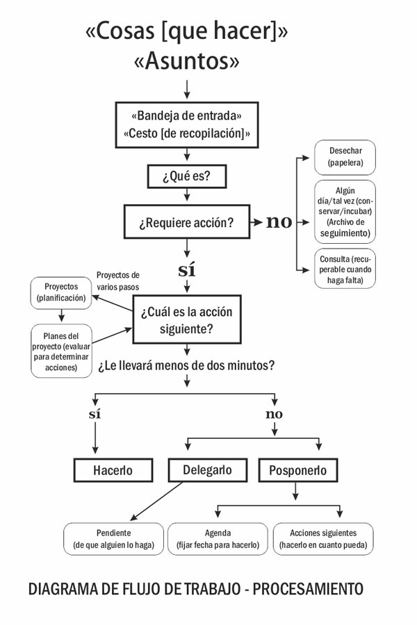
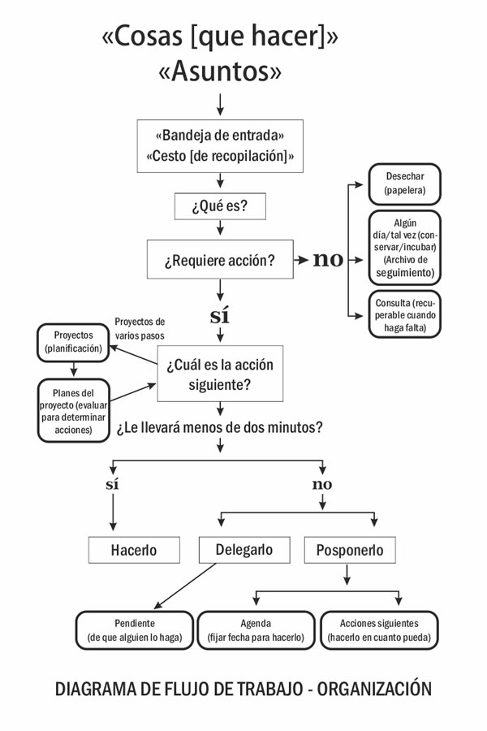
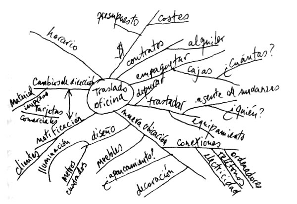
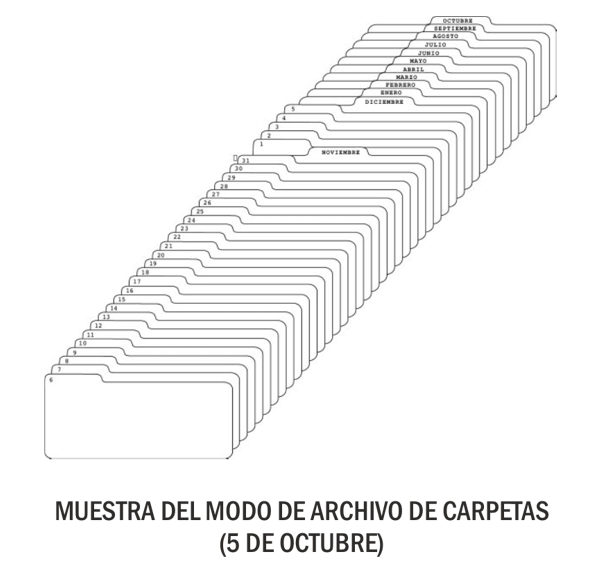
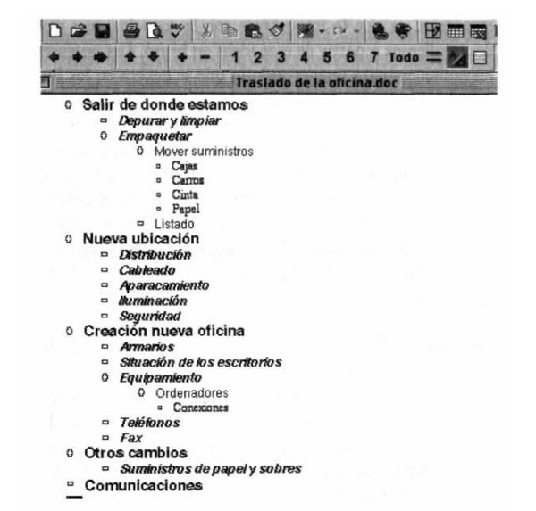

Este libro tiene un objetivo claro: demostrar que existe un sistema de organización del trabajo que nos permite liberar la mente de las tensiones que inhiben nuestra creatividad, y que nos hace más eficaces en todos los aspectos de la vida. David Allen sostiene que nuestra mente tiene una capacidad limitada para almacenar información y propone una serie de fórmulas prácticas para eliminar las tensiones e incrementar nuestra capacidad de trabajo y nuestro rendimiento. Organízate con eficacia se fundamenta en unas sencillas normas básicas de organización del tiempo, como por ejemplo la necesidad de determinar cuál es el siguiente paso a dar en cada uno de nuestros proyectos, o la regla de los dos minutos (si surge una tarea pendiente y se puede hacer en menos de dos minutos, debe hacerse inmediatamente). El sistema propuesto por Allen soluciona ansiedades y desconciertos, y nos permite transformar nuestro modo de trabajar y la manera de percibir nuestros retos cotidianos.
David Allen
Máxima productividad personal sin estrés
ePub r1.0
Gregory 05.08.15
Título original: Getting things done
David Allen, 2002
Traducción: Librada Piñero García
Traducción: Carles Andreu Saburit
Retoque de cubierta: Gregory
Editor digital: Gregory
ePub base r1.2
Para Kathryn, mi extraordinaria compañera en la vida y en el trabajo.
Son muchos los mentores, compañeros, colegas, amigos y colaboradores que a lo largo de los años han contribuido a hacer que comprendiera y desarrollan los principios que expongo en Organízate con eficacia. George Mayer, Michael Bookbinder, Ted Drake, Dean Acheson y Russell Bishop han desempeñado papeles clave a lo largo de mi trayectoria personal y profesional. Ron Medved, Saily McGhee, Leslie Boyer, Tom Boyer, Pam Tarrantine y KelIy Forrister han contribuido a mi trabajo, cada uno a su manera, durante el proceso de maduración.
Además, decenas de miles de clientes y participantes en talleres me han ayudado a validar esos modelos y matizarlos. Estoy especialmente agradecido a los estrategas veteranos de recursos humanos, que desde el comienzo reconocieron la trascendencia de este material en el cambio de sus culturas corporativas, y que me ofrecieron la oportunidad de desarrollarlo; en particular a Michael Winston, Ben Cannon, Susan Valaskovic, Patricia Carlyle, Manny Berger, Carola Endicott, Klara Sztucinski y Elliott Kellman. El apoyo moral y administrativo que me han prestado Shar Kanan y Andra Carasso durante años es de un valor incalculable.
Este libro no habría visto la luz de la forma en que lo ha hecho sin la energía y las ideas singulares de Tom Hagan, John y Laura McBride, Steve Lewers, Doe Coover, Greg Stikeleather, Steve Shull y Manan Bateman. Asimismo, mucho del mérito corresponde a mi editora, Janet Goldstein, que ha sido una instructora maravillosa (y paciente) en el arte y oficio de escribir libros.
Finalmente, mi más sincero agradecimiento a mi entrenador espiritual, J-R, por guiarme de forma asombrosa y recordarme en todo momento mis auténticas prioridades; y a mi increíble esposa, Kathryn, por la confianza que ha depositado en mí, por amarme, por trabajar de firme y por la belleza que ha aportado a mi vida.
Bienvenido a una mina de oro de ideas y estrategias sobre cómo tener más energía, estar más relajado y conseguir muchas más cosas con mucho menos esfuerzo. Si usted es como yo, le gustará que las cosas se hagan y que se hagan bien, y al mismo tiempo deseará también saborear la vida de una forma que parece cada vez más difícil de alcanzar, si no llanamente imposible, cuando uno trabaja demasiado. Ésta no tiene que ser una proposición disyuntiva. Es posible hacer las cosas con eficacia al tiempo que se es deliciosamente feliz en el mundo de los quehaceres diarios.
Me parece que la eficiencia es algo bueno. Puede que lo que haga sea algo importante, interesante o útil; o puede que no, pero que igualmente se deba hacer. En el primer caso, querrá obtener todo lo posible como contrapartida a su inversión de tiempo y energía. En el segundo, pasar a tratar otros asuntos lo antes posible, sin dejar ningún cabo suelto.
Independientemente de lo que está haciendo, es probable que quiera estar más relajado, seguro de que lo que está haciendo en ese momento es exactamente lo que debe hacer: tomar una cerveza con su equipo después del trabajo, mirar a su hijo mientras duerme en su cunita a medianoche, responder a los correos electrónicos o pasar unos minutos rompiendo el hielo con un nuevo cliente potencial después de la reunión es justo lo que debería estar haciendo, tal y como lo está haciendo.
El arte de mantener la mente descansada y de ahuyentar de ella toda cuita y preocupación es, seguramente, uno de los secretos mejor guardados de los grandes hombres.
—CAPITÁN J. A. HATFIELD
El propósito de este libro es enseñarle a ser eficiente y relajarse al máximo siempre que lo necesite o lo desee.
Durante mucho tiempo he buscado, probablemente igual que usted, respuestas a las preguntas qué hacer, cuándo hacerlo y cómo hacerlo. Y tras veintitantos años desarrollando y aplicando nuevos métodos para la productividad personal y organizativa, además de años de rigurosa exploración en el campo del crecimiento personal, doy fe de que no existe una única solución que sirva para todo. Ningún software, seminario, modernísimo planificador personal, o declaración de intenciones simplificará su rutina diaria o tomará las decisiones por usted a medida que vayan pasando los días, las semanas y la vida. Y lo que es más, cuando aprenda a aumentar su productividad y su capacidad para tomar decisiones en un nivel, tendrá acceso a otro nivel de responsabilidades y objetivos creativos, cuyos nuevos retos pondrán a prueba la capacidad de cualquier fórmula sencilla o cliché de moda para obtener lo que quiere y de la forma que lo desee.
No obstante, aunque no hay ningún modo único para perfeccionar la organización personal y la productividad, podemos hacer algunas cosas para simplificarlo. A medida que he ido madurando, año tras año, he encontrado cosas más profundas, significativas y trascendentes en las que centrarme y de las que ser consciente. He descubierto procesos sencillos que todos podemos aprender a utilizar y que mejoran enormemente nuestra capacidad para liderar con las realidades de la vida diaria de forma constructiva y con anticipación.
En esta obra presento una recopilación de los descubrimientos sobre productividad personal realizados a lo largo de más de dos décadas, una guía para maximizar el output y minimizar el input, y para hacerlo en un mundo en el que el trabajo es cada vez más cuantioso y ambiguo. He pasado miles de horas enseñando a personas «en las trincheras» de sus mesas de trabajo, ayudándoles a procesar y organizar todas las tareas que tenían a mano. Los métodos que he descubierto han demostrado ser muy eficaces en todo tipo de organizaciones, a cualquier nivel de trabajo, en diferentes culturas, e incluso en casa y en la escuela. Tras veinte años de asesorar y formar a algunos de los profesionales más cualificados y productivos, sé que el mundo está muy necesitado de esos métodos.
Los altos ejecutivos están ansiosos por instaurar una «actitud implacable» como un estándar básico tanto para ellos mismos como para sus subordinados. Saben, igual que yo, que después de cerrar las puertas, cuando finaliza la jornada laboral, continúa habiendo llamadas sin contestar, tareas que se han de delegar, asuntos sin resolver surgidos en reuniones y conversaciones, responsabilidades personales desatendidas y decenas de correos electrónicos sin responder. Muchos de esos hombres de negocios tienen éxito porque las crisis que resuelven y las oportunidades que aprovechan superan los problemas que toleran y crean en su actividad diaria. No obstante, teniendo en cuenta el ritmo de los negocios y de la vida en la actualidad, esa ecuación es discutible.
Por un lado, necesitamos herramientas de probada eficacia que puedan ayudar a la gente a centrar sus energías de forma estratégica y táctica sin dejar que nada se escurra por entre las grietas. Y por otro, crear nuevos entornos de trabajo y habilidades que eviten que el estrés queme a las personas que más aportan. Necesitamos unos estándares de trabajo positivos que atraigan y retengan a los mejores trabajadores y a los más brillantes.
Sabemos que las empresas están muy faltas de esta información. Pero también que es necesaria en las escuelas, donde a nuestros hijos aún no se les enseña a procesar la información, a centrarse en los resultados o qué acciones deben llevar a cabo para conseguirlos. Y todos nosotros, individualmente, la necesitamos para aprovechar cada una de las oportunidades que se nos brindan y añadir valor a nuestro mundo de forma sostenible y autoalimentada.
El poder, la sencillez y la eficacia de lo que explico en Organízate con eficacia se experimentan mejor como experiencias, en tiempo real, con situaciones reales en su mundo real. Como no puede ser de otro modo, el libro estructura la esencia de este arte dinámico de gestión del flujo de trabajo y de la productividad personal de forma lineal. He intentado organizarlo para que a medida que avance vaya formándose una visión de conjunto al tiempo que obtiene una muestra de los resultados inmediatos.
El libro está divido en tres partes. La Primera parte describe el programa al completo. En ella se proporciona una breve visión general del sistema y una explicación de por qué es único y oportuno, y después se presentan las propias metodologías en su forma más básica y condensada. La Segunda parte muestra cómo implementar el sistema. Se trata de un entrenamiento personal, paso a paso, que familiariza con los aspectos esenciales de la aplicación de los modelos. La Tercera parte ahonda aún más en la cuestión y describe los resultados más sutiles y profundos que usted puede esperar al incorporar las metodologías y modelos a su trabajo y a su propia vida.
Quiero que suba al tren de un salto. Quiero que compruebe todo esto, incluso que lo cuestione. Quiero que descubra por usted mismo que lo que le prometo no sólo es posible, sino que podrá alcanzarlo al instante. Y quiero que sepa que todo lo que propongo es fácil de hacer. No requiere ninguna habilidad nueva, en absoluto. Usted ya sabe centrarse, escribir cosas, tomar decisiones sobre resultados y acciones, repasar opciones y elegir. Constatará que muchas de las cosas que ha estado haciendo por instinto e intuición estaban bien. Yo le proporcionaré modos de afianzar esas nuevas capacidades básicas en nuevos niveles de eficacia. Quiero inspirarle para que ponga todo esto en un nuevo dispositivo de comportamiento que expandirá su poder mental.
A lo largo del libro me remito a la formación que ofrezco y a los seminarios que imparto sobre este tema. Durante los últimos veinte años he trabajado como «asesor de administración de empresas», tanto en solitario como formando parte de pequeños equipos de asociados. La mayor parte del tiempo la he dedicado a trabajar como formador en productividad personal y he dirigido seminarios basados en los métodos que aquí se presentan. Junto con mis colegas, he formado a cientos de miles de profesionales e impartido cientos de seminarios públicos. De ese bagaje es de donde he extraído mi experiencia, así como los ejemplos a los que me refiero.
La promesa que acabo de hacer queda muy bien descrita por lo que dijo uno de mis clientes: «Cuando empecé a aplicar de forma habitual los principios de este programa, me salvaron la vida… pero cuando empecé a aplicarlos a rajatabla, me la cambiaron. Se trata de una vacuna contra la lucha cotidiana por apagar fuegos (lo que algunos llaman las urgencias y crisis de cualquier jornada laboral) y un antídoto para el desequilibrio que muchas personas se infligen a sí mismas».
El arte de organizarse con eficacia
Es posible que una persona tenga una cantidad abrumadora de cosas que hacer y, a pesar de ello, continúe funcionando con un alto nivel de productividad, con la mente despejada y con una sensación positiva de control y tranquilidad. Sin duda, se trata de una forma estupenda de vivir y trabajar, con un alto nivel de eficiencia. Se trata, en suma, del estilo de hacer las cosas exigido a los profesionales de éxito y alto rendimiento. Usted ya sabe qué tiene que hacer para alcanzar ese estado. Pero, si usted es como la mayoría de personas, lo que necesita es aprender a aplicar esas habilidades en el momento oportuno, y de un modo más completo y sistemático para controlar las cosas y no que ellas lo controlen a usted. Aunque el método y las técnicas que describo en este libro son de carácter eminentemente práctico y están basados en el sentido común, la mayoría de las personas tendrán que modificar algunos de sus hábitos de trabajo para poder implementar este sistema. Los pequeños cambios necesarios —cambios en el modo de aclarar y organizar todo cuanto requiera su atención— podrían representar un cambio significativo en la manera en que percibe algunos aspectos clave de su trabajo diario. Muchos de mis clientes se han referido a esto como un cambio significativo de paradigma.
La ansiedad es consecuencia de la falta de control, organización, preparación y acción.
—DAVID KEKICH
Los métodos que presento a continuación se basan en dos objetivos clave: (1) captar todas las cosas que hay que hacer —ahora, más adelante, algún día, grandes, pequeñas o medianas— para colocarlas en un sistema lógico y fiable que no tenga que llevar en la cabeza ni en la mente; y (2) hacer que usted adquiera la disciplina necesaria para tomar decisiones sobre todo aquello a lo que usted da entrada en los asuntos de su vida, de modo que siempre tenga un plan para sus «acciones siguientes» que pueda poner en marcha o reconsiderar en cualquier momento.
Este libro ofrece un método de eficacia probada para gestionar con el máximo rendimiento el flujo de trabajo. Asimismo, proporciona buenas herramientas, consejos, técnicas y trucos para conseguirlo. Como usted descubrirá, los principios y métodos expuestos pueden utilizarse y aplicarse desde el primer momento a todo cuanto tenga que hacer tanto en su vida personal como en su vida profesional [1]. Podrá incorporar, como han hecho otras muchas personas antes que usted, lo que yo describo como un estilo dinámico y continuo de actuar en su trabajo y en su propio mundo. O, como también han hecho otras, puede limitarse a utilizar este libro como guía para tener más control cuando lo crea conveniente.
Casi todas las personas con las que trato últimamente parecen sentir lo mismo: se tienen que ocupar de demasiadas cosas y les falta tiempo para hacerlo todo. Hace poco, en el transcurso de una sola semana, pasé consulta con un socio de una importante firma multinacional de inversión que estaba preocupado porque las nuevas responsabilidades de administración de la empresa que le ofrecían iban a interferir más allá de lo tolerable en sus obligaciones familiares, y con una directora de recursos humanos de nivel medio que se esforzaba porque no la desbordasen sus ciento cincuenta y tantos mensajes de correo electrónico diarios a los que tenía que responder, estimulada por el objetivo de duplicar el personal de la oficina regional de la empresa y hacer que en un año pasara de mil cien empleados a dos mil, y todo eso mientras intentaba continuar haciendo vida social los fines de semana.
En este nuevo milenio ha surgido una paradoja: la gente mejora su calidad de vida, pero al mismo tiempo su nivel de estrés se dispara al asumir una carga mayor de la que sus recursos le permiten manejar. Es como si comieran con los ojos. Y, de un modo u otro, la mayoría de las personas están frustradas y perplejas en lo que respecta a mejorar su situación.
Intento tomarme los días de uno en uno, pero a veces varios días me atacan de golpe.
—ASHLEY BRILUANT
Un factor determinante en el nivel creciente de estrés es que la naturaleza real de nuestros empleos ha cambiado de una, forma mucho más radical y rápida de lo que lo han hecho nuestra preparación y capacidad para afrontar el trabajo. Tan sólo en la segunda mitad del siglo XX, lo que constituía el «trabajo» en el mundo industrializado pasó de ser una actividad de producción y distribución en cadena a convertirse en lo que Peter Drucker ha denominado muy acertadamente «trabajo del saber».
Antiguamente, la naturaleza del trabajo era evidente. Había que arar la tierra, cuidarse del mantenimiento de las máquinas, llenar las cajas, ordeñar las vacas, hacer cacharros. Se sabía qué trabajo tenía que hacerse: saltaba a la vista. Estaba claro cuándo estaba acabado y cuándo no.
En la actualidad, muchos de nosotros tenemos entre manos proyectos que carecen de límites definidos. La mayoría de las personas que conozco tienen entre manos al menos media docena de cosas en este preciso instante, cosas que aunque contaran con el resto de sus vidas para seguir haciéndolas, no serían capaces de acabarlas a la perfección. Es probable que usted se enfrente al mismo dilema. ¿Hasta qué punto nos puede bien esa conferencia? ¿Hasta qué punto será efectivo el programa de formación o la estructura del paquete salarial de sus ejecutivos? ¿Hasta qué punto dará que pensar el ensayo que está escribiendo? ¿Hasta qué punto podría ser motivadora la reunión de personal? ¿Hasta qué punto podría ser funcional la reorganización? Y una última pregunta: ¿De cuántos datos disponemos que sean relevantes para realizar esos proyectos «mejor»? La respuesta es una infinidad, de fácil consulta, por lo menos en potencia, a través de Internet.
Casi todos los proyectos podrían realizarse mejor, y en la actualidad se dispone de muchísima información que podría hacerlo posible.
Por otra parte, la falta de límites puede generar más trabajo para todo el mundo. Muchas de las estructuras organizativas actuales exigen comunicación, cooperación y compromiso entre distintos departamentos. Los silos individuales que son nuestras oficinas se están desmoronando, y con ellos, el lujo de no tener que leer copias de los correos electrónicos del departamento de marketing, o del de recursos humanos, o de algún comité específico creado para encargarse de algún asunto en concreto.
Los límites cada vez más difusos de nuestros proyectos y de nuestro trabajo en general ya serían un reto suficiente para cualquier persona, pero ahora hemos de añadir a esa ecuación los cambios constantes en la definición de nuestros trabajos. A menudo les pregunto a los asistentes a mis seminarios: «¿Quién de los aquí presentes hace sólo aquello para lo que le contrataron?». Rara vez levanta alguien la mano. Por muy amorfo que pueda resultar el trabajo de límites difusos, si usted tuviera la oportunidad de aguantar el tiempo suficiente con un trabajo perfectamente definido, seguramente conseguiría averiguar lo que tiene que hacer —cuánto, a qué nivel— para mantenerse en su sano juicio. En cambio, son pocos los que disfrutan aún de ese lujo, por dos motivos:
Las organizaciones con las que estamos involucrados parecen estar en constante cambio, con objetivos, productos, compañeros, clientes, mercados, tecnologías y propietarios siempre cambiantes. Todo eso sacude necesariamente las estructuras, formas, papeles y responsabilidades.
En la actualidad el perfil del profesional promedio es más que nunca el de una persona independiente que cambia de carrera tan a menudo como sus padres cambiaban de trabajo en su época. Incluso las personas de más de cuarenta y cincuenta años se adaptan a los estándares de crecimiento continuado. Ahora sus perspectivas se encuadran en la tendencia general, bajo la cobertura del paraguas conceptual del «desarrollo ejecutivo, administrativo y profesional», lo que significa sencillamente que no continuarán haciendo lo que hacen ahora durante un período prolongado.
Ahora son pocas las cosas que parecen claras durante mucho tiempo, y lo mismo ocurre con nuestro trabajo y con la aportación que debemos realizar para hacerlo bien. Permitimos que entren grandes cantidades de información y comunicación del resto del mundo y generamos un volumen de ideas y acuerdos con nosotros mismos y otras personas de nuestro propio mundo. Sin embargo, no estamos equipados adecuadamente para afrontar esa enorme cantidad de obligaciones internas y externas.
Nunca podemos estar del todo preparados para algo que es completamente nuevo. Debemos adaptarnos, pero toda adaptación radical supone una crisis de autoestima: nos sometemos a un examen, nos ponemos a prueba. Para afrontar ese cambio drástico sin que haya repercusiones internas es necesario contar con la confianza de los subordinados.
—ERIC HOFFER
Cuanta más prisa tengo, más retrasado me encuentro.
—ANÓNIMO
Ni nuestra educación estándar, ni los modelos tradicionales de administración del tiempo, ni la plétora de herramientas para organizamos que tenemos a nuestra disposición —como las agendas personales, el programa Outlook de Microsoft, o las agendas electrónicas (PDA)—, nos han proporcionado medios viables para satisfacer las nuevas demandas que se nos formulan. Si ha intentado utilizar alguno de estos procesos o herramientas, probablemente le haya parecido que resultan inadecuados para hacer frente a la velocidad, la complejidad y los cambios de prioridades inherentes a lo que está haciendo. La capacidad de tener éxito, estar relajado y mantener el control en estos fructíferos aunque turbulentos tiempos requiere nuevas maneras de pensar y de trabajo. Necesitamos nuevos métodos, tecnologías y hábitos de trabajo que nos ayuden a dominar nuestro mundo.
Los planteamientos tradicionales sobre la manera en que nos administrábamos el tiempo y nos organizábamos resultaron de ayuda en su momento, ya que proporcionaron puntos de referencia útiles para una fuerza de trabajo que pasó de la modalidad de cadena de montaje a un nuevo tipo de trabajo caracterizado por la necesidad de decidir qué hacer y tener el criterio necesario para saber cuándo hacerlo. Cuando el tiempo como tal se convirtió en un factor de trabajo, las agendas personales se convirtieron en una herramienta clave. (Aún a finales de la década de 1980 muchos profesionales consideraban que la esencia de la organización consistía en tener una agenda de bolsillo, y hoy en día aún son muchas las personas que creen que la agenda es la herramienta principal con que cuentan para mantener el control.) Junto con el tiempo discrecional también apareció la necesidad de elegir bien qué hacer. Los códigos de prioridad «ABC» y las listas diarias de tareas son técnicas clave que se desarrollaron para facilitar de forma significativa el proceso de elección. Si bien cada cual tenía la libertad de decidir qué hacer, también tenía la responsabilidad de hacer buenas elecciones, según sus «prioridades».
El viento y las olas están siempre del lado de los marino, más sagaces.
—EDWARD GIBBON
Es probable que haya descubierto, al menos a algún nivel, que la agenda, aunque importante, sólo le permite abordar de forma eficaz una pequeña parte de lo que se necesita organizar. Por otra parte, las listas diarias de tareas y los códigos de prioridad simplificados han demostrado ser inapropiados para tratar el volumen y la naturaleza variable de la cantidad media de trabajo que tienen los profesionales. Cada vez más el trabajo de las personas está constituido por decenas o incluso cientos de correos electrónicos diarios, sin que se pueda ignorar una sola petición, queja u orden. Pocas son las personas que pueden (o que deberían) esperar codificarlo todo en función de si tiene una prioridad «A», «B» o «C», o que puedan llevar una especie de lista predeterminada de tareas que no se vaya al traste tras la primera llamada telefónica o interrupción de su jefe.
En el otro extremo del espectro, un gran número de libros, modelos, seminarios y gurús del mundo de la empresa han defendido la «visión global» como la solución para afrontar nuestro complejo mundo. Según esta visión, aclarar los objetivos y valores principales otorga orden, significado y dirección a nuestro trabajo. Sin embargo, en la práctica, el ejercicio bienintencionado de pensar en los valores a menudo no alcanza los resultados deseados. He visto fracasar demasiados de esos esfuerzos, por uno o varios de los motivos siguientes:
Existen demasiadas distracciones en cada momento y en el día a día, en lo que a compromisos se refiere, como para centrarse adecuadamente en los niveles superiores.
Los sistemas de organización personal ineficaces crean una enorme resistencia subconsciente para llevar a cabo proyectos y objetivos aún mayores, que probablemente no se aborden satisfactoriamente y que a su vez provocarán aún más distracción y estrés.
Cuando los niveles y valores superiores están claros de verdad, surge el impedimento de nuestros estándares, que nos hace percatarnos de que las necesidades no son en absoluto lo único que cambia. Estamos experimentando una importante reacción negativa ante la avalancha de cosas que tenemos que hacer. Y ¿qué ha dado lugar a la mayoría del trabajo que tenemos en esas listas? ¡Nuestros valores!
Centrarse en los valores no simplifica la vida, sino que da significado y dirección; pero también mucha más complejidad.
Desde luego, centrarse en los resultados y en los valores es un ejercicio crítico, pero no significa que haya menos cosas que hacer, ni que los desafíos para realizarlas sean menores. Todo lo contrario: sube la apuesta en el juego, que debe continuar jugándose día a día. Por ejemplo, para un ejecutivo de recursos humanos, decidir tratar aspectos relacionados con la calidad de vida laboral con el fin de atraer y mantener talentos clave no simplifica las cosas.
En nuestra nueva cultura de trabajo del saber, falta una pieza: un sistema con valores y herramientas coherentes que funcione eficazmente en el nivel en que se da realmente el trabajo. Debe incorporar los resultados de una visión de conjunto así como el menor de los detalles pendientes, administrar múltiples niveles de prioridades, mantener el control sobre cientos de nuevos inputs diarios, ahorrar mucho más tiempo y esfuerzo de los necesarios para su mantenimiento, y facilitar la realización de las tareas.
La vida se niega por falta de atención, ya sea por limpiar ventanas o por intentar escribir una obra maestra.
—NADIA BOUIANGER
Reflexione por un momento sobre cómo sería su organización personal si ésta estuviera absolutamente bajo control, a todos los niveles y a todas horas. ¿Qué le parecería poder dedicar el ciento por ciento de su atención a lo que tuviera entre manos, a lo que eligiera, sin distracciones?
Pues bien, eso es posible. Existe un modo de controlarlo todo, relajarse y hacer las cosas importantes con el mínimo esfuerzo, en todos los ámbitos de su vida y su trabajo. Puede experimentar lo que en artes marciales se llama una «mente como el agua» y aquello a lo que los atletas de élite se refieren como la «zona», dentro del complejo mundo en el que estamos metidos. De hecho, es probable que ya haya experimentado ese estado alguna que otra vez.
La capacidad personal de generar energía es directamente proporcional a la capacidad de relajarse.
Se trata de una situación en la que trabajar, actuar y ser en la que la mente está despejada y ocurren cosas constructivas. Todo el mundo puede alcanzar ese estado, y cada vez es más necesario para afrontar con eficacia la complejidad de la vida del siglo XXI. Cada vez será una condición más necesaria para los profesionales de alto rendimiento que deseen mantener el equilibrio y un rendimiento positivo y constante de su trabajo. El remero Craig Lambert describe qué se siente al experimentar ese estado en Mind over water (Houghton Mifflin, 1998):
Los remeros utilizan una palabra para definir ese estado de no-fricción: columpio… Recuerde la pura alegría de montar en un columpio del patio trasero, un sencillo ciclo de movimiento, el impulso procedente del propio columpio que nos lleva sin que nosotros lo forcemos a hacerlo. Nos damos impulso con las piernas para trazar un arco más alto, pero la fuerza de la gravedad es la que realiza la mayor parte del trabajo. Más que columpiarnos, nos están columpiando. La embarcación también te columpia. El casco quiere moverse deprisa: la velocidad canta en sus líneas y su estructura. Nuestro trabajo no es otro que trabajar con el casco, dejar de frenarlo en nuestra absurda batalla por ir más deprisa. Intentar remar con demasiado ahínco supone un sabotaje a la velocidad de la embarcación. La intención se convierte en esfuerzo y el esfuerzo se anula a sí mismo. Los arribistas se esfuerzan por ser aristócratas, pero al hacerlo demuestran que no lo son en absoluto. Los aristócratas no necesitan esforzarse porque ellos ya lo han conseguido. El columpio es un estado de llegada.
Cualquier cosa que provoque en usted una reacción desproporcionada, por exceso o por defecto, puede controlarle, y con frecuencia lo hace.
El kárate recurre a una imagen para definir la posición de alerta perfecta: una «mente como el agua». Imagine que lanza un guijarro a un estanque de aguas tranquilas. El agua responde de forma totalmente apropiada a la fuerza y la masa de la entrada; después recupera la calma. Es decir, no tiene una reacción inapropiada, ni por exceso ni por defecto.
La potencia de un golpe de kárate se debe a la velocidad, no a la fuerza del músculo; proviene de un pequeño estallido concentrado al final del golpe. Ese es el motivo por el que personas de complexión física no muy robusta pueden aprender a romper tablas y ladrillos con las manos: no hace falta tener callos o fuerza bruta; basta con poseer la capacidad de generar un golpe bien dirigido y veloz. Los músculos tensos son lentos, de modo que los niveles superiores del entrenamiento de las artes marciales enseñan y requieren ante todo equilibrio y relajación. Tener la mente despejada y ser flexible son aspectos esenciales.
Si tienes la mente vacía siempre está preparada para cualquier cosa, abierta a todo.
—SHUNRYU SUZUKI
Cualquier cosa que provoque en usted una reacción inapropiada, por exceso o por defecto, puede dominarle, y a menudo lo hace. Reaccionar inadecuadamente ante un correo electrónico, un miembro de su equipo, sus proyectos, las revistas que le quedan por leer, sus propias ideas sobre lo que necesita, sus hijos o su jefe le llevará a obtener resultados menos eficaces de lo que usted habría deseado. La mayoría de las personas prestan más o menos atención a las cosas de la que éstas se merecen, sencillamente porque no operan con una «mente como el agua».
Podemos hacer una cosa, y las personas más felices son las que lo pueden hacer basta el límite de su capacidad: podemos estar completamente presentes, estar ahí, poner toda nuestra atención en la oportunidad que aparece ante nosotros.
—MARK VAN DOREN
Piense en la última ocasión en que se sintió altamente productivo. Es probable que tuviera la sensación de tener las cosas controladas: no estaba estresado, se hallaba muy concentrado en lo que hacía, no sentía el paso del tiempo (¿ya es la hora de comer?), y sentía que estaba progresando notablemente hacia un resultado valioso. ¿Le apetecería tener más experiencias de ese tipo?
Por otro lado, si se encuentra francamente lejos de ese estado (y comienza a sentir que pierde el control, que está estresado, descentrado, aburrido y atascado), ¿tiene la capacidad de recuperarlo? En ese punto es donde la metodología de Organízate con eficacia tendrá más impacto en su vida, puesto que le mostrará cómo recuperar el estado de la «mente como el agua», con todos sus recursos y facultades funcionando a tope.
Después de más de veinte años asesorando y formando a profesionales he descubierto algo esencial: la mayor parte del estrés que padece la gente es consecuencia de la mala administración de los compromisos que tienen o aceptan. Incluso las personas que no son conscientes de estar estresadas experimentan invariablemente una sensación de mayor relajación y capacidad de concentración, así como un incremento de la energía productiva, cuando aprenden a dominar con eficacia los «frentes abiertos» que hay en sus vidas.
Cualquier cosa que no encaje en el lugar en que se encuentra, tal y como es, es un «frente abierto» que llama su atención.
Es probable que haya hecho muchas más concesiones consigo mismo de lo que cree, y que tras todas y cada una de ellas, sean grandes o pequeñas, haya una parte subconsciente de usted. Se trata de los «frentes abiertos» o «incompletos», que yo defino como cualquier cosa que atrae nuestra atención y que, tal como es, no encaja en el lugar en que está. Los frentes abiertos abarcan desde tareas pendientes de gran calado, como «erradicar el hambre en el mundo», hasta otras más modestas, como «contratar a una nueva secretaria», y así hasta las tareas más nimias del tipo «comprar otro sacapuntas eléctrico».
Es posible que haya contraído consigo mismo aún más compromisos de los que tiene conciencia. Medite sobre cuántas cosas siente que tiene una pizca de responsabilidad, sea para cambiarlas, acabarlas, o hacer algo al respecto. Por ejemplo, tiene la obligación de atender cualquier comunicación que aterrice en su correo electrónico, buzón de voz o «bandeja de entrada». Y seguramente le parezca que en sus áreas de responsabilidad se han de definir un gran número de proyectos, así como aclarar objetivos y directrices, desarrollar su carrera y, en general, mantener el equilibrio en la vida. Ha aceptado un nivel de responsabilidad interna en todos los aspectos de su vida y su trabajo que representan múltiples frentes abiertos.
Para poder lidiar de forma eficaz con todo eso, en primer lugar debe identificar y agrupar todo aquello que le esté «tocando el timbre», y después planear cómo manejarlo. Puede que le parezca algo sencillo, pero en la práctica la mayoría de la gente no sabe cómo hacerlo con constancia.
La buena gestión de los compromisos requiere implementar algunas actividades y comportamientos básicos:
En primer lugar, si tiene algo en la cabeza, su mente no está despejada. Cualquier cosa que considere inacabada en algún sentido ha de quedar integrada en un sistema fiable que sea exterior a su mente, lo que yo denomino un «cubo de recogida», que revisará de forma regular y al que sabe que acudirá.
En segundo lugar, debe aclarar exactamente cuál es su compromiso y decidir qué ha de hacer, si es que hay algo que hacer, para progresar hacia su consecución.
En tercer lugar, una vez que haya decidido cuáles son todas las acciones que ha de llevar a cabo, debe mantener los recordatorios de las mismas bien organizados en un sistema que revise con regularidad.
Le aconsejo que escriba el proyecto o situación que más tenga en mente en este momento. ¿Qué cosas le fastidian, distraen, interesan, o de alguna manera consumen gran parte de su atención consciente? Puede tratarse de un proyecto o de un problema que tenga literalmente delante, algo de lo que no tiene más remedio que encargarse, o una situación que siente que tendrá que afrontar sin pérdida de tiempo.
Puede que tenga previstas unas vacaciones sobre las que aún haya de tomar algunas decisiones de última hora; o tal vez haya heredado seis millones de dólares y no sepa qué hacer con ellos. Puede tratarse de cualquier cosa.
¿Lo ha hecho? Muy bien. Ahora escriba una oración sencilla describiendo el resultado satisfactorio que usted desea para ese problema o situación. En otras palabras, ¿qué tendría que suceder para que usted pasara ese proyecto a la lista de las cosas hechas? Podría ser algo tan sencillo como «Ir de vacaciones a Hawai», «Resolver el problema del cliente X», «Resolver el tema de la universidad de Susan», «Poner en claro la nueva estructura departamental» o «Implantar la nueva estrategia de inversión». ¿Está claro? Perfecto.
A continuación escriba la primera acción física en el tiempo necesaria para hacer que la situación avance. Si no tuviera nada más que hacer en la vida aparte de zanjar ese tema, ¿adónde iría en este preciso instante y qué acción visible llevaría a cabo? ¿Cogería el teléfono y haría una llamada? ¿Se dirigiría a su ordenador para escribir un correo electrónico? ¿Se sentaría ante la mesa con papel y lápiz y apuntaría cuanto surgiera en una sesión de lluvia de ideas[2]? ¿Hablaría cara a cara con su pareja, su secretaria, su abogado o su jefe? ¿Compraría clavos en la ferretería? ¿Qué haría? ¿Ya lo sabe? Bien.
¿Cree que tiene algún valor haber pasado esos dos minutos pensando? Si usted es como la amplia mayoría de las personas que realizan ese ejercicio en mis seminarios, experimentará que aumentan, al menos una pizca, su control, relajación y capacidad de concentración. También se sentirá más motivado para hacer algo efectivo respecto a la situación sobre la que hasta ahora se ha limitado a pensar. Imagine que esa motivación se multiplica por mil, como un modo de vida y de trabajo.
Si tras realizar este pequeño ejercicio ha experimentado algo positivo, piense en esto: ¿Qué ha cambiado? ¿Qué ha ocurrido para crear esa condición mejorada en su propia experiencia? La situación en sí misma ya no existe, al menos en el mundo físico, pero lo cierto es que aún no ha finalizado. Lo que probablemente haya ocurrido es que haya adquirido una definición más clara del resultado deseado y de la siguiente acción requerida.
Pero ¿qué ha generado eso? La respuesta es pensar. No mucho, sólo lo suficiente para solidificar su compromiso y los recursos necesarios para cumplir con él.
Piensa como un hombre de acción; actúa como un hombre de pensamiento.
—HENRI BERGSON
Bienvenido a la experiencia real de la «gestión del conocimiento», y a un principio operativo profundo: tiene que pensar en las cosas que ha de hacer más a menudo de lo que se da cuenta, pero no tanto como teme que debería hacerlo. Como escribe Peter Drucker: «En la gestión del conocimiento… la tarea no se supone, sino que ha de determinarse. “¿Cuáles son los resultados que se esperan de ese trabajo?” es… la pregunta clave para hacer que el gestor del conocimiento sea productivo, y se trata de una pregunta que requiere decisiones arriesgadas. Por lo general, no suele haber una única respuesta correcta, sino varias opciones. Asimismo, se han de especificar claramente los resultados para poder alcanzar un buen nivel de productividad».
El antepasado de toda acción es un pensamiento.
—RALPH WALDO EMERSON
La mayoría de las personas se muestran reacias a provocar la explosión de energía necesaria para aclarar el significado real que tiene para ellas algo que han de dejar entrar en su mundo, y a decidir qué han de hacer al respecto. Nunca nos han enseñado que tengamos que pensar en nuestro trabajo antes de poder hacerlo: gran parte de nuestra actividad diaria ya viene definida por las cosas que aún se han de hacer o mover y que clavan la vista en nosotros cuando vamos a trabajar, o por la familia que ha de alimentarse, por la colada que hay que lavar o los niños que hay que vestir. Pensar en una forma resumida de definir los resultados apetecidos es algo que pocas personas creen que tengan que hacer. Sin embargo, lo cierto es que pensar en los resultados es uno de los métodos más efectivos para convertir nuestros deseos en realidad.
La mayoría de las veces, la razón por la que «tiene algo en la cabeza» es porque usted querría que fuera diferente de como es y sin embargo:
No ha aclarado exactamente cuál es el resultado que desea;
No ha decidido cuál ha de ser la próxima medida material que debe adoptar; y/o
No ha colocado recordatorios del resultado y de la medida requerida en un sistema en el que confíe.
Ese es el motivo por el que tiene algo en la cabeza. Su cerebro no podrá abandonar la tarea hasta que haya aclarado esos pensamientos y tomado esas decisiones, y los datos resultantes hayan sido almacenados en un sistema en el que usted esté absolutamente convencido de que pensará tan a menudo como sea necesario. Puede engañar a cualquiera, pero no a su propia mente, porque ella sabe si usted ha llegado o no a las conclusiones necesarias, y si ha puesto los resultados y los recordatorios en un lugar de confianza para que reaparezcan en su mente consciente en el momento adecuado. Si no ha hecho esas cosas, su mente no dejará de hacer horas extras. E incluso, en el caso de que ya haya decidido cuál será el siguiente paso que dará para resolver un problema, su mente no podrá dejarlo de lado a menos que usted haya escrito un recordatorio en un lugar en el que ella sepa que usted mirará sin falta. Continuará presionándole por no haber dado ese paso, normalmente cuando usted no pueda hacer nada al respecto, lo cual no hará sino acrecentar su estrés.
Esta preocupación constante e improductiva que experimentamos por todo lo que tenemos que hacer es lo que más tiempo y energía consume.
—KERRY GLEESON
Al menos una parte de su mente es realmente estúpida, de un modo bastante interesante. Si tuviera alguna inteligencia innata le recordaría a usted las cosas que tiene pendientes sólo cuando usted pudiera hacer algo al respecto.
¿Tiene por algún rincón una linterna con las pilas gastadas? ¿Cuándo se le ocurre a la mente recordarle que ha de comprar pilas? ¡Cuando se percata de que las otras están agotadas! La mente no es muy brillante que digamos. Si su mente tuviera una inteligencia innata le recordaría que hay que comprar pilas cuando las viera en alguna tienda. Y, mejor aún, cuando viera las pilas del tamaño adecuado.
Entre la hora a la que se ha levantado esta mañana y este momento, ¿ha pensado en alguna cosa que haya de hacer y que aún no haya hecho? ¿Lo ha pensado en más de una ocasión? ¿Por qué motivo? Pensar en algo en lo que no se puede progresar es una pérdida de tiempo y energía. Además, no hace más que acrecentar la propia ansiedad sobre lo que uno debería estar haciendo y sin embargo no hace.
Domina tu mente o te dominará ella a ti.
—HORACIO
Al parecer, la mayoría de las personas dejan que la mente las domine, sobre todo en lo referente al síndrome del «demasiadas tareas pendientes». Es probable que usted haya encomendado muchas de sus tareas, muchos de sus frentes abiertos, a una entidad de su comité interno que es incapaz de tratar esas cosas con eficacia tal como son, es decir, a su mente.
Defino «cosas» del siguiente modo: todo aquello a lo cual ha permitido entrar en su mundo psicológico o físico y cuyo lugar idóneo no es en el que está, aunque aún no haya decidido el resultado que desea para ello ni la próxima acción en relación con ello. La causa de que la mayoría de los sistemas de organización no le funcionen a mucha gente es que aún no han hecho la transformación de todas las «cosas» que intentan organizar. Mientras sigan siendo «cosas», no serán controlables.
La mayoría de las listas de tareas pendientes que he visto a lo largo de los años (en los casos en que la gente las tenía) eran meros listados de «cosas», no inventarios del trabajo real resultante que había que hacer. Se trataba de recordatorios parciales de muchas cosas que no estaban resueltas y que todavía no se habían traducido en resultados y acciones, es decir, en el esbozo detallado de lo que las personas que habían elaborado las listas tenían pendiente.
Tenemos que transformar todas las «cosas» que intentamos organizar en «cosas» sujetas a acción que hemos de hacer.
Las «cosas» no son de por sí algo malo. Lo que por su naturaleza domina nuestra atención suele mostrarse como «cosas». Pero una vez que las «cosas» entran en nuestra vida y en nuestro trabajo, tenemos la obligación para con nosotros mismos de definir y aclarar su significado. Esa es nuestra responsabilidad como gestores del conocimiento: si las «cosas» ya estuvieran transformadas y claras, probablemente no se requeriría de nosotros más valor que el del trabajo físico.
Al concluir uno de mis seminarios, la directiva de una importante empresa de biotecnología miró de nuevo las listas de tareas pendientes que había confeccionado hasta entonces y dijo, que «aquello era una mancha amorfa de cosas imposibles de hacer». Es la mejor descripción que he oído de lo que ocurre con las listas de organización en la mayoría de sistemas personales. Casi todo el mundo ha intentado organizarse reordenando listas incompletas de cosas poco definidas: aún no se han dado cuenta de qué es lo que tienen que organizar para obtener un resultado positivo real, ni de lo mucho que lo necesitan. Han de agrupar todas las cosas en las que tengan que pensar y después, si quieren que sus esfuerzos organizativos tengan éxito, pensar en ellas.
Usted puede entrenarse, como un atleta, para ser más rápido, reaccionar mejor, anticiparse a los acontecimientos y estar activo y más centrado en la gestión del conocimiento. Puede pensar con más claridad y administrar los resultados con más facilidad y control. Puede reducir al mínimo los cabos sueltos de todo el espectro de su vida laboral y privada, y conseguir hacer muchas más cosas con menos esfuerzo. Y también puede tomar decisiones de entrada relativas a todas las «cosas» que va acumulando y crear procedimientos operativos estándar de vida y trabajo en este nuevo milenio.
No obstante, antes de conseguir todo lo anterior necesitará habituarse a tener la mente despejada y, como hemos visto, la forma de lograrlo no consiste en administrar el tiempo, la información o las prioridades. Después de todo:
No por sacarles el jugo a cinco minutos acabará teniendo seis;
Usted no administra una sobrecarga de información: de lo contrario, al entrar en una biblioteca se moriría, o la primera vez que se conectara a Internet o que abriera un listín telefónico, estallaría; y
Usted no administra prioridades, las tiene.
En lugar de eso, la clave para gestionar todas las «cosas» es administrar las acciones.
Lo que haga con su tiempo, lo que haga con la información y lo que haga con su cuerpo y la forma como enfoque sus prioridades, son las verdaderas opciones con que cuenta y a las que tiene que asignar sus recursos limitados. Lo que está en juego es cómo tomar decisiones adecuadas relacionadas con lo que tenemos que hacer en cualquier momento. Lo que cuenta es cómo administramos las acciones.
Si bien lo anterior puede parecer obvio, se sorprendería al descubrir que la mayoría de las personas mantienen sin determinar gran cantidad de acciones siguientes que tienen que ver con numerosos proyectos y compromisos. Resulta extremadamente difícil administrar acciones que no se han identificado o sobre las que no se ha tomado una decisión. La mayoría de la gente ha de hacer decenas de cosas para progresar en muchos frentes, pero aún no sabe cuáles son esas cosas. La queja tan común, «No tengo tiempo para __» (rellene el espacio), resulta comprensible, ya que muchos proyectos parecen abrumadores, y de hecho lo son, debido a que un proyecto no se hace. Lo único que se puede hacer es ejecutar una acción relacionada con él. Ahora bien, muchas de esas acciones lo único que requieren son un minuto o dos, en el contexto apropiado, y con eso se consigue que el proyecto avance.
El comienzo ya es media acción.
—PROVERBIO GRIEGO
Al formar y asesorar a miles de profesionales me he percatado de que para ellos el problema no es la falta de tiempo (aunque ellos crean que sí). El auténtico problema es la falta de claridad y definición sobre qué es el proyecto en realidad y cuáles son las medidas necesarias para llevar a cabo la acción siguiente. Aclarar las cosas desde el principio, cuando aparecen por primera vez en el radar, en lugar de hacerlo al final, cuando ya han surgido los problemas, permite recoger los frutos de la administración de acciones.
Las cosas rara vez se paralizan por falta de tiempo; se paralizan porque no se ha definido cómo hacerlas.
Con los años he descubierto el valor práctico de trabajar en la mejora de la productividad personal de abajo hacia arriba, empezando por el nivel más normal y corriente de actividades y compromisos habituales. Desde el punto de vista intelectual, lo más apropiado tendría que ser trabajar de arriba hacia abajo: primero descubrir las misiones personales y corporativas, después definir los objetivos críticos y, finalmente, centrarse en los detalles de la implementación. El problema, sin embargo, es que la mayoría de las personas están tan atareadas con sus compromisos diarios que su capacidad para centrarse satisfactoriamente en un horizonte más amplio queda seriamente perjudicada. Así pues, normalmente resulta más eficaz un enfoque de abajo hacia arriba.
Estar al día y controlar lo que tiene en su «bandeja de entrada» y en la cabeza en este mismo momento, así como incorporar prácticas que puedan ayudarle a conseguirlo, será la mejor manera de ampliar sus horizontes. Se desatará una energía creativa, boyante, que contribuirá a hacer que se centre mejor en nuevos retos, y su confianza aumentará para que pueda hacerse cargo de lo que esa creatividad produzca. Las personas que se ponen manos a la obra y llevan a cabo este proceso experimentan de forma natural e inmediata una sensación de libertad, liberación e inspiración.
Estará mejor preparado para poner en práctica el modo de pensar enfocado al nivel más alto cuando sus herramientas para administrar las acciones resultantes de esa implementación ya formen parte de su estilo operativo. Hay cosas más elevadas en qué pensar que su «bandeja de entrada», pero si no administra ese nivel con la máxima eficacia, será como intentar nadar con un lastre.
No basta con tener visión; ha de combinarse con atrevimiento. No basta con mirar los peldaños: hemos de subir las escaleras.
—VACLAV HAVFL
Muchos ejecutivos con los que he trabajado durante el día para eliminar de su entorno las «cosas» más triviales han tenido muchas ideas la noche de ese día sobre el futuro de su empresa. Eso ocurre automáticamente como consecuencia de haber desatascado las tareas que tenían por hacer.
Necesita controlar compromisos, proyectos y acciones de dos maneras: horizontal y vertical. El control «horizontal» mantiene la coherencia en todas las actividades en las que usted participa. Imagine que su mente analiza constantemente su entorno, como si de un radar policial se tratara: puede fijarse en cualquiera de los millones de asuntos diferentes que llaman su atención durante un día de su vida: la tienda, la mujer de la limpieza, la tía Marta, el plan estratégico, la comida, una planta marchita de la oficina, un cliente contrariado, limpiar los zapatos. Usted tiene que comprar sellos, ingresar un cheque, hacer una reserva de hotel, cancelar una reunión de personal, ir al cine esta noche. Se sorprendería de la cantidad de cosas en las que piensa y que ha de tratar en un solo día. Por lo tanto, es necesario un buen sistema que registre cuantas más cosas mejor, que le proporcione la información que usted pida sobre ellas y que le permita cambiar su centro de atención de una cosa a la siguiente de forma fácil y rápida.
El control «vertical», en cambio, dirige las subidas y bajadas del pensamiento por la escalera individual de asuntos propios y proyectos individuales. Por ejemplo, su «radar policial» interior detecta las próximas vacaciones mientras usted y su cónyuge hablan de ellas durante la cena: dónde irán, cuándo, qué harán, cómo prepararán el viaje, etcétera. O su jefe y usted han de tomar algunas decisiones sobre la reorganización departamental que están a punto de presentar. O tiene que ponerse al día sobre el cliente al que está a punto de telefonear. Eso es «planificación de proyectos» en el sentido más amplio. Se trata de centrarse en un solo objetivo, situación o persona y desarrollar cualquier idea, detalle, prioridad y secuencia de acontecimientos necesarios para que usted pueda encargarse de ello, al menos por el momento.
Los objetivos de la gestión vertical y la gestión horizontal son los mismos: quitarle las cosas de la cabeza para hacerlas. Una gestión apropiada de las acciones le hará estar cómodo y sentir que controla la situación durante su andadura por el amplio espectro de la vida y el trabajo, al tiempo que centrarse apropiadamente en un proyecto le aclarará las cosas y lo pondrá sobre la pista de todos los aspectos necesarios para desarrollarlo.
Por lo general el tiempo en que una persona tiene algo en la cabeza y la cantidad de cosas que hace al respecto son factores inversamente proporcionales.
Si mantiene las cosas solamente en la cabeza, es imposible alcanzar el control relajado que le prometo. Como verá más adelante, los comportamientos individuales que se describen en este libro son cosas que ya está haciendo. La gran diferencia entre lo que hago yo y lo que hacen otros es que yo capturo y organizo el ciento por ciento de todas mis «cosas» con las herramientas objetivas que tengo a mi disposición, no con mi mente. Y eso es aplicable a todo, grande o pequeño, personal o profesional, urgente o no: a todo.
Seguro que en un momento u otro habrá llegado a un punto, en un proyecto o en su vida, en el que sólo ha tenido que sentarse a confeccionar una lista. Si es así, posee un referente que le servirá para comprender lo que intento explicarle. Ahora bien, la mayoría de las personas hacen una lista sólo cuando la confusión se vuelve tan insoportable que no tienen más remedio que hacer algo al respecto. Normalmente elaboran una lista tan sólo de la faceta específica que les molesta; no obstante, si usted hace que esa especie de revisión se convierta en una característica de su estilo de vida y de trabajo y la mantiene en todas las facetas de su vida (no sólo en la más «urgente»), estará practicando el tipo de administración de la productividad personal de alto nivel que describo.
No existe ningún motivo para pensar lo mismo dos veces, a menos que nos guste pensarlo.
Yo intento hacer elecciones intuitivas a partir de mis opciones en lugar de pensar en cuáles son esas opciones. Tengo que haber pensado en todo eso antes y registrado los resultados de un modo en el que confíe. No quiero perder el tiempo pensando en las cosas más de una vez, ya que eso supone un uso ineficaz de la energía creativa, al tiempo que una fuente de frustración y estrés.
No puede evitar pensar, ya que su mente continuará trabajando en cualquier cosa que se encuentre en ese estado de indecisión. Sin embargo, existe una cantidad limitada de «cosas» sin resolver con las que puede lidiar la mente antes de que se le fundan los plomos.
La memoria a corto plazo que forma parte de la mente —la parte que tiende a albergar todas las cosas «incompletas», pendientes de decisión y desorganizadas— funciona de modo bastante parecido a la memoria RAM de un ordenador. La mente consciente, como la pantalla del ordenador, sirve para enfocar las cosas, no para almacenarlas. Una persona puede pensar sólo en dos o tres cosas a la vez, aunque los «incompletos» continúan almacenándose en el espacio de la memoria a corto plazo, que, como ocurre con la memoria RAM, es limitado. Sólo puede almacenar una cantidad limitada de información si desea que esa parte del cerebro rinda a un alto nivel. La mayoría de la gente va por ahí con la memoria RAM hasta los topes, y la sobrecarga mental que soportan contribuye a que estén siempre distraídas y descentradas.
En los últimos minutos, por ejemplo, es probable que su mente haya divagado por algún área que no tenga nada que ver con lo que está leyendo. Y lo más seguro es que se haya fijado en algún frente abierto, en alguna situación incompleta en la cual ha invertido recursos. Lo que esa situación ha hecho ha sido salir de la memoria RAM de su cerebro y reclamar su atención a gritos. ¿Y qué ha hecho usted al respecto? A menos que lo haya escrito y colocado en un «cesto» de su confianza y que sepa que revisará apropiadamente en un momento no muy lejano, es más que probable que se haya preocupado por ello. Ese comportamiento no es eficaz en absoluto: no se ha progresado y la tensión es ahora mayor.
Resulta difícil luchar contra un enemigo que tiene avanzadillas en nuestra mente.
—SALLY KEMPTON
El gran problema es que la mente le continúa recordando las cosas cuando usted no puede hacer nada al respecto. No tiene sentido del pasado o del futuro, lo que significa que en cuanto se diga a sí mismo que tiene que hacer algo y lo almacene en su memoria RAM, habrá una parte de usted que pensará todo el rato que debería estar haciendo precisamente eso. Su RAM cree que usted tendría que estar haciendo ahora mismo todo lo que se ha dicho a sí mismo que tenía que hacer. Francamente, en cuanto tenga almacenadas en la RAM dos cosas por hacer, estará provocando un fracaso personal, ya que no podrá hacerlas ambas a la vez. Eso genera un factor de estrés generalizado cuyo origen resulta imposible de concretar.
La mayoría de las personas sufren alguna versión de ese estado de estrés mental de forma tan constante y durante tanto tiempo que ya ni siquiera saben que lo padecen. Siempre está presente, como la fuerza de la gravedad, tanto que quienes lo experimentan normalmente no son conscientes de la presión. El único periodo de tiempo en que la mayoría de ellos se percata de la tensión a la que están sometidos es cuando se deshacen de ella y notan la diferencia.
¿Y usted? ¿Puede deshacerse de ese tipo de estrés? Por supuesto que sí. El resto de este libro le explicará cómo conseguirlo.
Cinco pasos para administrar el flujo de trabajo
El proceso clave que enseño para dominar el arte de gestionar el conocimiento de forma relajada y controlada es un método de cinco pasos para administrar el flujo de trabajo. Independientemente del entorno en el que nos encontremos, al abordar nuestras tareas pasamos por cinco fases distintas. (1) Recopilamos cosas que nos llaman la atención; (2) procesamos lo que significan y lo que tenemos que hacer con ellas; y (3) organizamos los resultados, que (4) evaluamos como opciones de entre las que elegimos lo que hay que (5) hacer. En esto consiste la gestión del aspecto «horizontal» de nuestras vidas: en abarcar todo lo que capte nuestra atención en cualquier momento.
El saber que hoy consideramos saber se demuestra en la acción. Lo que ahora entendemos por saber es información efectiva en acción, información enfocada a resultados.
—PETER F. DRUCKER
En principio, el método es bastante simple, y así es como generalmente afrontamos el trabajo, aunque la experiencia que tengo con la gente me dice que la mayoría de las personas pueden mejorar significativamente el control de cada uno de esos pasos. La calidad de nuestra administración del flujo de trabajo es tan buena como el más débil de los cinco eslabones de esa cadena, de modo que todos los eslabones han de estar integrados y apoyarse en estándares lógicos. Casi todo el mundo tiene agujeros importantes en el proceso de recopilación. Muchos han recopilado cosas pero no las han procesado ni han decidido qué acción llevar a cabo al respecto. Otros toman buenas decisiones sobre lo recopilado en el momento, pero las desaprovechan porque no organizan de forma eficaz los resultados. También hay quienes tienen buenos sistemas pero no los evalúan con la coherencia necesaria para que sean funcionales. Además, si alguno de esos eslabones es débil, puede que lo que alguien elija hacer en un momento determinado no sea la mejor opción.
Para facilitar el funcionamiento y el nivel óptimo de estos cinco pasos hay que comprender su dinámica y utilizar buenas técnicas y herramientas. A mí me resulta de ayuda, cuando no esencial, separar esos pasos mientras avanzo a lo largo del día. Hay ocasiones en que sólo quiero recopilar input, sin decidir aún qué hacer con él. Otras, sólo deseo procesar las notas que he tomado durante una reunión. O puede que acabe de regresar de un largo viaje y necesite distribuir y organizar lo que he recopilado y procesado durante el trayecto. También hay ocasiones en que quiero revisar el inventario completo de mi trabajo, o algún aspecto de él. Y, por supuesto, me paso mucho tiempo haciendo algo que tengo que hacer. He descubierto que uno de los motivos principales por el que mucha gente no ha tenido demasiado éxito «organizándose» es sencillamente porque han intentado realizar los cinco pasos al mismo tiempo. Cuando la mayoría de las personas se sientan a «confeccionar una lista», intentan recopilar «lo más importante» siguiendo algún orden que refleje prioridades y secuencias, pero sin apuntar todas las acciones reales que han de llevar a cabo (o ninguna de ellas). El problema es que si no decide qué hacer respecto al cumpleaños de su secretaria porque en ese momento «no es lo más importante», ese frente abierto le restará energía y le impedirá centrarse con total claridad y eficacia en lo que sí es importante. En este capítulo se explican las cinco fases en detalle. En los capítulos 4 a 8 encontrará un programa paso a paso para implementar un sistema a prueba de fallos en cada fase, con abundantes ejemplos y ejercicios muy útiles.
Es importante saber qué se tiene que recopilar y cómo hacerlo del modo más eficaz, para así procesarlo de la forma adecuada. Para que su mente abandone la tarea de nivel inferior de intentar pillarlo todo, tiene que saber que realmente ha capturado todo lo que puede representar algo que debe hacer, y que en algún momento de un futuro próximo lo procesará y lo revisará.
Con el fin de eliminar los «agujeros del cesto» tiene que recopilar y reunir los recordatorios y representaciones de todas las cosas que considere incompletas en su mundo, es decir, cualquier cosa personal o profesional, grande o pequeña, urgente o de menor importancia, que crea que debería ser diferente a como es y que usted se sienta en la obligación interna de cambiar.
Muchas de las cosas que le quedan por hacer se están recopilando mientras usted lee esto. Le están dejando correo en el buzón, hay notas camino de su «bandeja de entrada», están bombardeándole el ordenador con correos electrónicos y los mensajes de voz se están acumulando en el contestador. Pero al mismo tiempo usted ha estado «recopilando» cosas en su entorno y en su mente que no están donde deberían, teniendo en cuenta cómo son, para toda la eternidad. Aunque puede que no sean tan evidentes como los correos electrónicos que tiene delante, esas «cosas» continúan necesitando una solución: que se cierre el frente, que se haga algo. La categoría de «cosas» abarca desde ideas estratégicas relegadas en una libreta y amontonadas sobre un armario bajo de su despacho, hasta aparatos estropeados en los cajones de su escritorio que hay que reparar o tirar a la basura, pasando por las revistas atrasadas que hay sobre la mesilla auxiliar.
En cuanto usted vincula un «debería», «he de» o «tendría que» a un asunto, éste se convierte en un incompleto. Por ejemplo, las decisiones que continúa teniendo que tomar, tanto si va hacer algo al respecto como si no, ya son incompletas. En esa categoría se incluyen todos sus «voy a», cuando ha decidido hacer algo pero aún no ha comenzado a moverse. Y también se incluyen todos los asuntos pendientes y en marcha, así como aquellas cosas en las que usted ha hecho todo cuanto ha sido necesario excepto ser consciente de que ha acabado con ellas. Con el fin de administrar apropiadamente ese inventario de frentes abiertos debe recogerlo en «contenedores» de elementos en suspenso hasta que disponga de un momento para decidir qué son y qué va a hacer al respecto, si es que va a hacer algo. Después debe vaciar los contenedores de forma regular para asegurarse de que continúan siendo herramientas de recopilación viables.
Básicamente, en un sentido amplio, ya se está recopilando todo. Si usted no lo administra directamente en un sistema externo propio en el que confíe, entonces reside en algún lugar de su mente. El hecho de que no haya puesto un asunto en su «bandeja de entrada» no significa que no lo tenga. Ahora bien, aquí estamos hablando de asegurarnos de que todo lo que necesite se recopile en algún lugar que no sea su cabeza.
Existen varios tipos de herramientas, tanto de baja como de alta tecnología, que se pueden utilizar para recopilar los incompletos. Las que aparecen a continuación pueden servir como variantes de una «bandeja de entrada» que capture tanto la información generada por usted mismo como la procedente del exterior:
Una bandeja (del material que sea)
Hojas en blanco; libretas para tomar notas
Aparatos electrónicos para tomar notas
Aparatos electrónicos para grabar la voz
Correo electrónico
Una bandeja de plástico, madera o metal es la herramienta más común para recopilar los materiales escritos y cualquier otra cosa física que requiera algún tipo de procesamiento: correo, revistas, memorandos, notas, avisos de llamadas pendientes, recibos e incluso linternas con las pilas gastadas.
Las carpetas de anillas, las libretas de espiral y las de taco sirven para recopilar las ocurrencias esporádicas, los datos, las cosas que hay que hacer, etcétera. Servirá cualquier cosa que le guste y satisfaga sus necesidades.
Se puede utilizar el ordenador para tomar notas y darles forma luego con un procesador de textos. A medida que avanza la tecnología del reconocimiento de caracteres van surgiendo montones de herramientas digitales diseñadas para recoger datos. Algunos aparatos portátiles (como las agendas electrónicas PDA) y las libretas electrónicas se pueden utilizar para recopilar todo tipo de datos.
Entre los dispositivos de audio disponibles tenemos los contestadores automáticos, los buzones de voz y aparatos para dictar como grabadoras en miniatura o digitales. Todos ellos pueden ser útiles a la hora de hacer una grabación provisional de las cosas que ha de recordar o tratar.
Si está conectado al resto del mundo mediante el correo electrónico, su software contiene una especie de zona de almacenaje en la que se acumulan los mensajes y archivos entrantes hasta que usted los ve, lee y procesa. También los «buscas» y los teléfonos pueden recibir ese tipo de información.
En la actualidad, además de escribir en los ordenadores también se les puede dictar. A medida que la comunicación se vaya canalizando a través formatos digitales y sin cables se irá haciendo más fácil recoger ideas (¡lo que implicará el correspondiente aumento de la cantidad de datos que nos llegará y que tendremos que administrar!).
«Ordenador».
«¿Sí, David?»
«Necesito pan».
«Sí, David».
El producto que necesitaba de la panadería ha sido recopilado y, puesto que la parte organizativa del proceso de administración de la acción está además digitalizada, el «pan» se añadirá automáticamente a la lista de la compra, e incluso puede que el ordenador se ocupe de encargarlo y de que se entregue el pedido.
Todas las herramientas descritas antes, tanto si son de baja como de alta tecnología, sirven de «bandejas de entrada» para capturar información potencialmente útil, acuerdos y compromisos de actuación. Es probable que ya utilice alguna variante de la mayoría de ellas.
Por desgracia, el simple hecho de tener una «bandeja de entrada» no hace que éste sea funcional. La mayoría de la gente ya tiene algún tipo de herramienta de recopilación, aunque por lo general esté más o menos fuera de control. Veamos los tres requisitos que hay que cumplir para que funcione bien la fase de recopilación:
Cada frente abierto debe estar en el sistema de recopilación y fuera de su cabeza.
Tenga sólo el mínimo de «cestos de recopilación».
Vacíelos periódicamente.
Si intenta estar al tanto de demasiadas cosas de las que tiene en su RAM, es probable que no le motive utilizar y vaciar del todo sus «bandejas de entrada». Mucha gente se despreocupa de esas herramientas porque sabe que no representan sistemas separados y completos: existe un grupo de cosas incompletas en su «bandeja de entrada» y otro grupo de incompletos en su cabeza, y no se obtiene nada positivo de ninguno de los dos, de modo que se deja de pensar en ellos. Es como intentar jugar con una máquina del millón que tenga en la mesa unos grandes agujeros por los que se pierden las bolas: la motivación para continuar jugando será nula.
Las herramientas de recopilación deberían acabar formando parte de su estilo de vida. Téngalas a mano para que pueda recoger una ocurrencia potencialmente valiosa dondequiera que esté; piense en ellas como si fueran algo tan indispensable para usted como el cepillo de dientes, el carné de conducir o las gafas.
Debería tener tantas «bandejas de entrada» como necesite, pero pasar con las menos posibles. Tiene que poder disponer de esa función en todas las situaciones, ya que prácticamente en cualquier lugar pueden surgir cosas que quiera recopilar. Ahora bien, si tiene demasiadas zonas de recopilación no será capaz de procesarlas con facilidad y constancia. Un exceso de «cestos de recopilación» rara vez constituye un problema en el segmento de la alta tecnología. La verdadera oportunidad de mejorar, para la mayoría de las personas, se presenta en el extremo de la baja tecnología, principalmente en las áreas de toma de notas y recopilación física en una «bandeja de entrada». Las notas escritas se tienen que juntar y procesar, no relegarlas a un montón, una libreta o un cajón. Los materiales impresos han de encauzarse hacia «bandejas» físicas en lugar de apilarlos en todos los rincones de su entorno.
Cuando los hombres de genio sublime trabajan poco es cuando son más activos.
—LEONARDO DA VINCI
La implementación de herramientas estándar para recoger ideas y datos se convertirá para usted en un aspecto cada vez más importante a medida que su vida y su trabajo vayan volviéndose más complejos. Conforme avance en su carrera, por ejemplo, es probable que se percate de que las mejores ideas acerca del trabajo no se le ocurrirán en el trabajo. La capacidad de sacar el máximo partido a esas ideas con buenos elementos de recopilación que tenga siempre a mano es clave para que aumente su productividad.
El factor decisivo para que la recopilación tenga éxito tendría que ser evidente: si no vacía y procesa las «cosas» que ha recopilado, los «cestos» sólo servirán para almacenar material amorfo. Vaciar el «cesto» no significa que tenga que terminar lo que haya en el buzón de voz, el correo electrónico o la «bandeja de entrada», sino que ha de sacarlo del «contenedor», examinarlo y decidir qué tendría que hacer con ello y, si aún no está acabado, organizarlo en su sistema. Sobre todo, no vuelva a ponerlo en el «cesto». No vaciar la «bandeja de entrada» es como tener cubos de basura que nadie tirará, por lo que tendrá que comprar cubos nuevos donde ir metiendo los desperdicios.
Para conseguir vaciar el «cesto», todo su sistema de administración de acciones tiene que funcionar. Demasiadas «cosas» se acumulan en las «bandejas de entrada» debido a la falta de sistemas eficaces para sacarlas de ellas. Cuando uno sabe que ha de hacer algo con las cosas del «cesto» pero no lo puede hacer en ese momento, a menudo lo que parece más fácil es dejarlas ahí. Tener una «bandeja de entrada», sobre todo para papeles y correos electrónicos, es lo máximo que mucha gente es capaz de hacer para organizarse: por lo menos así saben que en algún lugar tienen un recordatorio de algo que aún tienen pendiente. Por desgracia, esa red de seguridad deja de ser efectiva cuando las cosas se amontonan sin control o cuando los correos electrónicos acumulados ocupan más de una pantalla.
Cuando domine la fase siguiente y sepa cómo procesar sus incompletos fácil y rápidamente, el «cesto» podrá volver a cumplir su función original. A continuación nos centraremos en cómo vaciar esas «bandejas de entrada» y correos electrónicos sin tener que llevar a cabo el trabajo necesariamente ahora.
Enseñar a la gente a pensar las cosas de una en una del modo necesario para vaciar los «cestos de recopilación» puede que sea lo que más ha contribuido a mejorar la situación de casi todas las personas con las que he trabajado. Cuando la directora de un importante departamento de una multinacional acabó de procesar conmigo todos sus frentes abiertos, se relajó, asombrada, y me confesó que, aunque estaba tranquila en cuanto a las reuniones a las que debía asistir, gracias a la confianza que tenía en su agenda, jamás había sentido esa tranquilidad en lo tocante a los muchos otros aspectos de su trabajo que acabábamos de aclarar juntos. Las acciones y la información que necesitaba que le recordaran ahora estaban confiadas a un sistema concreto e identificadas en él.

¿Qué tiene que preguntarse (y responderse) sobre cada correo electrónico, mensaje en el buzón de voz, nota u ocurrencia propia que se cruce en su camino? Ese es el elemento de administración de acciones que constituye la base de su organización personal. Mucha gente intenta «organizarse», pero comete el error de hacerlo con un montón de «cosas» incompletas. No se puede organizar lo que entra: lo único que se puede hacer es recopilarlo y procesarlo. En lugar de eso, organice las acciones necesarias en función de las decisiones que ha tomado sobre lo que se ha de hacer. Tanto la fase de procesamiento como la de organización están representadas en el «tronco» del diagrama de árbol del proceso de decisión que se muestra en la página anterior.
En los siguientes capítulos le asesoraré en detalle sobre lo más significativo de cada elemento del proceso. Pero, por ahora, le sugiero que seleccione una lista de tareas pendientes o un montón de papeles de su «cesto de entrada» y valore unos cuantos elementos a medida que se va formando una visión general del procesamiento.
No es una pregunta tonta. Hemos hablado de «cosas» y de «cestos de recopilación», pero no hemos dicho nada acerca de lo que son las «cosas» ni de qué hacer al respecto. Por ejemplo, muchos de los elementos que tienden a escapar de nuestro sistema de organización personal son elementos amorfos que recibimos del gobierno o de nuestra empresa. ¿Realmente tenemos que hacer algo al respecto? ¿Y qué pasa con los correos electrónicos de recursos humanos, en los que nos comunican que el no-sé-qué del no-sé-cuantos es ahora la política del no-va-más? He desenterrado montones de mensajes que mis clientes habían metido en los cajones de su mesa o habían apilado por ahí sencillamente porque no se habían tomado un momento para averiguar de qué trataba realmente el comunicado o documento. Por eso, la siguiente decisión es muy importante.
Existen dos posibles respuestas para esta pregunta: sí y no.
No requiere a acción. Si la respuesta es no, caben tres posibilidades:
Es desechable, innecesario.
No es necesario actuar ahora, pero habría que hacer algo más tarde (incubar).
El elemento es información útil en potencia que puede ser necesaria para algo más adelante (consulta).
Estas tres categorías pueden administrarse; nos adentraremos en ese tema en otro capítulo. Por ahora, basta con decir que necesita una papelera y la tecla «SUPR» para eliminar lo superfluo, un archivo de seguimiento o una agenda para material que se está incubando, y un buen sistema de archivo para la información de consulta.
Requiere acción. Este es el grupo de elementos del sí, con los que hay que hacer algo. La gama de ejemplos típicos va desde un correo electrónico que solicita su participación en un proyecto de la empresa en unas fechas determinadas, hasta las notas que tiene en la «bandeja de entrada» que tomó durante su entrevista personal con el vicepresidente del grupo sobre un importante proyecto nuevo para el que se necesita contratar a un asesor externo.
Acerca de cada elemento sujeto a acción hay que determinar dos cosas:
¿A qué proyecto o resultado se ha comprometido?
¿Cuál es la acción siguiente que requiere?
Si es sobre un proyecto… Tiene que recoger ese resultado en una lista de proyectos que será lo que le recuerde que tiene un frente abierto. Una revisión semanal de la lista (ver página 80) le hará recordar ese tema como algo aún pendiente. Continuará fresco y vivo en su sistema de administración hasta que se complete o se elimine.
Hacer las cosas no requiere demasiado esfuerzo; en cambio, decidir qué hacer sí lo requiere.
—ELBERT HUBBARD
¿Cuál es la acción siguiente? Esa es la pregunta más importante en cualquier cosa que se ha recopilado; si la responde apropiadamente tendrá la clave fundamental para organizarse. La siguiente acción es la siguiente actividad física que hay que emprender para hacer avanzar la realidad presente hacia su compleción.
Algunos ejemplos de acciones siguientes pueden ser:
Llamar a Fred para pedirle el teléfono del garaje que me recomendó.
Borrador del orden del día de la reunión sobre el presupuesto.
Hablar con Ángela sobre el sistema de archivo que hemos de instalar.
Buscar el software de administración de la base de datos en Internet.
Todas estas son actividades físicas reales que han de realizarse. Los recordatorios pertinentes se convertirán en un elemento del que sacará provecho su sistema personal de administración de la productividad.
Hacerlo, delegarlo, posponerlo. Una vez que haya decidido cuál va a ser la siguiente acción, tiene tres opciones:
Hacerlo. Si una acción le va a llevar menos de dos minutos, debería hacerla en el momento en que se defina.
Delegarlo. Si la acción le va a llevar más de dos minutos, pregúntese si es usted la persona adecuada para llevarla a cabo. Si la respuesta es no, deléguela a la entidad apropiada.
Posponerlo. Si la acción le va a llevar más de dos minutos y usted es la persona adecuada para llevarla a cabo, tendrá que posponerla hasta más tarde y anotarla en una o más listas de acciones siguientes.
La parte externa del diagrama del flujo de trabajo muestra las ocho categorías diferentes de recordatorios y elementos que resultan del procesamiento de todas las «cosas», y conforma un sistema total para organizar todo lo que esté en su bandeja y lo que podría añadirse al cabo del día o de la semana.
En el caso de elementos no sujetos a acción, las categorías posibles son: desechar, herramientas de incubación y almacenamiento de material de consulta. Si no hay que hacer nada con respecto a un asunto, se tira, se coloca en el «archivo de seguimiento» para volver a estudiarlo más adelante, o se archiva para poder encontrar la información si se precisa de nuevo. Para administrar cosas sujetas a acción necesitará una lista de proyectos, un lugar donde almacenar o archivar los planes y materiales de proyectos, una agenda, una lista de recordatorios de las próximas acciones y otra de recordatorios de cosas que usted espere. Todas las categorías organizativas deben estar contenidas físicamente de alguna manera. Cuando hablo de «listas» me refiero a cualquier conjunto de recordatorios que pueda repasar, sean listas en una libreta, en un programa de ordenador o incluso carpetas de archivos con separadores para cada elemento. Por ejemplo, la lista de los proyectos en curso podría llevarse en una página del dietario, ser una categoría de cosas pendientes en una agenda electrónica, o un archivo etiquetado como «lista de proyectos». Los recordatorios de incubación (como «después del 1 de marzo, contactar con mi contable para concertar una cita») pueden almacenarse en un archivo de seguimiento o en una agenda electrónica o en una agenda tradicional.

Yo defino proyecto como cualquier resultado deseado que requiere una acción de más de un paso. Eso significa que algunas cosas más bien pequeñas que puede que usted no denomine proyectos pasarán a engrosar su «lista de proyectos». El razonamiento que se esconde tras mi definición es que si con un paso no se completa algo, hay que dejar alguna marca que nos recuerde que aún queda algo por hacer. Si usted no dispone de un lugar en el que colocarla, el mensaje regresará a su memoria RAM. Otro modo de pensar en ello es confeccionar una lista de frentes abiertos.
Contratar a personal nuevo
Las vacaciones de agosto
Seminarios para el personal
Publicación del libro
Acabar de atualizar los ordenadores
Poner al día el testamento
Acabar los presupuestos
Acabar la nueva línea de productos
Sentirme cómodo con el nuevo software de administración de contactos
Fotocopiar el artículo de Fortune
Encontrar un publicista
Acabar de plantar el huerto
Proyecto de vídeo de joint venture de I+D
Preparar nuevo CD de formación
Fijar el horario del seminario del año que viene
Elaborar un discurso de presentación de una hora
Dominar el acceso por videoconferencia
Definir los acuerdos laborales
Instalar luces nuevas en el patio trasero
Establecer relaciones formales con un representante suramericano
Concretar las políticas y procedimientos de personal
Comprar un sillón nuevo
Los proyectos no se han de listar en ningún orden en particular, ni por tamaño, ni por prioridad. Lo único que ha de hacer es colocarlos en una lista principal para poder evaluarlos con la regularidad suficiente que le asegure que se han definido las acciones siguientes para cada uno de ellos.
Un proyecto no se hace; lo que se hace son los pasos de las acciones relacionadas con él. Cuando se hayan dado todos los pasos suficientes de las acciones adecuadas, se habrá creado una situación que concuerde lo bastante con su idea inicial del resultado como para poder decir que ya está «hecho». La lista de proyectos es la recopilación de las metas que nos hemos fijado para conseguir que las próximas acciones continúen avanzando correctamente en sus respectivas direcciones.
En muchos de sus proyectos acumulará información relevante que querrá organizar por el tema a que se refiera el asunto o por el nombre del proyecto. Su lista de «proyectos» será un simple índice; todos los detalles, planes e información de apoyo que pueda necesitar cuando trabaje en ellos tendrían que estar guardados independientemente en carpetas con separadores, archivos de ordenador o libretas.
Materiales de apoyo y archivos de consulta. Una vez que haya organizado el material de apoyo de su proyecto por el tema o el asunto que trate, tal vez le parezca que es casi idéntico a su material de consulta y que podría guardarse en el mismo sistema de archivos de referencia (en los archivos de consultas generales se puede añadir un archivo sobre «boda», por ejemplo). La única diferencia es que en el caso de los proyectos activos, habrá que evaluar el material de apoyo de forma coherente para comprobar que están identificados todos los pasos de actuación necesarios.
Yo suelo recomendarles a mis clientes que almacenen su material de apoyo en un lugar donde no lo vean. Si tiene a mano un buen sistema de archivos de referencia para trabajar, a usted le parecerá que este es el modo más sencillo de organizarlos. Sin embargo, habrá ocasiones en que será más conveniente tener los materiales fuera, visibles y disponibles en todo momento, sobre todo si trabaja en un proyecto que requiere comprobar referencias varias veces al día. Los separadores que se guardan en archivadores de pie metálicos o en bandejas apilables de fácil acceso pueden resultar prácticos para este tipo de papeleo pendiente.
Como puede apreciarse en el diagrama del flujo de trabajo, decidir cuál será la acción siguiente es capital. Esa acción ha de ser el siguiente comportamiento físico visible, sin excepción, en todos los frentes abiertos.
Por supuesto, no tendrá que hacer el seguimiento de las acciones que realice y que le lleven menos de dos minutos, ni el de las que ya haya finalizado, porque ya estarán hechas. Lo que sí tendrá que seguir serán todas las acciones que aún hayan de suceder un día o a una hora específicos (anótelo en la agenda), las que se hayan de hacer lo antes posible (añádalas a su lista de próximas acciones), y todas las que espere que hagan los demás (póngalas en una lista de «A la espera»).
Los recordatorios de acciones que tiene que hacer entran en dos categorías: los que tienen que ver con cosas que han de ocurrir un día o a una hora específicos y los relacionados con cosas que simplemente se han de hacer lo antes posible. Los primeros hay que apuntarlos en la agenda. En la agenda pueden figurar tres cosas:
Acciones que hay que realizar a una hora determinada;
Acciones que hay que realizar un día determinado;
Información de un día determinado.
Acciones que hay que realizar a una hora determinada. Es una manera como otra cualquiera de denominar las citas. A menudo la acción siguiente de un proyecto es acudir a una reunión que se ha convocado para hablar del tema. Basta con anotarlo en el calendario.
Acciones que hay que realizar un día determinado. Se trata de cosas que se tienen que hacer en algún momento de un día determinado, pero no necesariamente a una hora concreta. Tal vez le ha dicho a Mioko que la llamará el viernes para asegurarse de que el informe que le va a enviar está bien. Ella no lo recibirá hasta el jueves y se marcha al extranjero el sábado, de modo que el viernes es el lapso de tiempo de que dispondrá usted para llevar a cabo esa acción pero, dentro del viernes, cualquier hora será buena. Debería apuntarlo en la agenda para el viernes, aunque no vinculado a ninguna hora en particular. Ayuda bastante en estos casos tener una agenda en la que poder anotar las acciones que se han de realizar a una hora determinada y las que se han de realizar un día en concreto.
Información de un día determinado. Mediante la agenda también puede hacer el seguimiento de lo que quiera saber acerca de determinados días; no tienen por qué ser acciones que tendrá que llevar a cabo, sino información que puede ser útil en una fecha en concreto. Pueden ser las señas para acudir a una cita, actividades en las que otras personas (familiares o compañeros de trabajo) estarán atareadas, o acontecimientos de interés. También ayuda poner la información de seguimiento a corto plazo en la agenda, como acordarse de llamar a alguien el día después de que haya regresado de vacaciones.
Benditos los flexibles, porque no se deformarán.
—DR. MICHAEL MCGRIFFY
No más listas de tareas diarias. En el calendario se apuntan esas tres cosas, nada más. Ya sé que eso es una herejía en las prácticas tradicionales de administración del tiempo, que enseñan casi universalmente que la lista de tareas diarias es un elemento clave. Sin embargo, esas listas no funcionan por dos motivos.
En primer lugar, porque las continuas entradas de nueva información y las prioridades tácticas cambiantes reconfiguran el trabajo diario constantemente, de modo que resulta casi imposible concretar con anticipación las cosas que se han de hacer. Contar con un plan de trabajo como punto de referencia siempre es de utilidad, pero ha de ser renegociable en cualquier momento. Intentar mantener una lista escrita en la agenda, que después ha de volver a escribir al día siguiente si no se cumplen las tareas, resulta desmoralizador y una pérdida de tiempo. Las listas de próximas acciones que yo defiendo registran esos recordatorios, incluso los más importantes, y además no se tienen que volver a escribir a diario.
En segundo lugar, porque si en esa lista de tareas diarias hay algo que no tenga que hacerse ese mismo día, restará importancia a las cosas que realmente se han de hacer. Si debo telefonear a Mioko el viernes porque es el único día que podré encontrarla, pero añado a la lista de tareas diarias otras cinco llamadas menos importantes o menos urgentes, como el día se complique un poco puede que acabe por no llamarla. Mi cerebro tendrá que recuperar el recordatorio de que esa es la única llamada que no tendré otra oportunidad de hacer, y ésa no es la manera apropiada de utilizar el sistema. Tal como yo lo veo, la agenda tendría que ser territorio sagrado. Si se escribe algo en ella, debe hacerse ese día o no hacerse. Lo único que se debería volver a apuntar son las citas que cambien de fecha.
Se preguntará usted adonde van a parar todos sus recordatorios. Pues a las listas de acciones siguientes que, junto con la agenda, constituyen el corazón de la organización de acciones diarias.
Cualquier acción que lleve más de dos minutos y no se pueda delegar debe registrarse en alguna parte. «Llamar a Jim Smith para hablar de la reunión de presupuesto», «Llamar a la madre de Rachel y Laura por lo de la acampada nocturna», y «Borrador de ideas sobre la conferencia anual de ventas» son tipos de recordatorios de acción que han de anotarse en listas apropiadas para consultarlas como opciones de lo que haremos en cualquier momento.
Debería hacerse todo lo más sencillo posible, pero no más sencillo de la cuenta.
—ALBERT ElNSTEIN
Si ya tiene veinte o treinta de esos recordatorios, puede reunirlos en una lista de próximas acciones que irá revisando siempre que tenga tiempo. Ahora bien, la mayoría de nosotros tenemos entre cincuenta y ciento cincuenta recordatorios, en cuyo caso lo mejor es subdividir la lista de próximas acciones en categorías como: llamadas (que hará cuando esté al teléfono) o principales preguntas sobre el proyecto (que formulará en la sesión informativa semanal).
Usted necesita sistemas separados y bien organizados para encargarse tanto de los elementos que no requieren ninguna acción como de los que sí. Los sistemas no sujetos a acción se dividen en tres categorías: desechar, incubación y consulta.
Lo desechable tendría que ser evidente. Tire cualquier cosa que no implique ninguna acción futura ni tenga valor de referencia potencial. Si deja ese material mezclado con otras categorías, minará seriamente el sistema.
Existen otros dos grupos de cosas, además de los elementos desechables, que no requieren una actuación inmediata, pero que usted querrá guardar. De nuevo, aquí es vital que separe los elementos sujetos a acción de los que no lo son; de lo contrario tenderá a acudir tontamente a sus montones, pilas y listas sin saber por dónde empezar ni qué se tiene que hacer.
Pongamos que se le enciende la luz al leer una nota, o que lee un correo electrónico que le da una idea acerca de un proyecto que puede querer realizar algún día, aunque no en ese momento. Querrá que se lo recuerden en otra ocasión, más tarde, de modo que pueda volver a valorar la opción de hacer algo al respecto en el futuro. Por ejemplo, le llega por correo un folleto de la próxima temporada de la orquesta sinfónica de su ciudad. De un vistazo se percata de que aún faltan cuatro meses para que toquen el programa que a usted le interesa, demasiado tiempo para preocuparse por ello (no está seguro de si tendrá algún viaje en la agenda en esas fechas), pero si ese día usted estuviera en la ciudad, le gustaría asistir al concierto. ¿Qué hacer en ese caso?
Existen dos sistemas de incubación que podrían funcionar en una situación como ésta: las listas de «Algún día/tal vez» y las carpetas de seguimiento.
Algún día/tal vez. Puede resultar útil y esclarecedor llevar una lista en curso de las cosas que tal vez quiera realizar en algún momento, no ahora. Se trata de aparcar proyectos que sería imposible sacar adelante ahora, pero de los que no querría olvidarse por completo. Le gustaría que le recordaran la posibilidad a intervalos regulares de tiempo.
Comprar una barca de pesca
Aprender inglés
Hacer un curso de acuarela
Poner una alacena en la cocina
hacer una piscina en el jardín
Comprarle una motocicleta a Kathryn
Volar en globo
Construir una bodega
Ir a la montaña
Aprender a utilizar el programa Photoshop
Crear una fundación no lucrativa
Crear vídeos promocionales de personal
Encontrar a Stafford Lyons
Comprar una cámara de vídeo digital
Hacer un viaje por el norte de Italia
Aprender carpintería
Iluminar los cuadros que hay en casa
Construir un estanque para peces
Digitalizar fotos y vídeos antiguos
Organizar una fiesta con los vecinos
Configurar el acceso al servidor desde el ordenador de casa
Es probable que tenga subcategorías en su lista principal de «Algún día/tal vez», como por ejemplo:
Discos compactos que puedo querer
Vídeos que quiero alquilar
Libros que quiero leer
Vinos que deseo probar
Salidas de fin de semana que me gustaría hacer
Cosas que quiero hacer con los niños
Seminarios a los que deseo asistir
Para que esta lista le sea útil debe revisarla periódicamente. Le sugiero que incluya un análisis de los contenidos en su revisión semanal (ver página 80).
Archivo de seguimiento. Se trata de la versión más funcional para recoger asuntos y revisarlos; en ocasiones también se denomina archivo de «continuación» o «en suspenso». Este sistema le permite casi literalmente enviarse algo a sí mismo, y recibirlo, en el futuro, el día que usted decida.
Su agenda también puede servir para esa función. Por ejemplo, si apunta en el día 15 que falta un mes para hacer la declaración de la renta, o en el día 12 de septiembre, que faltan seis semanas para que el ballet Bolshoi presente El lago de los cisnes en el auditorio. Encontrará más información en el capítulo 7.
Muchas de las cosas que se cruzan en su camino no requieren acciones, aunque tienen valor intrínseco en tanto que información, por lo que quizá desee guardarlas para poder recuperarlas cuando las necesite. Pues bien, esto lo puede hacer en papel o en formato digital. Los papeles (cualquier cosa, desde el menú de una tienda de comida para llevar, hasta los planos, dibujos e información de venta de un proyecto paisajístico) se almacenan mejor en sistemas eficaces de recuperación física, desde páginas sueltas de una agenda o libreta, pasando por una lista de restaurantes favoritos o de los números de teléfono de los miembros del consejo escolar, hasta armarios enteros llenos de archivos dedicados al papeleo derivado de una fusión empresarial.
El almacenamiento electrónico puede incluir desde una base de datos conectada a la red, hasta referencias específicas y carpetas de archivos situadas en el software de comunicación de su ordenador.
Lo más importante que hay que recordar es que la consulta tiene que ser justamente eso: información que se puede obtener fácilmente cuando sea necesario. Los sistemas de consulta suelen tener dos formas: (1) almacenamiento por tema y área específica, y (2) archivos de consulta general. Los primeros se definen en función de cómo estén almacenados —por ejemplo, un cajón de archivador dedicado a contratos, por fecha; un cajón en el que sólo haya información confidencial sobre los salarios de los empleados; o una serie de armarios para casos legales cerrados que pueda ser necesario consultar en juicios futuros.
Archivos de consulta general. En cuanto al segundo tipo de sistema de consulta, todo el mundo necesita tenerlo a mano para almacenar información específica que no pertenezca a ninguna categoría predeterminada. Es necesario tener un lugar donde guardar el manual de instrucciones del teléfono móvil, las notas de la reunión sobre el proyecto Smith, y aquellos pocos yenes que no cambió tras su último viaje a Tokio (y que utilizará cuando regrese allí). La falta de un buen archivo de referencia general puede ser uno de los mayores cuellos de botella a la hora de ejecutar un sistema personal de administración de acciones. Si archivar no resulta fácil y rápido (¡e incluso divertido!), tenderá a acumular las cosas en lugar de ordenarlas. Si el material de referencia no tiene unos límites bien definidos, la línea que separa los elementos sujetos a acción de los que no lo están se hará borrosa tanto visual como psicológicamente, y su mente se insensibilizará ante todo el proceso. Establecer un buen sistema de trabajo respecto a esta categoría de material es importante para asegurar la productividad sin estrés. En el capítulo 7 nos adentraremos en el tema con más detalle.
Una cosa es escribir que hay que comprar leche y otra muy diferente es estar en el supermercado y acordarse de ello. Y tampoco es lo mismo que escriba que ha de telefonear a un amigo para que le dé el nombre de un abogado, que recordarlo cuando tenga cerca un teléfono y disponga de un poco de tiempo libre. Tiene que ser capaz de revisar toda su vida y su trabajo a intervalos de tiempo y niveles apropiados. La mayoría de las personas cree que la magia de administrar el trabajo reside en la práctica constante de la revisión. Semanalmente, se analizan todos los proyectos pendientes y todos los frentes abiertos, en lo que yo denomino el nivel de 3.000 metros (ver página 86). Aquí se presenta la oportunidad de examinar todas las acciones y opciones definidas ante usted, lo que aumenta de forma radical la eficacia de las elecciones que realice sobre lo que esté haciendo en cualquier momento.
Si establece un sistema de organización personal estructurado como el que yo le recomiendo, para mantenerlo no necesitará mucho más que una lista de «proyectos», un calendario o una agenda, listas de acciones siguientes y una lista de «elementos a la espera».
El elemento que probablemente revise con más frecuencia es la agenda, que le recordará el «duro panorama» que le espera cada día, es decir, las cosas que vencerán si no las hace. Eso no significa que las cosas escritas en la agenda sean las más importantes en un sentido amplio, sino sólo que han de hacerse. En cualquier momento, saber qué se ha de hacer y cuándo define el espacio donde moverse. Por lo tanto, en cuanto acabe una acción de la agenda (una reunión, una llamada telefónica, un borrador o informe final) mire qué más le queda por hacer.
Revise sus listas tan a menudo como lo crea conveniente para despejar la mente.
Y después de hacerlo, vuelva a sus listas de acciones siguientes, en las que se encuentra el inventario de acciones predefinidas que se pueden llevar a cabo si tiene tiempo libre durante el día. Si las ha organizado por situación («casa», «ordenador», «reunión con George») entrarán en juego sólo cuando esas situaciones surjan. Las listas de «Proyectos», «A la espera» y de «Algún día/tal vez» sólo debe revisarlas cuando lo crea necesario para evitar seguir dándoles vueltas a los asuntos.
Todo lo que potencialmente pueda requerir acción debe revisarse con la suficiente frecuencia como para evitar que la mente tenga que hacer el trabajo de recordarlo. Para fiarse de las rápidas e intuitivas decisiones que dependen de su conciencia y que ésta toma sobre acciones a cada momento, debe reducirlas lógicamente a un nivel más elevado. Según mi experiencia con miles de personas, eso se traduce en un comportamiento básico para conseguir el éxito: la revisión semanal.
Debería revisar semanalmente todos sus frentes abiertos (es decir, proyectos), planes de proyectos activos, y listas de «Próximas acciones», «Orden del día», «A la espera» e incluso «Tal vez/algún día». Eso también le permitirá asegurarse de que tiene la mente despejada y de que todos los flecos sueltos de los últimos días han sido recopilados, procesados y organizados.
Los asuntos de la vida tienen que ver con multitud de aspectos, y aquel que razona sobre cualquiera de ellos sin tener en cuenta los demás es un iluso incapaz de seguir la marcha del mundo.
—JAMES FENIMORF. COOPER
Si usted es como la mayoría de la gente, le parecerá que las cosas pueden descontrolarse relativamente en el curso de varios días de mucho trabajo. Es de esperar. Usted no quiere distraerse demasiado de la tarea que tiene entre manos en su esfuerzo por alcanzar la perfección en todo momento. No obstante, para permitirse el lujo de sacarla adelante con confianza es probable que tenga que hacer limpieza una vez a la semana. La revisión semanal es el momento de:
Reunir y procesar todas las «cosas».
Revisar su sistema.
Poner al día sus listas.
Estar limpio, despejado, al día y completo.
La mayoría de las personas no poseen un sistema realmente completo y no obtienen ningún beneficio real de revisar las cosas porque carecen de una visión de conjunto. Así que continúan teniendo la vaga sensación de que quizá les falta algo. Por ese motivo los beneficios que se obtienen al llevar a cabo todo ese proceso son por lo menos exponenciales: cuanto más completo sea el sistema, más confiará en él; y cuanto más confíe en él, más motivado estará para mantenerlo al día. La revisión semanal es la llave maestra para mantener el nivel.
La mayoría de la gente cree que cuando mejor trabaja es cuando ha cerrado, aclarado y renegociado todos los pactos que habían hecho consigo mismos y con los demás. Hágalo una vez por semana en lugar de una vez al año.
Mucha gente piensa que cuando mejor trabaja es la semana antes de vacaciones, pero no por las vacaciones en sí. ¿Qué hace usted la semana antes de efectuar un largo viaje? Cierra, aclara y vuelve a negociar todos los acuerdos a los que había llegado consigo mismo y con los demás. Pues bien, le sugiero que haga eso mismo una vez por semana en lugar de una vez al año.
La decisión de actuar es intuitiva. El desafío consiste en pasar de tener la esperanza de haber elegido lo correcto a la confianza en que se trata de la opción adecuada.
El propósito básico de administrar bien el flujo de trabajo es facilitar que se decida correctamente lo que se hace en cualquier momento. El lunes a las 10.33 de la mañana, decidir entre llamar a Sandy, acabar la propuesta o procesar los correos electrónicos siempre será una cuestión intuitiva, pero con una planificación previa adecuada se sentirá mucho más seguro de sus elecciones. Pasará en sus actos de la esperanza a la confianza, e incrementará automáticamente la velocidad y la eficacia.
Imaginemos por un momento que la inseguridad y la indecisión le impiden actuar. De hecho, siempre habrá una enorme lista de cosas que no está haciendo, así pues, ¿cómo decidir qué hacer y qué no, y, al mismo tiempo, sentirse bien con ambas decisiones? La respuesta es: confiando en su intuición. Si ha recopilado, procesado, organizado y evaluado todos sus compromisos actuales, es el momento de poner en acción su juicio intuitivo con alguna reflexión inteligente y práctica acerca de su trabajo y sus valores.
Tiene más cosas que hacer de las que puede asumir. Tiene que sentirse cómodo con las decisiones que tome.
He desarrollado tres modelos que le ayudarán a acostumbrarse a tomar decisiones sobre qué hacer. No le proporcionarán respuestas (es decir, si tiene que elegir entre llamar a Frederick, mandarle un correo electrónico a su hijo o simplemente ir a charlar un rato con su secretaria), pero le ayudarán a definir sus opciones de una manera más inteligente, y eso es algo que las panaceas de la simple administración del tiempo y las prioridades no pueden hacer.
El miércoles a las 3.22 de la tarde, ¿cómo elegir lo que debo hacer? Pues bien, existen cuatro criterios aplicables en el siguiente orden:
Situación
Tiempo disponible
Energías disponibles
Prioridad
Situación. Aunque existen varias acciones que se pueden llevar a cabo en cualquier lugar (como escribir un borrador en papel de las ideas acerca de un proyecto), la mayoría requieren una localización específica (la casa, la oficina) o tener alguna herramienta de productividad a mano, como por ejemplo un teléfono o un ordenador. Por lo tanto, estos son los primeros factores que van a limitar sus elecciones sobre qué puede hacer en un determinado momento.
Tiempo disponible. ¿Cuándo tiene que hacer otra cosa? Asistir a una reunión dentro de cinco minutos no le permitirá realizar muchas acciones que requieren más tiempo.
Energías disponibles. ¿Cómo anda de energías? Algunas de las acciones que ha de realizar requieren reservas de energía mental fresca y creativa. Otras pueden exigir un gran esfuerzo físico. Y las hay que necesitarán muy poco de ambas cosas.
Prioridad. Dada la situación, la hora y las energías disponibles, ¿qué acción le resultará más provechosa? Dispone de una hora, está en la oficina, junto al teléfono y el ordenador, y tiene unas energías de 7,3 sobre 10. ¿Debe llamar al cliente, trabajar en la propuesta, escuchar los recados de su buzón de voz y leer los correos electrónicos, o ponerse en contacto con su cónyuge para ver qué tal le está yendo el día?
Aquí es donde tiene que recurrir a la intuición y empezar a fiarse de su buen criterio en ese momento. Para explorar más ese concepto, veamos otros dos modelos que le permitirán decidir qué es lo más importante que tiene que hacer.
Cuando usted está haciendo las cosas, o trabajando, en el sentido más amplio del término, puede realizar tres tipos diferentes de actividades:
Hacer un trabajo predefinido
Hacer el trabajo a medida que surge
Definir el trabajo
Hacer un trabajo predefinido. Cuando hace un trabajo predefinido, lo que hace es seguir las listas de acciones siguientes: completar tareas que previamente ya había determinado que tenían que hacerse y administrar el flujo de trabajo. Hace las llamadas que quería hacer, anota lo que se le ocurre con vistas a una sesión de lluvia de ideas, o prepara una lista de cosas sobre las que quiere hablar con su abogado.
Hacer el trabajo a medida que surge. Con frecuencia las cosas surgen en un momento dado, de manera inesperada e imprevista, y usted tiene que reaccionar ante ellas cuando ocurren o elige hacerlo. Por ejemplo, una compañera de trabajo entra en su despacho y quiere hablar con usted sobre el lanzamiento del nuevo producto, de modo que lo trata con ella en lugar de realizar todas las otras cosas que podría estar haciendo. Cada nuevo día trae sorpresas, cosas no planeadas que surgen sin más, y a muchas de ellas les tendrá que dedicar al menos un poco de tiempo y energía. Cuando siga estas directrices estará decidiendo por defecto que esas cosas son más importantes que cualquier otra de las que tiene pendientes.
Definir el trabajo. Definir el trabajo implica ordenar la «bandeja de entrada», el correo electrónico, el buzón de voz, las notas sobre reuniones y nuevos proyectos y desglosarlo todo en pasos sujetos a acción. Mientras procese los inputs, sin duda se encargará de algunas acciones que le lleven menos de dos minutos, tirará cosas y archivará otras muchas (otra versión de hacer el trabajo a medida que se presenta). Buena parte de esa actividad consistirá en identificar las tareas que han de hacerse, aunque no en ese preciso instante, y en ir añadiéndolas a las listas que ya tiene.
Una vez que haya definido todo su trabajo, puede estar seguro de que sus listas de tareas pendientes están completas. Además, la situación, el tiempo y las energías disponibles aún le permiten hacer más de una cosa. El último aspecto que debe considerar es la naturaleza de su trabajo, así como sus objetivos y estándares.
Las prioridades tendrían que conducir a las elecciones, aunque muchos modelos para determinarlas no son herramientas fiables por lo que respecta a una gran parte de nuestra actividad laboral real. Con el fin de conocer las prioridades, usted ha de saber en qué consiste su trabajo, y para definir eso existen, al menos, seis perspectivas diferentes. Utilizando una analogía aeroespacial, diré que el asunto tiene mucho que ver con la altitud.
15.000 metros o más: vida
12.000 metros: perspectiva de tres a cinco años
9.000 metros: objetivos anuales o bianuales
6.000 metros: áreas de responsabilidad
3.000 metros: proyectos actuales
Pista de aterrizaje: acciones actuales
Analicemos estos seis niveles desde el último hasta el primero.
Pista de aterrizaje: acciones actuales. Se trata de la lista acumulada de todas las acciones que ha de llevar a cabo: todas las llamadas telefónicas que ha de hacer, los correos electrónicos a los que ha de responder, los recados que debe hacer y los asuntos que quiere comunicarle a su jefe y a su pareja. Si detuviera el mundo ahora mismo y no recibiera ningún otro dato del exterior ni de usted mismo, probablemente le harían falta entre trescientas y quinientas horas para despachar todos esos asuntos.
3.000 metros: proyectos actuales. Entre treinta y cien de los proyectos que tiene en su bandeja consisten en desarrollar muchas de las acciones que ya tiene ante usted. Esos son los resultados a corto plazo que desea alcanzar, como instalar un ordenador en casa, organizar una reunión de ventas, trasladarse a unas nuevas oficinas y buscar un buen dentista.
6.000 metros: área de responsabilidad. Usted desarrolla o acepta la mayoría de sus proyectos porque tiene responsabilidades, que para la mayoría de la gente se encuadran en diez o quince categorías. Esas son las áreas clave en las que usted quiere alcanzar resultados y mantener unos estándares. Su trabajo puede entrañar al menos obligaciones implícitas respecto a cosas como la planificación estratégica, el apoyo administrativo, el desarrollo de personal, la investigación de mercado, el servicio a los clientes o la gestión de los patrimonios. Asimismo, su vida personal tiene igual número de centros de atención: la salud, la familia, la economía y el entorno familiar, la espiritualidad, el ocio, etcétera. Listar y revisar esas responsabilidades le aportará un marco más amplio para evaluar su inventario de proyectos.
9.000 metros: objetivos anuales o bianuales. Lo que quiere experimentar en las diversas áreas de la vida y el trabajo en un período de uno o dos años vista añadirá otra dimensión a la hora de definir el trabajo. A menudo satisfacer los objetivos del trabajo requiere un cambio consistente en poner más énfasis en el enfoque de su trabajo, integrando nuevas áreas de responsabilidad. También en ese horizonte personal quizá haya cosas que desee alcanzar o tener, lo cual podría añadir importancia a determinados aspectos de su vida y reducir la de otros.
12.000 metros: perspectiva de tres a cinco años. El hecho de plantearse proyectos de futuro a entre tres y cinco años vista obliga a pensar en categorías superiores: estrategias de organización, tendencias medioambientales, circunstancias personales y profesionales. Los factores internos incluyen la carrera a largo plazo, la familia y metas y consideraciones económicas. En cuanto a los factores externos, pueden tener que ver con cambios relativos a su trabajo y su organización, como la tecnología, la globalización, las tendencias de mercado y la competencia. A esta altitud, las decisiones podrían cambiar fácilmente el aspecto de su trabajo a muchos niveles.
15.000 metros o más: vida. Esta es la «visión general». ¿Por qué existe su empresa? ¿Por qué existe usted? El propósito básico de cualquier cosa proporciona la definición esencial de lo que es realmente el «trabajo». Se trata de la descripción del quehacer. Todos los objetivos, visiones, proyectos y acciones derivan de dicha descripción y van a parar a ella.
Estas analogías de altitud son hasta cierto punto arbitrarias, y las conversaciones importantes que mantendrá en la vida real acerca de sus intereses y sus prioridades pueden no encajar exactamente en un horizonte o en otro. No obstante, le pueden proporcionar un marco muy útil que le recordará la naturaleza estratificada de su quehacer y las obligaciones y tareas que se derivan de él.
Obviamente, se han de considerar muchos factores antes de poder sentirse cómodo pensando que se ha hecho la mejor de las elecciones sobre qué hacer y cuándo. Establecer unas prioridades, en el sentido tradicional de centrarse en los valores y objetivos a largo plazo, si bien constituye claramente el objetivo esencial, no proporciona un marco práctico para la inmensa mayoría de decisiones y tareas que se han de afrontar en el día a día. Dominar el flujo de trabajo a todos los niveles en que uno experimenta ese trabajo proporciona un modo mucho más holístico de hacer las cosas y de sentirse mejor por ello.
En la segunda parte del libro encontrará información concreta sobre cómo utilizar estos tres modelos para tomar decisiones de acción, y de cómo las mejores prácticas para recopilar, procesar, planificar, organizar y revisar contribuyen a que usted tenga más éxito.
Las cinco fases de la planificación de proyectos
Los elementos clave del control relajado son: (1) los resultados (proyectos) claramente definidos y las acciones siguientes necesarias para realizarlos, y (2) los recordatorios colocados en un sistema en el que se confíe y se revise regularmente. Eso es lo que yo denomino el enfoque horizontal. Aunque parezca simple, la aplicación del proceso puede tener resultados muy profundos.
Hay que pensar en las grandes cosas mientras se hacen las pequeñas para que éstas vayan en la dirección correcta.
—ALVIN TOFFLER
El enfoque horizontal es todo cuanto necesitará en la mayoría de las situaciones y durante la mayor parte del tiempo. Sin embargo, en ocasiones puede necesitar más rigor y precisión para controlar un proyecto, identificar una solución o asegurarse de que se han determinado todos los pasos adecuados. Ahí es donde entra en juego el enfoque vertical. La segunda actitud importante para trabajar conscientemente es saber pensar de forma productiva de un modo más vertical e integrar los resultados en el sistema personal propio.
El objetivo es despejar la mente de proyectos y situaciones, pero sin perder ninguna idea potencialmente útil.
Este tipo de reflexión no tiene por qué ser elaborado. La mayoría de reflexiones que ha de realizar son informales, lo que yo llamo «planificar sobre la parte trasera de un sobre», porque eso es lo que hace literalmente en el reverso de un sobre en una cafetería con un colega cuando escribe el orden del día y la estructura de la presentación de ventas. La experiencia me dice que este tipo de planificación suele ser el más productivo en lo que a rendimiento y energías invertidas se refiere. Es cierto que de vez en cuando quizá se necesite desarrollar una estructura o plan más formal para aclarar los componentes, las secuencias o las prioridades. También se necesitarán esquemas más detallados para coordinar situaciones más complejas, por ejemplo si varios equipos han de colaborar en distintos aspectos de un proyecto, o si se han de trazar planes empresariales para convencer a un inversor de que usted sabe lo que se hace. Pero, por regla general, se puede ser bastante creativo sin nada más que un sobre y un lápiz.
La mayor carencia que he visto a la hora de pensar en un proyecto en el mundo profesional no es de modelos formales (normalmente la gente que necesita esos modelos ya dispone de ellos o puede conseguirlos si sigue una carrera académica o profesional), sino de un modelo de enfoque de los proyectos para «el resto de nosotros»; ese es el mayor escalón que hay que salvar. Precisamos maneras de dar validez a nuestro pensamiento y apoyarlo, por muy informales que puedan ser. Si bien es cierto que las sesiones de planificación formal y las herramientas de planificación muy potentes (como el software para elaborar proyectos) pueden resultar de utilidad, a menudo los participantes en una reunión han de concertar otra reunión —una sesión de «reverso de sobre»— para desarrollar un trabajo controlado. Las reuniones más formales y estructuradas también tienden a pasar por alto al menos un aspecto importante como, de entrada, por qué se está realizando el proyecto. También es posible que no haya tiempo suficiente para una lluvia de ideas, desarrollar un puñado de ocurrencias que nadie había pensado nunca que pudieran hacer el proyecto más interesante, más aprovechable o simplemente más divertido. Y, por último, muy pocas de esas reuniones acaban teniendo rigor suficiente como para determinar pasos sujetos a acción y responsabilidades en lo tocante a los diversos aspectos de un plan de proyecto. La buena noticia es que existe un modo productivo de pensar en proyectos, situaciones y temas que obtiene el máximo rendimiento con la mínima inversión de tiempo y esfuerzo. Resulta que es el modo en que pensamos y planificamos de forma natural, y que no tiene nada que ver con cómo solemos hacerlo cuando intentamos controlar un proyecto conscientemente. Por experiencia sé que cuando la gente planifica de una forma más natural e informal, libera una gran cantidad de estrés y obtiene mejores resultados.
Ya sabe cuál es el planificador más brillante y creativo del mundo: su propio cerebro. De hecho usted es una máquina de planificar. Cuando se viste, toma el almuerzo, va al supermercado o habla, está planificando. Si bien el proceso puede parecer hasta cierto punto aleatorio, antes de que el cerebro pueda hacer que ocurra algo físicamente han de darse una compleja serie de pasos. Para cumplir con prácticamente cualquier tarea, la mente sigue cinco pasos:
Definir propósitos y principios
Visualizar los resultados
Generar una lluvia de ideas
Organizar
Identificar las acciones siguientes
El planificador con más experiencia del mundo es su propio cerebro.
La última vez que salió a cenar fuera, ¿qué le suscitó la idea? Puede que infinidad de cosas: el deseo de satisfacer el hambre, hacer vida social con los amigos, celebrar una ocasión especial, firmar un acuerdo de negocios o iniciar un romance. En cuanto uno de esos aspectos se convirtió en una inclinación real que usted quería continuar, empezó a planificar. Su intención era su propósito, y automáticamente desencadenó su proceso de planificación interno. Sus principios marcaron los límites de su plan. Es probable que no pensara conscientemente en esos principios referidos a salir a cenar, pero pensó de acuerdo con ellos: puede que en su decisión influyera la calidad de la comida y el servicio, lo razonable del precio, la conveniencia y la comodidad. En cualquier caso, su propósito y sus principios eran el motor y los límites definitorios de su plan.
Y una vez que se hubo decidido a cumplir su propósito, ¿cuáles fueron las primeras ideas importantes que tuvo? Es probable que no fueran «punto II.A.3.b del plan». Lo más seguro es que lo primero fueran cosas del tipo: «Comida italiana en Giovanni’s», o «Sentarnos en la terraza del Café Bistro». Es probable que también imaginara alguna imagen positiva de lo que experimentaría o de cómo evolucionaría la velada: tal vez sobre las personas que asistirían, el ambiente y/o el resultado. Eso fue la visualización de los resultados. Mientras que su propósito era el porqué de salir a cenar, la visión que tenía de ello era una imagen del qué: o sea, una imagen del modo en que el aspecto, los sonidos y las sensaciones del mundo físico satisfarían mejor sus propósitos.
Y cuando esto se identificó con su visión, ¿qué empezó a hacer su mente de forma automática? ¿En qué se puso a pensar? «¿A qué hora deberíamos ir?», «¿Está abierto esta noche?», «¿Estará lleno?», «¿Qué tiempo hace?», «¿Deberíamos cambiarnos de ropa?», «¿Tiene gasolina el coche?», «¿Cuánto apetito tenemos?» A eso es a lo que se llama lluvia de ideas. Esas preguntas formaban parte del proceso creativo natural que se dio cuando usted se comprometió a conseguir un objetivo que aún no se había realizado. Su cerebro se percató de la distancia existente entre lo que usted se proponía y el lugar donde se encontraba realmente en aquel momento y empezó a resolver esa «disonancia cognitiva» intentando rellenar los espacios en blanco. Se trata del inicio de la fase del «cómo» de la planificación natural, aunque su cerebro realizó ese pensamiento siguiendo unos patrones aleatorios y formados para aquel caso en concreto. A usted se le ocurrieron un montón de aspectos diferentes sobre salir a cenar. Lo cierto fue que casi no necesitó ponerlos por escrito, pero sí hizo una variante de ese proceso en su mente [3].
En el momento en que hubo generado un número suficiente de ideas y detalles, no pudo evitar empezar a organizados. Puede que pensara o dijera: «Lo primero que hemos de hacer es enterarnos de si el restaurante está abierto», o «Llamaremos a los Anderson, a ver si quieren salir con nosotros». Una vez que haya generado diversos pensamientos relevantes para el resultado, su mente empezará automáticamente a clasificarlos por componentes (subproyectos), prioridades y/o secuencias de acontecimientos. Los componentes serían: «Necesitamos encargarnos de la logística, de las personas y de la ubicación». Las prioridades serían: «Es importante averiguar si al cliente le gustaría de veras salir a cenar». Las secuencias serían: «Lo primero que hemos de hacer es comprobar si el restaurante está abierto, llamar a los Anderson y vestirnos».
Finalmente (suponiendo que estuviera realmente comprometido con el proyecto, en este caso salir a cenar), se centraría en la acción siguiente que habría de realizar para conseguir que se produjera el primer componente. «Llamar a “Suzanne’s” para ver si está abierto y reservar mesa».
Esas cinco fases de la planificación de proyectos se dan de forma natural en todo lo que usted realiza durante el día. Tiene que ver con cómo desarrolla las cosas: la cena, una velada relajada, un nuevo producto o una nueva empresa. Tiene el deseo de hacer que pase algo, se imagina los resultados, genera ideas que pueden ser relevantes, las clasifica en una estructura y define una actividad física que empezará a convertir ese deseo en una realidad. Y hace todo eso de forma natural, sin pensar demasiado en ello.
Con todo, ¿es el proceso arriba descrito el modo que utiliza su grupo para planificar el retiro espiritual? ¿Es el modo en que su equipo de informáticos se enfrenta a la instalación del nuevo sistema? ¿Es así como está organizando la boda o planteándose una posible fusión?
¿Ha aclarado el principal propósito del proyecto y lo ha comunicado a todas las personas que deben conocerlo? ¿Ha llegado a un acuerdo en lo referente a los estándares y comportamientos que tendrá que seguir para conseguir el éxito?
¿Ha previsto el éxito y considerado todas las consecuencias novedosas que podría acarrear?
¿Cuánto tiempo hace que no imagina un éxito rotundo?
¿Ha puesto todas las ideas posibles sobre la mesa: todo cuanto necesite (todo lo que haya de tener en cuenta y que pueda afectar a los resultados)?
¿Ha identificado los componentes más importantes para la misión, los acontecimientos clave y los entregables?
¿Ha definido todos los aspectos del proyecto que podrían avanzar desde este momento? ¿Cuál es la acción siguiente en cada parte y quién es responsable de qué?
Si usted es como la mayoría de las personas a las que formo o asesoro, la respuesta a estas preguntas es: probablemente no. Es muy posible que haya componentes del modelo de planificación natural que no ha implementado.
En algunos de mis seminarios pido a los participantes que planeen un proyecto estratégico que utilice ese modelo. En tan sólo unos minutos van pasando por las cinco fases, y por lo general acaban asombrados de lo mucho que han progresado en comparación con lo que habían intentado hacer en el pasado. En una ocasión, un caballero se dirigió a mí y me dijo: «No sé si tendría que darle las gracias o estar enfadado con usted. Acabo de terminar un plan de empresa que me había repetido a mí mismo que me llevaría meses, y ahora no tengo ninguna excusa para no llevarlo a cabo».
Si lo desea, puede intentarlo ahora mismo. Elija un proyecto nuevo, que esté encallado o sencillamente que sea mejorable. Piense en cuál es su propósito; en cuál sería un resultado positivo: ¿dónde se encontraría usted físicamente, económicamente, en lo relativo a su reputación, o a cualquier otro aspecto? Dedique una sesión de lluvia de ideas a pensar en los posibles pasos que debería realizar, organice sus ideas, decida cuáles serían las próximas acciones. ¿Tiene una idea más clara de hacia dónde quiere ir y de cómo desea llegar hasta allí?
Para subrayar la importancia de utilizar el modelo de planificación natural en las tareas más complicadas que tratamos, comparémoslo con el modelo más «normal» aplicado en la mayoría de entornos: lo que yo denomino planificación no natural.
Si está esperando a tener una buena idea antes de tener ideas, no tendrá muchas ideas.
Ha oído alguna vez a un director empezar una reunión preguntando con toda la buena intención del mundo: «¿A ver, quién tiene una buena idea sobre esto?» Pues bien, ¿qué es lo que se da por sentado en esa pregunta? Antes de entrar a valorar lo que es una «buena idea», se tiene que haber dejado claro el propósito, haber definido bien la visión y recogido (mediante una sesión de lluvia de ideas) y analizado (organizado) todos los datos relevantes. «¿Qué es una buena idea?», esa sí que es una buena pregunta, ¡pero sólo cuando ya haya realizado el ochenta por ciento del proceso de análisis mental! Saltarse este paso previo podría fundir los plomos creativos de cualquiera.
Tratar de enfocar una situación, sea la que sea, desde una perspectiva que no coincida con el modo natural de operar que tiene su mente, puede generar dificultades. La gente lo hace constantemente, pero es algo que casi siempre genera falta de claridad y aumenta el estrés. En las relaciones con otras personas, abre la puerta para que los egos y las motivaciones ocultas se apoderen de las discusiones (en términos generales, las personas verbalmente más agresivas serán quienes lleven la voz cantante). Y si es usted solo quien trata de tener una «buena idea» antes de definir los propósitos, crear una visión y recopilar una gran cantidad de malas ideas iniciales, lo más probable es que sufra un caso de bloqueo creativo.
Si es usted como la mayoría de la gente en nuestra cultura, la única preparación formal que habrá recibido para planificar y organizarse activamente debió ser en cuarto o en quinto curso. No obstante, aunque fuera la única educación que recibió sobre este particular, probablemente fue una experiencia de lo más intenso emocionalmente hablando (en el sentido de que le caló muy hondo).
La señorita Williams, mi profesora de cuarto curso, tenía que enseñarnos a organizar nuestros pensamientos (estaba en sus planes de aquel año). Íbamos a aprender a escribir informes. Pero para escribir informes buenos y bien ordenados, ¿qué hay que hacer antes? Pues, evidentemente, elaborar un esquema.
Elaborar los esquemas era sencillo siempre y cuando se escribiera antes el informe.
¿Tenía usted que hacer lo mismo? ¿Le hacían elaborar un esquema como primer paso? ¿Se sorprendió alguna vez observando el número romano I en lo alto de la página durante un tortuoso lapso de tiempo para acabar decidiendo que la planificación y la organización por anticipado era para gente muy distinta a usted? Probablemente sí.
Al final, aprendí a elaborar esquemas: primero escribía el informe y luego elaboraba el esquema a partir de él.
Eso es todo lo que la mayoría de la gente aprendió sobre organizarse en el sistema educativo. Y aún hoy sigo viendo esquemas hechos a posteriori, sólo para complacer a las autoridades. En el mundo de los negocios suelen titularse «Objetivos» o «Metas», pero aún están muy lejos de lo que la gente hace o lo que los inspira. Se trata de documentos metidos en cajones o en carpetas de correos electrónicos que guardan muy poca relación con la realidad operativa.
Cuando se encuentre en un agujero, deje de cavar.
—WILL ROGERS
El modelo de planificación no natural es precisamente lo que mucha gente concibe conscientemente como «planificación», aunque como es algo tan artificial e irrelevante de cara al trabajo, casi nadie planifica. Por lo menos no al principio: se resisten a planificar las reuniones, las presentaciones y las operaciones estratégicas hasta el último minuto.
Pero ¿qué sucede si no se planifica con tiempo? En muchos casos, se produce una crisis. («¿No has comprado las entradas? ¡Pero si ibas a hacerlo tú!») Entonces, cuando afloran las urgencias del último minuto, surge el modelo de planificación reactiva.
¿Cuál es el primer nivel de atención cuando las cosas se desmandan? ¡Acción! ¡Horas extra! ¡Más gente! ¡Más trabajo! Y un montón de personas estresadas se ven involucradas en la situación.
Entonces, al ver que todas esas personas atareadísimas se estorban mutuamente y no resuelven el problema, alguien da un paso más allá y exclama: «¡Necesitamos organizamos!» (¿A estas alturas?) Entonces todo el mundo se pone a dibujar recuadros y a etiquetarlos. O a dibujarlos y etiquetarlos de nuevo.
En algún momento se pone de manifiesto que volver a dibujar los recuadros no va a resolver el problema y alguien (mucho más despierto) sugiere que hace falta mucha más creatividad. «¡Hagamos una sesión de lluvia de ideas!» Cuando todo el mundo está en la sala, el jefe pregunta: «A ver, ¿quién tiene una buena idea?» (Gracias, señorita Williams).
No se limite a hacer algo; persista en ello.
—ROCHELLE MYER
Al no obtener resultados, el jefe asume que su personal ha agotado la mayor parte de su creatividad interna y que ha llegado el momento de contratar a un asesor. Por supuesto, si el asesor sabe lo que se hace, en algún momento deberá formular la gran pregunta: «A ver, ¿qué es lo que realmente pretenden hacer?» (visión, propósito).
El estilo reactivo es el contrario del modelo natural. Sigue siempre un enfoque de arriba abajo. No se trata de si se aplicará el modelo natural, sino de cuándo y con qué costes.
Resulta evidente, pero vale la pena mencionarlo de nuevo: pensando en formas más efectivas de abordar proyectos y situaciones podemos lograr que las cosas sucedan antes, mejor y con más éxito. Así pues, si nuestra mente planifica las cosas de forma natural, ¿qué podemos aprender de ella? ¿Cómo podemos utilizar ese modelo para que nos resulte más fácil conseguir más y mejores resultados cuando pensamos en algo? Examinemos cada una de las cinco fases de la planificación natural y veamos cómo podemos potenciar esos contextos:
El fanatismo consiste en redoblar los esfuerzos cuando se ha olvidado el objetivo.
—GEORGE SANTAYANA
Preguntar «¿por qué?» nunca hace daño a nadie, puede mejorar casi cualquier cosa que esté haciendo simplemente prestando un poco más de atención a este nivel superior del enfoque. ¿Por qué va a asistir a la siguiente reunión? ¿Cuál es el propósito de su tarea? ¿Por qué invita a sus amigos a una barbacoa en el jardín? ¿Por qué ha contratado a un director de marketing? ¿Por qué tiene un presupuesto?
Lo admito: todo esto no es más que sentido común. Conocer claramente el propósito de cualquier actividad es una premisa básica para lograr más claridad y cooperación, además de un mayor desarrollo creativo. Pero también es evidente que no se trata de una práctica común, simplemente porque nos resulta muy sencillo crear cosas, dejarnos atrapar por la forma de lo que hemos creado y olvidarnos de la conexión que tiene con nuestra intención real y primigenia.
Gracias a los miles de horas que he pasado en multitud de oficinas de multitud de personas muy sofisticadas, sé que no se puede ignorar la pregunta «¿por qué?» Cuando la gente se queja de que tiene demasiadas reuniones, tengo que preguntarles: «¿Cuál es el propósito de esas reuniones?» Cuando me preguntan: «¿A quién debería convocar a la sesión de planificación?», yo les contesto con otra pregunta: «¿Cuál es el propósito de la sesión de planificación?» Y hasta que no obtengo la respuesta a mis preguntas, no tengo manera de dar una respuesta apropiada a las suyas.
He aquí algunos beneficios de preguntarse «¿por qué?»:
Define el éxito
Genera criterios para la toma de decisiones
Distribuye recursos
Motiva
Clarifica el enfoque
Hace aumentar las opciones
Echemos un vistazo más de cerca a cada uno de estos aspectos:
Define el éxito. Hoy en día la gente tiene sed de «triunfos». Nos encanta jugar y nos gusta ganar, o por lo menos contar con los medios para lograrlo. Pues bien, si usted no tiene totalmente claro el propósito de lo que hace, no tiene ninguna posibilidad de ganar. El propósito define el éxito; se trata del punto de referencia primario a partir del cual realizaremos cualquier inversión de tiempo y energía, desde decidir si nos presentamos a un cargo electo hasta diseñar un formulario.
A todo el mundo le gusta ganar. Si usted no tiene claro el propósito de lo que está haciendo, no tendrá opción de ganar.
Al fin y al cabo, no podrá salir satisfecho de una reunión de personal a menos que sepa cuál es el objetivo de dicha reunión. Y si quiere dormir bien, será mejor que tenga una buena respuesta cuando el cuadro directivo le pregunte por qué despidió a su vicepresidente de marketing para contratar a aquel ejecutivo con un máster para ocupar el puesto de director financiero. No sabrá si su plan de empresa es bueno hasta que lo evalúe conforme al criterio de éxito que usted mismo definirá respondiendo a la pregunta: «¿Para qué necesito un plan de empresa?»
Celebre todos los progresos; no espere a lograr la perfección
—ANN MCGEE COOPER
Genera criterios para la toma de decisiones. ¿Cómo decidirá si debe gastarse el dinero en un folleto a cinco tintas o conformarse con uno de dos? ¿Cómo sabrá si vale la pena contratar una buena empresa de diseño de páginas web para que se encargue de la suya?
Todo depende del propósito. ¿Es necesaria tal inversión en recursos para lo que quiere lograr? Y si es así, ¿de qué recursos estamos hablando? No hay forma de saberlo si no definimos el propósito.
A menudo la única forma de tomar una decisión difícil es volviendo al propósito.
Distribuye recursos. ¿Cómo debemos distribuir los recursos destinados al personal que se contemplan en los presupuestos de la empresa? ¿De qué modo debemos utilizar los recursos de tesorería para maximizar nuestra viabilidad como detallistas el año que viene? ¿Debemos destinar más dinero a la comida o a los oradores de la próxima reunión mensual de la asociación? En todos estos casos, la respuesta depende de lo que intentemos conseguir: el porqué.
Motiva. Admitámoslo: si no hay una buena razón para hacer algo, no vale la pena hacerlo. A menudo me sorprende ver que muchas personas se olvidan de por qué hacen lo que hacen, y cuando les pregunto «¿Por qué hace eso?», no son capaces de recordarlo.
Clarifica el enfoque. Cuando se define el propósito real de lo que estamos haciendo, todo queda mucho más claro.
Dedicar tan sólo dos minutos a pensar y escribir la razón principal que tenemos para hacer algo nos permitirá obtener invariablemente una perspectiva más definida, como cuando se enfoca un telescopio. A menudo, cuando hay proyectos que comienzan a difuminarse y dispersarse, ayuda bastante a clarificar la cuestión que alguien pregunte: «Pero ¿qué es lo que realmente tratamos de conseguir con esto?»
Hace aumentar las opciones. Paradójicamente, del mismo modo que definir el objetivo hace que las cosas gocen de un enfoque mucho más preciso, también amplía las posibilidades del pensamiento creativo. El hecho de conocer el «porqué» subyacente a las cosas (a una conferencia, a una fiesta de empresa, a la eliminación de un puesto de gestión o a una fusión), potenciará sus pensamientos sobre cómo conseguir el resultado apetecido. Cuando las personas que asisten a mis seminarios anotan sus objetivos para un proyecto, coinciden siempre en que es como si una brisa fresca recorriera su mente y aclarara su visión de lo que tienen entre manos.
Si no está seguro de por qué hace algo, nunca lo hará lo suficiente.
¿Es su propósito lo bastante claro y específico? Si experimenta los beneficios de un enfoque centrado en el propósito (motivación, claridad, criterios de decisión, distribución de recursos y creatividad), probablemente su propósito ya sea lo bastante específico. Sin embargo, muchas veces las «exposiciones de objetivos» son demasiado vagas para que produzcan esos resultados. «Tener un buen departamento», por ejemplo, sería un objetivo demasiado amplio. Al fin y al cabo, ¿qué es lo que define un «buen departamento»? ¿Es un grupo de personas con una gran motivación que colaboran de forma idónea y asumiendo la iniciativa? ¿O es el hecho de cumplir con el presupuesto? En otras palabras, si no sabe ver cuándo ha logrado sus objetivos o cuándo se está alejando de ellos, no dispondrá de directrices fiables. La pregunta: «¿Cómo sabré si me estoy apartando del objetivo?», debe tener una respuesta clara.
Los propósitos y principios simples y definidos dan lugar a un comportamiento inteligente y complejo. Las reglas y normas complejas dan lugar a un comportamiento simple y estúpido.
—DEE HOCK
Los estándares y valores por los que se guíe tienen el mismo rango que los criterios principales a la hora de dirigir un proyecto. Aunque la gente apenas suele pensar en ellos, o lo hace muy poco, siempre están ahí, y si no los respetamos, el resultado será una distracción y un estrés que se traducirán en falta de productividad.
Una buena forma de pensar en cuáles son sus principios es completar la siguiente frase: «Daré a los demás carta blanca para hacer algo siempre y cuando…» ¿Qué? ¿Qué políticas, explícitas o implícitas, serán aplicables a las actividades de su grupo? «¿Siempre y cuando respeten el presupuesto?» «¿Satisfagan al cliente?» «¿Aseguren el buen ambiente en el grupo?» «¿Promuevan una imagen positiva?»
El hecho de que otras personas se comporten o admitan comportamientos no acordes con sus estándares puede ser un importante motivo de estrés. Si nunca tiene que enfrentarse a esa situación, tendrá mucha suerte. Si no es tan afortunado, una serie de conversaciones constructivas para clarificar los principios podría ayudar a aunar energías y prevenir conflictos innecesarios. Puede comenzar preguntándose a sí mismo: «¿Qué comportamiento puede arruinar lo que estoy haciendo y qué puedo hacer para evitarlo?» Eso le proporcionará un buen punto de partida para definir sus estándares.
Otra excelente razón para centrarse en los principios comunes es que proporcionan claridad y un buen punto de referencia para desarrollar una conducta positiva. ¿Cómo quiere o necesita que sea el trabajo con los demás en este proyecto para asegurarse el éxito? ¿Cómo debe actuar para dar lo mejor de sí mismo?
Mientras que establecer el propósito proporciona la fuerza y la dirección, los principios comunes definen los parámetros de acción y los criterios para la óptima realización de la tarea.
Para acceder de forma más productiva a los recursos conscientes e inconscientes de que dispone, debe formarse una imagen clara de qué supondría un éxito, qué aspecto y qué sabor tendría, qué sensaciones transmitiría. El objetivo y los principios comunes proporcionan el impulso y la supervisión, pero la visión permite avanzar una proyección real del resultado final. Se trata del «¿qué?» en lugar del «¿por qué?». ¿Qué aspecto presentará realmente este proyecto o esta situación cuando aparezca en el mundo?
Por ejemplo, los asistentes al seminario que usted imparte muestran sólidos conocimientos aplicados en relación al temario tratado. Su cuota de mercado ha aumentado un dos por ciento en la región noreste durante el último año fiscal. Su hija sabe que cuenta con su consejo y su apoyo para el primer semestre en la universidad.
Desde los años sesenta, miles de libros han expuesto el valor de una representación imaginada y de un enfoque positivo. Los enfoques centrados en el futuro, por ejemplo, se han convertido incluso en una técnica clave para el entrenamiento de los deportistas olímpicos, quienes se imaginan el esfuerzo físico, la energía positiva y el éxito final para asegurarse de alcanzar el máximo nivel de apoyo inconsciente a la hora de llevar a cabo su actuación.
La imaginación es más importante que el conocimiento.
—ALBERT ElNSTEIN
Sabemos que el enfoque que demos a las cosas en nuestra mente condiciona tanto lo que percibimos como nuestro modo de actuar. Esto es tan cierto en un campeonato de golf como en una reunión de personal o en una conversación seria con la pareja. Lo que a mí me interesa es proporcionarle un modelo de enfoque que sea dinámico y práctico, sobre todo en el momento que se ponga a pensar en los proyectos.
Cuando una persona se concentra en algo (las vacaciones que va a hacer, la reunión a la que va a asistir, el producto que quiere lanzar), esa concentración y ese enfoque generan instantáneamente pautas de ideas y pensamientos que de otro modo no habría llegado a tener. Incluso su organismo responderá a una imagen en su cerebro como si ésta fuera real.
Su mecanismo creativo automático es teleológico. Eso significa que funciona en términos de objetivos y resultados finales. Una vez que le haya proporcionado un objetivo definido, puede confiar en que su sistema de pilotaje automático le conducirá a dicho objetivo con mucha más facilidad de lo que podría hacerlo «usted» mismo con su pensamiento consciente. «Usted» proporciónele el objetivo pensando en términos de resultados finales y su mecanismo automático le proporcionará los medios para lograrlo.
—MAXWELL MALTZ
El sistema de activación reticular. El número de mayo de 1957 de la revista Scientific American contenía un artículo en el que se describía el descubrimiento de la formación reticular en el cerebelo. La formación reticular es, en pocas palabras, la puerta principal de acceso a la conciencia; es el interruptor que pone en marcha la percepción de ideas y datos, lo que le permite dormir aunque la música esté sonando, y le despierta si un bebé llora en la habitación contigua.
Igual que los ordenadores, el cerebro tiene una función de búsqueda, aunque en realidad es mucho más potente que la de un aparato de este tipo. Parece estar programada para detectar aquello que focalizamos y, más concretamente, aquello con lo que nos identificamos. Se trata del lugar en el que reside lo que mucha gente denomina paradigmas. No obstante, sólo percibimos lo que encaja con nuestros sistemas internos de creencias en contextos muy determinados. Si es usted óptico, por ejemplo, en una habitación llena de gente tenderá a percatarse de las personas que llevan gafas; si es contratista de obras, tal vez perciba todos los detalles físicos de la misma habitación. Si ahora mismo se concentra en el color rojo y echa un vistazo a su alrededor, en caso de que haya algo rojo lo detectará inmediatamente, aunque se trate de una cosa diminuta.
Las implicaciones que tiene el funcionamiento de esta filtración (el cómo, inconscientemente, somos conscientes de la información) podrían ser tema de un largo seminario. Basta decir que algo automático y extraordinario sucede en su mente cuando crea una imagen clara de lo que quiere y se concentra en ella.
Hay un principio sencillo pero profundo que surge del hecho de comprender el modo en que trabajan sus filtros perceptores: no comprenderá cómo se hace algo hasta que se vea a sí mismo haciéndolo.
A menudo deberá imaginarse algo antes de poder hacer que suceda en su vida.
Le resultará sencillo visualizar una cosa si se trata de algo que ya ha sucedido antes o si usted ha tenido experiencias con sucesos similares. En cambio, es muy complicado identificarse con imágenes de éxito si representan un territorio nuevo y extraño (es decir, si usted tiene pocos puntos de referencia sobre el aspecto que puede tener una cosa y poca experiencia acerca de su capacidad para hacer que eso suceda).
Muchos nos resistimos a imaginar un resultado deseado a menos que alguien pueda mostrarnos el modo de obtenerlo. Por desgracia, ese modo de trabajar para generar y reconocer soluciones y métodos es totalmente contrario al que utiliza nuestra mente.
Yo siempre quise ser alguien. Tendría que haber sido más concreta.
—LILY TOMLIN
Una de las habilidades más poderosas en el mundo de la gestión del conocimiento (y una de las que es más importante pulir y desarrollar) es la de crear resultados claros. Pero esto no es tan obvio como parece. Constantemente necesitamos definir (y redefinir) lo que tratamos de lograr a distintos niveles, y también asignar recursos para que las tareas se lleven a cabo con toda la eficiencia y la efectividad posibles.
¿Cómo será este proyecto cuando esté terminado? ¿Cómo quiere que se sienta el cliente y qué quiere que sepa y que haga tras la presentación? ¿Qué posición ocupará en su profesión dentro de tres años? ¿Cómo haría este trabajo el vicepresidente financiero ideal? ¿Qué aspecto tendría y qué opciones ofrecería su página web si pudiera ser como usted quisiera?
La visión de los resultados puede ser desde una simple descripción del proyecto, como por ejemplo «Terminar de instalar el sistema informático», hasta un guión completo describiendo con todo detalle la situación que se creará. He aquí los tres pasos fundamentales a la hora de desarrollar una visión:
Visualizar el proyecto mucho después de la fecha de finalización.
Visualizar un «¡ÉXITO ROTUNDO!» (Descartar los «Sí, pero…»)
Registrar los nuevos rasgos, aspectos y valores que imagina.
Cuando le pido a alguien que se centre en una situación exitosa generada por la aplicación de un proyecto, experimenta un entusiasmo desbordado e imagina algo completamente nuevo y positivo al respecto que aún no se le había ocurrido. «¿No sería fantástico que…?», no es una mala forma de empezar a pensar en una situación, por lo menos durante el tiempo que se necesita para obtener una respuesta.
La mejor manera de tener una buena idea es tener muchas ideas.
—LINUS PAULING
Una vez que sepa lo que quiere que suceda y por qué, es cuando entra en juego el mecanismo del «cómo». Cuando se identifica con una imagen mental que es distinta de su imagen actual, automáticamente comienza a llenar los espacios en blanco, inicia el proceso de la lluvia de ideas. Éstas comienzan a acudir a su mente de forma más bien caótica: ideas pequeñas, grandes, buenas, no tanto… Normalmente, la mayoría de la gente lleva a cabo este proceso sólo para sí mismo, y con eso suele bastar. Por ejemplo, mientras se dirige al despacho de su jefe va pensando en lo que quiere decirle. Ahora bien, muchas veces tomar nota o registrar algunas ideas con la ayuda de medios externos puede generar un aumento tremendo de la productividad personal.
Su mente deseará llenar los espacios en blanco, pero en un orden más bien aleatorio.
En las últimas décadas se han creado múltiples técnicas, cuyos resultados se plasman gráficamente, basadas en el concepto de la lluvia de ideas para ayudar a desarrollar el pensamiento creativo a la hora de realizar proyectos o tratar temas diversos. Se trata de técnicas como los llamados mapas mentales, el clustering, el patterning o el pensamiento en red. Ahora bien, aunque los autores de estos procesos los describen como si se tratara de cosas distintas, para nosotros, los usuarios al fin y al cabo, la premisa básica continúa siendo la misma: permitir que retengamos y expresemos cualquier idea, y más adelante ver cómo encaja y qué se debe hacer con ella. Entre otras (muchas) cosas, este método reforzará su eficiencia: cuando tenga la idea la atrapará, lo que significa que no deberá volver a «tenerla».
De todas ellas, la técnica más popular es la conocida como mapa mental, un término acuñado por Tony Buzan [4], un investigador británico dedicado a estudiar el funcionamiento del cerebro, que plasmó el resultado de la lluvia de ideas en forma de gráfico. En un mapa mental, la idea básica se presenta en el centro, con las ideas asociadas distribuidas a su alrededor de una manera bastante libre. Por poner un ejemplo, si yo me encontrara en la situación de tenerme que trasladar de oficina, y tomara nota de forma gráfica de todas las ideas que se me ocurrieran (los ordenadores, cambiar las tarjetas comerciales y todas las conexiones necesarias, los muebles nuevos, el traslado de las líneas telefónicas, depurar y empaquetar, etcétera), el resultado tendría un aspecto inicial parecido al dibujo de la página siguiente. Podría elaborar estos mapas mentales en pósits y pegarlos en una pizarra; o introducir las ideas en un procesador de textos o en un programa para elaborar esquemas.
Lo mejor de una lluvia de ideas es que, además de capturar las ideas originales, ayuda a generar muchas nuevas que tal vez no se le habrían ocurrido si no hubiera tenido un mecanismo que retuviera sus pensamientos y se los reflejara constantemente. Es como si su mente dijera: «Mira, sólo te voy a dar tantas ideas como creas que puedes utilizar eficazmente. Si no las recopilas de alguna forma fiable, no te daré tantas, pero si haces algo con ellas (aunque sólo sea grabarlas para evaluarlas después) te proporcionaré muchísimas. Y mira, ésta me hace pensar en esta otra, y en ésta, y en ésta…»

No hay nada más peligroso que una idea si es la única que tiene.
—EMILE CHARTIER
Los psicólogos comienzan a llamar a este proceso y a otros parecidos «cognición distribuida». Son maneras de sacarse las cosas de la cabeza y volcarlas en formatos objetivos, revisables. Sin embargo, mi profesor de lengua del instituto, el señor Edmunson, no necesitó conocer la teoría para darme la clave; me dijo: «David, cuando vayas a la universidad tendrás que redactar muchos trabajos, así que escribe todas las notas y citas por separado en tarjetas y cuando estés listo para ordenarlas, espárcelas por el suelo, observa su estructura y descubre qué es lo que te falta». Pues bien, al decirme esto me dio una lección importantísima sobre una parte clave del modelo de planificación natural.
Muy pocas personas son capaces de centrar la atención en un tema durante más de un par de minutos sin la ayuda de alguna estructura objetiva o alguna herramienta o incentivo. Piense en un proyecto que tenga en marcha en estos momentos y trate de centrarse sólo en él durante más de sesenta segundos. Es una tarea bastante difícil a menos que tenga un bolígrafo y papel y utilice esos «artefactos cognitivos» para retener sus ideas. Si dispone de ellos, podrá pensar en lo mismo durante horas. Esto explica por qué las mejores ideas pueden surgir mientras se está ante el ordenador, elaborando un documento sobre el proyecto, o trazando un mapa mental en una libreta o en una servilleta de papel en un restaurante, o simplemente durante una reunión con otras personas en una sala que les permite ceñirse al contexto (en este caso también es de gran ayuda una pizarra con rotuladores nuevos).
Sólo quien se toma sus ideas con mesura las domina, y sólo quien domina sus ideas no se convierte en su esclavo.
—LIN YUTANG
Se pueden utilizar muchas técnicas para facilitar la lluvia de ideas y que surjan ocurrencias. No obstante, los principios básicos pueden resumirse del siguiente modo:
No juzgue, pondere, evalúe ni critique.
Busque la cantidad, no la calidad.
Deje en un segundo plano el análisis y la organización.
No juzgue, pondere, evalúe ni critique. Al modelo de planificación no natural le resulta sencillo interferir en el proceso de la lluvia de ideas, llevando a quienes participan en él a evaluaciones y críticas prematuras de las ideas. Si se deja influir aunque sólo sea levemente por un pensamiento crítico, estará censurando su proceso expresivo por querer decir lo «correcto». Hay una diferencia muy sutil entre centrar la lluvia de ideas en el tema y constreñir el proceso creativo. También es importante que la lluvia de ideas tenga lugar en un contexto general del proceso de planificación, ya que si piensa que la está llevando a cabo sólo porque sí, quizá tenga la impresión de que se trata de algo trivial y fuera de lugar. Si, por el contrario, la entiende como algo que lleva a cabo en este preciso instante y durante un período determinado para, más adelante, tomar una determinación final, se sentirá más a gusto durante toda esta parte del proceso.
Una buena forma de averiguaren qué consiste algo es descubrir todo lo que no es.
No obstante, con esto no pretendo decir que deba silenciar el pensamiento crítico: en esta fase todo es legítimo. Lo interesante es descubrir qué tipos de pensamientos tiene y, a continuación, reservarlos para aplicarlos de la forma más apropiada. El criterio principal debe ser la expansión, no la contracción.
Busque la cantidad, no la calidad. Buscar la cantidad hace que su pensamiento se expanda. A menudo no sabrá qué es una buena idea hasta que la tenga, y a veces sólo se dará cuenta de que se trata de una buena idea (o del germen de una buena idea) bastante después de haberla tenido. Comprar en un gran supermercado con múltiples opciones disponibles le hace sentirse cómodo a la hora de escoger, ¿verdad? Pues lo mismo sucede al pensar en un proyecto: cuanto mayor sea el volumen de pensamientos con los que trabaje, mejor será el contexto que podrá crear para desarrollar opciones y tener confianza a la hora de escoger.
Deje en un segundo plano el análisis y la organización. Dé rienda suelta al análisis, la evaluación y la organización de sus pensamientos, del mismo modo que se la da al pensamiento creativo. Ahora bien, es importante que mientras esté experimentando la fase de lluvia de ideas las actividades críticas no asuman el mando.
Hacer una lista puede ser una actividad muy creativa, una forma de analizar qué personas deberían formar parte de su equipo, cuáles son las necesidades del usuario de un programa, o los componentes de un plan de empresa. Lo único que debe hacer es asegurarse de que lo contempla todo y de seguir adelante hasta llegar a la siguiente fase: la organización del enfoque.
Si ya ha llevado a cabo la labor de vaciar su mente de todo aquello que se le haya ocurrido durante la fase de lluvia de ideas, descubrirá que poco a poco emerge una organización natural. Tal como me aconsejó mi profesor de lengua del instituto, una vez que haya extraído de su cabeza todas las ideas y las tenga ante los ojos, automáticamente percibirá las relaciones y estructuras naturales. A eso se refiere mucha gente cuando habla de «planificación de proyectos».
La organización suele producirse cuando se identifican componentes y subcomponentes, secuencias, actos y prioridades. ¿Qué cosas deben suceder para lograr el resultado final? ¿En qué orden deben producirse? ¿Cuál es el elemento más importante para asegurar el éxito de un proyecto?
La «planificación de un proyecto» identifica los resultados menores, que sólo entonces pueden planificarse de forma natural.
Esta es la etapa en que puede sacar partido a las estrategias de estructuración: desde garabatear una serie de puntos en la parte de atrás de un sobre, hasta utilizar un programa de planificación de proyectos como Microsoft Project. Si un proyecto exige un control sustancial de los objetivos, necesitará algún tipo de esquema jerárquico con componentes y subcomponentes, o un diagrama o gráfico de Gantt que muestre las fases del proyecto distribuidas en el tiempo, con las partes independientes y las dependientes y con momentos clave identificados en relación con el todo.
Pero el pensamiento creativo no termina aquí, sino que adquiere otra forma. Una vez que perciba la estructura básica, su mente tratará de ponerse a «rellenar los espacios en blanco». Si identifica tres elementos clave que deba abordar durante el proyecto, al verlos todos distribuidos uno tras otro puede que se le ocurran un cuarto y un quinto.
Los pasos clave que hay que seguir en esta etapa son:
Identificar las partes significativas
Organizarías por (uno o más de estos elementos):
Componentes Secuencias Prioridades
Detallar tanto como sea necesario
Yo nunca he visto dos proyectos que necesitaran desarrollar el mismo grado de estructura y de detalles para que las personas involucradas en ellos pudieran vaciar la mente y actuar con éxito.
Sin embargo, en casi todos los proyectos es bueno utilizar un poco del pensamiento creativo que nos proporciona el hemisferio cerebral izquierdo para responder a la pregunta: «¿Cuál es el plan?»
La última etapa de la planificación se centra en las decisiones relativas a la distribución y redistribución de los recursos materiales necesarios para hacer que el proyecto avance. La pregunta que hay que responder aquí es: «¿Cuál es la acción siguiente?»
Como ya apuntamos en el capítulo anterior, este tipo de reflexión fundamentada y basada en la realidad, combinada con la práctica de clarificar los resultados deseados, constituye el componente principal de la gestión del conocimiento. Por propia experiencia sé que crear una lista en la que se especifiquen los proyectos reales de uno y gestionar a conciencia la acción siguiente en relación a cada uno de ellos supone el noventa por ciento de lo que suele considerarse la planificación de un proyecto. Este enfoque a «nivel de pista de aterrizaje» le permitirá adoptar una actitud honesta en todo lo que haga: ¿Está seguro de que quiere hacer esto? ¿Quién será el responsable? ¿Ha meditado suficientemente las cosas?
En algún momento, si el proyecto requiere acción, deberá decidir cual será la siguiente acción que deberá llevar a cabo [5]. Responder a la pregunta de qué haría específica y físicamente en relación con algo si no tuviera nada más que hacer le permitirá poner a prueba la madurez de su forma de pensar en los proyectos. Si aún no está preparado para responder a esa pregunta, desarrolle más cosas en alguna fase previa de la secuencia de planificación natural.
Lo básico
Decida las acciones siguientes para cada una de las partes móviles actuales del proyecto.
Si es necesario, decida la acción siguiente del proceso de planificación.
Activar las «partes móviles». Un proyecto estará lo suficientemente planificado para llevarlo a cabo cuando se hayan decidido con antelación las próximas acciones en todos los frentes que pueden avanzar sin tener que completar previamente ningún otro componente. Si el proyecto consta de múltiples componentes, debe analizar cada uno de ellos preguntándose: «¿Hay algo que alguien pueda hacer al respecto ahora mismo?» Se puede coordinar, por ejemplo, a los oradores de una conferencia al mismo tiempo que se busca la sede más apropiada para el evento.
En algunos casos, habrá sólo un aspecto que se podrá activar y todo lo demás dependerá de los resultados que se deriven de ahí. Así pues, puede que haya una única acción siguiente, que será el eje de la que penden las demás.
¿Más cosas que planificar? ¿Qué sucede si aún debe planificar ciertas cosas antes de poder decidir tranquilamente cuál va a ser la próxima acción? En ese caso aún quedará pendiente una acción, simplemente una acción de proceso. ¿Cuál es el siguiente paso para seguir con la planificación? Esbozar más ideas, enviar correos electrónicos a Ana María y a Sean para conocer sus opiniones. Pedirle a la secretaria que convoque una reunión para ver lo que hay que planificar con el equipo de producción.
El hábito de definir la acción siguiente de un proyecto, independientemente de la situación, es fundamental para mantener el control y la tranquilidad.
Cuando la acción siguiente depende de otra persona… Si la acción siguiente no depende de usted, deberá aclarar de quién depende (para eso sirve en primer lugar la lista de acciones «A la espera»). En caso de planificación en grupo, no es necesario que todo el mundo sepa cuál es la acción siguiente en todas las partes del proyecto. A menudo, lo único que se necesita es asignar la responsabilidad sobre las partes del proyecto a las personas apropiadas y dejar que sean ellas quienes identifiquen las acciones siguientes de la parte que les corresponda. Ahora bien, para hablar de la acción siguiente hay que tener claridad organizativa. Siempre hay aspectos y detalles que no surgen hasta que alguien obliga a todo el mundo a enfrentarse a la cruda realidad de la distribución de recursos. Se trata de una discusión sencilla y muy práctica que puede despertar los ánimos y ayudar a identificar los puntos más débiles.
¿Hasta qué punto necesita desarrollar este modelo de planificación y con cuánto detalle? La respuesta es muy sencilla: hasta el grado que le permita olvidarse del proyecto.
Si un proyecto sigue estando en su cabeza, es que aún le quedan cosas por planificar.
Por lo general, el motivo de que no pueda dejar de pensar en algo es que no ha definido correctamente los resultados y las acciones que debe llevar a cabo y, por lo tanto, no ha situado recordatorios en los lugares en los que confía que va a mirar cuando sea necesario. Además, quizá no ha desarrollado los detalles, perspectivas y soluciones lo suficiente como para confiar en la eficacia de su anteproyecto.
Para poder dejar de pensar en la mayoría de los proyectos, entendidos como cualquier resultado que precise de más de una acción, bastará con una lista de resultados y acciones siguientes. ¿Necesita un nuevo agente de cambio y bolsa? Sólo tiene que llamar a un amigo para que le recomiende a uno. ¿Quiere instalar una impresora en casa? Sólo tiene que navegar por Internet y comparar modelos y precios. He calculado que un ochenta por ciento de los proyectos son de esa naturaleza. Seguirá aplicando el modelo de planificación completo en cada uno de ellos, pero sólo en su mente y sólo hasta poder determinar las acciones siguientes y llevarlas a cabo hasta completarlas.
Aproximadamente otro quince por ciento de los proyectos requieren por lo menos algún tipo de lluvia de ideas externa (tal vez un mapa mental o unas cuantas notas en un procesador de textos o en un archivo de Power Point). Con eso basta para planificar el orden del día de una reunión, las vacaciones o un discurso en la cámara de comercio.
El cinco por ciento restante de proyectos puede requerir la aplicación de una o más de las cinco fases del modelo de planificación natural. Ese modelo proporciona un método práctico para desencallar las cosas, resolverlas y hacer que avancen de forma productiva. ¿Es consciente de que necesita más claridad o más acciones en alguno de sus proyectos? De ser así, utilizar este modelo puede darle la clave para progresar con más efectividad.
Si lo que necesita es un mayor grado de claridad, desplace su pensamiento hacia arriba en la escala de planificación natural. Aunque normalmente la gente suele estar muy ocupada (acción), se sienten confundidos por la ausencia de directrices claras. Necesitan aplicar su plan o crear uno (organizarse). Si falta claridad en la planificación, probablemente necesitará llevar a cabo más lluvias de ideas para producir un inventario de ideas que, a su vez, generen confianza en el plan. Si la sesión de lluvia de ideas se atasca debido a ideas confusas, traslade la atención a la visión del resultado deseado, asegurando que el filtro reticular del cerebro se abrirá para dejar paso a las mejores ideas sobre cómo hacer las cosas. Si la visión del resultado no está clara, deberá volver a realizar un análisis minucioso de los motivos por los que está vinculado a esta situación (propósito).
Si lo que necesita es más acción, desplace su pensamiento hacia abajo en la escala de la planificación natural. Puede haber entusiasmo por el propósito de un proyecto y, al mismo tiempo, cierta resistencia a desarrollar el aspecto que dicho proyecto tendría realmente cuando se aplicara. Hoy muchos ejecutivos tienen en su radar la tarea de «mejorar la calidad de la vida laboral», aunque en muchas ocasiones no se habrán formado una imagen visual clara del resultado apetecido. Las reflexiones tienen que llegar hasta los detalles más concretos de la visión. Una vez más, debe preguntarse: «¿Qué aspecto tendría el resultado?»
Planificar supone entrar en el corazón de las cosas, pero es usted quien tiene que encontrar la salida.
—WILL ROGERS
Si ya ha formulado la respuesta a esa pregunta pero las cosas siguen encalladas, probablemente haya llegado el momento de abordar las cuestiones relativas al «cómo» y a las perspectivas y los detalles operativos (lluvia de ideas). A menudo, entre mis clientes hay algunos que, a pesar de haber heredado un proyecto bastante bien articulado, como «Implementar el nuevo sistema de revisión del rendimiento», no logran hacerlo avanzar porque aún no se han tomado el tiempo necesario para pensar en lo que conllevaría el proyecto.
Si la lluvia de ideas no da resultado (es algo que sucede incluso con los temas más claros), puede que sea necesario un cierto rigor para llevar a cabo una evaluación de las posibles decisiones acerca de las contingencias clave que hay que abordar (organización). A veces, esto es lo que hay que hacer cuando una reunión informal que ha generado una gran cantidad de ideas termina sin que se decida el paso siguiente que se debería dar en relación con el proyecto.
No necesita nuevas habilidades para aumentar la productividad, sólo un conjunto de actitudes para saber cuándo y cómo aplicarlas.
Y si existe un plan pero su implementación no es la deseada, alguien deberá analizar cada componente guiado por esta idea central: «¿Cuál es la acción siguiente y a quién compete?» Una ejecutiva que había asumido con muchos meses de antelación la responsabilidad de organizar una importante conferencia anual me preguntó cómo podía prevenir las crisis continuas que el año anterior habían afectado a su equipo a medida que se acercaba la fecha límite. Cuando sacó un esquema con las distintas partes del proyecto que había asumido, le pregunté: «¿Cuáles de estas partes pueden avanzar en este momento?» Después de identificar media docena, dejamos clara la siguiente acción necesaria para cada una de ellas.
En los últimos dos capítulos he hablado de los modelos básicos para maximizar la productividad y el control con el menor esfuerzo posible en los dos niveles fundamentales de la vida y el trabajo: las acciones que llevamos a cabo y los proyectos que asumimos y que, a su vez, generan muchas de esas acciones.
Los fundamentos son aplicables a todos los casos: debe cerrar todos los frentes abiertos, aplicar un proceso previo de reflexión a cada uno de ellos y gestionar los resultados organizándolos, revisándolos y actuando.
Para todas las situaciones en las que tenga que cumplir con algún grado de compromiso, existe un proceso de planificación natural que le ayudará a llegar hasta el final. Potenciar ese modelo de cinco fases ayuda a que la evolución sea más sencilla, rápida y productiva.
Se trata de modelos fáciles de comprender y de llevar a cabo. Aplicarlos reporta grandes resultados y no hace falta desarrollar habilidades nuevas: en el fondo, usted ya sabe tomar notas, definir resultados, decidir las acciones siguientes, ordenar las cosas por categorías, revisarlo todo y realizar elecciones intuitivas. Y no sólo eso, en este momento, también tiene la capacidad de concentrarse en resultados positivos, llevar a cabo sesiones de lluvias de ideas, organizar sus pensamientos y dar los pasos pertinentes.
Ahora bien, saber hacer todo esto no produce resultados; el simple hecho de poseer la capacidad de ser altamente productivo, estar relajado y tener las cosas controladas no es suficiente. Si es usted como la mayoría de las personas, necesita a un formador, a alguien que le guíe paso a paso por toda la experiencia y que le proporcione una serie de directrices y trucos para progresar hasta que haya asimilado a la perfección el nuevo estilo operativo. Eso es lo que encontrará en la segunda parte del libro.
Practicar la productividad sin estrés
Establecer el tiempo, el espacio y las herramientas
En esta segunda parte pasaremos del marco conceptual y la aplicación limitada del control del flujo de trabajo a la implementación a fondo del programa. La aplicación progresiva de este programa suele proporcionar un nivel de control relajado que tal vez no haya experimentado nunca, aunque normalmente hay que seguir un esquema paso a paso que actúa como catalizador y permite llegar a buen puerto. Para ello, le guiaré mediante una secuencia lógica de cosas que hay que hacer para que sacar el mayor rendimiento de estas técnicas le resulte lo más fácil posible.
Si no está seguro de quererse comprometer a fondo en la implementación de estos métodos, permítame decirle que gran parte del valor que la gente extrae de este material son buenos «trucos». Algunos de esos trucos por sí solos ya justifican la lectura este libro: por ejemplo, ha habido personas que me han dicho que lo mejor que habían sacado de un seminario de dos días que había impartido era el consejo de organizar y utilizar un archivo de seguimiento. Los trucos sirven para aquellas partes de nuestra mente que no son tan despiertas, tan conscientes. En gran medida, las personas más productivas que conozco son las que han incorporado los mejores trucos a sus vidas, y puedo decir que eso es cierto en mi caso. La parte más despierta de nuestra mente organiza las cosas que debemos hacer, a las que la parte menos despierta responde casi automáticamente, creando así una actitud que produce los mejores resultados. Nos servimos de los trucos para hacer lo que debemos hacer.
Es más fácil actuar de modo que nos sintamos mejor que actuar mejor por cómo nos sentimos.
—O. H. MOWRIÍR
Por ejemplo, si es usted una persona que no practica ejercicio con regularidad, como me ocurre a mí, puede utilizar una serie de trucos para hacer deporte más a menudo. Mi mejor truco radica en la ropa que me pongo o me quito: si me visto con ropa de deporte, enseguida me entran ganas de practicar ejercicio; si no, es probable que tenga ganas de hacer otra cosa.
Veamos un ejemplo de un truco destinado a la productividad real. Probablemente en alguna ocasión se haya llevado a casa trabajo que tiene que estar hecho al día siguiente, ¿verdad? Pues bien, en ese caso era fundamental que no se olvidara de llevárselo consigo a la mañana siguiente. Pero ¿dónde lo dejó la noche anterior? ¿Lo colgó de la puerta de entrada, o lo puso donde deja las llaves, para asegurarse de que lo cogería? ¿De eso le sirve tener una educación superior? ¡Menudo elemento de alta tecnología para la gestión personal ha introducido en su vida! Aunque lo cierto es que es así como funciona. Su parte más despierta sabía la noche anterior que a primera hora de la mañana su parte no tan despierta apenas está consciente. «¿Qué es esto que hay en la puerta? ¡Ah, sí! ¡Tengo que llevármelo!»
Menudo estilazo… Pero funciona, es un truco al que yo llamo «Poner las cosas en la puerta». Para nuestros objetivos, la puerta será la de su mente, no la de su casa; pero la idea es la misma.
Si ahora mismo sacara su agenda y estudiara todo lo que tiene anotado para los próximos catorce días, probablemente descubriría que por lo menos hay una nota que le recuerda que debe hacer algo. Y si, a continuación, volcara esa idea tan valiosa en algún lugar que le impulsara a actuar en el momento oportuno, probablemente se sentiría mejor al instante, tendría la mente más despejada y haría más cosas positivas. No es nada del otro jueves, sino un simple truco.
Si en este mismo instante coge una hoja de papel y su bolígrafo preferido y durante los próximos tres minutos se centra sólo en los proyectos más asombrosos que tiene en mente, le garantizo que al menos una vez pensará: «Ah, sí, tengo que pensar si…» Si es así, anote en la hoja de papel lo que se le haya ocurrido y colóquela en un lugar en el que algún día pueda utilizar esa idea o información. No será en absoluto una persona más lista que diez minutos antes, pero habrá añadido valor a su trabajo y a su vida.
Si piensa en las cosas adecuadas en el momento adecuado y dispone de las herramientas para retener sus pensamientos de valor, su productividad y su creatividad experimentarán un crecimiento exponencial.
Gran parte de lo que hay que aprender para realizar una gestión de alto nivel del flujo de trabajo se basa en organizar la parte material y practicar los movimientos para que los pensamientos puedan tener lugar de forma más automática y resulte mucho más sencillo tomar parte en el juego. Las sugerencias que encontrará a continuación sobre cómo disponer del tiempo, el espacio y las herramientas se basan todas en métodos de probada eficacia que le permitirán hacer las cosas a un nivel radicalmente distinto.
Si desea sinceramente realizar un salto cualitativo importante en sus sistemas de gestión personal, le recomiendo que preste mucha atención a los detalles y que siga al pie de la letra los consejos que encontrará a continuación. El todo será mucho mayor que la suma de las partes. Además, descubrirá que el seguimiento de este programa genera progresos reales en cosas que suceden en su vida actualmente. Se sorprenderá al ver que cuestiones que usted quería llevar adelante se solucionan con eficacia y de una manera innovadora.
Le recomiendo que destine un poco de tiempo a inicializar este proceso y que se asegure de que dispone del espacio, los muebles y las herramientas suficientes en su lugar de trabajo. Preparar y optimizar su lugar de trabajo puede reducir la resistencia inconsciente a enfrentarse con su material y hacer que el hecho de sentarse y analizar la información y el trabajo que tiene sobre la mesa resulte incluso atractivo. Según la mayoría de la gente, el tiempo que se necesita para hacer esto son dos días completos. Pero no abandone si no dispone de ellos: llevar a cabo cualquiera de las actividades que propongo le resultará útil, independientemente del tiempo que le dedique. Y, además, no se necesitan dos días completos para beneficiarse de estas técnicas y principios: podrá recoger los beneficios de forma casi instantánea. Poner en marcha todo el proceso de recopilación puede llevarle seis horas o incluso más, y procesar y decidir las acciones relativas a toda la información que desee exteriorizar y recoger por escrito en su sistema es probable que le suponga ocho horas más. Por supuesto, también puede recopilar y procesar las cosas que tiene que hacer por partes, pero le será mucho más fácil si lo aborda todo de una sola vez.
En mi caso, el momento perfecto para trabajar con un profesional es durante el fin de semana o las vacaciones, ya que en esos momentos la posibilidad de interrupciones externas es mínima. Ahora bien, si trabajo con alguien un día laborable, primero nos aseguramos de que no tenga reuniones programadas y sólo aceptamos que nos interrumpan si hay una emergencia; las llamadas telefónicas van a parar al buzón de voz o las recoge la secretaria para que el cliente las revise y despache durante una pausa. No recomiendo realizar este trabajo a horas intempestivas, ya que normalmente la persona experimenta una reducción significativa de la capacidad de trabajo y una gran tendencia a bloquearse[6].
Para muchos de los ejecutivos con los que trabajo, la parte más dura del proceso es tener que desconectar del mundo durante dos días seguidos, ya que necesitan estar constantemente disponibles para asistir a reuniones y comunicarse mientras se encuentran «en plena faena». Ése es el motivo por el que a menudo recurrimos a los fines de semana. Y si usted trabaja en un despacho abierto de una oficina, aún le resultará más difícil aislar suficientes bloques de tiempo durante las horas de oficina de un día laborable.
Dedique dos días a este proceso y obtendrá un beneficio mucho mayor en términos de productividad y salud mental.
No es que el proceso sea «sagrado»; es sólo que se requiere una gran energía mental para recopilar y procesar un gran número de frentes abiertos, sobre todo cuando llevan mucho tiempo «abiertos», «bloqueados» o «pendientes de decisión». Las interrupciones pueden duplicar el trabajo que se requiere para llevar a cabo todo el proceso. En cambio, si lo despacha de una sola tirada, esto le proporcionará una gran sensación de control y de haber cumplido con la misión, y hará que libere una gran reserva de energía y de creatividad. A partir de ahí, podrá mantener el sistema al día dedicándole menos esfuerzo a lo largo de la jornada laboral.
Necesitará una ubicación física que le sirva como puente de mando. Si ya dispone de un escritorio y de un espacio en la oficina donde trabaja, probablemente sea el mejor lugar para empezar. Si trabaja en casa, obviamente esa será la ubicación principal. Si dispone de los dos espacios, deberá establecer sistemas idénticos e intercambiables en ambos lugares.
Lo básico en un lugar de trabajo es una superficie sobre la que escribir y donde colocar una «bandeja de entrada». Algunas personas, como el encargado de un taller, la enfermera jefa de una planta o la niñera de su hijo, no necesitarán mucho más que eso. Muchos profesionales precisan, además de la superficie para escribir, un teléfono, un ordenador, bandejas para clasificar documentos, archivadores y estanterías para obras de consulta. Los hay incluso que pueden necesitar un fax, una impresora, un vídeo o equipamiento para realizar videoconferencias. Las personas más independientes también querrán instalar aparatos para hacer ejercicio, y contar con un espacio donde practicar sus aficiones durante su tiempo libre.
Es fundamental disponer de un espacio de trabajo funcional con una «bandeja de entrada». Si no lo tiene, créelo ahora mismo; éste es un consejo para estudiantes, amas de casa, jubilados, etcétera. Todo el mundo debe tener un lugar físico de control desde el que abordar las cosas.
Si yo tuviera que improvisar un lugar de trabajo en unos pocos minutos, compraría un tablero, lo colocaría sobre dos cajones (uno en cada extremo), y encima colocaría tres bandejas, una encima de la otra, una libreta y un bolígrafo. Ése sería mi campamento base. Si tuviera tiempo de sentarme, compraría incluso una silla. Lo crea o no, he estado en muchos despachos de ejecutivos que no eran tan funcionales.
Debe disponer de un lugar de trabajo fijo en casa, en la oficina y, si es posible, también para sus desplazamientos.
No escatime en el espacio de trabajo en su casa. Como descubrirá a medida que ponga en práctica este proceso, es fundamental que disponga por lo menos de un sistema doméstico satélite idéntico al que utilice en la oficina. Muchas personas con las que he trabajado se sentían en cierto modo avergonzadas por el caos que reinaba en sus casas en comparación con sus oficinas, y les benefició enormemente el hecho de establecer el mismo sistema en ambos lugares. Si es usted como la mayoría de ellos, descubrirá que dedicar un fin de semana a preparar un lugar de trabajo en casa puede suponer un cambio revolucionario en su capacidad de organizarse la vida.
Si viaja mucho, ya sea porque tiene mucha movilidad laboral o porque se lo dicta su estilo de vida, le resultará muy útil establecer un microdespacho móvil bien organizado. Lo más probable es que consista en un maletín o una cartera con los archivadores y los elementos portátiles de trabajo necesarios.
Muchas personas dejan escapar oportunidades de ser productivos porque no disponen del equipamiento para aprovechar los momentos y los lapsos de tiempo que se les ofrecen mientras van de un lugar a otro o esperan. La combinación de un buen estilo de procesamiento, de las herramientas apropiadas y de unos sistemas bien interconectados en casa y en el trabajo puede convertir el hecho de viajar en una forma realmente efectiva de llevar a cabo ciertos tipos de trabajo.
Es absolutamente fundamental que tenga su propio lugar de trabajo o, al menos, su propia «bandeja de entrada» y un espacio físico en el que procesar documentos. Muchos matrimonios con los que he trabajado han intentado utilizar el mismo despacho en casa, y el resultado siempre ha estado a años luz del que han obtenido estableciendo dos lugares de trabajo independientes. Pues bien, en lugar de producirse la «separación» que ellos temían, ese pequeño cambio ha eliminado de su relación el estrés sutil que les provocaba el hecho de tener que compartir la gestión de sus respectivas obligaciones laborales. Una pareja decidió incluso instalarle un lugar de trabajo en la cocina a la madre, que trabajaba en casa, para que así pudiera ejercer su profesión mientras estaba pendiente de su bebé, que se encontraba en el comedor.
Algunas organizaciones están interesadas en el concepto de hoteling, que consiste en hacer que los trabajadores creen estaciones de trabajo completamente móviles para que en cualquier momento puedan conectarse e instalarse aunque se encuentren en otros departamentos de la empresa y trabajar desde allí. Yo tengo mis dudas acerca de si ese concepto funciona en la práctica. Un amigo que estaba involucrado en un proyecto para poner en marcha una «oficina del futuro» en Washington encargada por el Gobierno de los EE.UU. me contó que el hoteling tendía a fracasar debido a un factor denominado «¡Mío!»: la gente quiere tener sus propias cosas. Aunque en mi opinión hay un motivo más profundo aún: no debe haber la más mínima resistencia a nivel subconsciente a la hora de utilizar los sistemas que tenemos a nuestra disposición, y el hecho de tener que reinventar constantemente la «bandeja de entrada», el sistema de archivos y el cómo y el dónde procesamos el material tiene que ser forzosamente una fuente de distracción.
Es importantísimo que tenga su propio espacio de trabajo; debe poder utilizar sus sistemas, no sólo pensar en ellos.
Puede trabajar prácticamente donde sea, siempre y cuando disponga de un sistema claro y compacto, y sepa procesar su material de forma rápida y móvil. Sin embargo, no por eso dejará de necesitar una «base doméstica» con una serie de herramientas bien definidas y espacio suficiente para el material de referencia y de apoyo que querrá tener a mano en cuanto llegue. Mucha gente con la que trabajo necesita por lo menos cuatro archivadores para el material de referencia general y de apoyo para sus proyectos, y cuesta imaginar cómo se puede hacer que todo eso sea móvil.
Si se compromete a aplicar completamente este procesamiento del flujo de trabajo, hay una serie de elementos y equipamiento básico que necesitará adquirir antes de empezar. A medida que vaya avanzando, probablemente utilizará aquello a lo que está acostumbrado y estudiará la posibilidad de introducir instrumentos de trabajo nuevos. Es importante saber que las buenas herramientas no tienen por qué ser necesariamente las más caras. A menudo, cuanto más aspecto «ejecutivo» tiene una herramienta de tecnología sencilla, más disfuncional es en realidad.
Supongamos que comienza de cero. Además de un escritorio y un espacio de trabajo, necesitará:
Bandejas para papel (tres por lo menos)
Un paquete de hojas de papel de tamaño A4
Un bolígrafo o un lápiz
Pósits medianos
Clips
Una grapadora y grapas
Cinta adhesiva
Gomas elásticas
Una impresora de etiquetas
Archivadores
Un calendario o agenda
Papeleras normales o de reciclaje
Servirán como bandejas de entrada y de salida; tendrá una o dos más para los documentos de apoyo del trabajo en marcha y para la pila de documentos de «Leer/revisar». Las más funcionales son las de entrada lateral, apilables, y que no tengan ningún borde que dificulte la extracción de un papel.
Utilizará hojas de papel para el proceso inicial de recopilación. Lo crea o no, escribir una idea en una hoja de papel puede tener un gran valor. La mayoría de la gente acaba procesando sus notas en algún tipo de organizador de listas, pero hay quien utiliza el simple sistema de un papel para cada idea. En cualquier caso, lo importante es disponer de libretas o de un buen montón de hojas de tamaño A4 que faciliten la tarea de recoger la información que pueda surgir en cualquier momento.
Tener que recopilar, pensar, procesar y organizar en todo momento ya es una tarea bastante compleja. Asegúrese de que dispone de las herramientas necesarias para que le resulte lo más fácil posible.
Los pósits, los clips, la grapadora, la cinta adhesiva y las gomas serán muy útiles a la hora de tratar y almacenar los documentos en formato papel. El papel sigue siendo un medio esencial de trabajo, y es muy importante disponer de herramientas simples para gestionarlo.
La impresora de etiquetas es una herramienta increíblemente decisiva en el trabajo. Miles de ejecutivos, profesionales y amas de casa con los que he trabajado disponen de algún tipo de sistema automático para imprimir etiquetas, y mis archivos están llenos de sus elogios, como «Es increíble, ¡jamás hubiera pensado que pudiera ser tan útil!» Usted lo utilizará para etiquetar las carpetas de archivos, los documentos encuadernados y un montón de cosas más.
Recomiendo la impresora de etiquetas Brother, ya que es la de manejo más fácil. Compre la menos cara y utilice un adaptador de corriente (para no tener que preocuparse por las pilas). Compre también una gran cantidad de cintas; las de texto negro sobre fondo blanco (en lugar de transparente) son más fáciles de leer y permiten volver a etiquetar archivos si desea reutilizarlos.
También puede buscar un programa que le permita hacer etiquetas con el ordenador, aunque yo prefiero un aparato independiente. Si tiene que esperar a imprimir los archivos o las etiquetas por grupos, probablemente se resistirá a hacer una sola etiqueta para un solo documento.
Necesitará una gran cantidad de carpetas archivadoras (preferiblemente de tamaño A4, aunque si no puede ser también servirán las de tamaño folio). Puede que necesite un número igual de colgadores para carpetas archivadoras. Las carpetas sencillas de color marrón van muy bien (utilizar códigos de colores introduce un nivel de complejidad que rara vez merece el esfuerzo). Su sistema de archivo de material de consulta general debe ser una biblioteca fácil de manejar.
Aunque tal vez no necesite una agenda para recopilar sus elementos incompletos, ciertamente surgirán acciones que sólo deberá incluir en ella. Como ya he señalado, la agenda no debe utilizarse como una lista de acciones, sino para hacer un seguimiento del conjunto de tareas que deben realizarse un día concreto o en un momento dado.
Hoy en día, la mayoría de profesionales trabajan con algún tipo de agenda, desde las semanales de bolsillo hasta carpetas de anillas que permiten examinar la agenda por días, semanas, meses o años, pasando por programas de organización para usuarios individuales y programas para usuarios compartidos que puede utilizar toda la empresa, como Outlook o Lotus Notes.
La agenda suele ser la herramienta central de la que la gente se fía para organizarse. De hecho, se trata de un elemento fundamental para gestionar determinado tipo de datos y recordatorios de los compromisos relacionados con días y momentos específicos, aunque no bastará con eso; la agenda deberá estar integrada en un sistema mucho más general, que irá tomando forma a medida que usted aplique este método.
Tal vez dude acerca del tipo de agenda que más le convenga; trataré el tema con más detalle en el próximo capítulo. De momento, siga utilizando la que ya tiene, y una vez que le haya cogido el tranquillo a este enfoque sistemático, tendrá un punto de referencia más fiable para decidir si quiere optar por una u otra herramienta.
Si es usted como la mayoría de las personas, descartará muchas más cosas de las que se imagina, de modo que prepárese para generar un montón de basura. ¡A algunos ejecutivos que he asesorado les ha resultado extremadamente útil poner un contenedor de basura fuera de la oficina el día en que trabajábamos juntos!
El hecho de que necesite o no un organizador dependerá de varios factores. ¿Utiliza uno actualmente? ¿Cómo desea ver sus recordatorios de acciones, citas y proyectos? ¿Dónde y con qué frecuencia necesita revisarlos? Como su mente ya no es el lugar en el que almacena las cosas, está claro que necesitará algo externo para gestionar sus recordatorios. Podría gestionarlo todo utilizando herramientas de baja tecnología, por ejemplo, guardando papeles en archivadores. También podría utilizar una libreta o un planificador de papel, o su versión informática. E incluso puede recurrir a una combinación de todas esas herramientas y métodos.
Todas las herramientas de baja tecnología enumeradas en el apartado anterior se utilizan en algún momento del proceso de recopilación, procesamiento y organización. La bandeja y el papel para recopilar. Y mientras procesa la «bandeja de entrada», llevará a cabo muchas acciones de menos de dos minutos que requerirán pósits, una grapadora y clips.
Las revistas, los artículos y los informes largos que necesiten más de dos minutos irán a parar a otra bandeja, y probablemente tendrá bastantes cosas por archivar. Para el resto (mantener un inventario de proyectos, introducir elementos, acciones y recordatorios en el calendario, y el seguimiento de las cosas que están en espera) necesitará algún tipo de lista, o grupos revisables de elementos similares.
Una vez que sepa cómo procesar su material y qué debe organizar, lo único que necesitará es elaborar y gestionar listas.
Las listas pueden gestionarse simplemente con herramientas de baja tecnología, como las hojas de un archivador (por ejemplo, notas u hojas independientes para cada persona a la que deba llamar, ordenadas en un archivo de «Llamadas»); de tecnología media, como agendas o planificadores de anillas (una página titulada «Llamadas» con una lista de nombres); de alta tecnología, mediante versiones informáticas de las listas de papel (por ejemplo, una categoría titulada «Llamadas» en la sección «Pendientes» de una agenda digital, o en las «Tareas» de Microsoft Outlook).
Además de servir para anotar números de teléfono y direcciones, la mayoría de organizadores están diseñados para gestionar listas. (Su agenda es, en el fondo, un tipo de lista, con recordatorios de acción archivados cronológicamente por horas y por días). Probablemente, desde la década de los ochenta han aparecido en el mercado miles de tipos distintos de organizadores, desde la primera oleada de agendas de bolsillo, hasta la invasión actual de PAD de alta tecnología y programas informáticos como Microsoft Outlook y Lotus Notes.
Por lo tanto, ¿debe implementar el proceso descrito en Organízate con eficacia utilizando las herramientas de las que ya dispone, o emplear algo nuevo? La respuesta es: haga todo lo que esté a su alcance para cambiar su comportamiento en aras de usar de una manera más adecuada las herramientas. Aquí también se deben tener en cuenta los factores de eficiencia. ¿Trabaja con una gran cantidad de información digital que sería mejor manejar con una herramienta digital? ¿Necesita un calendario de papel para todas las citas que debe concertar y cambiar sobre la marcha? ¿Necesita recordatorios para llamadas que debe realizar en momentos en los que no resulta fácil llevar encima carpetas archivadoras? Etcétera. Pero también hay que tener en cuenta los factores estéticos y lúdicos. Yo mismo he realizado las mejores labores de planificación y organización cuando simplemente quería tener una buena excusa para utilizar (es decir, jugar con) mi agenda electrónica mientras esperaba que sirvieran la cena en un restaurante.
Uno de los mejores trucos para aumentar su productividad personal es disponer de herramientas de organización entretenidas.
Cuando piense si quiere comprar y utilizar un organizador y, en caso de que decida que sí, medite cuál comprar, tenga presente que lo único que necesita es gestionar listas. Tiene que ser capaz de crear una lista sobre la marcha y revisarla tan fácil y regularmente como lo necesite. Si sabe lo que tiene que poner en ellas y cómo utilizarlas, el medio realmente no importa. Busque simplicidad, velocidad y diversión.
Para este proceso es fundamental disponer de un sistema de referencia personal simple y muy funcional. Lo primero que recomiendo antes de poner en marcha el proceso de flujo de trabajo en una oficina es crear un sistema de archivo. Como ya he apuntado en el segundo capítulo, la falta de un buen sistema de consulta general puede ser uno de los mayores obstáculos a la hora de poner en marcha un sistema de gestión personal, y para la mayoría de ejecutivos que he asesorado personalmente, siempre ha supuesto una de las mejores oportunidades de mejorar. Muchas veces he acudido a la tienda de material de oficina más próxima con un cliente a comprar un archivador, un buen paquete de carpetas archivadoras y una máquina para imprimir etiquetas, sólo para poder crear un lugar apropiado en el que colocar dos tercios del material que éste tenía amontonado en el escritorio, en las estanterías e incluso en el suelo.
Si su sistema de archivo no es rápido, funcional y divertido, se resistirá a aplicar todo el proceso.
Lo más importante en este sentido es el sistema de referencia general en oposición a los sistemas de archivo específicos dedicados a contratos, información económica y otras categorías de datos que gozan de su propio lugar y sistema de índice. Los archivos de referencia general deben incluir artículos, folletos, papeles, notas, impresiones, faxes… básicamente, cualquier cosa que desee conservar por su interés o por la utilidad de los datos que contiene, pero que no encaje en su sistema de archivos especializado y no merezca un lugar propio en una estantería (como sí lo merecen los gruesos manuales de software o los resúmenes encuadernados de seminarios).
Si tiene una secretaria o un ayudante encargado de archivar las cosas, de forma que a usted le baste con pegar al documento un pósit en el que ponga «Archivar como X», fantástico. Ahora bien, tenga en cuenta si contiene algún material de apoyo confidencial o que le interese personalmente y al que quiera acceder en cualquier momento, incluso cuando su ayudante esté ausente. Si es así, necesitará igualmente su propio sistema, ya sea en su escritorio o al alcance de su mano.
Le sugiero encarecidamente que tenga su propio sistema personal y accesible de archivo. Debería llevarle menos de un minuto sacar algo de la «bandeja de entrada» o imprimirlo desde el programa de correo electrónico, decidir que no requiere ninguna acción, aunque sí tiene algún tipo de valor potencial para el futuro, y terminar archivándolo en algún sistema fiable. Si completar la secuencia de acciones le roba más de un minuto, tiene una importante oportunidad de mejorar, ya que probablemente no archivará el documento, sino que lo amontonará. Además de rápido, el sistema debe ser divertido y sencillo, moderno y completo. De no ser así, habrá una resistencia inconsciente a vaciar la «bandeja de entrada» ya que probablemente contiene algo que archivar y ni siquiera querrá mirar los papeles. No se desanime: he visto gente que pasaba de resistirse a archivar a disfrutar despachando los montones de documentos una vez que su sistema personal de archivo quedó establecido y en marcha.
Debe sentirse tan cómodo cuando se trate de archivar un papel sobre un tema nuevo (incluso una nota escrita a mano) en su propio fichero como cuando se trate de un documento más formal y extenso. Crear y organizar archivos requiere mucho trabajo, por lo que normalmente la gente o no los tiene, o tiene armarios y cajones colapsados, llenos de todo tipo de cosas, difíciles de archivar, como por ejemplo, el menú de una tienda de comidas preparadas o un horario de trenes. Haga todo lo necesario para que su sistema de consulta sea rápido y sencillo de utilizar con respecto a todo lo que debe contener. Para mí y para otras personas que lo han probado, mi sistema funciona de maravilla; yo le recomiendo que medite sobre la incorporación, en su totalidad, de las siguientes directrices para que su archivo de referencia sea realmente automático.
Tenga sus archivos de consulta general al alcance de la mano. Archivar tiene que ser algo instantáneo y sencillo. Si cada vez que se presenta un documento específico que desea archivar tiene que levantarse, lo más normal es que lo ponga en una pila en lugar de archivarlo, y también es probable que se resista incluso a procesar la «bandeja de entrada» (¡porque su subconsciente sabrá que en él hay cosas que deberá archivar!) Muchas personas a las que he asesorado han diseñado el espacio de su oficina para tener cuatro cajones de archivos de consulta general literalmente al alcance de la mano, en lugar de tenerlas en la pared de enfrente.
Un solo sistema alfabetizado. Yo tengo un único sistema de archivo alfabetizado, no sistemas múltiples. La gente tiende a utilizar sus archivos como un sistema de organización personal, y por eso intentan organizarlos por proyectos o por áreas de atención. Esto multiplica proporcionalmente el número de sitios en los que no se encuentra algo cuando uno se olvida de dónde lo archivó. En cambio, en un simple sistema alfabetizado todo se archiva por tema, proyecto, persona o empresa, de modo que sólo pueda estar en tres o cuatro lugares si uno se olvida de dónde lo puso. Normalmente se puede añadir un subgrupo de temas en cada letra, como «Jardín: macetas» o «Jardín: ideas», que irían en la J.
De hecho, yo tengo cuatro cajones para mis archivos de consulta general, y en el exterior de cada uno de ellos he escrito claramente «A-E», «F-L», etcétera, de modo que en cuanto algo está etiquetado ya no tengo que pensar dónde va.
Ahora bien, hay veces en que se puede llegar a tener tal cantidad de material de consulta sobre un tema o un proyecto determinados que ese tema acaba necesitando un cajón o un armario propios. Aun así, si ocupa menos de un cajón de un archivador, le recomiendo que lo incluya en el sistema alfabético general único.
Tenga siempre carpetas por estrenar. Yo suelo tener un paquete enorme de carpetas al alcance de la mano, cuando proceso mi «bandeja de entrada». No hay nada peor que tener cosas para archivar y no disponer de carpetas en abundancia que te faciliten el proceso. Quiero que en todo momento haya casi medio cajón de archivo lleno de carpetas reutilizables o sin usar. Se lo digo por experiencia: cuando el número de carpetas baje de cien, encargue un paquete nuevo.
Mantenga los cajones a menos de tres cuartos de su capacidad. Intente siempre mantener los cajones a menos de tres cuartos de su capacidad. Si están llenos, inconscientemente, se resistirá a poner más cosas, y los materiales de consulta tenderán a amontonarse. Si un cajón comienza a estar demasiado lleno, a veces lo aligero mientras me tienen en llamada en espera, por ejemplo.
No conozco a casi nadie que no haya llenado los cajones en exceso alguna vez. Si aprecia sus uñas y quiere librarse de su resistencia inconsciente a archivar, mantenga los cajones lo bastante despejados como para poder introducir y retirar carpetas sin esfuerzo.
La reacción de mucha gente es exclamar: «¡Tengo que comprar más archivadores!», como si eso fuera algo horrible. Pero oiga un momento: si vale la pena guardar los papeles y los documentos, entonces mejor hacerlo de manera que sea fácil acceder a ellos, ¿no es cierto? Y si no vale la pena, entonces ¿para qué los guarda? Se dice que estamos en la Era de la Información; si esa afirmación es cierta y usted hace algo que le impide usarla… no es muy inteligente por su parte.
Tal vez necesite crear otro espacio de almacenamiento de material de referencia para tener los archivos de referencia general a mano y disponer de suficiente espacio de trabajo. O guardar otro tipo de material, como notas de proyectos terminados y archivos de exclientes, fuera del despacho o, al menos, fuera de su espacio de trabajo.
Etiquete sus carpetas con una impresora de etiquetas automática. Las etiquetas con letra impresa cambian la naturaleza de sus archivos y de su relación con ellos. Los archivos etiquetados quedan muy bien sobre la mesa de trabajo; cualquiera puede identificarlos, usted puede ver de qué se trata desde lejos y cuando están en el maletín, y cuando abre el cajón del archivador, lo que ve es algo muy parecido a un índice impreso de sus archivos en orden alfabético. Eso hace que resulte más agradable abrir el cajón para buscar o introducir elementos.
Tal vez en el transcurso de este milenio los científicos que investigan el cerebro nos expliquen por qué las carpetas etiquetadas son tan efectivas. Hasta entonces, confíe en mí. Compre una máquina de etiquetar. Para que el sistema funcione sin fallos deberá tenerla a mano en todo momento y así podrá archivar cualquier cosa siempre que quiera. ¡Y no la comparta con nadie! Si necesita archivar algo y la maquinita no está ahí, amontonará el material en lugar de archivarlo. La máquina de etiquetar debería ser una herramienta tan imprescindible como la grapadora.
No escatime en la calidad. Los archivadores no son uno de esos objetos en los que uno puede ahorrar a costa de la calidad. No hay nada peor que abrir un pesado cajón de archivador y oír ese horrible chirrido que producen las guías de los armarios de oferta. Compre un armario archivador cuyos cajones, incluso cuando estén a tres cuartos de su capacidad, se deslicen al abrirse y cierren con la suavidad y la solidez de la puerta de un coche alemán. No lo digo en broma.
Si puede, deshágase de los archivadores colgantes. A riesgo de ofender a un montón de personas que actualmente utilizan archivadores colgantes, recomiendo que se deshaga inmediatamente de ese sistema y utilice simplemente archivadores normales, de los que se aguantan solos, metidos en el cajón del armario, gracias a una placa móvil de metal que se desplaza desde el fondo hacia delante. Los archivadores colgantes son mucho menos efectivos debido al esfuerzo que se requiere a la hora de crear carpetas nuevas ad hoc y por la formalidad que imponen al sistema de archivo.
Éste es un correo electrónico que recibí hace poco de un alto directivo que siguió mi consejo después de pasarse dos años esquivándolo debido a la inversión que había realizado en archivadores colgantes:
¡El sistema de archivo que usted propone es FANTÁSTICO! He rediseñado completamente mis archivos en casa y en el trabajo, y sólo he tardado cuatro días en hacerlo, pero me he desecho de los archivadores colgantes y me he pasado al sistema de carpetas archivadoras de cartón, etiquetadas de la A a la Z y nada más. ¡Y es mucho más fácil, ya lo creo! Por algún motivo, mi despacho está mucho más despejado, sin esos montones de documentos «por archivar» por todos lados.
Pero si no puede… Muchas personas se ven obligadas a utilizar el sistema de archivadores colgantes, por lo menos en el trabajo, ya que los armarios de archivos con puertas laterales y carpetas colgando se han convertido en un estándar empresarial. Si no tiene más remedio que trabajar con archivadores colgantes, le aconsejo que:
Etiquete los archivadores, no los colgadores. Eso le permitirá llevárselos a las reuniones y de viaje sin tener que cargar también con el colgador.
Utilice sólo un archivador por colgador. Eso mantendrá el cajón visualmente despejado y evitará las dificultades que surgen cuando hay varios archivadores colgados en un mismo colgador. Tener que reubicar las carpetas por orden alfabético cada vez que un archivador está lleno es una auténtica lata.
Disponga de una gran cantidad de colgadores vacíos y de archivadores nuevos delante del primer cajón del archivo para poder crear nuevas capetas y archivarlas al momento.
Si en su trabajo necesita más de sesenta segundos para archivar algo no lo archivará: lo amontonará.
Haga limpieza de sus archivos por lo menos una vez al año. Hacer limpieza del archivo de forma regular evita que éste se vicie y se convierta en un agujero negro, a la vez que permite guardar algo por capricho, «por si algún día lo necesita», ya que sabe que, de todos modos, examinará de nuevo el archivo dentro de unos meses y que entonces podrá volver a decidir qué vale la pena guardar y qué no. Como ya he dicho, yo aligero mis archivos mientras espero que alguien se ponga al teléfono (o mientras escucho a alguien que habla y habla por teléfono en una conferencia que parece no tener fin).
Recomiendo a todas las organizaciones que, en caso de que no lo hayan hecho ya, instauren un Día Anual del Contenedor de Basura, en que todos los trabajadores deberán ir a trabajar con zapatillas deportivas y vaqueros, desconectar los teléfonos y hagan limpieza de todo el material acumulado [7]. Para ello hay que instalar unos buenos contenedores de basura en la oficina y darle permiso a todo el mundo para pasarse el día entero haciendo limpieza. También es una buena idea instaurar un Día Personal del Contenedor de Basura y poner una nota en el archivo de seguimiento, ya sea durante las vacaciones, a final de año, o hacia la época en que se prepara la declaración de la renta, a principios de primavera, cuando tal vez desee ver si todo cuadra archivando las carpetas de temas económicos correspondientes al año anterior.
Ha reservado tiempo, cuenta con una zona de trabajo y tiene las herramientas básicas para poner en práctica el método. ¿Y ahora qué?
Si ha decidido dedicar un tiempo a poner en marcha un nuevo sistema de flujo de trabajo, aún tendrá que hacer algo más para maximizar su efectividad: liberarse de cualquier otra obligación durante el tiempo que vaya a durar la sesión.
Si es absolutamente necesario que llame a alguien, o si hay algún asunto que su secretaria deba consultarle, o que usted y su pareja deban discutir, hágalo ahora o decida en qué momento lo hará, y coloque un recordatorio en un lugar en el que no pueda pasársele por alto. Para la labor que va a llevar a cabo es fundamental que disponga de toda su concentración mental.
Prácticamente en todos los casos, sin excepción, cuando voy a empezar una sesión con un cliente, aunque haya reservado un tiempo y haya invertido una cantidad significativa de dinero contratándome para sacarle partido a ese tiempo, le quedan cosas por hacer antes de retirarnos para dedicarnos a lo nuestro. «Ah, por cierto: tengo que llamar a un cliente en algún momento del día», dicen; o «Tengo que preguntarle a mi esposa si ha comprado las entradas para esta noche». En mi opinión, el hecho de que personas tan educadas pasen completamente por alto esos niveles de responsabilidad consigo mismo, por norma, revela una cierta falta de conciencia y de madurez en nuestra cultura.
Si ya ha dejado resuelto todo lo que tenía que hacer, ha llegado el momento de reunir en un mismo lugar elementos representativos de todos sus frentes abiertos.
Ponerles cerco a las «cosas»
Aunque en el capítulo 2 he descrito los procedimientos básicos para recopilar el trabajo, en éste le conduciré con mayor detalle a través del proceso de reunir todas las tareas incompletas y todas las «cosas» en un mismo lugar: el «cesto» de las cosas por hacer. Éste es el primer paso para alcanzar el «estado de la mente como el agua». Reunir unas cuantas cosas más de las que ya tiene probablemente le creará una sensación positiva, pero si es capaz de ser constante y llevar a cabo el proceso de recopilación al completo, hasta el ciento por ciento, experimentará un cambio radical en su vida y tendrá un nuevo punto de referencia importante para alcanzar la cima de su trabajo.
Cuando oriento a un cliente que lleva a cabo este proceso, la fase de recopilación suele durar entre una y seis horas, aunque hubo una persona que tardó veinte (al final le dije: «ya te has hecho una idea»). Si pretende llevar a cabo una recopilación exhaustiva que incluya todo lo relacionado con el trabajo, pero también con el resto de cosas, el proceso puede llevarle más tiempo del que imagina. Eso significará recorrer todas las zonas de almacenamiento, rincones y agujeros de coches, barcos y segundas residencias, si las tiene.
Asegúrese de que si dedica un par de horas a llevar a cabo esta parte del trabajo, abarque todas las cosas importantes. Puede incluso recopilar el resto escribiendo notas generales, como por ejemplo: «limpiar el cobertizo del barco» u «ordenar el armario del vestíbulo». Lo más probable es que usted no sea capaz de mantener el ciento por ciento de sus cosas recopiladas en todo momento; si es como la mayoría de las personas, le faltará tiempo y tendrá demasiadas cosas que hacer en el transcurso de la semana para poder tener todas sus ideas y sus obligaciones recopiladas fuera de su mente. Ahora bien, «limpiar la casa» constantemente para despejar la mente de todas aquellas cosas del trabajo y de la vida que copan su atención debería convertirse en un hábito que le mantuviera motivado.
Existen razones muy prácticas para recopilarlo todo antes de empezar a procesarlo:
Resulta útil para hacerse una idea del volumen de material al que deberá enfrentarse.
Permite saber dónde está el «final del túnel».
Es importante que mientras procesa y organiza no distraiga su atención una masa amorfa de material que podría estar escondida en «alguna parte». Una vez que tenga todas las cosas que requieren su atención reunidas en un mismo lugar, se pondrá automáticamente a trabajar en un estado de concentración y de control intensificados.
La idea de reunir en un mismo lugar y momento todas las cosas que están fuera de lugar puede resultar algo temible. Incluso puede parecer hasta cierto punto poco intuitiva ya que, en su mayor parte, ese material ni era ni es «tan importante»; por eso continúa suelto. No era algo urgente la primera vez que lo vio y probablemente el hecho de haberlo dejado aplazado hasta hoy no haya producido ningún efecto negativo. Se trata de la tarjeta que se metió en la cartera porque pensó que tal vez en alguna ocasión querría ponerse en contacto con aquella persona, o aquella pequeña pieza de un aparato que metió en el fondo de un cajón a la espera de que apareciera el aparato, o la impresora que (no deja usted de repetírselo) trasladará a un lugar más adecuado de la oficina. Son todas esas cosas que le fastidian, pero sobre las que aún no ha decidido si se encargará de ellas o las eliminará definitivamente de la lista de tareas por hacer. Sin embargo, como piensa que aún podrían ser importantes, le controlan y le roban más energía mental de la cuenta. No olvide que sólo se sentirá bien por lo que no está haciendo cuando sepa lo que no está haciendo.
Por lo tanto, es hora de empezar. Coja la «bandeja de entrada» y un buen taco de hojas para tomar notas y póngase manos a la obra…
La primera actividad consiste en buscar en su entorno físico todo aquello que esté permanentemente fuera de lugar, o que no esté bien, y colocarlo en la «bandeja de entrada». Reunirá cosas incompletas y otras que están pendientes de una decisión sobre acciones potenciales relacionadas con ellas. Todo eso va dentro del «cesto» para que más tarde lo pueda procesar.
Entrénese para aprender a detectar y recopilar todo lo que no tiene que quedarse para siempre en el lugar en el que se encuentra ahora.
La mejor manera de formarse un criterio claro acerca de lo que debemos colocar en la «bandeja de entrada» es estar seguro de lo que no hay que colocar. He aquí cuatro categorías de cosas que pueden quedarse donde están y tal como están, y con las cuales no hay que hacer nada:
Suministros
Material de consulta
Objetos de decoración
Aparatos
Suministros. Incluye todo lo que necesite porque lo utiliza regularmente. Material de escritorio, tarjetas, sellos, grapas, pósits, libretas, clips, recambios para el bolígrafo, pilas, formularios que rellene a menudo, gomas… Hay mucha gente que, además, tiene un cajón de «suministros personales» en el que guarda hilo dental, pañuelos de papel, pastillas de menta, etcétera.
Material de consulta. Se trata simplemente de aquello que guarda porque contiene información útil, como manuales de software, el menú de la tienda de platos preparados o el horario de fútbol de su hijo. En esa categoría se incluye la información sobre teléfonos y direcciones, así como cualquier tipo de material relacionado con proyectos y temas diversos, o fuentes de información como puedan ser diccionarios, enciclopedias y almanaques.
Objetos de decoración. Incluye las fotografías de la familia, los objetos artísticos y los elementos divertidos o sugerentes que tenemos pegados en el tablón de notas. También pueden ser bandejas conmemorativas, recuerdos o plantas.
Aparatos. Se trata del teléfono, el ordenador, el fax, la impresora, la papelera, los muebles y el vídeo.
Sin duda tendrá muchas cosas que se podrán incluir en una de estas cuatro categorías, básicamente utensilios y herramientas que no están relacionadas con ninguna acción en concreto. Todo lo demás, métalo dentro del «cesto». Ahora bien, puede que realmente haya que hacer algo con muchas de las cosas que inicialmente clasificó como suministros, material de consulta, objetos de decoración o aparatos, porque aún no son lo que deberían ser.
Por ejemplo, mucha gente tiene en los cajones del escritorio o en el tablón de notas material de consulta que o está obsoleto o hay que ordenar en otro lado. Todo eso debería ir a parar al «cesto». Asimismo, si el cajón de suministros está fuera de control, lleno de material abandonado y sin organizar, no le quedará más remedio que abordar dicha tarea. Las fotos que tiene de sus hijos, ¿son recientes? Y los cuadros que cuelgan de las paredes ¿son los que quiere tener? ¿Realmente desea conservar todos los recuerdos? ¿Los muebles son los adecuados? Y el ordenador, ¿querría colocarlo de otra forma? ¿Siguen vivas las plantas de la oficina? En otras palabras, es posible que los suministros, los materiales de consulta, la decoración y los aparatos deban terminar en la «bandeja de entrada» si no están donde deberían o ya no cumplen su función.
Cuando comience el proceso de recopilación puede encontrarse con uno o varios de los siguientes factores:
Que tenga muchas más «cosas» de las que caben en una sola «bandeja de entrada».
Que probablemente decida pasar inmediatamente a inspeccionar y organizar las «cosas».
Que ya haya recopilado y organizado parte de las «cosas».
Que se encuentre con algunos elementos críticos que no quiera perder de vista.
¿Qué sucede si un elemento es demasiado grande para la «bandeja de entrada»? Si le resulta físicamente imposible colocar algo en la «bandeja de entrada», escriba una nota en un trozo de papel de tamaño A4 que lo represente. Por ejemplo, si tiene un póster o un cuadro detrás de la puerta del despacho, escriba simplemente «cuadro de detrás de la puerta» en un papel y póngalo en la «bandeja de entrada».
Asegúrese también de ponerle fecha; eso tiene un par de ventajas: si su sistema de organización contiene alguna nota de ese tipo, resultará muy útil saber cuándo la escribió. También es muy buena costumbre ponerle fecha a todo lo que escriba a mano, desde notas en pósits para la secretaria, hasta los mensajes de contestador que transcriba y las notas que pueda tomar durante una conversación telefónica con un cliente. El tres por ciento de las veces en las que esa pequeña información resultará de una importancia vital hacen que valga la pena adquirir el hábito.
¿Qué sucede si todas las «cosas» no caben en una sola «bandeja de entrada»? Si es usted como el noventa y ocho por ciento de mis clientes, la actividad inicial de recopilación supondrá reunir muchas más cosas de las que se pueden colocar fácilmente en una «bandeja de entrada». Si ese es el caso, forme diferentes pilas alrededor de la «bandeja de entrada» o incluso en el suelo. Conforme vaya procesando y organizando las «cosas», irá disminuyendo el volumen de las pilas. Sin embargo, es importante establecer algún tipo de distinción visual entre las pilas de «cosas» que están en la «bandeja de entrada» y todas las demás.
Eliminación instantánea. Si encuentra algo que ya no le sirve para nada, tírelo directamente en cuanto lo vea. Haciendo simplemente esto, algunos de mis clientes han visto por primera vez vacío el cajón central de su escritorio.
Si no está seguro de si vale la pena o no guardar algo, métalo directamente en el «cesto»; más adelante tendrá tiempo de decidir qué hacer con ello. Lo que no queremos ahora es que se quede atrapado estudiando las cosas una a una, tratando de decidir qué hace con ellas. Si lo mete en el «cesto» terminará haciéndolo de todos modos y, además, le resultará mucho más sencillo tomar decisiones de ese tipo cuando se encuentre en la fase de procesamiento. El objetivo del proceso de recopilación es meterlo todo dentro del «cesto» lo antes posible, a fin de poder atrincherarse debidamente y «delimitar los frentes de batalla».
¡Tenga cuidado con el virus de la limpieza y la organización! Mucha gente acaba contrayendo el virus de la limpieza y la organización cuando emprende el proceso de recopilación en la oficina (o en el hogar). Si eso le ocurre, no pasa nada, siempre y cuando disponga de un buen lapso de tiempo para llevar a cabo todo el proceso (más o menos una semana). Si no es así, deberá dividir la tarea por partes y abordarla como pequeños proyectos o tareas, con mensajes recordatorios en el sistema como por ejemplo «Ordenar los cajones de la cómoda» o «Limpiar el armario del despacho».
Lo que desde luego no debe suceder es que se quede usted bloqueado haciendo una parte del trabajo y que luego no tenga tiempo de llevar a cabo todo el proceso de administración de la acción. Quizá tarde más de lo que imagina y lo que usted quiere es terminar el proceso de recopilación lo antes posible.
¿Qué sucede con las cosas que ya están en listas y en los organizadores? Es posible que ya haya confeccionado listas y cuente con un sistema de organización, pero a menos que esté familiarizado con ese modelo de procesamiento del flujo de trabajo y lo haya llevado a cabo previamente, le recomiendo que trate esas listas como objetos pendientes aún de procesamiento, como todo lo demás que hay dentro del «cesto». Querrá que su sistema sea coherente y para ello será necesario evaluarlo todo desde el mismo punto de vista.
«¡Eso no se me puede perder!» A menudo sucede que durante el proceso de recopilación uno encuentra papeles o documentos que le hacen exclamar: «¡Por Dios! ¡Me había olvidado de esto! ¡Tengo que encargarme ahora mismo!»
Puede tratarse de una nota de una llamada telefónica a la que deberíamos haber respondido hace dos días, o de las notas de una reunión que nos recuerdan que deberíamos haber hecho algo hace semanas. En ese caso no querremos poner la cosa en cuestión en la «bandeja de entrada» atiborrada de cosas porque tendremos miedo de volver a perderle la pista.
Si a usted le sucede eso, pregúntese primero si se trata realmente de algo que deba hacerse sin falta antes de llevar a cabo la fase inicial del proceso. En caso afirmativo, lo mejor será que lo haga inmediatamente, para no tener que pensar más en ello. De lo contrario, métalo en el «cesto». De todos modos, pronto habrá procesado y vaciado todo ese material, así que no lo perderá.
Si no puede abordar el asunto inmediatamente pero, aun así, ha de tenerlo a la vista para no olvidarse de ello, forme una pila dedicada a las «emergencias» en algún lugar que le quede a mano. No es una solución ideal, pero funciona. Tenga en cuenta que a medida que vaya siendo más consciente del volumen de «cosas» que debe procesar, se apoderará de usted una cierta ansiedad y que, por consiguiente, conviene contar con todo el apoyo necesario.
Vaya metiendo en el «cesto» lo que hay encima del escritorio. En una infinidad de casos, eso es mucho. Hay personas que utilizan el escritorio a modo de «cesto» de cosas por hacer; si usted es una de ellas, tendrá varios montones con los que empezar a llenar el «cesto». Comience por un extremo del área de trabajo y vaya avanzando por la mesa, inspeccionándolo todo centímetro a centímetro. Los objetos más comunes son:
Pilas de cartas y mensajes
Recados telefónicos
Tarjetas
Notas de reuniones
Resista la tentación de decir, como casi todo el mundo hace al principio: «Bueno, ya sé lo que hay en ese montón y quiero dejarlo donde está». Eso es precisamente lo que no le funcionó en el pasado, así que póngalo todo en el «cesto» o «bandeja de entrada».
A medida que avance por el escritorio, pregúntese si tiene intención de cambiar alguna de sus herramientas o algún aparato. ¿Funciona bien el teléfono? ¿Y el ordenador? ¿Y el propio escritorio? Si necesita cambiar algo, escriba una nota y métala en el «cesto».
A continuación dedíquese a los cajones del escritorio, en caso de tenerlos, y hágalo de uno en uno. ¿Hay algo que requiera una acción? ¿Algo pendiente? ¿Algo que esté fuera de lugar? Si la respuesta a alguna de las tres preguntas es un sí, meta el objeto en cuestión en el «cesto» o escriba una nota al respecto. Una vez más, la decisión de si debe aprovechar la ocasión para limpiar y organizar los cajones o simplemente escribir una nota para hacerlo más tarde dependerá del tiempo de que disponga y del volumen de «cosas» que encuentre.
Recoja todo lo que haya encima de los muebles o los armarios del despacho y que no debería estar ahí permanentemente. A menudo habrá pilas de material de lectura, correo, carpetas de todo tipo y material de apoyo para proyectos y actividades pendientes. Recójalo todo.
Tal vez encuentre material de consulta que haya utilizado y que aún no ha devuelto a su sitio. Si es así y puede volver a meterlo en el archivador o en las estanterías en un segundo, hágalo inmediatamente. No obstante, antes de devolver ese material a su sitio, piense si hay alguna acción que vaya a llevar a cabo que pueda estar relacionada con el mismo. En caso afirmativo, métalo en el «cesto» para poder ocuparse de ello en el proceso posterior.
Ahora examine el interior de los armarios. ¿Qué hay en ellos? Se trata de zonas perfectas para almacenar grandes cantidades de suministros y de material de consulta, aunque resulta igualmente atractivo para muchos otros tipos de cosas. ¿Hay algo roto u obsoleto? Suelo encontrar colecciones de objetos nostálgicos que ya no significan nada para mis clientes. El director general de una empresa de seguros, por ejemplo, acabó tirando al contenedor un montón de premios y otras muestras de «reconocimiento» que había ido recogiendo a lo largo de los años.
Una vez más, si alguna de esas zonas se encuentra fuera de control y hay que limpiarla y organizaría, escríbalo en una nota y métala en el «cesto».
Decida si sus recuerdos y objetos nostálgicos siguen teniendo algún valor para usted.
¿Hay algo en los tablones de anuncios que requiera su atención? ¿Algo colgado en las paredes que esté fuera de lugar? ¿Algún cuadro, obra de arte, trofeo o pieza de decoración que le llame la atención? ¿Y qué hay de los estantes? ¿Algún libro que tenga que leer o que quiera regalar? ¿Algún catálogo, manual o documento obsoleto o que pueda relacionarse con alguna acción a emprender en el futuro? ¿Algún montón en el suelo? Déjelo todo junto a la «bandeja de entrada» para añadirlo al inventario.
¿Hay algo que desee hacer o cambiar en relación con los aparatos, los muebles o el mismo espacio físico del despacho? ¿Le parece todo bien? ¿Tiene toda la luz que necesita? Si hay algo que requiera su atención, ya sabe lo que tiene que hacer: escriba una nota y métala en el «cesto».
Dependiendo del alcance que pretenda darle a este proceso, puede que desee llevar a cabo el trabajo de recopilación en los demás lugares en los que guarde cosas. Si está decidido a eliminar todas las preocupaciones de su cabeza, es imprescindible que lo haga en todos los lugares.
A algunos de los ejecutivos con los que trabajo les resulta de gran ayuda que vaya a su casa y les guíe también allí a lo largo de todo este proceso. A menudo admiten que las cosas «no tan importantes» los agobian mientras están en casa y que eso les mina las energías.
No permita que las cosas «no tan importantes» consuman toda su energía.
Una vez que haya recopilado los objetos físicos de su entorno que necesiten ser procesados, deberá recopilar todo lo que resida en la RAM de su cerebro. ¿Qué cosas retienen su atención y aún no están representadas por algo en el «cesto»?
Aquí es donde realmente entra en juego el taco de hojas. Mi consejo es que escriba cada pensamiento, cada idea, cada proyecto que merezca su atención en una hoja aparte. Evidentemente, podría escribir una larga lista en una sola hoja, pero dado que más adelante procesará cada elemento de forma individual resulta mucho más eficaz anotarlo todo en hojas separadas. Al final no se quedará con esas hojas (a menos que decida que la baja tecnología es su mejor método de organización), pero le resultará útil tenerlas como unidades independientes de las que ocuparse durante el procesamiento del material.
Probablemente tardará entre veinte minutos y una hora en despejar la mente escribiendo notas por separado, después de haberlo recopilado todo. Se dará cuenta de que las cosas tenderán a ocurrírsele de forma más bien aleatoria: las cosas pequeñas, las grandes, las personales y las profesionales, todas ellas sin un orden particular.
Llegados a este punto, lo importante es la cantidad. En el proceso que nos ocupa es mucho más recomendable excederse que arriesgarse a dejarse algo. Luego siempre estará a tiempo de deshacerse de lo que sobre. Su primera idea puede ser «Salvar la capa de ozono», y luego pensar: «¡Tengo que comprar comida para el gato!» Apúntelo todo y no se sorprenda si durante este proceso se le acumulan un montón de papeles en la bandeja o «cesto» de las cosas por hacer.
Lista de recordatorios
Para ayudarle a despejar la cabeza puede resultarle útil echar un vistazo a la siguiente lista de «Recordatorios de incompletos», punto por punto, para ver si ha olvidado algo.
Profesionales
Proyectos empezados y no terminados
Proyectos que aún deben empezar
Obligaciones/promesas para con
Otras personas
Jefes/socios
Otras personas de la organización
Gente «de fuera»
Clientes
Otras organizaciones
Profesionales
Comunicaciones pendientes
Internas/externas
Iniciar o responder:
Llamadas telefónicas
Mensajes de contestador
Correos electrónicos
Faxes
Cartas
Informes
Otros escritos por terminar/enviar
Informes
Evaluaciones/revisiones
Propuestas
Artículos
Materiales de promoción
Manuales/instrucciones
Reescrituras
Reuniones que hay que fijar/pedir
¿Quién tiene que saber algo sobre alguna decisión?
Lecturas/revisiones oportunas
Cuestiones financieras
Movimientos de tesorería
Atención al cliente
Estadísticas
Presupuestos
Predicciones/proyecciones
Cuentas de pérdidas y ganancias
Balances
Líneas de crédito
Planificación/organización
Planificación formal (objetivos, propósitos, metas)
Proyectos en marcha (siguientes pasos)
Proyectos inminentes
Planes comerciales/empresariales
Propuestas de organización
Actos inminentes
Reuniones
Presentaciones
Detalles de estructura organizativa
Cambios en las instalaciones
Instalación de nuevos sistemas/equipamiento
Viajes
Bancos
Facturas pendientes de cobro
Pagos
Gastos de menor cuantía
Administración
Asuntos legales
Seguros
Personal
Políticas/Procedimientos
Clientes
Internos
Externos
Marketing
Promoción
Ventas
Servicio al cliente
Sistemas
Teléfonos
Ordenadores
Equipamiento de oficina
Otros equipamientos
Archivos
Inventarios
Suministros
Oficina
Organización de la oficina
Mobiliario
Decoración
A la espera de…
Información
Tareas/proyectos delegados
Finalización de proyectos críticos
Respuestas a:
Cartas
Notas
Llamadas
Propuestas
Peticiones
Pagos menores
Seguros
Objetos encargados
Objetos en reparación
Billetes/entradas
Decisiones de otras personas
Desarrollo profesional
Formación/seminarios
Cosas que aprender
Cosas que comprobar
Habilidades que practicar/aprender, relacionadas especialmente con:
Ordenadores
Formación mediante vídeos
Resúmenes
Formación externa
Investigación — tengo que buscar…
Indumentaria profesional
Personales
Proyectos empezados y no terminados
Proyectos que aún debe empezar
Obligaciones/promesas para con otras personas
Pareja
Hijos
Familia
Amigos
Profesionales
Objetos prestados
Proyectos: otras organizaciones
Servicios
Centros cívicos
Voluntariado
Comunicaciones que realizar/recibir
Familia
Amigos
Profesionales
Hacer o responder:
Llamadas telefónicas
Cartas
Notas
Acontecimientos próximos
Ocasiones especiales
Cumpleaños
Aniversarios
Bodas
Graduaciones
Vacaciones
Viajes
Salidas de fin de semana
Acontecimientos sociales
Acontecimientos culturales
Eventos deportivos
Cosas por hacer
Lugares a los que ir
Personas con las que reunirse o a las que invitar
Atracciones locales
Administración
Temas económicos
Facturas
Bancos
Inversiones
Créditos
Impuestos
Seguros
Asuntos legales
Presentación de documentos
A la espera de…
Orden de correo
Reparación
Reembolso
Objetos prestados
Fecha médica
Respuestas a cartas
Casa/hogar
Propietario
Propiedad de la casa
Temas legales
Inmobiliaria
Distribución en zonas
Impuestos
Albañiles/contratistas
Calefacción/aire acondicionado
Fontanería
Electricidad
Techos
Jardín
Camino de entrada
Paredes/suelos/techos
Decoración
Muebles
Utilidades
Dispositivos
Bombillas/cables
Cosas de la cocina
Áreas por organizar
TV
Vídeo
Música/CDs/casetes
Cámaras/películas
Teléfonos
Contestador
Equipamiento deportivo
Armarios/ropa
Garaje/almacén
Reparación/mantenimiento del coche
Herramientas
Maletas
Animales de compañía
Ordenadores
Software
Hardware
Conexiones
CD-ROM
Correo electrónico/Internet
Salud
Médicos
Dentistas
Especialistas
Aficiones
Libros/discos/casetes
Recados
Tienda de informática
Farmacia
Mercado
Banco
Tintorería
Papelería
Temas comunitarios
Vecinos
Colegios
Ayuntamiento
Asuntos cívicos
A menudo basta con un empujoncito para recordar alguna cosa está escondida en un recoveco de la mente. Y recuerde: en cuanto se le ocurra algo, escríbalo en un papel y métalo en el «cesto».
Si ya tiene la mente despejada de todo, tanto de cosas personales como profesionales, la «bandeja de entrada» estará bastante llena y es probable que las cosas la desborden. Además de objetos y papeles, el «cesto» o bandeja debe contener los mensajes del buzón de voz y los correos electrónicos guardados en la bandeja de entrada del programa de comunicaciones. También debería incluir cualquier cosa que conste en sus listas de organización cuyas acciones siguientes aún no haya determinado.
La conexión queda establecida cuando puede ver fácilmente los límites del inventario de lo que ya está acabado.
Suelo recomendar a mis clientes que transcriban los mensajes del contestador en un papel y los metan en el «cesto», junto con sus agendas, que normalmente necesitan una reorientación. Si prefiere utilizar una agenda electrónica (como una PALM o una PDA), o los programas Microsoft Outlook o Lotus Organizer como algo más que calendario/agenda y guía de direcciones y teléfonos, le sugiero que imprima las listas de tareas pendientes y las meta también en el «cesto». En cambio, será mejor dejar los correos electrónicos donde están, debido a su volumen y al factor de eficiencia que se obtiene si se trabaja con ellos en su propio minisistema.
Una vez que haya terminado, estará listo para dar el paso siguiente. No queremos que quede nada en el cesto durante un período indefinido de tiempo, ya que en ese caso sin duda su mente sabría que no se está ocupando de ello y volvería a preocuparse. Por supuesto, uno de los principales factores por los que la gente se resiste a recopilar su material en el cesto es la falta de una buena metodología de procesamiento y organización que les permita afrontarlo. Y eso nos lleva al siguiente capítulo: «Vaciar el “cesto”».
Vaciar el cesto
Suponiendo que haya recopilado ya todo lo que ocupaba su atención, ahora su trabajo consiste en llegar al fondo del «cesto». Vaciar el «cesto» no significa llevar a cabo todas las acciones y proyectos que ha ido recopilando, sino sólo identificar cada uno de los elementos y decidir qué son, qué significan y qué va a hacer con ellos.
Cuando haya terminado de procesar el contenido del «cesto» habrá:
eliminado lo que no necesita;
completado todas las acciones que requieren menos de dos minutos;
confiado a otros las tareas que se pueden delegar;
colocado en su sistema organizativo recordatorios sobre acciones que requieren más de dos minutos;
identificado cualquier compromiso mayor (proyecto) que tenga basándose en la información disponible.
Para tener una visión general de este proceso puede resultarle útil echar un vistazo al Diagrama del flujo de trabajo de la página 176. La columna central ilustra los pasos necesarios para procesar y decidir las acciones siguientes.
Este capítulo se centra en los componentes de la columna central del diagrama, en los pasos que hay que dar desde la «bandeja de entrada» o «cesto» a la casilla de la acción siguiente. Verá que aplicar este proceso a los frentes abiertos es una forma de organización natural. Por ejemplo, si toma algo del «cesto» y se da cuenta de que «tengo que llamar a Andrea para hablar de esto y de aquello, y tiene que ser el lunes porque es cuando ella está en la oficina», aplazará inmediatamente la acción y lo anotará en la agenda en la página del lunes.
Le recomiendo que lea este capítulo y el siguiente, que tratan sobre la organización de las acciones antes de empezar a procesar realmente lo que ha recopilado en el «cesto»; eso le ahorrará algunos pasos. Cuando asesoro a mis clientes sobre este proceso, la labor se convierte invariablemente en avanzar un paso y retroceder otro, entre el simple estadio de toma de decisiones para procesar los frentes abiertos y la tarea más compleja de descubrir la mejor forma de integrar esas decisiones en el sistema de organización particular de cada cliente.
A muchos de los clientes a quienes asesoro, por ejemplo, les atrae la idea de organizarse mediante una agenda electrónica sincronizada con Microsoft Outlook, el programa que utiliza su empresa para la gestión de correos electrónicos y de citas. En ese caso, lo primero que debemos hacer (después de meterlo todo en el cesto) es asegurarnos de que tanto el hardware como el software funcionan. Después, limpiamos (básicamente imprimiendo y borrando) todos los elementos que hubiéramos tratado de organizar con anterioridad en las listas de tareas de Outlook y los metemos todos en el «cesto». Luego establecemos algunas categorías de trabajo como por ejemplo «llamadas», «encargos», «citas», «ordenador», etcétera. Así, cuando comencemos a procesar la «bandeja de entrada», el interesado podrá dirigirse inmediatamente al ordenador y escribir las acciones directamente en el sistema del que, al fin y al cabo, va a depender.
Si no está seguro de lo que utilizará como sistema personal de organización, no se preocupe. Puede comenzar perfectamente con el sistema inicial de baja tecnología de notas escritas en hojas de papel. Siempre estará a tiempo de mejorar las herramientas más adelante, una vez que tenga el sistema en marcha.
La mejor forma de aprender a ejecutar este modelo es poniéndolo en práctica. Sin embargo, han de seguirse una serie de reglas básicas:
Procese en primer lugar el elemento que esté arriba del todo.
Procese los elementos de uno en uno.
Nunca vuelva a meter por segunda vez nada en el «cesto».
Incluso en el caso de que el segundo elemento sea una nota personal del presidente de su país y el primero un mensaje estúpido, procese primero el mensaje estúpido. El caso expuesto es una exageración, pero el principio es importante: todo debe procesarse por igual. «Procesar» no significa «enfrascarse en algo», sino simplemente «determinar la naturaleza de lo que tiene entre manos, qué acción requiere y despacharlo adecuadamente». No se preocupe, llegará al fondo del «cesto» y ningún elemento se le escapará.
Procesar algo no significa «dedicarle tiempo».
La mayoría de las personas miran la «bandeja de entrada» o el correo electrónico y buscan las «cosas» más urgentes, más divertidas o más interesantes para ocuparse de ellas en primer lugar. En ocasiones, las «búsquedas de urgencia» son efectivas y necesarias (yo también las hago). Tal vez acaba de regresar de una reunión y debe asistir a una larga conferencia en menos de quince minutos, de modo que simplemente mira que no haya minas a punto de explotar y comprueba si un cliente le ha mandado un correo electrónico dándole el visto bueno para un importante proyecto.
Ahora bien, eso no es procesar la «bandeja de entrada» sino una simple búsqueda de urgencia. Cuando se encuentre en el modo de procesamiento, debe adquirir el hábito de empezar por un extremo y analizar los elementos uno por uno, respetando el orden. En cuanto rompa esa regla y procese tan sólo lo que le apetezca procesar en el orden que mejor le parezca, comenzará invariablemente a dejar cosas por procesar. Dejará de tener un canal de funcionamiento y todo se le amontonará de nuevo en el escritorio y la oficina.
Teóricamente, debería darle la vuelta a la «bandeja de entrada» y procesar primero lo que entró en primer lugar.
La «bandeja de entrada» es una herramienta de procesamiento, no un recipiente para guardar «cosas».
Sin embargo, siempre y cuando vaya claramente de un extremo al otro en un período razonable de tiempo, no importa por dónde comience. En cualquier caso, lo analizará todo en un breve lapso de tiempo. Si lo que pretende es limpiar una pila de correos electrónicos pendientes, descubrirá que es mucho más eficaz procesar el último en primer lugar debido a que puede haber asuntos planteados en los anteriores que estén relacionados con el último.
Mientras esté procesando la «bandeja de entrada», puede descubrir que tiene la tendencia de coger algo, no saber exactamente qué quiere hacer con ello, y entonces distraer su atención con un segundo elemento situado en la parte inferior de la pila y se ocupa de él. Tal vez ese nuevo elemento resulte más atractivo para su mente pues usted sabe en el acto qué hacer con él y no tiene ganas de pensar en qué hacer con el primer elemento. Ése es un terreno peligroso; es probable que el primer elemento termine en un rincón del escritorio porque usted se distrajo con algo más fácil de procesar, más importante o más interesante situado más al fondo del «cesto».
Mucha gente quiere sacar de la «bandeja de entrada» un puñado de cosas a la vez, con la intención de procesarlas todas. Aunque comprendo su deseo de «ocuparse de un buen montón», no me canso de recordar a mis clientes que hay que olvidarse de todo lo que no sea el elemento que hay en lo más alto. Centrarse en una sola cosa hace que la atención y el proceso de toma de decisiones se apliquen al conjunto de los elementos. Además, si le interrumpen (que es lo más probable) no tendrá un montón de elementos de dentro del «cesto» esparcidos por fuera, de nuevo fuera de control.
Existe una sutil excepción a la regla de procesar las cosas de una en una. Se trata de esas personas que, por su personalidad, realmente necesitan apartar su atención de un objeto durante por lo menos un minuto para tomar una decisión al respecto. Cuando veo que a alguno de mis clientes le sucede esto, dejo que tome dos o a veces tres cosas a la vez mientras está procesando. Así le resulta mucho más rápido y sencillo elegir la acción que llevará a cabo. Recuerde, la multitarea es una excepción, y funciona sólo si se atiene a la disciplina de trabajar con todos los objetos por orden y no demorar ninguna decisión durante más de uno o dos minutos.
No hay vuelta atrás una vez sacada una cosa del «cesto». Eso es lo que significaba realmente el consejo de «ocuparse de cada cosa una sola vez», aunque sea en el fondo una mala idea. Si lo hiciera así, jamás tendría una lista, ya que terminaría con todas las tareas en cuanto las viera; por otro lado, sería enormemente ineficaz y contraproducente, pues en la mayoría de los casos no hay que actuar sobre las «cosas» la primera vez que se es consciente de ellas. Lo que se pretende con este consejo es eliminar el mal hábito de estar continuamente sacando cosas del «cesto» sin llegar a decidir cómo clasificarlas o qué hacer con ellas y acabar volviéndolas a meter dentro. Un consejo mucho mejor sería: «La primera vez que coja algo del “cesto”, decida qué quiere hacer con ello y dónde va. No vuelva a meterlo dentro».
Ya ha captado el mensaje: se encargará de las cosas de una en una y tomará una decisión firme acerca de la acción siguiente que cada una de ellas requiere. Eso puede parecer fácil (y lo es), pero requiere pensar mucho y rápido. La mayoría de las veces, la acción que hay que realizar no es obvia, usted tendrá que determinarla.
Me siento como un mosquito en una playa nudista: sé lo que quiero, pero no por dónde empezar.
Tomemos, por ejemplo, el primer elemento: ¿tiene que llamar a alguien? ¿Rellenar alguna solicitud? ¿Obtener información a través de Internet? ¿Comprar algo en la tienda? ¿Hablar con la secretaria? ¿Mandar un correo electrónico al jefe? ¿Qué? Si hay que llevar a cabo una acción, su naturaleza específica determinará el siguiente conjunto de opciones. Pero qué ocurre si dice: «¿De veras no hay nada que hacer con esto?»
Es probable que una parte de las «cosas» que están en la «bandeja de entrada» no requiera ninguna acción. Habrá tres tipos de «cosas» que encajarán en esta categoría.
Basura («cosas» innecesarias)
Elementos para conservar o «incubar»
Material de consulta
Si ha seguido mis consejos, sin duda habrá recopilado un buen montón de «cosas». También es muy probable que haya metido en el «cesto» muchas «cosas» que ya no necesite, de modo que no se extrañe si encuentra mucho para desechar conforme procesa la «bandeja de entrada».
El hecho de procesar todas las cosas que forman su mundo hará que sea más consciente de lo que va a hacer y de lo que no debe hacer. El director de una fundación con el que trabajé descubrió que había dejado que se le acumularan demasiados correos electrónicos (¡miles!), y que de hecho no iba a responderlos jamás. Me explicó que mi método le obligó a «ponerse a régimen» para reducir el número de cosas incompletas de su entorno.
Es probable que en algún momento se plantee la pregunta de si debe guardar o no algo para futuras consultas. Ese tema se puede enfocar de dos formas:
En caso de duda, deshacerse de la «cosa».
En caso de duda, conservar la «cosa».
Elija lo que mejor le parezca. En mi opinión, ambos planteamientos son válidos. Lo único que debe hacer es confiar en su intuición y ser realista con respecto al espacio de que dispone. A muchos les asusta dar ese paso, ya que con anterioridad sus sistemas nunca han sido del todo funcionales y claros. Pero si distingue claramente entre lo que es material de consulta, lo que son suministros y lo que está pendiente de acciones, y si su sistema de consulta es simple y funcional, le resultará muy sencillo mantener todo el material al que pueda hacer sitio. Como no hay que hacer nada con todo ello, será tan sólo un asunto de espacio físico y de logística. Los expertos en sistemas de archivo le ofrecerán consejos mucho más claros en ese sentido y su contable podrá facilitarle tablas que le indicarán durante cuánto tiempo deberá guardar cada uno de los documentos. Por mi parte, le sugiero que distinga claramente entre todo aquello que requiere una acción y lo que no, ya que una vez que tenga claro que no hace falta ninguna acción, se abre un amplio abanico de posibilidades.
Probablemente haya cosas en la «bandeja de entrada» sobre las que piense: «Ahora no puedo hacer nada con ellas, pero quizá más tarde, sí». He aquí algunos ejemplos:
Un folleto que anuncia una comida organizada por la cámara de comercio a la que asistirá un orador invitado a quien usted desearía escuchar, pero para la cual faltan aún dos semanas. Todavía no está seguro de si ese día estará en la ciudad o de viaje de negocios.
El programa de una reunión a la que ha sido invitado y para la que faltan tres semanas. No hay que hacer nada al respecto, salvo leer el programa con un día de antelación para informarse.
Un anuncio sobre la próxima actualización del programa informático con el que gestiona su economía personal. ¿Necesita realmente esa nueva versión? No lo sabe, y prefiere meditarlo durante una semana más.
Una idea que tuvo sobre algo que le gustaría organizar para la reunión anual de ventas del año que viene. No puede hacer nada al respecto inmediatamente, pero le gustaría acordarse de ello cuando llegue el momento para poderlo planificar.
Una nota recordatoria de que quiere apuntarse a un curso de acuarela para el cual, ahora mismo, no tiene tiempo.
¿Qué hacer con cosas de este tipo? Aquí le ofrezco dos opciones que pueden funcionar:
Escribirlas en una lista titulada «Algún día/tal vez»
Anotarlas en la agenda o en un archivo «de seguimiento»
La ventaja de todos estos procesos de incubación es que le proporcionan un modo de quitarse de la cabeza esas cosas inmediatamente y, además, le permiten tener la confianza de que en el momento apropiado, de un modo u otro, algo le hará recordar la acción que, eventualmente, deberá realizar. Hablaré de todo ello más detenidamente en el próximo capítulo, en el apartado de organización. De momento, pégueles un pósit a esos objetos y escriba «Tal vez» o «Recordar el 17 de octubre», y métalos en una categoría de «pendientes» que irá acumulando para ordenar más adelante[8].
Muchas de las cosas que descubrirá en el «cesto» no requerirán acciones, pero tendrán valor como información potencialmente útil acerca de proyectos y temas diversos. Lo ideal es que ya disponga de un sistema de archivos efectivo (tal como se describe en el capítulo 4) para información de consulta y apoyo. Cada vez que llegue a su «bandeja de entrada» o a su cuenta de correo electrónico información que desee conservar para archivar o que le puede servir de ayuda, clasifíquela.
Probablemente descubrirá que hay un montón de cosas diversas que desea conservar, pero que se encuentran apiladas en montones o metidas en cajones porque su sistema de consulta es demasiado indefinido o simplemente no existe. Me gustaría recordarle que para la implementación total de esta metodología resulta absolutamente imprescindible disponer de un sistema de archivo de consulta general, fácil de utilizar, que requiera menos de sesenta segundos para archivar o encontrar algo y que se encuentre al alcance de su mano. Considerando el «campo de batalla» de la vida real, si archivar no le resulta sencillo, rápido y divertido, amontonará en vez de organizar y, por lo tanto, le resultará mucho más difícil procesar las cosas.
Cuando se encuentre con algo que quiera conservar, póngale una etiqueta, métalo en una carpeta y guárdelo en el archivador. Otra opción es pegar un pósit con instrucciones para que lo haga la secretaria. Cuando empecé a ofrecer asesoramiento, les daba permiso a mis clientes para tener una pila de documentos «Por archivar», pero hoy ya no lo hago. Con el tiempo fui descubriendo que si no puede incluir algo inmediatamente en su sistema lo más probable es que no lo haga nunca. Si no lo hace ahora, tampoco lo hará más adelante.
Ese es el quid de la cuestión. Si hay que hacer algo con alguno de los elementos del «cesto», deberá decidir cuál será exactamente la acción siguiente. Dicha acción es la siguiente actividad física, visible, necesaria para hacer que la situación avance.
Eso es, a la vez, más fácil y más difícil de lo que parece.
Debería ser fácil visualizar cuál es la acción siguiente, pero a menudo aún no se han realizado una serie de análisis rápidos y pasos de planificación que, a la postre, serán necesarios para determinar exactamente qué es lo que falta para concluir un asunto, por muy simple que éste pueda ser.
Veamos una lista-modelo de las cosas que pueden retener la atención de una persona:
Limpiar el garaje
Hacer la declaración de la renta
La conferencia a la que voy a asistir
El cumpleaños de Bobby
La nota de prensa
La evaluación de resultados
Los cambios directivos
Aunque cada uno de estos objetos puede parecer relativamente claro en tanto que tarea o proyecto, determinar la acción siguiente correspondiente a cada uno de ellos comporta tener que pensar un poco.
Limpiar el garaje
… Bueno, sólo hay que meterse en él y comenzar. No, un momento, primero tengo que deshacerme de la nevera vieja; tengo que preguntarle a John Patrick si la quiere… O sea, que primero tengo que…
Llamar a John para preguntarle por la nevera
Y si…
Hacer la declaración
… aunque realmente no puedo empezar hasta que tenga el impreso modelo 100, de modo que no puedo hacer nada, excepto…
Esperar a que llegue el impreso modelo 100
… y luego…
La conferencia a la que voy a asistir
… tengo que saber si Sandra preparará un dossier de prensa. Tengo que…
Enviar un correo electrónico a Sandra preguntándole por el dossier para la conferencia
… etcétera, etcétera, etcétera. Las acciones siguientes («Llamar a John», «Esperar a que llegue el impreso modelo 100» y «Enviar un correo electrónico a Sandra preguntándole por el dosier para la conferencia») son lo que hay que decidir acerca de todos los objetos de la «bandeja de entrada» que requieren una acción.
La acción siguiente debe ser la siguiente actividad física que hay que hacer
Recuerde que se trata de actividades físicas, visibles. Muchas personas creen haber decidido cuál será la «acción siguiente» por haber concertado al fin una cita, por ejemplo. Pero eso no es la «acción siguiente», ya que no describe un comportamiento físico. ¿Cómo se fija la cita? Podría ser a través de una llamada telefónica o un correo electrónico, pero ¿a quién? Hay que decidir. Si no lo decide ahora, deberá hacerlo en otro momento, y el objetivo de este proceso es que concluya el proceso de análisis mental relacionado con la cosa en cuestión. Si no ha identificado la acción física necesaria para iniciar el proceso, habrá un vacío psicológico cada vez que piense en esta cuestión aunque sea vagamente; y se resistirá a darse cuenta de ello.
Hasta que sepa cuál es la siguiente acción física que debe llevar a cabo, y antes de que suceda algo, aún deberá pensar un poco.
Cuando se pone delante del ordenador o al teléfono quiere tener claras las ideas para poder utilizar las herramientas y el lugar de que dispone para realizar todo su trabajo con más facilidad, siempre y cuando, por supuesto, haya definido ya qué es lo que debe hacer.
Determine lo que tiene que hacer para poder decidir.
¿Y qué pasa si se dice a sí mismo: «Bueno, lo siguiente que debo hacer es decidir qué hago con esto»? Es un asunto delicado. Decidir no es realmente una acción, puesto que las acciones requieren tiempo y en cambio decidir, no. Siempre se puede llevar a cabo algún tipo de actividad física para facilitar la toma de decisiones. El noventa y nueve por ciento de las veces lo único que necesita para poder tomar una decisión es más información. Esa información adicional puede llegar a través de una fuente externa («Llamar a Susan para saber su opinión sobre la propuesta») o de los propios pensamientos («Esbozar ideas acerca de la nueva reorganización»). Sea como fuere, siempre queda una acción siguiente por determinar que hará avanzar el proyecto.
Cuando haya decidido cuál es realmente la acción que tiene que realizar a continuación, tiene tres opciones:
Hacerlo (si la acción requiere menos de dos minutos).
Delegarlo (si usted no es la persona más apropiada para llevar a cabo esa acción).
Aplazarlo dentro de su sistema de organización y tenerlo como una opción para un trabajo que pueda hacer más tarde.
Si la acción siguiente puede llevarse a cabo en menos de dos minutos, hágala la primera vez que se le presente la oportunidad. Si leer el informe y poner un «sí», un «no» u otra respuesta apenas le llevará treinta segundos, hágalo ahora. Si puede echar un vistazo al catálogo en un minuto o dos y ver si hay algo interesante, échele un vistazo y luego guárdelo o anote la referencia necesaria. Si la acción siguiente es dejar un mensaje rápido en el contestador de otra persona, llame ahora.
Incluso en el caso de que el asunto no tenga «alta prioridad», hágalo ahora si va a tener que acabar haciéndolo igualmente. La razón de ser de la regla de los dos minutos es que constituye el límite temporal en el que archivar y clasificar una tarea ocupa más tiempo que llevarla a cabo en cuanto nos cae en las manos. En otras palabras, es el umbral de la eficiencia. Si la tarea no merece el trabajo de llevarla a cabo, deséchela. En caso de que sí valga la pena invertir tiempo, y teniendo en cuenta que antes o después acabará haciéndola igualmente, entra en juego el factor eficiencia.
Para mucha gente, adquirir el hábito de regirse por la regla de los dos minutos supone una mejoría espectacular en su productividad. El vicepresidente de una importante empresa de software me dijo que desde que lo aplicaba disponía de una hora suplementaria al día de tiempo precioso. Era uno de esos altos ejecutivos del mundo de la tecnología avanzada que reciben trescientos correos electrónicos al día y que se pasan la mayor parte de la jornada laboral centrados en tres proyectos importantes. La mayoría de esos correos electrónicos eran de personas que le enviaban informes y que necesitaban su atención, su visto bueno, para seguir trabajando. Pero como aquellos correos electrónicos no tenían prioridad clara en sus objetivos, dejaba que se amontonaran en el «cesto» con la idea de encargarse de ellos «más tarde». Y entonces, cuando ya se le habían acumulado miles de mensajes, tenía que dedicar fines de semana enteros a ponerse al día. No habría habido problema si dicha persona hubiera tenido veintiséis años, cuando todo supone un subidón de adrenalina, pero el caso es que rondaba los cuarenta y, además, tenía dos hijos, por lo que trabajar todo el fin de semana ya no era un comportamiento aceptable. Yo le ayudé a analizar los más de ochocientos correos electrónicos que tenía almacenados y resultó que muchos de ellos podían eliminarse directamente, que unos pocos debían almacenarse para futuras consultas y que el resto se respondían en menos de dos minutos. ¡Fui a verle un año más tarde y seguía estando al día! Nunca más dejó que se le acumulara más de una pantalla de correos electrónicos. Me dijo que aquello había cambiado la naturaleza de su departamento debido a la disminución radical del tiempo que él tardaba en dar respuestas. ¡Ahora su equipo pensaba que estaba hecho de teflón!
La regla de los dos minutos es mágica.
Ese es un caso bastante extremo, pero resulta indicativo de hasta qué punto pueden ser importantes estas pautas de procesamiento tan simples, sobre todo cuando el volumen y la velocidad de la información que recibe es cada vez mayor.
Dos minutos es, de hecho, un valor aproximado. Si dispone de mucho tiempo mientras procesa la «bandeja de entrada», amplíe el tiempo que puede dedicar a cada asunto hasta cinco o diez minutos. Si tiene que evaluar rápidamente la totalidad de la información para hacerse una idea de la mejor forma de invertir la tarde, redúzcalo a un minuto o incluso a treinta segundos, de modo que el proceso resulte un poco más rápido.
No es una mala idea cronometrarse de vez en cuando mientras se va acostumbrando al proceso. A la mayoría de los clientes con los que trabajo les resulta complicado estimar exactamente cuánto duran dos minutos y, por regla general, se quedan cortos a la hora de calcular el tiempo que se requiere para llevar a cabo determinadas acciones. Por ejemplo, si tiene que dejar un mensaje a alguien y, en lugar del contestador, le responde la persona, la llamada durará algo más de dos minutos.
En realidad no tiene que hacer nada mientras lleva a cabo estas acciones que duran menos de dos minutos: sólo centrarse en ellas. Y si, aun así, decide llevar a cabo una acción pero luego ve que con ello no consigue terminar lo que se proponía, deberá decidir qué es lo siguiente y actuar en función de esos mismos criterios. Por ejemplo, si la acción que había decidido era cambiar el cartucho de tinta de la estilográfica y de pronto se da cuenta de que no tiene recambios, deberá decidir la acción siguiente («Comprar recambios en la papelería») y llevarla a cabo, delegarla o aplazarla según sea el caso.
Si sigue la regla de los dos minutos verá con qué facilidad se acostumbra al proceso de eliminar los montones de asuntos pendientes. Muchas personas se sorprenden al ver cuántas acciones pueden llevarse a cabo en tan sólo dos minutos, a menudo relacionadas con algunos de los proyectos más importantes que tienen entre manos.
Se sorprenderá al ver cuántas acciones que requieren menos de dos minutos puede llevar a cabo, incluso en sus proyectos más delicados.
Permítame hacer una última observación acerca de la regla de los dos minutos, esta vez relacionada con la rapidez con que redacte correos electrónicos. Si trabaja en un entorno con grandes volúmenes de correos electrónicos, su productividad mejorará enormemente si aprende a escribir más rápido y a utilizar las combinaciones de teclas asignadas por su sistema operativo y su software de correos electrónicos. Existen muchos profesionales bien preparados que no rinden de acuerdo con sus posibilidades debido a que siguen empeñados en utilizar excesivamente el ratón. Se despacha mucho más trabajo combinando la regla de los dos minutos con unas buenas habilidades informáticas. He descubierto que lo que se les resiste a muchos ejecutivos no es la tecnología, sino el teclado.
Si la acción siguiente le va a exigir más de dos minutos, pregúntese: «¿Soy la persona más adecuada para hacer esto?» Si la respuesta es negativa, delegue la tarea en alguien más indicado ateniéndose a un plan sistemático.
Delegar no es siempre pasar al escalafón inferior. En ocasiones pensará: «Esto es más apropiado para el departamento de atención al cliente», o «Esto tiene que verlo antes el jefe», o «Tengo que conocer la opinión de mi socio sobre este asunto».
El «plan sistemático» podría funcionar de la siguiente manera:
Enviar un correo electrónico a la persona indicada.
Escribir una nota y enviarla junto con el elemento objeto de acción a la persona en cuestión.
Dejarle un mensaje en el contestador.
Añadir ese punto a la lista de cosas que hay que tratar en la siguiente conversación que tenga cara a cara con esa persona.
Hablar con la persona directamente, ya sea cara a cara o por teléfono.
Si bien cualquiera de esas opciones es válida, mi consejo es seguir el orden en que aparecen, de arriba abajo. El correo electrónico suele ser el método que más rápidamente entra en el sistema; queda constancia electrónica de la comunicación y quien lo recibe puede abordarlo según mejor le convenga. Las notas escritas van en segundo lugar porque también entran en el sistema inmediatamente y porque el destinatario tiene un elemento físico que puede utilizar para recordar que tiene que hacer algo. Si está acostumbrado a trabajar sobre papel como parte del acto de delegar tareas, una comunicación por escrito es obviamente lo mejor; al igual que con el correo electrónico, la persona que recibe el mensaje puede incorporarlo a su propio esquema. Los mensajes del contestador son eficientes y, de hecho, muchos profesionales viven de ellos; sin embargo, tienen la desventaja que tanto quien lo deja como quien lo recibe deben hacer luego un trabajo de localización, y a veces lo que uno dice no es lo que el otro acaba oyendo. Lo siguiente sería tomar nota de la comunicación en una lista de cosas por hacer o en una carpeta, a la espera de reunirse como hace regularmente con esa persona. A veces, lo delicado o detallado del tema requiere este método que, sin embargo, cuenta con el inconveniente de tener que esperar a que se produzca la reunión. La última opción (y la menos preferible) sería interrumpir tanto lo que usted como la otra persona están haciendo para hablar del tema. Se trata de un sistema mucho más inmediato que, sin embargo, obstaculiza el ritmo de trabajo de las dos personas implicadas y que tiene el mismo inconveniente que el mensaje en el contestador: no queda constancia escrita.
Seguimiento de las tareas delegadas. Si delega una acción a otra persona pero le interesa que dicha acción produzca unos resultados concretos, deberá realizar un seguimiento. Tal como explicaré en el siguiente capítulo, en el apartado dedicado a la organización, verá que una de las categorías que hay que aprender a manejar es la de «A la espera».
A medida que vaya desarrollando su propio sistema, las tareas que finalmente decida delegar y de las que haga el seguimiento aparecerán como una lista en una agenda, un archivador con apartados independientes para cada asunto y/o una lista en el ordenador, todo ello bajo el título de «A la espera». Por el momento, si aún no ha puesto en marcha un sistema que le satisfaga, escriba una nota en una hoja de papel («A/E: respuesta de Bob») y colóquela junto con las notas «Pendientes», en una bandeja o pila aparte que puede resultar del procesamiento de todo el material.
¿Qué sucede si la pelota ya está en el tejado de otra persona? En el ejemplo citado anteriormente en el que debíamos esperar a que llegara el impreso modelo 100 para poder hacer la declaración de la renta, la acción siguiente se encuentra realmente en manos de otra persona. En ese tipo de situaciones, le resultará también muy útil hacer el seguimiento de la acción como si se tratara de un asunto delegado o como un elemento del apartado «A la espera». En el papel en el que pone «Hacer la declaración», escriba algo como «Esperar el impreso modelo 100» y archívelo junto con las notas «Pendientes».
Es importante que siempre que delegue algo en otras personas anote la fecha. De todas las categorías de su sistema personal, esa es la que debe vigilar más de cerca. Las pocas veces en las que querrá disponer de esa referencia («Pero llamé y lo encargué el 12 de marzo») harán que valga la pena adquirir ese hábito.
Es probable que muchas de las acciones siguientes que decida en relación con asuntos ubicados dentro del «cesto» tenga que llevarlas a cabo usted mismo y le vayan a exigir más de dos minutos. Una llamada a un cliente; un correo electrónico importante para los miembros de su equipo y cuyo borrador le requiere cierto tiempo; el regalo que debe comprarle a su hermano; un programa que primero tiene que descargar de Internet y después ha de probar; una conversación con su pareja sobre una inversión que cree que deberían realizar… cualquiera de esos ejemplos encaja en este apartado.
Deberá plasmar por escrito todas esas acciones y organizar las notas de forma apropiada para poder acceder a ellas cuando lo necesite. De momento escriba simplemente las acciones en pósits, péguelas a las correspondientes notas del «cesto» y póngalas en el grupo de «Pendientes» que ya han sido procesadas.
Si sigue las instrucciones de este capítulo, tirará un montón de cosas inútiles, archivará otras muchas, llevará a cabo un buen número de acciones que le ocuparán menos de dos minutos y delegará bastantes tareas en otras personas. Pero también acabará con un buen montón de cosas con acciones asociadas que deberá llevar a cabo (pronto, algún día o con una fecha concreta) y recordatorios acerca de cosas que está esperando de otras personas. Este grupo de «Pendientes» estará compuesto por las acciones que habrá delegado o aplazado. Se trata de lo que aún requiere una organización de algún tipo dentro de su sistema personal, un tema del que hablaré paso a paso en el próximo capítulo.
El último paso antes de llegar al fondo del «cesto» requiere un cambio de perspectiva, desde los detalles de una única acción hasta un escenario mucho más amplio: sus proyectos.
Yo defino un «proyecto» como cualquier resultado que pretenda conseguir y que requiera más de una acción para concluirlo. Si analiza algunas de las acciones que ya ha generado («Llamar a Frank por lo de la alarma del coche»; «Enviar un correo electrónico a Bernadette para comentar los documentos de la reunión»), sin duda reconocerá una serie de cosas que trascienden la acción que hemos definido; aún quedará algo por hacer en relación a la «alarma del coche» después de llamar a Frank, y aún tendrá cosas que hacer acerca de la reunión después de enviarle el correo electrónico a Bernadette.
En estos precisos instantes usted debe tener entre treinta y cien proyectos.
Espero que perciba las razones prácticas de definir los proyectos de una forma tan amplia como yo lo hago: si con la acción que ha identificado no consigue el objetivo propuesto, necesitará algún tipo de señal que le recuerde las acciones que quedan pendientes antes de poder dar el asunto por zanjado. Debe elaborar una lista de proyectos que lo incluya todo, desde «Celebrar una fiesta de vacaciones» hasta «Abandonar la línea de productos widget» o «Terminar de perfilar el paquete salarial». El objetivo de esta lista no es reflejar sus prioridades, sino simplemente asegurar que tiene recordatorios de todos esos frentes abiertos.
El hecho de elaborar la lista de «Proyectos» durante el procesamiento inicial de la «bandeja de entrada» o tras haber determinado las listas de acciones no tiene mayor importancia. Simplemente debe hacerlo en algún momento, se trata del elemento clave para determinar dónde está y dónde quiere estar.
No obstante, de momento asegurémonos de que su programa de organización es operativo.
Crear los recipientes apropiados
Disponer de un sistema fiable y global de organización nos proporciona un poder tremendo, ya que nos permite dejar de pensar en pequeñeces y centrarnos en el pensamiento intuitivo sin que nos distraigan todos los asuntos que no hemos abordado apropiadamente. Ahora bien, para que eso suceda, el sistema material de organización debe ser mejor que el mental.
Se precisa una organización impecable para no perder de vista el horizonte más amplio.
En este capítulo le guiaré a través de los pasos y las herramientas de organización que necesitará desarrollar a medida que vaya procesando los elementos del «cesto» o «bandeja de entrada». Al principio, cuando empiece a procesar las «cosas», creará listas y grupos de cosas que quiere organizar y, sin duda, pensará en elementos adicionales que le gustaría incluir. En otras palabras, su sistema de organización no es algo que vaya a crear necesariamente de una sola vez, ni a partir de la nada; al contrario, irá evolucionando a medida que usted vaya procesando las «cosas» y compruebe si las ha puesto todas en el lugar idóneo para usted.
Lo puse todo junto, pero olvidé dónde lo había guardado.
—ANÓNIMO
Las casillas externas del diagrama del flujo de trabajo (en la página anterior) muestran los principales grupos en los que las cosas quedarán encuadradas mientras usted decide qué son y qué ha de hacer con ellas.
Existen siete tipos primarios de cosas a los que deberá seguir la pista y manejar de forma organizada:
Una lista de «proyectos»
Material de apoyo para los proyectos
Acciones e información con fecha fijada de antemano
Una lista de «acciones siguientes»
Una lista de «A la espera»
Material de consulta
Una lista de «Algún día/tal vez»
Es muy importante que todas estas categorías estén claramente delimitadas. Cada una de ellas representa un tipo de acuerdo que hacemos con nosotros mismos, y si sus fronteras se desdibujan y comienzan a mezclarse, se perderá gran parte de su valor organizativo.
Las categorías deben mantenerse visual, física y psicológicamente separadas.
Por ejemplo, si coloca los materiales de consulta en la pila de cosas que aún quiere leer, esa pila perderá su sentido. Si pone en el apartado de «acciones siguientes» elementos que en realidad deben ir a parar al calendario o a la agenda porque ha de recordarlas un día en concreto, perderá la confianza en el calendario y constantemente deberá comprobar sus listas de acciones. Si tiene un proyecto en el que no piensa trabajar durante un tiempo, póngalo en la lista de «Algún día/tal vez» para que pueda abordar la lista de «Proyectos» con la energía y el talante necesarios. Del mismo modo, si está «A la espera» de algo pero lo incluye en la lista de acciones, se verá continuamente bloqueado por replanteamientos improductivos.
Una vez que sepa qué cosas precisan un seguimiento por su parte (algo que ha quedado explicado en el capítulo anterior, sobre el procesamiento), lo único que necesitará serán listas y carpetas para los materiales de consulta y apoyo. Sus listas (que, como ya he indicado, pueden ser también elementos en carpetas) le permitirán seguir la pista de sus proyectos y de los planes para «algún día/tal vez» y, al mismo tiempo, de las acciones que aún debe llevar a cabo en los frentes que tiene abiertos. Las carpetas (digitales o de papel) se necesitan para guardar el material de consulta y la información de apoyo para los proyectos activos.
La simplicidad en este lado de la complejidad me importa un bledo, pero daría mi vida por la simplicidad que hay al otro lado de la complejidad.
—OLIVER WENDEU HOLMES
Mucha gente se ha pasado años haciendo listas y no ha encontrado un procedimiento que las hiciera realmente efectivas. Existe un escepticismo innato ante los sistemas simples como el que yo propongo. Sin embargo, la mayoría de las personas que hacen listas no apuntan en ellas las cosas apropiadas, o las dejan incompletas, lo que impide su total funcionalidad. En cambio, en cuanto sepa qué va en cada lista, las cosas le resultarán mucho más fáciles ya que lo único que necesitará será un modo de gestionarlas.
Como ya he dicho, no debe preocuparse por crear una estructura externa sobre las prioridades de sus listas que, más tarde, debería reconsiderar y volver a escribir tan pronto como cambien. Tratar de imponer ese tipo de andamiaje ha sido una importante fuente de frustración para la organización de mucha gente. Si observa la lista en su totalidad será capaz de establecer prioridades de forma mucho más intuitiva, a la luz de una serie de variables. La lista es sólo una forma de seguir la pista al inventario total de cosas activas con las que ha contraído una obligación y de disponer de ese inventario para cualquier revisión. Tenga presente que cuando hablo de listas me refiero simplemente a cualquier grupo de objetos con alguna característica común. Una lista puede tener uno de estos tres aspectos: (1) una carpeta de cartón con hojas que representan cada una a un objeto de esa categoría; (2) una lista propiamente dicha, en una hoja de papel y con un título (a menudo metida en una agenda o dietario de anillas); o (3) un inventario en un programa de ordenador o en un asistente digital, como las categorías de tareas de Microsoft Outlook o una categoría en una agenda electrónica.
Si ya ha vaciado la «bandeja de entrada», sin duda habrá creado una pila de recordatorios de cosas «Pendientes», que incluirá las acciones que requieren más de dos minutos y que no pueden ser delegadas en otra persona. Probablemente tendrá veinte, sesenta, setenta o más asuntos de esa índole. También habrá acumulado recordatorios de elementos que haya delegado a otras personas y tal vez de otros que deba anotar en la agenda o en cualquier archivo del tipo «Algún día/tal vez».
Le resultará muy útil organizar todos esos elementos en grupos coherentes para poderlos revisar más tarde como opciones de trabajo, cuando disponga de más tiempo. También le resultará muy útil decidir la manera más apropiada de organizar esos grupos, ya sea como elementos dentro de carpetas o en listas, bien de papel, o digitales.
Como ya he dicho, y desde el punto de vista organizativo, existen dos tipos básicos de acciones: las que deben hacerse en un día concreto y/o en un plazo determinado, y las que sólo deben llevarse a cabo lo antes posible, en cuanto encuentre un hueco entre los demás asuntos fijados. Las acciones fijadas pueden especificar la hora (por ejemplo, «de las 16 a las 17 horas reunión con Jim») o el día («Llamar a Rachel el martes para ver si recibió la propuesta»).
Mientras procesaba la «bandeja de entrada», quizás encontró cosas que anotó en la agenda en cuanto surgieron. Tal vez se percató de que la acción siguiente para la revisión médica, por ejemplo, era llamar y pedir hora, y (como la acción requería menos de dos minutos) llamó en aquel preciso instante. Anotar la cita en la agenda en cuanto tuvo día y hora habría sido de sentido común.
Sin embargo, lo que mucha gente quiere hacer (debido a los hábitos adquiridos durante años de escribir listas de tareas diarias) es anotar en la agenda lo que ellos querrían que estuviera hecho para el lunes, por ejemplo, aunque sea altamente improbable que lo hagan y tengan luego que reprogramar el asunto para un día posterior. Resístase a ese impulso. Su agenda es sagrada y sólo debe reflejar claramente sus obligaciones diarias, visibles a primera vista, en el ajetreo cotidiano. Eso será mucho más sencillo si lo único que aparece en ella son las cosas que tiene que hacer sin falta ese día. Cuando la agenda se limita a la función que le es propia (la de organizar), la mayoría de acciones que tiene que hacer van a parar a la categoría de «lo antes posible, teniendo en cuenta el resto de cosas que tengo que hacer».
El calendario deberá mostrar tan sólo la «arquitectura» alrededor de la cual realiza el resto de acciones.
A lo largo de muchos años, he descubierto que la mejor forma de acordarse de algo que hay que hacer «en cuanto pueda» es mediante el contexto particular que se necesita para esa acción (es decir, la herramienta, situación o persona que se necesita para llevarla a cabo). Por ejemplo, si la acción requiere un ordenador, debería ir en la lista de «Al ordenador». Si la acción debe llevarla a cabo mientras está en el coche (como, por ejemplo, ir al banco o a una tienda de informática), el lugar apropiado para colocarla sería en la lista de «Recados». Si el siguiente paso es hablar cara a cara con su socia Emily, lo más sensato es ponerlo en una lista o una carpeta titulada «Emily».
Esas categorías deberán separarse más o menos en función de: (1) el número de acciones a las que deba seguir la pista y (2) la frecuencia con la que varíen los contextos en los que habrá de llevarlas a cabo.
Si es una de esas pocas personas que sólo tiene 25 acciones siguientes, tal vez baste con una única lista de «Acciones siguientes», que puede incluir cosas tan diversas como «Comprar clavos», «Hablar con el jefe acerca de los cambios de personal» o «Esbozar ideas sobre una reunión con colaboradores externos». En cambio, si tiene cincuenta o cien acciones siguientes pendientes, gestionarlas todas en una única lista complicaría demasiado ver todo lo que no debe perder de vista. Cada vez que tuviera tiempo para hacer algo, debería perder tiempo en una tarea tan improductiva como repasar toda la lista. Si quisiera aprovechar, por ejemplo, una pausa durante una reunión para hacer algunas llamadas, primero debería identificar los elementos que son llamadas entre un montón de cosas sin ninguna relación entre sí. Cuando saliera a hacer gestiones varias, probablemente necesitaría antes examinar la lista y confeccionar una nueva sólo con los recados que tiene que hacer.
Otro factor de productividad que facilita este tipo de organización es potenciar la energía personal para cada modo concreto. Si se encuentra en el «modo teléfono», ayuda hacer muchas llamadas (siguiendo simplemente la lista de «Llamadas»). Cuando está navegando por la red, es útil hacer el máximo número posible de tareas on-line sin tener que cambiar a otro tipo de actividad. Abandonar un modo de comportamiento para adoptar otro ritmo y otro medio requiere más energía de la que la gente suele imaginar. Y, obviamente, cuando hay alguien sentado ante usted en la oficina resulta muy útil tener a mano todas las cosas de las cuales ha de hablar con esa persona en concreto.
Probablemente le parezca que al menos unas cuantas de las siguientes categorías comunes para acciones siguientes resultan también útiles en su caso:
«Llamadas»
«Al ordenador»
«Recados»
«Acciones de oficina» o «En la oficina» (diversos)
«En casa»
«Citas» (para personas y reuniones)
«Leer/revisar»
«Llamadas». Ésta es la lista de llamadas telefónicas que debe hacer; puede ocuparse de ellas siempre que tenga a mano un teléfono. Cuanta más movilidad tenga (especialmente si dispone de teléfono móvil), más útil le resultará tener una única lista con todas las llamadas pendientes y verá que esos momentos libres mientras está fuera del trabajo o viajando (en una pausa mientras espera un avión, tal vez) son una oportunidad perfecta para utilizar la lista. Tener una lista de «Llamadas» abierta y lo suficientemente explícita hace que resulte mucho más fácil concentrarse y elegir intuitivamente la llamada más adecuada para cada momento en concreto.
Le sugiero que se tome el tiempo necesario para anotar el número de teléfono al lado de cada objeto; en muchas situaciones realizará una llamada si tiene el número delante pero no si ha de buscarlo.
«Al ordenador». Si utiliza un ordenador (sobre todo si va de aquí para allá con un portátil o tiene un ordenador de sobremesa en el trabajo y otro en casa), le resultará muy útil agrupar todas las acciones que necesita llevar a cabo cuando esté trabajando con él. Eso le permitirá recordar todos los correos electrónicos que ha de enviar, los documentos que debe redactar o corregir, etcétera.
Yo vuelo mucho, y por eso tengo también una lista de acciones «En línea», separada de la lista de acciones «Al ordenador». Cuando estoy en un avión no siempre me es posible conectarme a Internet o a mi servidor, algo imprescindible para muchas acciones. Así que, en lugar de tener que volver a pensar en lo que puedo o no puedo hacer de la lista de «Al ordenador», ya sé de antemano que ninguna de las acciones que aparecen en ella requieren estar conectado, con lo que estoy mentalmente libre para elegir basándome en otros criterios.
Piense con detenimiento dónde y cómo puede o no puede hacer según qué acciones, y organice sus listas en consecuencia.
Si usted tiene sólo un ordenador en el trabajo, tal vez no necesite una lista separada de acciones que hay que hacer «Al ordenador»; la lista de «Acciones de oficina» cubrirá todas esas acciones, ya que la oficina será el único lugar en el que pueda llevarlas a cabo. (Asimismo, si sólo tiene ordenador en casa y no es un portátil, puede introducir acciones específicamente de ordenador en la lista de «En casa»).
«Recados». Resulta de una gran utilidad agrupar en un único lugar los recordatorios de todo lo que debe hacer cuando está fuera. Cuando sabe que tiene que coger el coche para ir a algún sitio, es magnífico contar con una lista de todo lo que puede hacer de camino. Esta lista incluiría acciones como «Ir a buscar las acciones guardadas en la caja de seguridad del banco», «Recoger los cuadros en la tienda de marcos» o «Comprar petunias en el vivero».
Por supuesto, esta lista se puede reducir simplemente a un pósit pegado en su agenda, o a una carpeta con la categoría de «Recados» dentro de la sección de cosas «Pendientes» de la agenda electrónica.
A menudo es útil elaborar sublistas para cada uno de los objetos del apartado «Recados». Por ejemplo, si ve que tiene que hacer algo en la tienda de informática, tal vez quiera elaborar una sublista titulada «Tienda de informática», que incluya todas las cosas que quiere comprar. La versión de baja tecnología sería escribir un pósit titulado «Tienda de informática», mientras que la versión de alta tecnología, si utiliza una lista digital, sería añadir una «nota» a la entrada «Tienda de informática» de la lista e introducir todos los detalles allí.
Yo suelo desplazarme por grandes áreas metropolitanas, por lo que tengo dos listas de «Recados»: una para «Recados — Ojai» (donde yo vivo) y otra para «Recados — Otros lugares» en la que incluyo las demás cosas que puedo hacer aunque esté de viaje. «Sistema de riego para las plantas» iría en la lista de «Recados — Ojai», pero «Comprar calcetines de vestir» iría en «Recados — Otros lugares».
Debemos tratar de lograr la simplicidad que hay más allá de la sofisticación.
—JOHN GARDNER
«Acciones de oficina»/«En la oficina». Si trabaja en una oficina, habrá ciertas cosas que sólo podrá hacer allí y le será útil tenerlas presentes en una misma lista (aunque, obviamente, si en la oficina hay un teléfono y un ordenador y tiene listas separadas para «Llamadas» y para cosas que hacer «Al ordenador», también deberá tenerlas en cuenta). Yo utilizaría la lista de «Acciones de oficina» o de «En la oficina» para cualquier cosa que requiera tan sólo conectarse a Internet o, mejor aún, para cualquier cosa para la que tenga que estar en la oficina (incluiría, por ejemplo, una nota recordando descargar un programa de Internet).
«En casa». Hay muchas acciones que pueden llevarse a cabo en casa y es muy sensato tener una lista específica para ese contexto. Estoy seguro de que tiene un buen número de proyectos personales relacionados con la casa y de que, a menudo, lo único que requieren esos proyectos es llevarlos a cabo. «Colgar el cuadro nuevo», «Organizar los CD» y «Hacer el cambio de armarios con la ropa de invierno» serían objetos típicos de este grupo.
Si usted, como yo, tiene un despacho en casa, las cosas que pueda hacer sólo allí las deberá apuntar en la lista «En casa». (Ahora bien, si sólo trabaja en casa y no en una oficina, no necesita una lista de «Acciones de oficina»: bastará con la lista «En casa»).
«Citas». Sin duda, verá que muchas de las acciones siguientes que tiene pendientes precisan una interacción directa con otra persona, o bien deben llevarse a cabo en comité, en equipo o en una reunión con la plantilla. Tal vez tenga que hablar con un socio acerca de una idea para el año que viene, o con su pareja acerca de las obligaciones que se le presentan para la primavera siguiente, o tenga que delegar en su secretaria una tarea que resulta demasiado compleja para explicarla por correo electrónico; quizá tiene que anunciar algo durante la reunión de personal del lunes acerca de los cambios en la política de informes de gastos.
Las reuniones periódicas y las personas con las que se relaciona de forma continua pueden requerir sus propias listas de «Citas».
Se trata en todos los casos de acciones que deben ir en listas de «Citas» independientes, una para cada persona y reunión (partiendo de la base de que las revise regularmente). Muchos profesionales que tienen un archivo con todo lo que han de tratar con el jefe aún siguen este método. Sin embargo, si usted es una de esas personas que deciden todas sus acciones siguientes a conciencia, se dará cuenta de que necesita encontrar un punto medio de entre tres y quince listas de ese tipo. Mi consejo es que tenga archivos o listas separados para jefes, socios, asistentes, pareja e hijos, así como una lista para el abogado, el asesor fiscal, el contable y/o el técnico informático, o para cualquier otra persona con la que tenga que abordar más de una cuestión la próxima vez que hablen por teléfono.
Si asiste a reuniones periódicas (reuniones de personal, de proyectos, de dirección, de comité o de lo que sea), conviene que tenga también una lista propia para cada tipo de reunión en la que pueda agrupar todo lo que necesite exponer en cada ocasión.
También puede que quiera tener una lista con las cosas que debe hacer con otra persona con la que va a interactuar durante un período limitado de tiempo. Por ejemplo, si un arquitecto está dirigiendo las obras de su casa o de su propiedad, cree una lista con las cosas que debe hacer mientras dure el proyecto. Así siempre que él se marche y usted se dé una vuelta por el lugar, percatándose, tal vez, de varias cosas que querría discutir con él, contará con una lista que le facilitará tenerlo todo presente cuando vuelva a presentarse.
Dada la utilidad de las listas de ese tipo, su sistema debería permitirle añadir «Citas» ad hoc, cuando lo necesite, rápida y fácilmente. Insertar, por ejemplo, una página para una persona o una reunión en cualquiera de las secciones de «Citas» es algo que requiere unos pocos segundos, al igual que introducir una nota en el apartado de «Citas» de una agenda electrónica.
«Leer/revisar». Sin duda ya habrá descubierto que en el «cesto» hay bastante material de lectura y la acción siguiente será leerlo. Espero que haya seguido la regla de los dos minutos y, por consiguiente, haya despachado ya una buena parte de este material eliminándolo, archivándolo o dándole la salida apropiada.
Las cosas pendientes de leer que sabe que requieren más de dos minutos suelen manejarse mucho mejor colocadas en una pila independiente llamada «Leer/revisar». Seguirá tratándose de una «lista» (por lo menos, según lo defino yo), aunque su uso será mucho más fácil y eficiente, ya que los documentos y las revistas quedarán agrupados en un cajón o una carpeta específica para ellos.
Las personas que peor utilizan su tiempo son las primeras en quejarse de su escasez.
—JEAN DE LA BRUYÉRE
Para muchas personas la pila «Leer/revisar» puede adquirir dimensiones considerables. Por eso es muy importante reservarla exclusivamente para documentos que requieran más de dos minutos y que usted quiera de verdad leer en cuanto tenga tiempo. Pero incluso siguiendo estos consejos puede resultar un auténtico reto, aunque las cosas se descontrolarán seriamente si los límites de esta categoría no están claramente definidos. Si traza unas fronteras diáfanas logrará al menos ser más consciente de los documentos que hay en el inventario; además, si es usted como la mayoría de la gente, le resultará muy útil contar con algún tipo de mecanismo de autocontrol que le ayude a distinguir lo que quiere conservar de lo que no.
Resulta muy práctico tener a mano material pendiente de lectura al que pueda recurrir antes de salir hacia una reunión que probablemente comience con retraso, un seminario en el que va a disponer de una pausa o una cita con el dentista en la que tendrá que esperar antes de que le hagan la limpieza de boca. Todas, oportunidades fantásticas para ir reduciendo el montón. Las personas que no tienen organizado el material de «Leer/revisar» pueden perder mucho tiempo, ya que la vida está llena de pequeños momentos durante los que podrían procesar el contenido.
Al igual que los recordatorios de las acciones que necesita hacer, los recordatorios de las cosas que están a la espera de algo, o de que las haga otra persona, tienen que estar agrupados. Este apartado no contendrá acciones separadas sino más bien cosas delegadas o proyectos que sean responsabilidad de otras personas, como por ejemplo, las entradas de teatro que reservó, el escáner que compró y que está pendiente de entrega para la oficina, el visto bueno del cliente a una propuesta, etcétera. Cuando la siguiente acción sobre algo depende de otra persona, no es necesario tener una nota para recordar una acción, sino simplemente algo que le recuerde qué está esperando y de quién. Lo que usted tendrá que hacer es revisar esa lista tan a menudo como lo necesite y considerar si debería llevar a cabo una acción como, por ejemplo, comprobar el estado de un proyecto o desecharlo directamente.
Probablemente verá que es mucho mejor tener a mano esta lista de «A la espera», en el mismo sistema que la lista de «Acciones siguientes». La responsabilidad sobre el siguiente paso puede variar mucho antes de que un proyecto esté finalizado. Por ejemplo, tal vez necesite llamar a un vendedor para hacerle un pedido de una pieza (en la lista de «Llamadas»). Una vez hecha la llamada deberá esperar a que el vendedor le mande la propuesta (que irá en la lista de «A la espera»). Cuando reciba la propuesta deberá revisarla (va a parar a la pila «Leer/revisar»). Una vez revisada, la remitirá a su jefe para que éste dé su aprobación (con lo que el asunto regresará a la lista de «A la espera»). Etcétera [9]. El hecho de saber que la lista de «A la espera» es un inventario completo de todo lo que espera que hagan otras personas le reportará una agradable sensación.
La forma más efectiva de tener al día los recordatorios de acción es añadirlos a las listas o carpetas a medida que se le ocurren. Las listas originales ya no serán necesarias una vez procesadas; es decir, podrá tomar notas durante una reunión con su jefe, y deshacerse de ellas cuando haya extraído todas las acciones y proyectos asociados. Hay personas que intentan archivar mensajes de voz relacionados con cosas que «aún tienen que hacer», pero ésa no es la forma más efectiva de administrar los recordatorios que contienen.
Mantenga los correos electrónicos y los documentos que requieran una acción separados del resto.
Aún así, debo señalar excepciones a esa regla. Determinado tipo de información será, por sí misma, recordatorio de acciones mucho más efectivas que escribir algo en una lista. Eso es cierto para algunos documentos impresos y para determinados correos electrónicos.
Algunas cosas son por sí mismas el mejor recordatorio del trabajo pendiente. La categoría de artículos, publicaciones y documentos por «Leer/revisar» son el ejemplo más claro de esto. Sería un despilfarro de medios andar anotando «leer la revista Fortune» en alguna lista de acciones pendientes cuando simplemente puede meter la revista en la bandeja «Leer/revisar» y dejar que ésta actúe como recordatorio.
Otro ejemplo: las personas a las que les resulta más fácil gestionar las facturas pagándolas todas de golpe y en un mismo lugar querrán guardarlas en una carpeta o un archivador con el título «Facturas pendientes de pago» (o, más genéricamente, «Material financiero por procesar»). Asimismo, los recibos de gastos deben procesarse en el momento en que se generan o archivarse en una carpeta titulada «Recibos por procesar[10]».
Por la naturaleza específica de su empleo, la información de que disponga y su lugar de trabajo, quizá le resulte más eficaz organizar otras categorías utilizando sólo el documento original. Un profesional de un servicio de asistencia posventa, por ejemplo, puede que tenga que hacer frente a numerosas peticiones formuladas por escrito, en cuyo caso contar con un cesto o una carpeta que contenga sólo esos elementos sujetos a acción quizá le suponga la mejor forma de gestionarlos.
Ahora bien, escribir las acciones pendientes en una lista o meter los documentos originales en una bandeja o una carpeta dependerá en gran medida de su logística. ¿Podría necesitar esos recordatorios en algún otro lugar que no fuera su despacho? Si la respuesta es afirmativa, deberá tener en cuenta la movilidad del material. En cambio, si no tiene posibilidad de hacer el trabajo en otro lugar que no sea su despacho, la mejor opción será gestionar los recordatorios únicamente en el lugar de trabajo.
Independientemente de la opción que elija, los recordatorios deberían estar clasificados en categorías visiblemente abiertas basadas en la acción siguiente requerida. Si la acción siguiente sobre un pedido es hacer una llamada, debería estar en el grupo de «Llamadas»; si el siguiente paso es revisar alguna información y entrarla en el ordenador, debería estar etiquetado como «Al ordenador». He observado que uno de los factores principales que restan efectividad a los sistemas de flujo de trabajo es el hecho de que todos los documentos de un mismo tipo (por ejemplo, los pedidos) estén en un mismo cajón, incluso cuando cada uno de ellos requiere un tipo distinto de acción. Un pedido requiere una llamada telefónica, otro una revisión de fecha, y otro está pendiente de que alguien le envíe una información pero, aun así, están archivados juntos. Esta disposición puede hacer que la persona que se encarga de los pedidos termine mentalmente bloqueada debido a que todas las decisiones están aún en el nivel de trabajo en que se determina la acción siguiente.
Mi sistema personal es muy flexible y en él casi todo está clasificado por listas, si bien mantengo aún dos categorías de recordatorios de documentos. Viajo con un archivador de plástico con la etiqueta «Leer/revisar» y otro con la etiqueta «Entrada de datos». En este último pongo cualquier elemento cuya acción siguiente requiera introducir datos en el ordenador (datos de tarjetas que debo introducir en mi archivo de teléfonos y direcciones, citas para mi base de datos de «Citas», artículos sobre restaurantes que quiero incluir en mi sublista de «Viajes-Ciudades», etc.).
Al igual que sucedía con algunos documentos, los correos electrónicos que requieren una acción son a menudo su mejor recordatorio; en este caso, dentro del propio sistema de gestión de correo electrónico. Eso ocurre sobre todo si recibe una gran cantidad de correos electrónicos y pasa buena parte de su jornada laboral con el programa de correo electrónico en marcha. Puede archivar los mensajes que requieran una acción por su parte en el propio sistema en vez de transcribir en una lista las acciones vinculadas a ellas.
A la mayor parte de mis clientes les ha resultado muy útil crear sólo un par o tres de carpetas en las barras de tareas del programa de correo electrónico. Es cierto que, en la práctica, la mayor parte de esas carpetas se utilizarán para material de consulta o archivado, pero también es posible establecer un sistema gracias al cual usted pueda tener aquellos mensajes que requieran una acción organizados a discreción, fuera de la bandeja de entrada propiamente dicha (que es donde los deja la mayoría de la gente).
Le recomiendo que cree un carpeta para cualquier mensaje que requiera una acción superior a los dos minutos (de nuevo, en este caso debería poder despachar un buen número de mensajes siguiendo simplemente la regla de los dos minutos). El nombre del archivo debería comenzar con una letra o un símbolo; en primer lugar, para que tenga un aspecto distinto de los archivos de referencia y, en segundo lugar, para que queden situados en la parte alta de las carpetas de la barra de tareas. Utilice algo así como el símbolo «@» si trabaja con Microsoft, o el guión («—») si lo hace con Lotus, con lo que los archivos se mostrarán en la parte alta. La carpeta «@CCION» contendrá los mensajes electrónicos que requieran algún tipo de acción por su parte.
A continuación puede crear una carpeta llamada «@ LA ESPERA», que se mostrará justo al lado de la de «@CCIÓN». Entonces, cuando reciba algún mensaje que indique que alguien va hacer algo sobre lo que usted quiere hacer un seguimiento, puede arrastrarlo hasta la carpeta «@ LA ESPERA». Ésta también puede contener recordatorios para cualquier cosa que delegue mediante el correo electrónico: cuando vuelva a enviar algo o utilice el correo electrónico para pedir o delegar una acción, guarde una copia en la carpeta «@ LA ESPERA[11]».
Algunas aplicaciones (como Lotus Notes) permiten al usuario archivar una copia de un mensaje en una de las carpetas al enviarlo (con un botón llamado «Enviar y Archivar»). Otros (por ejemplo Outlook) lo guardan directamente en el archivo universal «Mensajes enviados». En este último caso, al delegar algo, lo mejor es enviar una copia («cc» o «bcc») para uno mismo y entonces arrastrarla a la carpeta «@ LA ESPERA». (Resulta relativamente sencillo programar el Outlook para que envíe automáticamente a una carpeta determinada cualquier correo electrónico del que se haya mandado copia a sí mismo, que es exactamente el proceso que se acaba de explicar).
Vaciar la bandeja de entrada. El método detallado anteriormente le permitirá eliminar todos los mensajes que contenga la bandeja de entrada, algo que redundará en beneficio de la claridad y de su capacidad de control de su trabajo diario. A partir de entonces utilizará la bandeja de entrada como eso: una bandeja «de entrada»; así, cualquier mensaje que quede en ella será como un mensaje en el contestador automático: una luz parpadeante que le indica que tiene que procesar algo. La mayoría de personas utilizan la bandeja de entrada para almacenar los mensajes sobre los que aún no ha decidido la acción a llevar a cabo y el material de referencia, y eso las bloquea mentalmente, ya que saben que tienen que revisarlo todo cada vez que miran la pantalla. Si tuviera tan sólo una pantalla de mensajes, la situación sería razonablemente funcional, pero con el volumen de mensajes al que tienen que enfrentarse la mayoría de los profesionales en la actualidad, no es una opción factible.
Requiere mucha menos energía mantener vacía la bandeja de entrada del correo electrónico que tener que rebuscar entre miles de mensajes acumulados.
Vaciar la bandeja de entrada no significa tener que hacer todo el trabajo; significa BORRAR lo que se pueda, ARCHIVAR lo que quiera guardar y que no requiera acción alguna, HACER lo que requiera menos de dos minutos, y trasladar a las nuevas carpetas todos aquellos mensajes de los que esté esperando algo. Entonces podrá abrir la carpeta «@CCION» y revisar los mensajes que usted haya decidido que merecen su tiempo. ¿No es un proceso mucho más sencillo que tener que ir estudiando múltiples pantallas con el miedo de que algo se le pase por alto y termine estallándole en las manos?
Existe el peligro de perder de vista el lugar donde se archivan los recordatorios de lo que tiene que hacer. La función de un sistema de organización es, en primer lugar, proporcionar los recordatorios que uno necesita ver cuando lo necesita, de modo que pueda confiar en sus elecciones respecto a lo que hace (y lo que deja de hacer). Antes de salir de la oficina para irse a casa, deberá revisar uno por uno todos los mensajes que han quedado pendientes de una acción en el ordenador, al igual que las listas de «Llamadas» y «Al ordenador». De hecho, la carpeta «@CCIÓN» no es más que una extensión de la lista «Al ordenador» y debería gestionarse exactamente del mismo modo. A su vez, el flujo de tareas pendientes registradas en documentos deberá gestionarse como una lista si los documentos en papel son los únicos recordatorios de que dispone.
«Ojos que no ven, corazón que no siente», en realidad no significa que lo que no vemos no nos preocupe.
Distribuir las notas sobre acciones pendientes en listas, carpetas y/o en el sistema de correo electrónico es perfecto, siempre y cuando revise de forma adecuada todas esas categorías en las que archiva las notas. Lo último que queremos aquí es que queden objetos ocultos en los escondrijos del sistema y que no cumplan con su función inicial, la de recordarle las cosas.
Para poder salir con los amigos o ir a dar un paseo largo sin tener nada en la mente es muy importante saber dónde están ubicados todos los elementos pendientes de acciones, saber de qué se trata y ser consciente de que pueden esperar. Y tiene que poder hacerlo en pocos segundos, no en días.
Crear y mantener una lista con todos sus proyectos (es decir, una vez más, todas las obligaciones o resultados deseados que puedan requerir más de una acción) puede ser una experiencia intensa. Probablemente tenga más de los que crea. Si aún no lo ha hecho, le recomiendo que elabore una lista de «Proyectos» de formato muy simple, similar al que ha utilizado ya para las listas de acciones: puede tratarse de una categoría dentro de una agenda electrónica, de una página en una agenda o incluso de una carpeta titulada «PROYECTOS» y en la que se incluya una única lista o una hoja aparte para cada acción.
La lista de «Proyectos» no está pensada para contener los planes ni los detalles de los proyectos, como tampoco debería mantener un orden por prioridad, tamaño o urgencia. Al contrario, se trata simplemente de un índice amplio de frentes abiertos. En realidad no estará trabajando según la lista de proyectos durante las actividades diarias; en general, las listas de acciones y tareas específicas que vayan surgiendo determinarán su enfoque táctico en cada momento. Y recuerde, un proyecto no se hace, sólo se hacen las acciones siguientes que éste requiere.
El valor real de la lista de «Proyectos» reside en el hecho de que proporciona una visión general (al menos una vez por semana) que le permitirá asegurarse de que tiene acciones definidas para todos los proyectos, y de que no se le está escapando nada. Una mirada rápida a esa lista de vez en cuando intensificará su sensación de control. También sabrá que usted (y los demás) dispone de un inventario para las ocasiones en que parezca recomendable evaluar el trabajo pendiente.
Una lista de «Proyectos» completa y actualizada es la herramienta más útil para pasar de ver los árboles a ver el bosque (y poder administrarlo).
Muchas personas descubren que una lista es la mejor forma de organizarse ya que hace las veces de inventario general y sustituye fácilmente la guía de prioridades diarias. El sistema de organización se limita a proporcionar espacios para todos los frentes que mantenga en ese momento abiertos, así como opciones para que su mente pueda tomar en cualquier instante y más fácilmente las decisiones intuitivas y estratégicas.
Francamente, el número de listas de proyectos que tenga carece de importancia siempre y cuando eche un vistazo al contenido de todas ellas con la frecuencia necesaria, ya que la mayoría de las veces lo hará todo de golpe durante la revisión semanal.
Existen algunas situaciones en las que resulta muy sensato subclasificar una lista de «Proyectos». Analicémoslas una por una:
Personal/Profesional. Muchas personas se sienten más cómodas si tienen las listas divididas entre proyectos personales y profesionales. Si es usted una de ellas, debo advertirle de que la lista «Personal» hay que revisarla tan a conciencia como la «Profesional» y no dejarla para los fines de semana. Muchas acciones relativas a cosas personales deberán llevarse a cabo durante los días laborables, como ocurre con todo. Además, a menudo parte de la presión que sufren los profesionales se debe al hecho de dejar de lado ciertos aspectos personales de sus vidas.
Proyectos delegados. Si usted es un directivo o ejecutivo de alto nivel, probablemente tendrá diversos proyectos de los que será directamente responsable, pero que habrá delegado en personas que le mantienen informado. Claro está, podría colocarlas en la lista de «A la espera», aunque tal vez sería más adecuado crear una lista de «Proyectos Delegados» para hacer un seguimiento; de ese modo, su tarea se limitaría a revisar la lista con la suficiente regularidad para asegurarse de que todo lo registrado en ella progresa adecuadamente.
Tipos específicos de proyectos. Algunos profesionales realizan diversos proyectos del mismo tipo que, en algunos casos, valdría la pena agrupar en una sublista de «Proyectos». Por ejemplo, yo tengo una categoría independiente llamada «Proyectos de participación», un listado cronológico de todos los seminarios, cursos de coaching y jornadas de consulta en los que he de tomar parte. Estos actos son proyectos, como los demás, de los que debo saber si las cosas avanzan como deben hasta que están completados. Ahora bien, me resulta muy útil tenerlos todos organizados en una misma lista, por el orden en el que se van a presentar y separados del resto de proyectos.
Si es usted agente de la propiedad, trabaja en una consultoría o desarrolla propuestas para un número relativamente pequeño de clientes potenciales con varias profesiones, apreciará sin duda la utilidad de poder consultar todas las «relaciones de ventas en marcha» de un solo vistazo. Podría tratarse de una lista separada en su planificador titulada «Proyectos de clientes en desarrollo» o, si ya dispone de apartados independientes para cada proyecto en marcha, bastaría con agruparlos todos en una página de la agenda. Sepa que este enfoque sólo funcionará si el resultado incluye todas las situaciones que requieren una acción posterior y si usted los revisa regularmente junto con el resto de proyectos y los mantiene al día.
Algunos de sus proyectos tendrán probablemente subproyectos, cada uno de los cuales podría, teóricamente, considerarse un proyecto completo en sí mismo. Si, por ejemplo, va a trasladarse a otra casa y está realizando mejoras y cambios importantes en ella, elabore una lista de elementos sujetos a acción como «Retocar el jardín», «Renovar la cocina», «Remozar el sótano», etcétera, cosas que podrían considerarse cada una por sí mismas proyectos independientes. En ese caso, ¿qué hacer?, ¿darles una única entrada en la lista de «Proyectos» (por ejemplo, «Terminar de renovar la casa nueva»)?, ¿entrar cada uno de estos subproyectos por separado?
En realidad no importa, siempre y cuando revise todos los componentes del proyecto con la frecuencia necesaria para que éste siga siendo productivo. No existe ninguna herramienta externa ni ningún formato organizativo perfectos para ordenar todos sus proyectos de forma horizontal y vertical a la vez; siempre deberá tener presente el conjunto de alguna forma coherente (por ejemplo, revisándolo semanalmente). Si hace que el proyecto general ocupe el primer lugar en la lista de «Proyectos», querrá tener una lista que incluya los subproyectos y/o el plan del proyecto como «material de apoyo para el proyecto» con el fin de poderlo revisar cuando se acerque a la realización de un gran objetivo. Le recomiendo hacerlo de esta forma sobre todo si las piezas clave del proyecto dependen de otras que deben terminarse en primer lugar. A esas alturas, podría tener subproyectos sin acciones siguientes vinculadas ya que, en cierto sentido, están «a la espera» de otras cosas sin las cuales no puede seguir adelante. Por ejemplo, es posible que no pueda comenzar a «Renovar la cocina» hasta que haya terminado de «Remozar el sótano». En cambio, tal vez podría acabar de «Retocar el jardín» independientemente de los otros dos proyectos. Por consiguiente, las acciones posteriores deben centrarse de momento en «Remozar el sótano» y «Retocar el jardín».
El modo de hacer listas de proyectos y subproyectos depende de usted; sólo tiene que asegurarse de que sabe dónde encontrar todas las partes en movimiento que entran en juego.
Yo no me preocuparía demasiado en estos momentos por determinar cuál es el mejor sistema. Si no está seguro, le propongo que incluya los grandes proyectos en la lista de «Proyectos» y que anote las piezas menores en el material de apoyo para el proyecto, asegurándose al mismo tiempo de que las incluye en la revisión semanal. Y si de esta forma no le funciona, inténtelo anotando los subproyectos activos e independientes como entradas separadas en la lista principal.
No existe el sistema perfecto para efectuar un seguimiento de todos los proyectos y subproyectos por igual; sólo ha de saber que tiene proyectos y, en el caso de que tengan componentes asociados, dónde encontrar los recordatorios apropiados.
Los materiales de apoyo para el proyecto no son ni acciones ni recordatorios del proyecto, sino fuentes de apoyo para sus acciones y pensamientos relacionados con sus proyectos.
No utilice el material de apoyo para recordar. Un error muy común entre la gente es tener pilas de papeles y archivadores abultados como recordatorios de que 1) se tiene un proyecto y 2) de que hay que hacer algo al respecto. Pues bien, lo que esas personas están haciendo, en el fondo, es emplear el material de apoyo como recordatorio de acción. El problema es que las próximas acciones y los elementos «A la espera» de esos proyectos aún no están decididos y siguen psicológicamente incrustados en las pilas y los archivadores; eso hace que parezca que aún hay más «material», cosa que repele al (des)organizador en lugar de atraerlo hacia la acción. Cuando usted va a cien por hora, inmerso en las actividades del día, los archivos de ese tipo son lo último a lo que desea enfrentarse para examinarlos y determinar las acciones que requieren. Lo único que logrará será volverse insensible a ellos, ya que no sólo no le impulsarán a hacer nada, sino que además le producirán más ansiedad.
Si se encuentra en una situación así, lo primero que debe hacer es añadir el proyecto a la lista de «Proyectos» para recordar que se ha de lograr un objetivo. A continuación hay que colocar en las listas apropiadas las acciones posteriores y los elementos «A la espera». Entonces, cuando finalmente llegue el momento de llevar a cabo una acción, como hablar con alguien sobre el proyecto, saque todo el material que crea conveniente para que le sirva de apoyo durante la conversación.
Permítame repetirlo: no utilice el material de apoyo como recordatorios primarios de lo que ha de hacer; esa función debería ser exclusiva de las listas de acciones. Aun así, si el material contiene planes y visiones de conjunto del proyecto, además de información para archivar y de consulta, tal vez sería mejor tenerlo más al alcance de la mano que los materiales de consulta general archivados en un archivador de pared. Éstos también son apropiados para el material de apoyo, siempre y cuando tenga usted suficiente disciplina como para abrir el cajón archivador y echarle un vistazo al plan del proyecto cada vez que lleve a cabo la revisión semanal. Si no es así, lo mejor será que almacene este tipo de archivos de apoyo al proyecto en un archivador vertical o en una pila de «Pendientes» sobre el escritorio.
Para retomar el ejemplo anterior de trasladarse a una casa nueva, podría tener una carpeta titulada «Casa nueva» que contuviera los planos y los detalles del jardín, la cocina y el sótano. Así, en la revisión semanal, cuando llegara al apartado «Terminar de renovar la casa nueva» de la lista de Proyectos, sacaría la carpeta titulada «Casa nueva» y repasaría todas las notas para asegurarse de que no ha dejado pasar ninguna acción posterior. Si fuera el caso, dichas acciones las realizaría, las delegaría, o las aplazaría y trasladaría a las listas de acciones, y volvería a archivar la carpeta hasta que la volviera a necesitar para ejecutar nuevas acciones o hasta la siguiente revisión semanal.
Mucha gente que trata a la vez con posibles clientes y con clientes reales ha intentado utilizar carpetas para cada cliente y/o programas de gestión de contactos como por ejemplo Act! para «gestionar la información». El problema es que hay material que sólo es útil por los datos históricos que contiene y debe archivarse como información de historial por si algún día vuelve a necesitarlo. También plantea problemas el hecho de que deba hacerse el seguimiento de las acciones necesarias para conseguir que una relación prospere, algo que resulta mucho más sencillo de organizar mediante el sistema de listas de acción. La información acerca de los clientes no es más que eso, información, y puede incluirse en un archivo de referencia general sobre el cliente en cuestión y almacenarse en un archivo general dedicado a clientes. (Yo sólo utilizo Act! para cruzar los datos de información general y las interacciones significativas de una empresa con la lista de personas clave de la misma empresa; en el fondo, se trata de una buena base de datos orientada al cliente). Cuando tengo que llamar a un cliente, quiero que el recordatorio de esa acción aparezca únicamente en mi lista de «Llamadas».
En el tercer capítulo ya le he sugerido que a menudo se le ocurrirían ideas sobre proyectos que no serían necesariamente próximas acciones. Esas ideas encajan en la amplia categoría del «material de apoyo para los proyectos» y pueden referirse a cualquier cosa, desde una vaga idea sobre algo que desearía hacer durante las próximas vacaciones hasta un aspecto importante del plan de un proyecto. Estos pensamientos le pueden surgir mientras conduce por la autopista, escucha las noticias, o está leyendo un artículo interesante. Pues bien, ¿qué debe hacer con ese tipo de material?
Jamás deje escapar una idea para un proyecto o un tema.
Mi consejo es que piense en qué medios utiliza para seguir el proyecto, qué formas hay de añadir información al sistema y dónde podría almacenar una mayor cantidad de datos relacionados con el proyecto. La mayoría de profesionales dispondrá de muchas opciones para gestionar materiales de apoyo, como por ejemplo vincular notas a una lista, organizar información digital en la mensajería electrónica o en bases de datos, o crear archivos y notas de papel en agendas.
Notas adjuntas. La mayoría de programas de organización permiten al usuario vincular notas digitales a las entradas de una lista o un calendario. Si usted tiene una lista titulada «Proyectos» dentro de un programa, vaya al proyecto sobre el que se le ha ocurrido algo, abra o vincule una nota y apunte la idea. Es una forma perfecta de retener los pensamientos «del reverso del sobre» acerca de los proyectos. Si el soporte de la lista de «Proyectos» es papel, pegue un pósit al lado del elemento en la lista principal, y si se trata de una lista de baja tecnología hágalo en una hoja aparte para cada elemento. En cualquier caso, deberá acordarse de echar un vistazo a la nota adjunta cuando revise el proyecto para poder utilizar los nuevos datos.
Correo electrónico y bases de datos. El correo electrónico puede contener buena información relacionada con sus proyectos; puede gestionar esa información en una carpeta especial dentro del programa de correo (siguiendo las instrucciones de las páginas 220-223 sobre la carpeta «@CCIÓN», y llamándola algo parecido a «©-PROYECTOS»). También le resultará útil crear una base de datos digital más rigurosa, en caso de que aún no la tenga, para organizar los pensamientos por proyectos o temas. Si su empresa utiliza el programa Lotus Notes, por ejemplo, cree una base de datos para proyectos, ya sea para usted solo o para utilizarla colectivamente con las personas con las que comparta red [12]. Vale la pena echar un vistazo al resto de bases de datos que hay en el mercado, aunque sólo sean para uso particular. Resulta muy útil cortar y pegar desde Internet o desde los mensajes de correo electrónico y arrastrar los datos a una carpeta concreta o introducir las ideas propias. Asegúrese también de examinar los programas y herramientas de los que ya dispone; aprender a utilizar todas las listas y notas vinculadas en una agenda electrónica le proporcionará la suficiente capacidad de planificación en el «reverso del sobre».
Archivos en soporte papel. Cuando se acumula material en papel, resulta muy recomendable disponer de una carpeta archivadora para cada proyecto. Tal vez no sea alta tecnología, pero sigue siendo una solución elegante. La simplicidad y la facilidad de uso lo convierten en un buen sistema de archivo de referencia general que, además, le permite crear tranquilamente una carpeta para las notas tomadas durante una reunión.
Páginas de agenda. Una gran ventaja de las agendas de anillas es que le permiten a uno dedicar una página entera o unas cuantas páginas a un proyecto individual. Durante años llevé bajo el brazo una agenda de tamaño medio con una lista de «Proyectos» en la parte delantera y una sección de «Apoyo para el proyecto» hacia el final, donde yo siempre dejaba algunas páginas en blanco para anotar cualquier ocurrencia o planes y detalles relacionados con los proyectos de la lista.
Cualquiera de los métodos mencionados puede ser efectivo para organizar la planificación de proyectos. La clave está en la constancia a la hora de buscar las acciones inherentes a las notas del proyecto y en revisar dichas notas con la frecuencia que considere necesaria. También sería interesante eliminar las notas una vez que dejen de ser activas o útiles, con el fin de evitar que el sistema coja el virus de la caducidad.
Con el tiempo he descubierto que es muy valioso retener todo tipo de ideas sobre el papel, no tanto porque acabe usándolas todas (cosa que no suele suceder), sino porque me ayudan a pensar. Ahora bien, siempre evito conservar los pensamientos viejos más de lo necesario y simular que son útiles cuando en realidad ya han dejado de serlo.
Resulta interesante observar que uno de los mayores problemas de los sistemas de administración personal de la mayoría de las personas es que mezclan elementos sujetos a acción con una gran cantidad de datos y de material que tienen valor, pero no requieren una acción. Contar con unas buenas estructuras para gestionar los elementos no sujetos a acción tanto en el trabajo como en la vida privada es tan importante como saber gestionar la acción y los recordatorios de proyectos. Cuando hay una mala gestión de los elementos no sujetos a acción, éstos bloquean todo el proceso.
Dichos elementos pueden organizarse en dos grandes categorías: materiales de consulta y recordatorios de cosas que no necesitan acción, pero que pueden necesitarla en otro momento.
Muchas de las cosas con las que se encuentra en su vida diaria, así como muchas de las que aterrizan en su escritorio, son material de consulta. No requieren ninguna acción, pero se trata de información que quiere conservar por razones muy diversas. La decisión más importante será determinar qué cantidad de material quiere conservar, cuánto espacio físico le va a dedicar, de qué modo va a almacenarlo y dónde. La mayoría de esas decisiones se regirán por razones organizativas y personales basadas en preocupaciones legales o logísticas o en preferencias personales. El único momento en que deberá prestar atención al material de consulta será cuando necesite cambiar el sistema de un modo u otro porque el volumen de información disponible no le satisfaga por exceso o por defecto, teniendo en cuenta sus necesidades y preferencias.
El problema psicológico con que tropieza la mayoría de la gente es que se trata igualmente de «cosas» (es decir, que aún no han decidido qué requiere una acción y qué no). Una vez que haya establecido una distinción clara entre qué es qué, lo que se considere material de referencia no deberá tener vacíos o tareas incompletas vinculadas: se tratará simplemente de su biblioteca y lo único que usted deberá decidir será su dimensión. Cuando haya aplicado totalmente esta metodología de gestión de la acción, podrá guardar tantas cosas como le permita su espacio (tanto físico como digital). Personalmente, a medida que he ido ampliando el tamaño del disco duro de mi ordenador, me he permitido archivar una mayor cantidad de correos electrónicos. Por lo tanto, y basándome en mi experiencia personal, puedo decir que cuanto más, mejor, ya que aumentar el volumen de material de consulta puro no añade ninguna presión psicológica.
Existen diversas formas de organizar el material de referencia y muchas herramientas que se pueden utilizar. A continuación encontrará un breve resumen de algunas de las más comunes.
Archivos de consulta general (papel y correo electrónico)
Archivos de gran capacidad
Archivos rotatorios de tarjetas y de contactos
Bibliotecas y archivos
Su sistema de archivos debería ser una simple biblioteca de datos, fácilmente recuperables, pero no debe utilizarse como recordatorio de acciones, proyectos, prioridades o perspectivas.
Archivos de consulta general. Como ya he dicho antes, un buen sistema de archivo es fundamental para procesar y organizar todo el material. También es clave ante el volumen a menudo ingente de material en formato papel que por una razón u otra nos es útil. Lo ideal sería que tuviera ya en marcha un sistema de archivo de consulta general mientras procese el material del «cesto». Necesita sentirse cómodo mientras almacena cada uno de los documentos a los que quiere tener acceso más adelante; su sistema tiene que ser poco formal y fácilmente accesible, para que archivar en orden alfabético desde su lugar de trabajo resulte una tarea sencilla. Si aún no ha logrado ese objetivo eche un vistazo al capítulo 4, donde encontrará ayuda sobre este particular.
Al parecer, la mayoría de las personas manejan entre doscientos y cuatrocientos archivos de consulta general en soporte papel y entre treinta y cien carpetas para correos electrónicos de consulta.
Archivos de gran capacidad. Cualquier asunto que requiera más de cincuenta carpetas merecerá probablemente una sección o un cajón, con su propio sistema de organización alfabética. Si, por ejemplo, trabaja en una fusión empresarial y tiene que manejar una gran cantidad de papeleo, tal vez le resulte útil dedicar dos o tres archivadores completos a almacenar toda la documentación generada en todo el proceso. Si su pasión es la jardinería, la navegación o la cocina, quizá necesite dedicar por lo menos un cajón completo del archivador a esta afición.
Tenga presente que si su «zona de atención» contiene material de apoyo que pueda mezclarse con otras «zonas de atención», se le presentará el dilema de si debe almacenar la información en el apartado de consulta general o en los archivos de consultas especializadas. Si lee un artículo fantástico que versa sobre la construcción de vallas de madera, ¿deberá guardarlo en el archivador de «Jardinería» o en el sistema general, con el resto de información sobre los proyectos relacionados con la casa? Por norma, es mejor basarse en un sistema de consulta general con la excepción de un número muy limitado de temas diversos.
Archivos rotatorios de tarjetas y de contactos. Gran parte de la información que deberá guardar estará directamente relacionada con la gente de su entorno. Necesita disponer de todo tipo de información relacionada con su casa, números de teléfono y direcciones de la oficina, números de móviles y de fax, direcciones de correo electrónico, etcétera. Además, quizá le resulte útil disponer de información acerca de las fechas de cumpleaños, nombres de los miembros de la familia de amigos y colegas, aficiones, platos y vinos favoritos, y cosas por el estilo. Y en el terreno más estrictamente profesional, puede que le interese estar al día de fechas de contrataciones de personal y de revisión de objetivos y otros datos potencialmente relevantes para la mejora profesional del personal.
La sección de números de teléfono y direcciones de la mayoría de organizadores personales que se han vendido durante los últimos cincuenta años es probablemente (junto con el calendario) la más utilizada. Todo el mundo necesita tener números de teléfono a mano; resulta instructivo indicar que se trata pura y simplemente de material de consulta. No se requiere ninguna acción, se trata sólo de información a la que puede querer acceder en el futuro.
Así pues, organizado no plantea ningún misterio, dejando de lado la logística que precisen sus necesidades particulares. Una vez más, el único problema se presenta cuando la gente utiliza los archivos rotatorios de tarjetas como recordatorios de acciones que deben llevar a cabo, ya que eso no funciona. Si todas las acciones relacionadas con las personas que conoce han sido identificadas y anotadas en la lista de recordatorios de acción, los sistemas de almacenamiento de números de teléfono y direcciones no pueden tener otra función que la de simples agendas. Ahora la única duda estriba en saber cuánta información quiere conservar y dónde, y en decidir las herramientas que utilizará para poder acceder a ella cuando lo necesite. En ese sentido no existe la solución perfecta, aunque lo más sencillo es conectar herramientas digitales pequeñas a grandes bases de datos, ya que eso le permitirá tener más información a mano con un esfuerzo igual o incluso menor.
Bibliotecas y archivos: niveles personalizados. La información que puede resultar útil está almacenada a muchos niveles y probablemente terminaría encontrando cualquier cosa si estuviera dispuesto a escarbar lo suficiente. La cuestión de qué volumen de información quiere conservar, a qué distancia y en qué forma será una realidad cambiante dadas las variables de sus necesidades y sus niveles particulares de comodidad respecto a los datos. En lo que concierne a su organización y productividad personales, no se trata de un asunto esencial, siempre y cuando todos sus proyectos y acciones se encuentren enmarcados en un sistema de control con el que usted trabaje regularmente. Así pues, el material de consulta en todas sus formas se convierte simplemente en material que hay que conservar y al que se debe poder acceder de acuerdo con sus necesidades particulares.
Si un material es puramente de consulta, sólo hay que considerar si vale la pena la inversión de tiempo y espacio requerida para almacenarlo.
Mantener un cierto nivel de coherencia siempre facilita mucho el trabajo. ¿De qué elementos necesita disponer en todo momento? Tienen que ir a parar a su omnipresente planificador o agenda electrónica. ¿Qué cosas necesita específicamente durante las reuniones o los actos que se celebran fuera de la sede de la empresa? Las debería llevar en la cartera, bolso o maletín. ¿Qué elementos puede necesitar cuando esté trabajando en el despacho? Debería introducirlas en el sistema personal de archivos o en su ordenador conectado a la red. Y ¿qué sucede en las situaciones poco comunes relacionadas con su trabajo? El material necesario para esos casos podría almacenarse en los archivos del departamento o en archivos externos. ¿Qué podría encontrar en cualquier momento en Internet? No tiene necesidad de almacenar esa información a menos que vaya a necesitarla en algún lugar en el que no disponga de una conexión, en cuyo caso será mejor que saque una copia impresa de los datos mientras esté conectado y los guarde en un archivo que pueda llevar consigo.
Supongo que a estas alturas ya se habrá dado cuenta de que la organización personal del material de consulta es sólo una cuestión de logística. Distinguir los elementos sujetos a acción de los que no tienen ninguna acción vinculada es el secreto del éxito en este campo. Una vez hecho esto, dispone de total libertad para administrar y organizar tanto (o tan poco) material de referencia como quiera. Se trata de una decisión estrictamente individual que debe basarse en la relación entre el valor de lo que se archiva y el tiempo y el esfuerzo requeridos para archivarlo y mantener el archivo.
El último elemento con el que deberá enfrentarse al poner a punto el sistema de organización será el modo de almacenar cosas a las que tal vez quiera echar un vistazo en el futuro. Eso puede ir desde un viaje que quizá decidirá hacer un buen día, hasta los libros que puede que llegue a leer, los proyectos que le interese impulsar el siguiente año fiscal y las habilidades y talentos que pueda querer desarrollar. Para ejecutar completamente este modelo necesitará algún tipo de elemento que haga las veces de lista «A la espera».
Existen muchas formas de organizar las cosas para revisarlas más adelante, y todas ellas cumplen con el cometido de apartar esas cosas de su mente y de su radar en el momento actual. Puede colocar los elementos en diversas versiones de la lista «Algún día/tal vez», o anotarlos en la agenda o en cualquier sistema «de seguimiento» en formato papel.
Las listas «Algún día/tal vez» no tienen desperdicio y pueden ser una de las cosas más interesantes y creativas con las que haya tratado nunca.
Si mientras recopilaba cosas de su memoria RAM psíquica realizó un barrido a conciencia, es muy probable que se encontrara con algunas con las que no estaba seguro de si quería comprometerse. «Aprender otro idioma», «comprarle un caballo a Marcie», «subir al Monte Washington» o «construir una casita de invitados» son los típicos proyectos que encajarían en este apartado.
Si aún no lo ha hecho, le recomiendo que elabore una lista titulada «Algún día/tal vez», independientemente del sistema que haya elegido. Después, concédase permiso para incluir en ella todos los elementos de ese tipo que se le ocurran. Probablemente descubrirá que el solo hecho de disponer de la lista y de comenzar a rellenarla hará que se le ocurran todo tipo de ideas creativas.
Es probable que se sorprenda al ver que algunas de las cosas que anota terminarán sucediendo sin que usted haya realizado ningún esfuerzo consciente para que así sea. Si reconoce el poder de la imaginación a la hora de provocar cambios en la percepción y el comportamiento, no le supondrá ningún gran esfuerzo adivinar hasta qué punto el hecho de tener una lista titulada «Algún día/tal vez» a la vista de su mente consciente puede llegar a añadir una gran cantidad de aventuras maravillosas a su vida y su trabajo. Es mucho más probable que aprovechemos una oportunidad cuando se presenta si antes ya la hemos contemplado como posibilidad. Mi propia experiencia corrobora este punto: aprender a tocar la flauta y a navegar en un velero grande fueron dos proyectos que comenzaron en esta categoría. Además del «cesto» o «bandeja de entrada», hay dos grandes fuentes que explotar para la lista «Algún día/tal vez»: su imaginación creativa y su lista de proyectos actuales.
Haga un inventario de sus ideas creativas. ¿Qué cosas puede llegar a querer hacer algún día si realmente tiene tiempo, dinero y ganas? Escriba lo que se le ocurra en la lista «Algún día/tal vez». Las más habituales son:
Cosas por hacer o construir en casa
Aficiones por desarrollar
Habilidades por aprender
Manifestaciones creativas por explorar
Ropa y accesorios que comprar
Juguetes (¡aparatos!) que adquirir
Viajes por hacer
Organizaciones a las que apuntarse
Proyectos de servicio a los que contribuir
Cosas que ver y hacer
Revise sus proyectos actuales. Ahora es un buen momento para revisar su lista de «Proyectos» desde una perspectiva más elevada (es decir, disponiendo de un mejor punto de vista acerca de su trabajo y de sus objetivos) y considerar si debe trasladar alguno de sus compromisos actuales a la lista «Algún día/tal vez». Si después de meditarlo decide que en los siguientes meses no puede prestar su atención a un proyecto opcional, cámbielo de lista.
Si tenemos el poder de hacer algo, también tenemos el poder de no hacerlo.
—ARISTÓTELES
Categorías especiales de la lista «Algún día/tal vez».
Es más que probable que tenga algunos intereses especiales que incluyan una gran cantidad de posibles cosas por hacer; quizá le resulte divertido incluir esas cosas en listas. Por ejemplo:
Comida (recetas, menús, restaurantes, vinos)
Hijos (cosas que hacer con ellos)
Libros que quiero leer
CD’s que debo comprar
Vídeos que quiero comprar/alquilar
Actos culturales a los que me gustaría asistir
Ideas para regalos
Ideas para el jardín
Sitios de Internet por los que navegar
Viajes de fin de semana que me gustaría hacer
Ideas para reuniones
Ideas para fiestas
Ideas diversas (o sea, ideas que no sabe dónde meter)
Ese tipo de listas pueden ser un cruce entre listas de consulta y listas de «Algún día/tal vez»; de consulta porque puede elaborar y añadir listas de buenos vinos, de restaurantes o de libros para consultarlas cuando le convenga, y de «Algún día/tal vez» porque quizá quiera revisar los elementos listados con periodicidad regular para recordar en algún momento concreto que quiere intentar aplicar alguna de las ideas.
En cualquier caso, ésta es otra gran razón para tener un sistema organizado que facilite la labor de recoger todo aquello que puede añadir variedad e interés a su vida sin que su mente se bloquee debido a los asuntos pendientes y sin resolver que se amontonan en su área de trabajo.
Muchas personas que tienen algún tipo de carpeta o pila (o un cajón entero) de asuntos «Pendientes de revisión» que concuerda vagamente con la categoría «Algún día/tal vez», se dicen a sí mismas: «Cuando tenga tiempo ya me encargaré de esto», y un archivo de asuntos «Pendientes de revisión» les parece el lugar más apropiado para almacenarlas. Mi consejo es que no adopte este tipo de subsistema, ya que prácticamente en todos los casos que he visto se dejan las tareas «pendientes», pero no se las «revisa», con lo cual la pila acaba provocando animadversión y la persona termina insensibilizándose respecto a ella. El valor de las listas del tipo «Algún día/tal vez» desaparece si no se les dedica la atención consciente necesaria con la constancia que requieren.
Y no sólo eso, ya que existe una gran diferencia entre algo que se gestiona como una lista «Algún día/tal vez» y algo que hace simplemente las veces de «cesto» para todo el material entrante. Normalmente, gran parte de ese material debe descartarse, otra parte debe ir a la lista «Leer/revisar», otra debe archivarse para consultar, o pasar a la agenda o a un archivo de seguimiento (ver página 247) para revisarla al cabo de un mes (o tal vez a principios del próximo trimestre) y, por último, parte que precisará algún tipo de acción. Muchas veces, tras procesar a conciencia algún cajón o archivo de «Pendientes de revisión», he descubierto que en ellos no quedaba nada.
Su calendario puede ser el lugar más práctico para colocar los recordatorios de las cosas que tal vez quiera plantearse hacer en el futuro. La mayoría de las personas a las que he aconsejado no se sentían tan cómodas con su calendario como podrían estarlo; de ser así, probablemente habrían encontrado muchas más cosas que anotar en él.
Una de las tres utilidades de un calendario es la información diaria específica. Esta categoría puede incluir muchas cosas, pero una de las formas más creativas de utilizar esta función es dar entrada a todo aquello en lo que no queremos pensar, pero que queremos revisar algún día no muy lejano. He aquí algunas de las miles de cosas que puede querer incluir en él:
Recordatorios para poner en marcha proyectos
Actos en los que tal vez quiera participar
Activadores de decisiones
Recordatorios para poner en marcha proyectos. Si tiene un proyecto sobre el que ahora mismo no quiere pensar pero que merece que lo marque para algún momento del futuro, elija la fecha adecuada y ponga un recordatorio del proyecto en el calendario. La información debería incluirla en alguna entrada de día (no de hora) para las cosas que quiera recordar ese día. Entonces, cuando llegue la fecha señalada, verá el recordatorio e introducirá el elemento como un proyecto activo en la lista de «Proyectos». Las cosas susceptibles de recibir este tratamiento son:
Los actos especiales que requieren un tiempo específico de preparación (lanzamientos de productos, campañas de recogida de fondos, etcétera).
Los actos periódicos para los que debe prepararse, como las revisiones presupuestarias, las conferencias anuales, los actos de planificación o las reuniones (¿cuándo debería, por ejemplo, añadir la «conferencia anual de ventas» del próximo año en la lista de «Proyectos»?)
Fechas clave de personas importantes para usted en las que quizá quiera hacer algo (cumpleaños, aniversarios, etcétera).
Actos en los que tal vez quiera participar. Es probable que reciba a menudo información sobre la celebración de seminarios, conferencias, simposios y otros actos sociales y culturales a los que tal vez decida asistir cuando llegue el momento. De ser así, sólo tiene que calcular en qué momento estará en disposición de «decidirlo» y poner una nota en el calendario en la fecha apropiada. Por ejemplo:
«Desayuno de la Cámara de Comercio mañana». «Los abonos de temporada para los Tigers salen a la venta hoy».
«Especial de la PBS [13] sobre Australia esta noche a las 20 horas».
«Barbacoa de la iglesia el próximo sábado».
Si se le ocurre alguna nota de este estilo que le gustaría incorporar a su sistema, hágalo ahora mismo.
Tiene todo el derecho a decidir no tomar una decisión, siempre y cuando disponga de un sistema apropiado para ello
Activadores de decisiones. De vez en cuando puede que tenga que tomar una decisión importante, y no pueda (o no quiera) hacerlo inmediatamente. Pues bien, no habrá ningún problema siempre y cuando haya comprobado que la información adicional que necesita tiene que venir de una fuente interna y no de una externa (por ejemplo, que tiene que consultarlo con la almohada). (Obviamente, los datos externos que necesita para tomar una decisión deben ir a las listas de «Próximas acciones» o en la de «A la espera»). Sin embargo, para poder llegar a un nivel de aceptación de la no-decisión, lo mejor es poder confiar en una buena red que frene el golpe y en el futuro nos permita dedicar al asunto la atención que merece. Un recordatorio en el calendario o agenda cumplirá ese cometido [14].
Algunas áreas de decisión propias de esta categoría son:
Contratación/despidos
Fusiones/compras/ventas/desinversiones
Cambio de trabajo/profesión
Sé que se trata de un tema muy amplio para desarrollarlo en tan poco espacio, pero hágame caso y pregúntese: «¿Hay alguna decisión importante para la cual deba crear una nota de cara al futuro que me permita sentirme cómodo si de momento dejo el tema pendiente?» En caso afirmativo, coloque una nota recordatoria en el calendario para volver a considerar el asunto más adelante.
Una forma elegante de gestionar los elementos no sujetos a acción que pueden necesitar una acción en el futuro es utilizando un archivo de seguimiento [15]. Se trata de una versión tridimensional de un calendario que permite guardar recordatorios físicos de las cosas que se quiere ver o recordar, no ahora, sino en el futuro. Puede ser una herramienta extremadamente práctica que le permitirá crear su propia oficina de correos y mandarse mensajes a sí mismo en una fecha futura. Yo mismo llevo años utilizando una y no me imagino la vida sin él.
Se trata de un sencillo sistema de archivos y carpetas que permiten distribuir recordatorios en papel o en otros soportes físicos, de modo que cualquier cosa que se desee en una fecha concreta aparezca «automáticamente» el día indicado en la bandeja de entrada.
Los calendarios digitales suelen tener opciones «privadas» que puede utilizar para las entradas a las que no quiere que las demás personas tengan acceso.
Si dispone de secretaria o ayudante podrá confiarle al menos una parte de la tarea, siempre y cuando utilice un sistema parecido al suyo. Los ejemplos más comunes serían:
«Entrégueme el orden del día a primera hora el día que tenga reunión.»
«Vuelva a traerme esto el lunes para que piense en ello, ya que se va a abordar en la reunión del miércoles.»
«Recuérdeme el viaje a Hong Kong dentro de dos semanas y planearemos los detalles logísticos.»
Después, cada día de la semana se saca y se revisa la carpeta de ese día en concreto. Si bien usted lo que debe hacer es que el personal asuma el protagonismo necesario en este sistema, yo le recomiendo que, siempre que pueda integrarlo en su estilo de vida, mantenga su propio archivo de seguimiento. Tiene múltiples utilidades, muchas de las cuales probablemente querrá aplicar usted mismo, pues escapan a las responsabilidades de sus subordinados. Yo utilizo mi archivo de seguimiento para gestionar los billetes de avión y las confirmaciones, las instrucciones de viaje en formato papel, los horarios, los mapas, los recordatorios sobre notificaciones de actos que llegan por correo, información sobre productos que tal vez quiera comprar y que quiero considerar en el futuro, etcétera.
En definitiva, para que el archivo de seguimiento funcione sólo se necesita un cambio de forma de trabajar que le llevará un segundo diario, mientras que los beneficios son exponenciales comparados con la inversión personal.
Poner en marcha un archivo de seguimiento. Necesita cuarenta y tres separadores (treinta y uno para los días, rotulados del «1» al «31», y doce más rotulados con los nombres de los meses del año). Los separadores de los días se colocan en la parte delantera, comenzando con el día siguiente (si hoy es 5 de octubre, el primer separador será el «6»). Los separadores diarios representan los días que quedan para terminar el mes (del «6» al «31»). Detrás del separador del «31» va el separador mensual del siguiente mes («noviembre») y, detrás de éste, los separadores diarios restantes, del «1» al «5». A continuación está el resto de separadores mensuales (de «diciembre» a «octubre»). Cada día se vacía en la bandeja de entrada el contenido del separador del día siguiente, y éste se coloca al final de los demás separadores diarios (es decir, en lugar del 6 de octubre pasa a representar el 6 de noviembre). Asimismo, antes de que el separador del siguiente mes pase a ocupar la posición delantera (después de haber vaciado el separador del 31 de octubre… aparecerá el rotulado como «noviembre», con los separadores del «1» al «31» detrás), hay que vaciar el contenido del último separador del mes anterior en la bandeja de entrada y después ponerlo al final de los de su propio mes, que en ese momento ya pasa a representar el mes de noviembre del año que viene. Se trata, pues, de un archivo perpetuo, ya que siempre hay separadores para los siguientes treinta días y doce meses.

La gran ventaja de utilizar un archivador de separadores para el sistema de seguimiento es que permite almacenar documentos reales (el formulario que debe rellenarse un día determinado, el resumen que habrá de revisarse otro día, la nota telefónica que necesitará una acción en un día concreto, etcétera).
Para que el sistema funcione, actualícelo cada día, ya que si se olvida de vaciar los separadores diariamente, no confiará en el sistema para los datos importantes y deberá gestionarlos de otra forma. Si se va de la ciudad (o no tiene acceso al archivo, por ejemplo, los fines de semana), antes de marcharse asegúrese de comprobar los separadores de los días en que no va a estar.
El último tema en un sistema de organización personal que merece algo de atención es el cuidado y mantenimiento de listas de control, que son una especia de recetas de ingredientes potenciales para proyectos, actos y áreas de valor, interés y responsabilidad.
Las listas de control más creativas suelen generarse al final de un buen proceso de consulta con un equipo o una empresa. Además, una buena lista de control se revelará como un medio ideal para centrar la atención en la preparación del personal o para contratar personal nuevo para puestos vacantes.
Cuando vacío con mis clientes sus bandejas de entrada y reviso otras cosas que les preocupan, a menudo redactamos pequeñas «Notas para uno mismo» como:
Hacer ejercicio con más regularidad
Asegurarme de que tenemos formularios de evaluación para cada cursillo
Pasar más tiempo con mis hijos
Potenciar la planificación del departamento
Mantener alta la moral del equipo
Asegurarme de que estamos en sintonía con la estrategia de la empresa
Mantener al día la facturación de los clientes
¿Qué hacer con esos compromisos internos y esas áreas de atención tan peculiares?
Por lo que se refiere a la mayor parte de este tipo de «material», aún hay que definir mejor un proyecto o una acción. «Hacer ejercicio con más regularidad» realmente significa para mucha gente «Diseñar un programa regular de ejercicios» (proyecto) y «Llamar a Sally para pedirle consejo acerca de entrenadores personales» (acción real). En esos casos, los proyectos inherentes y las acciones aún tienen que clarificarse y organizarse en un sistema personal.
No obstante, hay algunas cosas que no encajan en esa categoría.
Objetivos como «Mantenerme en forma» o «Potenciar la salud y la vitalidad» quizá podrían concretarse un poco más en algún tipo de lista de control general que deberá revisar regularmente. Usted tiene múltiples niveles de objetivos y estándares que influyen en su estado mental y en sus elecciones en cualquier momento; conocerlos a todos los niveles siempre es una buena idea.
Anteriormente ya he dicho que se pueden definir por lo menos seis niveles de «trabajo» y que cada nivel merece un reconocimiento y una evaluación por separado. Si realizara un inventario completo de todo lo que considera importante y de todo aquello con lo que se ha comprometido en cada uno de esos niveles obtendría una lista impresionante, que incluiría:
Objetivos profesionales
Servicio
Familia
Relaciones
Comunidad
Salud y energía
Fuentes financieras
Expresión creativa
Bajando un nivel, y centrándonos en su trabajo, tal vez desee disponer de algunos recordatorios de sus áreas clave de responsabilidad, de su personal, sus valores, etcétera. Una lista a ese nivel incluiría puntos como:
Moral de equipo
Procesos
Fechas límite
Asuntos de personal
Volumen de trabajo
Comunicaciones
Todos esos elementos podrían, a su vez, incluirse en las listas de su sistema personal como recordatorios, según sus necesidades, para que el barco no pierda el rumbo ni se escore en exceso.
La necesidad de mantener listas de control y controles externos es directamente proporcional a la falta de familiaridad que tengamos con un área concreta de responsabilidad. Si lleva mucho tiempo haciendo una tarea y no hay presión cuando cambia a esa área, probablemente necesitará una organización personal externa mínima para mantener siempre el control. Sabe perfectamente cuándo tienen que ocurrir las cosas, también qué debe hacer para que pasen y su sistema funciona bien, es equilibrado. Sin embargo, a menudo ése no es el caso.
Las listas de control pueden ser muy útiles para saber por qué cosas no debe preocuparse.
Muchas veces agradecerá el uso de algún tipo de lista de control que le ayude a mantener la atención hasta que se haya familiarizado más con la tarea que realiza. Por ejemplo, si de repente su director ejecutivo desapareciera y usted tuviera que asumir inmediatamente sus funciones, necesitaría algunas orientaciones y algún tipo de guía para estar seguro de que controla todos los aspectos críticos del cargo. Y si lo contratan para ocupar un nuevo puesto, con nuevas responsabilidades con las que esté poco familiarizado, le resultará muy útil disponer de un marco de trabajo que incida en el control y la estructura, al menos durante los primeros meses.
Ha habido ocasiones en las que he tenido que elaborar temporalmente una lista de las áreas en las que tenía que trabajar, hasta tener la situación bajo control. Por ejemplo, cuando mi esposa y yo decidimos crear un nueva estructura para el negocio en el que llevábamos años trabajando, tuve que asumir áreas de responsabilidad con las que nunca antes me había enfrentado (ni más ni menos que las tareas de contabilidad, informática, de marketing, legales y de administración). Durante varios meses tuve siempre presente una lista de control con todas esas responsabilidades para asegurarme de que no dejaba nada por hacer y, de este modo, gestioné la transición lo mejor que pude. Al cabo de un tiempo, cuando logramos un cierto control sobre el negocio, dejé de necesitar la lista.
Cuando se encuentre en una situación complicada, esté abierto a crear todo tipo de listas de control. Las posibilidades son infinitas, desde «Principios esenciales de la vida» hasta «Cosas que llevarme de acampada». Improvisar listas específicas es uno de los métodos de trabajo más poderosos, sutiles y simples que puede incorporar a su vida.
Para estimular su pensamiento creativo, le presento una lista con algunos de los temas de las listas de control que he visto y utilizado a lo largo de los años:
Afirmaciones personales (por ejemplo, declaraciones de valores personales)
Áreas laborales de responsabilidad (áreas clave de responsabilidad)
Listas de control de viaje (todo lo que quiere llevarse o lo que tiene que hacer antes de un viaje)
Revisión semanal (todo lo que debe revisar y/o actualizar semanalmente)
Componentes del programa de entrenamiento (todo lo que hay que tener en cuenta cuando se prepara un acto)
Clientes
Listas de control de conferencias (todo lo que hay que tener en cuenta cuando se prepara una conferencia)
Áreas de atención (funciones y responsabilidades vitales clave)
Personas importantes en mi vida/en mi trabajo (relaciones que hay que estudiar regularmente para un mayor desarrollo de las oportunidades)
Tablón organizativo (personas y áreas de información esenciales que gestionar y mantener)
Desarrollo personal (elementos que hay que evaluar regularmente para asegurar el equilibrio y el progreso personal)
Siéntase cómodo con las listas de control, tanto si son temporales como si son permanentes. Esté listo para crearlas y eliminarlas según convenga. Si las utiliza de manera apropiada, pueden ser un activo importantísimo en su productividad personal.
Si ya ha recopilado todo lo que representaba un frente abierto en su vida y en su trabajo, ya ha procesado cada uno de los elementos teniendo en cuenta lo que significan para usted y las acciones que precisan, y ha organizado los resultados en un sistema global que incluya una visión de conjunto actualizada y completa (extensiva e intensiva) de todos sus proyectos actuales y potenciales, entonces está listo para la siguiente fase en la aplicación del arte de la productividad sin estrés: el proceso de revisión.
Mantener la funcionalidad del sistema
El propósito de este método de gestión del flujo de trabajo no es que su cerebro se relaje, sino permitirle desarrollar una actividad más refinada y productiva. Ahora bien, para lograr esa libertad su cerebro debe tomar parte de forma consciente en todas sus tareas y actividades. Debe estar seguro de que está haciendo lo que tiene que hacer y de que está bien que no esté haciendo lo que no está haciendo. Revisar su sistema de gestión con regularidad y mantenerlo al día y bien engrasado son los requisitos para lograr semejante control.
Por ejemplo, si tiene una lista de llamadas pendientes, en el momento en que la lista no esté rigurosamente al día y contenga todas las llamadas que tiene que hacer, su cerebro dejará de confiar en el sistema y éste no le supondrá ningún alivio para las tareas mentales de bajo calado, lo que le obligará a realizar de nuevo la tarea de pensar, procesar y recordar, tareas en las que, como ya debería saber, no es precisamente muy eficaz.
Todo esto significa que su sistema de gestión no puede ser estático. Para que le sirva de apoyo a la hora de elegir las acciones apropiadas debe mantenerlo al día. Además, debe obedecer a una evaluación constante y consciente de su vida y su trabajo a varios niveles. Llegado este momento, debe enfrentarse a dos cuestiones fundamentales:
¿Qué cosas tiene en cuenta y cuándo?
¿Qué necesita hacer y con qué frecuencia para asegurarse de que todo funciona como un sistema coherente que le permita pensar y trabajar al más alto nivel?
Un verdadero proceso de revisión le conducirá a una nueva forma de pensar más eficaz, centrada en las zonas clave de su vida y de su trabajo. Esta nueva forma de pensar surge tanto de la concentración puntual como de la lluvia de ideas, procesos en los que actúa de catalizador la revisión coherente de su inventario de acciones y proyectos.
Su sistema personal y su comportamiento tienen que permitirle ver todas las posibilidades de actuación que tenga que ver cuando tenga que verlas. Se trata simplemente de una cuestión de sentido común, pero son muy pocas las personas cuyos procesos y organizaciones rinden al máximo de sus posibilidades para proporcionar una funcionalidad óptima.
Siempre que tenga acceso a un teléfono, en cualquier momento, debería al menos echar un vistazo a la lista de llamadas telefónicas pendientes y, entonces, determinar cuál es la mejor para realizar en ese momento o darse permiso para no sentirse mal por no preocuparse por ninguna de ellas. Cuando esté a punto de acudir a una reunión con su jefe o con un socio, tómese un instante para revisar los elementos más relevantes que tiene pendientes con esa persona y sentir que le saca más partido a su tiempo. Si necesita llevar algo a la tintorería, revise antes los demás recados pendientes en la zona por la que va a pasar.
Mucha gente me pregunta: «¿Cuánto tiempo dedica a analizar su sistema?» Mi respuesta es simple: «Sólo el necesario para sentirme cómodo con lo que estoy haciendo». En realidad se trata de ir acumulando segundos, dos por aquí y tres por allá. Ahora bien, mucha gente no se da cuenta de que mis listas son en cierta medida mi despacho. Del mismo modo que usted puede tener pósits y recados telefónicos en su puesto de trabajo, yo tengo listas de «Próximas acciones». Siempre que haya completado los procesos de recopilación, procesamiento y organización del material, sólo necesitará unos breves momentos aquí y allá para acceder al sistema y recuperar los recordatorios diarios.
Normalmente necesitará apenas unos segundos al día para revisar, siempre y cuando se fije en las cosas apropiadas en el momento apropiado.
La revisión más frecuente será la del calendario diario y la carpeta de asuntos diarios, en caso de que haya elaborado una, para ver el «panorama» y hacerse una idea de lo que debe hacer. Antes que nada, debe conocer los parámetros de tiempo y espacio. Saber que tiene reuniones seguidas desde las ocho de la mañana hasta las seis de la tarde, con apenas una pausa de media hora para comer, por ejemplo, le ayudará a tomar las decisiones necesarias relacionadas a otras actividades.
Una vez que haya revisado todas sus obligaciones (clasificadas por hora y por día) y se haya encargado de todo lo que requieran dichas obligaciones, la siguiente área que deberá revisar con mayor frecuencia serán las listas que recogen todas las acciones que podría hacer en su situación actual. Si se encuentra en el despacho, por ejemplo, examinará sus listas de llamadas, de acciones con el ordenador y de actividades de oficina pendientes. Eso no significa necesariamente que deba hacer lo que figura en esas listas; sólo las evaluará a la luz del resto del trabajo que deba realizar para asegurarse de que toma las decisiones más acertadas sobre qué debe abordar y qué no. Necesita confiar en que no se le escapa nada fundamental.
Francamente, si su calendario es de fiar y sus listas de acción están al día, serán los únicos elementos del sistema a los que deberá recurrir con mayor frecuencia que una vez cada dos días. De hecho, ha habido muchos días en los que yo no he tenido que comprobar ninguna de mis listas porque de entrada ya tenía claro (viendo mi calendario) qué era lo que no iba a hacer.
Existe la posibilidad de que deba acceder a cualquiera de sus listas en cualquier momento. Cuando usted y su pareja se relajan al final del día y quiere asegurarse de que llevarán a cabo todo el «trabajo» relacionado con la casa y la familia que ambos gestionan juntos, querrá poder echar un vistazo a los asuntos que se han ido acumulando y que quiere discutir con él o ella. Del mismo modo, si su jefe se pone de repente a hablar con usted acerca de la situación y las prioridades actuales, le resultará muy útil tener a mano y al día la lista de «Proyectos» y la lista de «Citas» pendientes de él.
La auténtica clave para garantizar la fiabilidad del sistema de organización está en remozar regularmente su mente y su sistema desde una perspectiva más elevada. Ahora bien, eso resulta imposible si las listas se quedan cortas con respecto a la realidad. No se haga ilusiones: si su sistema está desfasado, su cerebro se verá forzado a pasar de nuevo por todo el proceso de recordar.
Para que el conocimiento sea productivo tenemos que aprender a ver tanto el bosque como los árboles. Tenemos que aprender a conectar.
—PETER F. DRUCKER
Tal vez éste sea el mayor reto de todos. Una vez que haya saboreado lo que se siente teniendo la mente clara y el control de la situación ¿podrá hacer lo necesario para mantener la situación como un estándar operativo? Los muchos años que he pasado investigando y aplicando esta metodología con innumerables personas me han demostrado que la clave para la sostenibilidad del proceso es la revisión semanal.
Si usted es como yo y como la mayoría de las personas, independientemente de la bondad de sus intenciones, notará que el mundo a su alrededor va más deprisa de lo que puede asumir. Parece que está en la naturaleza de muchos de nosotros comprometernos a hacer más cosas de las que en realidad podemos asumir. Nos citamos para reuniones y más reuniones a todas horas, asistimos a actos intempestivos que generan ideas y obligaciones que debemos asimilar, y nos enredamos en proyectos que tienen la capacidad de propulsar nuestra inteligencia creativa hasta niveles cósmicos.
Ese torbellino de actividad es precisamente lo que convierte la revisión semanal en algo tan valioso, ya que propicia que dediquemos un instante a pensar, reevaluar y reprocesar y nos ayuda a mantenernos equilibrados. Y no hay forma de llevar a cabo esta reorganización tan necesaria mientras intentamos realizar las tareas cotidianas.
Además, la revisión semanal agudizará su atención intuitiva en relación con sus proyectos importantes ante el alud de nueva información y de distracciones potenciales que se le vendrá encima a lo largo de la semana. Tendrá que aprender a decir que no (deprisa y más a menudo) para poderse mantener a flote y sentirse cómodo, ya que poder dedicar algo de tiempo a llegar al nivel de pensamiento de proyecto supone un gran paso adelante para hacer que eso resulte más sencillo.
Invariablemente, cada día deberá enfrentarse a más oportunidades de las que su sistema puede procesar
Por decirlo de una manera sencilla, en la revisión semanal se incluye todo lo que usted debe hacer para volver a vaciar la mente. Se trata de pasar por las cinco fases de gestión del flujo de trabajo (recopilar, procesar, organizar, revisar todos los asuntos de importancia y hacer) hasta que pueda decir honestamente: «Ahora ya sé todas las cosas que no estoy haciendo pero que podría hacer si así lo decidiera».
Desde un punto de vista práctico, éstas son las claves que le pueden ayudar a lograrlo:
Papeles sueltos. Recoja todos los papeles, tarjetas comerciales, recibos y demás que haya amontonado en su mesa de trabajo, bolsillos de las chaquetas, bolsos, etcétera, y métalos en la bandeja de entrada para procesarlos.
Procese sus notas. Revise todas las notas de su agenda, las de reuniones y todas las que haya escrito en las libretas. Elementos de listas de acciones, proyectos, objetos «a la espera», actos previstos, elementos de «Algún día/tal vez» y lo que haga falta. Archive cualquier nota o material de consulta. Organice el material para «Leer/revisar». Sea implacable consigo mismo, procese todas las notas y pensamientos relacionados con interacciones, proyectos, nuevas iniciativas y nuevas informaciones que se le hayan ocurrido desde la última vez que se sometió a este proceso, y deshágase de todo lo que no necesite.
Citas previas. Revise las fechas pasadas de la agenda en busca de elementos de acción pendientes, información de consulta, etcétera, y transfiera los datos al sistema de archivo. Asegúrese de que puede archivar la agenda de la semana anterior sin dejar de anotar nada pendiente.
Citas futuras. Eche un vistazo en la agenda a los actos futuros (a corto y largo plazo). Determine las acciones necesarias por lo que se refiera a preparativos y previsiones para futuras citas.
Vacíe la mente. Ponga por escrito (cada cosa en la categoría correspondiente) cualquier nuevo proyecto, elemento de acción, «A la espera» y de «Algún día/tal vez» que aún no haya anotado.
Revise las listas de «Proyectos» (y de grandes resultados). Evalúe uno a uno el estado, los objetivos y los resultados de sus proyectos y asegúrese de que en su sistema de gestión hay por lo menos una acción inicial para cada uno de ellos.
Revise las listas de «Próximas acciones». Tache las acciones terminadas. Busque recordatorios de futuras acciones y anótelas.
Revise la lista de «A la espera». Tome nota de las acciones requeridas por cualquier elemento que precise un seguimiento. Tache todos los elementos recibidos.
Revise las listas de control relevantes. ¿Hay algo que aún no haya hecho y que deba hacer?
Revise la lista de «Algún día/tal vez». Compruebe si hay algún proyecto que haya pasado a estar activo y transfiéralo a la lista de «Proyectos». Borre los elementos que ya no tengan interés.
Revise los archivos «Pendientes» y de apoyo. Hojee todo el material de apoyo del trabajo en marcha para descubrir nuevas acciones, tareas terminadas y elementos a la espera.
Sea creativo y valiente. ¿Tiene alguna idea nueva, maravillosa, creativa, provocadora y arriesgada que pueda añadir al sistema?
Aunque este proceso de revisión se basa en el sentido común, son muy pocas las personas que lo llevan a cabo todo lo bien que pueden o, lo que es lo mismo, con la regularidad necesaria para mantener siempre la mente clara y una relajadora sensación de control.
El «punto de vista» es la solución humana quintaesenaal para el exceso de información. Se trata de un proceso intuitivo que consiste en reducir las cosas al mínimo esencial y gestionable… En un mundo donde hay un exceso de contenidos, el punto de vista se convierte en el menos común de los recursos.
—PAUL SAFFO
La revisión semanal es un proceso tan decisivo que le obligará a desarrollar buenos hábitos, a moverse en un buen entorno y a utilizar buenas herramientas. En cuanto se haya acostumbrado a la comodidad que proporciona la relajada sensación de control que se persigue con Organízate con eficacia, no tendrá que preocuparse demasiado por obligarse a hacer la revisión: necesitará recuperar su estado personal habitual.
Hasta entonces, haga lo que deba hacer para, una vez por semana, abandonar la rutina diaria durante un par de horas, no para desconectar, sino para subir hasta no menos de «3.000 metros» y ponerse al día.
Si disfruta del lujo de disponer de una oficina o un espacio de trabajo aislado de la gente y las interacciones cotidianas, y si su jornada laboral es la típica de lunes a viernes, le recomiendo que reserve un par de horas cada viernes a primera hora de la tarde para la revisión. Éste es el momento ideal por tres factores:
Lo sucedido durante la semana estará aún lo bastante fresco como para poder hacer un análisis completo («Es cierto, tengo que volver a hablar con ella sin falta acerca de…»)
Cuando descubra acciones que requieran hablar con personas del trabajo (algo que sucederá indefectiblemente), aún tendrá tiempo de hacerlo antes de que se vayan de fin de semana.
Es maravilloso vaciar los cajones de la mente y prepararse para un fin de semana refrescante y reparador, sin tener que pensar en nada.
Ahora bien, tal vez usted sea de esas personas que no tienen fines de semana normales. Yo, por ejemplo, suelo trabajar tanto los sábados y los domingos como los miércoles. Sin embargo, tengo el «privilegio» de poder realizar a menudo largos viajes en avión que me brindan una oportunidad ideal para ponerme al día. Un buen amigo y cliente mío, un ejecutivo de la compañía aeroespacial más grande del mundo, realiza su propio ritual de relajación los sábados por la noche en el despacho de su casa, procesando los cientos de notas que ha generado a lo largo de una semana de reuniones constantes.
Sea cual sea su estilo de vida, necesita un ritual de reorganización semanal. Es muy probable que ya lleve a cabo alguna práctica parecida, en cuyo caso le bastará con potenciar el hábito añadiéndole un proceso de revisión desde una perspectiva de mayor altitud (ver páginas 86-89).
Las personas a las que les resulta más difícil encontrar tiempo para esta revisión semanal son las que tienen un exceso de carga de trabajo en la oficina y en el hogar, donde no disponen ni de tiempo ni de espacio para una reorganización. Los profesionales más estresados que he conocido son los que deben tomar decisiones cruciales en poco tiempo (como los agentes de bolsa y los jefes de personal) y que en casa tienen dos hijos menores de diez años y una pareja que también trabaja. Los más afortunados de este grupo disponen por lo menos de una hora de tren hasta la oficina.
Si usted se identifica con esta descripción, su mayor reto será crear un sólido proceso de reorganización justamente cuando no tenga su mundo delante de los ojos. O bien deberá aceptar la necesidad de pasar una hora extra en el despacho el viernes por la noche, o establecer un lugar y una hora de trabajo relajados en casa.
Tiempo de revisión operativa ejecutiva. Son muchos los ejecutivos a los que he aconsejado que se reserven dos horas de su agenda los viernes. Para ellos, el mayor problema es encontrar el equilibrio entre el pensamiento de calidad y el poco tiempo del que disponen a causa de las urgencias de las interacciones más críticas. El reto es complicado. Aun así, los más veteranos y experimentados son conscientes del valor que tiene sacrificar lo que parece urgente por lo que es realmente importante, y crean sus propias «islas de tiempo» para poner en práctica este proceso.
No obstante, incluso los ejecutivos que han integrado en su trabajo un tiempo de reflexión habitual, a menudo no ven con muy buenos ojos un proceso más mundano de revisión para ponerse al día cuando están a «3.000 metros de altitud». Entre las reuniones continuas y los paseos alrededor de la piscina en casa con una copa de vino blanco en la mano al final del día, tiene que haber un momento para una reflexión de cierto nivel durante la cual pueda llevar a cabo la reorganización necesaria para mantener el control y la atención operativa. Si piensa que tiene todos los frentes abiertos bien identificados, definidos, calculados y con acciones en marcha, probablemente se esté engañando a sí mismo.
Sus mejores pensamientos relacionados con el trabajo no se le ocurrirán mientras esté trabajando.
En efecto, en algún momento tendrá que aclarar los proyectos mayores, los objetivos a largo plazo, los puntos de vista y los principios que, en definitiva, dirigen y ponen a prueba sus decisiones.
¿Cuáles son sus objetivos clave en el trabajo? ¿En qué situación debería encontrarse dentro de dos o tres años? ¿Qué tal avanza su carrera? ¿Tiene el estilo de vida que más le llena? ¿Está haciendo lo que realmente quiere o tiene que hacer, desde una perspectiva profunda y a largo plazo?
Pensar es la esencia del trabajo y de la vida, y también una de las cosas más difíciles de hacer. Las personas que construyen imperios dedican horas y horas al trabajo mental… mientras los demás se divierten. Si usted no es lo bastante consciente como para realizar el esfuerzo de pensar de forma integrada y autodirigida… estará cediendo terreno a la pereza y nunca llegará a controlar su vida.
—DAVID KEKICH
El objetivo explícito de este libro no es alcanzar niveles de «10.000» a «20.000 metros» o más, sino hacerle ver la necesidad de trabajar desde una perspectiva más elevada que le permita desarrollar una forma de vida más satisfactoria y más en sintonía con los desafíos que todos afrontamos. Debe cerciorarse de que a medida que aumente la velocidad y la agilidad con la que despeja los niveles de «salida» y de «3.000 metros» de su vida y de su trabajo, irá revisando de vez en cuando los demás niveles a los que opera para mantener la mente realmente despejada.
Sólo usted sabe con qué frecuencia debe enfrentarse a ese tipo de revisión de largo alcance. Llegados a este punto, el principio que quiero destacar es el siguiente: para estar realmente despejado, debe juzgar su vida y su trabajo utilizando los raseros apropiados, tomar las decisiones correctas y hacerlo al ritmo adecuado.
Y eso nos lleva al último punto y al reto de esta metodología personal de recopilar, procesar, organizar y revisar: son las 9.22 horas de un miércoles por la mañana: ¿qué tiene que hacer?
Elegir las mejores opciones
Cuando se encuentra inmerso en su verdadera jornada laboral, acelerada y compleja, ¿cómo decidir qué hacer en un momento dado?
En último término, debe confiar siempre en su intuición. No obstante, puede hacer muchas cosas para potenciar esa confianza.
Como ya le he dicho, mi respuesta es muy simple: confíe en su corazón; o en su espíritu. O, si es alérgico a ese tipo de expresiones, confíe en su instinto, en su intuición.
Eso no significa que deba confiar su vida al azar, a menos, por supuesto, que eso le funcione. Yo mismo tuve que recorrer ese mismo camino en un momento de mi vida, y de qué forma, pero puedo asegurarle que las lecciones que extraje de aquella experiencia fueron valiosas, cuando no necesarias [16].
Tal como ya he apuntado en el capítulo 2 (páginas 82-89), he descubierto que hay tres marcos de prioridad que resultan extremadamente útiles a la hora de tomar decisiones sobre acciones:
El modelo de cuatro criterios para escoger acciones al momento
El modelo triple para evaluar el trabajo diario
El modelo de seis niveles para revisar su propio trabajo
Estos tres marcos aparecen en orden jerárquico inverso, es decir, al contrario que la típica perspectiva estratégica de arriba abajo. En consonancia con la naturaleza de la metodología propuesta en Organízate con eficacia, he descubierto que es mucho más útil trabajar de abajo arriba, lo que significa que empezaré por los niveles más mundanos.
Recuerde que debe elegir las acciones que llevará a cabo basándose en los cuatro criterios siguientes (por orden):
Situación
Tiempo disponible
Energía disponible
Prioridad
Examinemos cada uno de estos criterios teniendo en cuenta la mejor forma de estructurar los sistemas y comportamientos para aprovechar mejor su dinámica.
Lo primero que debe valorar en un momento dado es qué puede hacer, teniendo en cuenta el lugar en el que se encuentra y las herramientas de que dispone. ¿Tiene un teléfono a mano? ¿Tiene acceso a la persona con la que hay que hablar cara a cara? ¿Está en una tienda en la que deba comprar algo? Si no puede llevar a cabo una acción porque no se encuentra en el lugar apropiado o porque no dispone de las herramientas apropiadas, no se preocupe.
Tal como ya he dicho, siempre debe organizar sus recordatorios de acción por situación («Llamadas», «En casa», «Al ordenador», «Recados», «Citas con José», «Citas: la reunión de personal», etcétera). Dado que la situación es el primer criterio que debe considerar a la hora de elegir una acción, las listas ordenadas por situación evitan reelaboraciones innecesarias sobre lo que debe hacer. Si tiene un montón de cosas por hacer en una única lista, pero en realidad hay muchas que no pueden llevarse a cabo en un mismo entorno, se verá obligado a reconsiderarlas todas cada vez que examine la lista.
Si se encuentra atrapado en un atasco y sólo puede llamar por el móvil, querrá tener a mano la lista de «Llamadas». Sus listas de acciones deben poderse consultar en función de lo que puede hacer en un momento determinado.
Organizando todas sus acciones en función del entorno físico que necesita obtendrá otro beneficio real: eso por sí sólo le obligará a tomar la importante determinación sobre la siguiente acción física relacionada con su material. Todas mis listas de acciones están elaboradas de esta forma, de manera que debo decidir cuál será mi acción física siguiente antes de saber en qué lista ubicar un elemento (¿es algo que requiere un ordenador?, ¿un teléfono?, ¿o debo encontrarme en una tienda?). Las personas que utilizan una lista de acciones «Diversas» (es decir, que no tienen en cuenta la situación) a menudo deben centrarse también en la decisión acerca de la siguiente acción.
Yo suelo aconsejarles a mis clientes que estructuren sus listas en categorías nada más empezar a procesar la bandeja de entrada, ya que con ello se establecerá automáticamente una correspondencia entre sus proyectos y las cosas reales que deben hacer para seguir adelante.
El segundo factor a la hora de elegir una acción es el tiempo del que dispone antes de tener que hacer otra cosa. Si tiene una reunión dentro de diez minutos, probablemente elija una acción distinta a si dispone de dos horas libres.
Por lo tanto, es bueno saber de cuánto tiempo se dispone (de ahí el énfasis en el calendario y el reloj). Un inventario con los recordatorios de acción de toda una vida le aportaría el máximo de información acerca de lo que debe hacer y facilitaría mucho la labor de ajustar las acciones al tiempo con el que puede contar. En otras palabras, si cuenta con diez minutos antes de la siguiente reunión, encuentre una labor que pueda llevar a cabo en diez minutos. Si sus listas incluyen únicamente cosas «grandes» o «importantes», probablemente no tengan ningún elemento que pueda despacharse en esos diez minutos. Pero como más tarde o más temprano tendrá que acabar llevando a cabo igualmente esas acciones más cortas, la forma más productiva de despacharlas será aprovechando esas pequeñas ventanas de tiempo que se presentan a lo largo del día.
Aunque siempre puede incrementar su nivel de energía cambiando la situación y reorientando su atención, lo cierto es que las posibilidades son limitadas. El final de un día en el que ha tenido que asistir a una sesión maratoniana de planificación de presupuestos probablemente no sea el mejor momento para llamar a un posible cliente o para empezar a planear una revisión de actuaciones. En cambio, sí que puede ser un buen momento para llamar a la compañía aérea para modificar una reserva, para procesar algunos recibos de gastos o para hojear la sección de economía del periódico.
Todos pasamos por etapas en las que pensamos con más eficiencia y etapas en las que sería mejor no pensar nada.
—DANIEL COHEN
Sólo si es consciente de todas las acciones que puede llevar a cabo, aprovechará a fondo los distintos lapsos de tiempo libre de que disponga; sólo si está al corriente de todo lo que tendrá que procesar y hacer en un momento dado, logrará que su actividad productiva concuerde con su nivel de vitalidad.
Mi consejo es que disponga en todo momento de un inventario de las tareas que más tarde o más temprano deberá abordar y que requieran una potencia mental o creativa reducida, y que cuando se encuentre en uno de esos estados en los que dispone de poca energía, las despache: lecturas breves (revistas, artículos y listas de control), datos relativos a teléfonos y direcciones que deba introducir en el ordenador, archivos que haya que eliminar, hacer copias de seguridad del disco duro del ordenador portátil, o incluso regar las plantas o cargar la grapadora.
No hay ninguna razón para no ser altamente productivo, incluso cuando uno no está en plena forma.
Ésta es una de las mejores razones para delimitar con toda claridad su sistema de gestión personal: le facilitará mucho la tarea de proseguir con la actividad productiva cuando no se encuentre en plena forma. Si atraviesa una fase de poca energía, tiene el material de lectura desordenado, los recibos y facturas esparcidos por ahí, un sistema de archivos caótico y una «bandeja de entrada» poco funcional, el trabajo de encontrar y organizar las tareas le parecerá excesivo, así que simplemente evitará hacer nada y eso le hará sentirse aún peor. Llegados a este punto, una de las mejores maneras de aumentar su energía es cerrar alguno de los frentes abiertos, y eso sólo se consigue teniendo siempre a mano algunos frentes fáciles de cerrar.
Estos tres primeros criterios para elegir la acción (situación, tiempo y energía) ponen de manifiesto la necesidad de tener un sistema completo de recordatorios de la siguiente acción. En ocasiones no se encontrará en disposición de estar pensando acerca de ello, por lo que será mejor que ya esté hecho. De ese modo, podrá operar mucho más «en su terreno» y elegir acciones claras que encajen con la situación.
Una vez considerada la situación en que se encuentra y también el tiempo y la energía de que dispone, el siguiente criterio para elegir una acción es, obviamente, la prioridad:
«De entre todas las opciones que me quedan, ¿qué es lo más importante que debo hacer?»
Es imposible que se sienta bien con sus elecciones si no tiene claro cuál es su trabajo.
Muchas de las personas con las que trabajo me preguntan a menudo: «Pero ¿cómo decido mis prioridades?» Es una duda que surge de tener más cosas que hacer de las que pueden asumir. Saben que deben tomar algunas decisiones comprometidas y que hay muchas cosas que no podrán hacer.
Al final del día, y para no sentirse incómodo con todo lo que no ha hecho, deberá haber tomado algunas decisiones conscientes relativas a sus responsabilidades, objetivos y valores. Ese proceso incluirá invariablemente una vinculación a menudo compleja con los objetivos, valores y directrices de su organización y de otras personas importantes en su vida, y con la importancia que esas relaciones tengan para usted.
Fijar prioridades presupone que hay cosas más importantes que otras, aunque ¿importantes en relación a qué? En este contexto, la respuesta es en relación a su trabajo (es decir, el trabajo que se ha impuesto o ha aceptado de otras personas). Y aquí es fundamental tener presentes los dos marcos de trabajo siguientes, ya que su objetivo es definir el trabajo que usted debe hacer. Piense que aunque mucha de esta metodología se aplicará en el ámbito de sus compromisos profesionales, yo estoy utilizando la palabra «trabajo» en un sentido amplio, refiriéndome a cualquier cosa que deba hacerse bajo su responsabilidad, tanto si es algo personal como algo relacionado con su profesión.
Hoy el trabajo diario propiamente dicho presenta un nuevo tipo de retos para la mayoría de profesionales, algo que resulta muy útil entender a la hora de construir unos sistemas cuanto más productivos mejor. Como ya he explicado, en el transcurso de la jornada laboral, en cualquier momento del día, se verá envuelto en uno de estos tres tipos de actividad:
Realizar un trabajo predefinido
Realizar el trabajo a medida que éste surge
Definir su trabajo
Puede estar realizando cosas que figuran en las listas de acción, haciendo las cosas a medida que van surgiendo o procesando la información entrante para determinar qué trabajos de los que figuran en las listas se han de hacer, antes o después.
Se trata de una cuestión de sentido común, pero muchas personas se complican con la segunda actividad (abordar las cosas a medida que surgen) con demasiada facilidad y dejan las otras dos de lado.
Digamos que son las 10.26 de la mañana de un lunes y que usted está en su despacho. Acaba de dar por concluida una inesperada llamada de media hora con un posible cliente y tiene tres páginas con notas escritas sobre la conversación. Hay una reunión de personal a las once, con lo que dispone de algo más de media hora. Pero anoche salió con su pareja y sus suegros y aún no ha recuperado del todo la estabilidad (le dijo a su suegro que le llamaría para hablar de… ¿qué?). Su ayudante le acaba de dejar seis mensajes telefónicos en la mesa. Tiene una importante sesión para preparar estrategias dentro de dos días y aún no ha plasmado sobre el papel sus ideas. El piloto que indica que al coche le falta aceite se ha encendido esta mañana de camino al trabajo. Y cuando se ha cruzado con su jefa por el pasillo, ésta le ha dejado bien claro que antes de la reunión de las tres de la tarde desea conocer su opinión acerca del correo electrónico que le mandó ayer.
A menudo resulta más sencillo dejarse atrapar por las demandas urgentes del momento que enfrentarse al «cesto de entrada», los correos electrónicos y el resto de trentes abiertos.
¿Están sus sistemas preparados para soportar estos hechos un lunes a las 10.26 de la mañana? Si aún tiene cosas en la mente e intenta localizar el material «urgente» de sus listas, mi respuesta es que no.
Me he percatado de que mucha gente se siente mucho más cómoda enfrentándose a sorpresas y crisis que teniendo que controlar el procesamiento, la organización, la revisión y la evaluación de aquella parte de su trabajo que no resulta tan evidente. Es muy fácil dejarse atrapar y estar siempre en modo «ocupado» o «urgente», sobre todo cuando se tiene un montón de trabajo sin procesar y fuera de control en el escritorio, en la bandeja de entrada del correo electrónico y en la cabeza.
De hecho, la mayor parte de las cosas de nuestra vida y de nuestro trabajo sólo surgen en el momento en el que, normalmente, ya son una prioridad. También es cierto que por la naturaleza de su trabajo muchos profesionales deben estar listos al instante para asumir nuevas tareas en el momento en que aparecen. Por ejemplo, prestándole atención al jefe cuando éste aparece y exige unos minutos de su tiempo. O cuando un alto ejecutivo le pide ayuda y de pronto eso pasa por delante de todo lo demás que tenía pensado hacer hoy. O surge un problema para suministrar un pedido a un buen cliente y tiene que encargarse de ello inmediatamente.
Todos estos son casos comprensibles, pero cuando se da cuenta de que no ha revisado o renegociado el resto de acciones de las listas con usted mismo y con los demás, la angustia comienza a acumularse. Los sacrificios constantes que supone el hecho de no hacer el trabajo que había definido en las listas sólo será tolerable si es consciente de lo que no está haciendo. Y eso requiere procesar regularmente la bandeja de entrada (definir el trabajo) y revisar concienzudamente las listas completas con todo el trabajo predeterminado.
Si la elección de realizar el trabajo que surge de pronto en lugar de hacer el que ya estaba predefinido es una elección consciente, y está convencido de que es lo más favorable para usted, estará jugando sus cartas de la mejor forma que sabe. Ahora bien, la mayoría de la gente puede mejorar mucho su forma de clarificar, administrar y renegociar sus listas de proyectos y acciones. Si se deja atrapar por las urgencias de cada momento sin sentirse cómodo con lo que no está haciendo, el resultado será la frustración y la ansiedad. El estrés y la poca efectividad suelen achacarse a las «sorpresas» con cierta ligereza, cuando lo cierto es que si sabe lo que está haciendo y lo que no, las sorpresas no serán más que otra oportunidad para ser creativo y destacar.
Por otro lado, si ignora la bandeja de entrada y las listas de acciones durante demasiado tiempo, a la larga las cosas que éstas contienen terminarán convirtiéndose en emergencias que añadirán más leña al fuego del trabajo que hay que hacer a medida que surge.
Muchas personas utilizan la inevitabilidad de una serie casi infinita de cosas evidentes que hay que resolver inmediatamente para evitar la responsabilidad de definir su trabajo y gestionar un inventario completo. Le resultará fácil dejarse seducir por el material no tan urgente que tenga más a mano, especialmente si su «cesto» y su organización personal están fuera de control. Con demasiada frecuencia la «gestión peripatética» es una simple excusa para no enfrentarse a las pilas amorfas de cosas y asuntos acumulados.
Aquí es donde es patente la necesidad de contar con gestores del conocimiento bien preparados. Mucha gente ha crecido en un mundo en el que no era necesario definir los límites del trabajo y vérselas con un gran número de frentes abiertos, pero cuando se ha adquirido la habilidad y el hábito de procesar la información entrante en un sistema rigurosamente definido, resulta mucho más sencillo confiar en las propias opiniones acerca de qué hacer y qué dejar de hacer.
Un cinturón negro de karate es capaz de desplazar el peso de una pierna a la otra en una fracción de segundo. Mientras procesa la bandeja de entrada, por ejemplo, su ayudante se presenta ante usted y le comenta una situación que requiere su atención inmediata. Ningún problema: el «cesto» sigue en su lugar, con todo lo que debe procesar en una pila, para cuando pueda encargarse de ello. Mientras espera que la persona a quien está llamando coja el teléfono puede revisar sus listas de acciones y formarse una idea de lo que hará cuando termine la llamada. Mientras espera a que comience una reunión, aproveche el tiempo ocupándose de los documentos por «Leer/revisar» que ha traído con usted. Y si tras una conversación con su jefe aún le quedan doce minutos antes de la siguiente reunión, seguro que encontrará fácilmente un modo de utilizar ese tiempo con un buen fin.
Ignorar lo inesperado (aunque sería posible) supondría vivir sin la oportunidad, la espontaneidad y los momentos llenos de riqueza de los cuales está hecha la vida.
—STEPHEN COVEY
Ahora bien, sepa que no puede llevar a cabo más de una de esas actividades a la vez; si se detiene a hablar con alguien en su despacho, no estará trabajando de acuerdo con las listas ni procesando los elementos entrantes. El reto está en confiar en lo que ha decidido hacer. Así pues, ¿cómo decidirse? Una vez más, para esta labor necesitará su intuición: ¿qué importancia tiene el trabajo inesperado en comparación con todo el resto? ¿Cuánto tiempo puede dejar pasar antes de volver a procesar la bandeja de entrada y revisar todos los elementos y seguir confiando en las decisiones que toma sobre lo que debe hacer?
Muchas personas se quejan de las interrupciones que les impiden realizar su trabajo; pero las interrupciones son una parte inevitable de la vida. Cuando sea capaz de despachar con fluidez lo que cae en sus manos y esté lo bastante organizado como para aprovechar los períodos de tiempo «robado» que van surgiendo, no tendrá ningún problema para pasar de una tarea a otra rápidamente. Por ejemplo, podrá estar procesando correos electrónicos mientras está a la espera de una conferencia. Aun así, debe aprender a moverse entre muchas tareas para mantener un equilibrio sano en el trabajo. Sus elecciones aún deben valorarse en función de lo claro que tenga cuáles son la naturaleza y los objetivos de su trabajo.
Realice el trabajo específico a medida que surja, no porque sea la actividad que le provoque menos resistencia, sino porque es lo que tiene que hacer teniendo en cuenta el resto.
Su capacidad de manejar las sorpresas es lo que determinará sus límites competitivos, pero en un momento dado, si no se pone al día y asume el control de las cosas, ocuparse tan sólo del trabajo que le cae en las manos hará que disminuya su efectividad. Además, en el fondo, para saber si debería dejar de hacer lo que está haciendo y dedicarse a otra cosa deberá tener una conciencia bastante clara de lo que exige su trabajo y de cómo encaja eso en las demás situaciones de su vida. Y la única forma de lograrlo es someter su vida y su trabajo a una buena evaluación a múltiples niveles.
Los seis niveles de trabajo, tal como hemos visto en el capítulo 2 (páginas 86-89), pueden plantearse en términos de altitud:
15.000 metros o más: vida
12.000 metros: perspectiva de tres a cinco años
9.000 metros: objetivos anuales o bianuales
6.000 metros: áreas de responsabilidad
3.000 metros: proyectos actuales
Pista de aterrizaje: acciones actuales
Es muy razonable pensar que cada uno de estos niveles debe potenciar lo que tiene por encima y alinearse con ellos. En otras palabras, sus prioridades se establecerán siguiendo una jerarquía de arriba abajo. Esto significa, en definitiva, que si la llamada que se supone que debe realizar entra en conflicto con sus propósitos y valores vitales, no la hará y, de ese modo, podrá mantenerse en sintonía consigo mismo. Si su estructura de trabajo no encaja con la posición que usted debería ocupar dentro de un año y desea alcanzar con mayor eficiencia la meta a la que se dirige, deberá replantearse la forma en que ha encuadrado sus áreas de atención y responsabilidad.
Veamos el primer ejemplo planteando la jerarquía de abajo arriba. La llamada telefónica que debe realizar (acción) está vinculada con el trabajo que tiene entre manos (proyecto), que haría aumentar las ventas (responsabilidad). Este trabajo en particular le brindaría la oportunidad de ascender en el cuadro de ventas (objetivo laboral) debido al nuevo mercado en el que su empresa desea penetrar (visión de organización). Y eso le permitiría acercarse más al tipo de aspiraciones que quiere alcanzar, tanto económica como profesionalmente (vida).
Tu trabajo consiste en descubrir cuál es tu trabajo y, entonces, entregarte a él de corazón.
—BUDA
O, visto desde otra perspectiva, usted ha decidido que quiere ser su propio jefe y aportar parte de sus ideas y talentos únicos a un área particular que encaja con usted (vida). Así pues, crea un negocio para usted mismo (visión), con algunos objetivos operativos clave a corto plazo (objetivo laboral). Eso le obliga a asumir una serie de papeles importantes que debe desempeñar para que el negocio siga adelante (responsabilidad), con una serie de objetivos inmediatos que lograr (proyectos). En cada uno de esos proyectos habrá cosas que deberá hacer lo antes posible (próximas acciones).
El enfoque idóneo para lograr un control relajado y una alta productividad pasa por gestionar todos los niveles de una forma equilibrada. Es fundamental identificar en todos esos niveles los frentes abiertos, las tareas incompletas y las obligaciones inmediatas que debe afrontar lo mejor que sepa. Sin una aceptación y evaluación objetiva de la realidad presente, siempre resulta difícil soltar amarras y atisbar nuevos horizontes. ¿Qué mensajes tiene en el contestador? ¿Qué planes tiene para sus hijos? ¿Cuáles son sus responsabilidades en la oficina? ¿Qué cosas desea cambiar o crear en los siguientes meses o años? Todo eso son frentes abiertos en su mente, aunque a menudo se necesita un proceso más profundo e introspectivo para identificar los objetivos mayores y las inclinaciones más sutiles.
El mejor lugar para triunfar es el que ocupa ahora con aquello de lo que dispone.
—CHARLES SCHWAB
El hecho de vivir el presente tiene una magia especial. Yo nunca dejo de sorprenderme ante el poder que tiene la simple observación de lo que sucede, de la verdad. Descubrir los detalles exactos de su economía personal, aclarar los datos históricos de la empresa que va a adquirir o enterarse de hechos como quién dijo qué y a quién en un conflicto personal, puede resultar muy constructivo, cuando no sano.
Hacer las cosas y sentirse bien por ello significa estar dispuesto a identificar, reconocer y gestionar adecuadamente todo aquello en lo que está involucrada su conciencia. Y eso es imprescindible para poder dominar el arte de la productividad libre de estrés.
Nunca le faltarán oportunidades de aclarar sus prioridades a cualquier nivel. Preste atención a qué perspectivas le atraen.
Para crear una sincronización productiva en su vida, podría empezar perfectamente por aclarar las cosas de arriba abajo. Decida por qué está en este planeta; descubra qué estilo de vida y qué trabajo le permite encajar en sus planes; ¿qué tipo de trabajo y qué relaciones personales le ayudarán en ese sentido?; ¿de qué elementos clave necesitaría disponer ahora mismo?; ¿qué cosas deberían suceder?; ¿qué podría hacer, en términos tangibles y ahora mismo, para empezar a hacer que todo eso sucediera?
A decir verdad, puede abordar sus prioridades desde cualquier nivel, en cualquier momento. Yo siempre dispongo de algo que puedo llevar a cabo constructivamente para potenciar mi conciencia y centrarme en cada nivel. Nunca me faltan nuevas visiones por elaborar, objetivos por definir, proyectos por identificar o crear, o acciones por decidir. El truco está en aprender a prestar atención a lo que necesita en el momento apropiado, a mantener el equilibrio, entre usted y sus proyectos.
Dado que, en el fondo, todo va a verse influido por las prioridades del nivel superior, cualquier formulación de sus prioridades sería mucho más eficiente si empezara a considerarse desde arriba. Por ejemplo, si pasa un cierto tiempo estableciendo prioridades en su trabajo para más tarde descubrir que no es el trabajo que cree que debe hacer, puede que haya estado «desperdiciando» tiempo y energías que podría haber empleado en definir el trabajo que realmente desearía hacer. El problema es que si no hay una sensación de control de los niveles efectivamente realizables (el de los proyectos y las acciones actuales), ni una confianza interior en su propia capacidad para gestionar esos niveles de forma apropiada, tratar de administrar su vida de arriba abajo suele provocar frustración.
Tratar de gestionar las cosas de arriba abajo cuando la parte de abajo está fuera de control puede ser el menos efectivo de los enfoques.
Desde una perspectiva práctica, le sugiero que vaya de abajo arriba. He asesorado a personas que lo han hecho en ambas direcciones y, en términos de valores duraderos; puedo decir honestamente que hacer que alguien logre el control de los detalles de su mundo físico real y que, a partir de ahí, vaya subiendo su centro de atención nunca me ha fallado.
La primera razón para trabajar de abajo arriba es que así se despejan los cajones mentales, de modo que la atención creativa puede centrarse en las ideas más importantes y complejas que debe identificar y abordar. Además, este método personal tiene un alto grado de flexibilidad y libertad, e incluye una práctica de pensamiento y organización que es universal y efectiva independientemente de cuál sea el centro de atención. Sólo por eso ya vale la pena aprender a dominarlo, sea cual sea el contenido real con el que tenga que enfrentarse en un momento dado. Cambie de idea y este proceso le ayudará a encajar las piezas de nuevo con la máxima velocidad. Luego el hecho de saber que posee esa capacidad le permitirá alcanzar metas más altas. Se trata de una herramienta realmente poderosa.
Si bien el nivel de 15.000 metros indica la situación más importante dentro de su abanico de prioridades, la experiencia me ha demostrado que, cuando uno logra comprender y poner en práctica todos los niveles de trabajo en los que está involucrado (sobre todo el nivel de la pista de aterrizaje y el de 3.000 metros), dispone de una libertad y unos recursos que le permiten abordar el gran trabajo que todos perseguimos. Aunque el enfoque de abajo arriba no es precisamente una prioridad conceptual, desde una perspectiva práctica supone un factor fundamental para lograr una vida equilibrada, productiva y cómoda.
Pista de aterrizaje. Lo primero que debe hacer es asegurarse de que sus listas de acciones están completas, algo que puede suponer un gran trabajo. Las personas que se centran en reunir y hacer visibles todos los elementos, descubren que se habían olvidado de muchos, que los habían ubicado mal o que simplemente no los habían reconocido.
Dejando a un lado el calendario, si no tiene por lo menos cincuenta próximas acciones y elementos a la espera, incluidas las citas con otras personas y reuniones, yo dudaría de que realmente las hubiera recogido todas. Ahora bien, si ha seguido al pie de la letra todos los pasos y consejos de la segunda parte del libro, tal vez ya las tenga todas. De no ser así, y en el caso de que desee actualizar este nivel, resérvese algo de tiempo para trabajar con los capítulos que van del 4 al 6 a modo de una verdadera puesta en marcha.
Cuando haya terminado de actualizar este nivel de control dispondrá de inmediato de una conciencia más sólida sobre cuáles son sus prioridades inmediatas, algo que difícilmente podría conseguir de otro modo.
La elaboración de un inventario de su trabajo actual a todos los niveles se traducirá automáticamente en una mayor atención, sintonía y sentido de las prioridades.
3.000 metros. Termine su lista de «Proyectos». ¿Recoge realmente todas las obligaciones que debe cumplir y que requerirán más de una acción? Eso definirá los límites del mundo operativo semanal en el que se mueve y le permitirá pensar en intervalos más largos de una forma más relajada.
Si elabora una lista completa con todas las cosas que quiere que sucedan en su vida y en su trabajo a este nivel, descubrirá que hay acciones que debe llevar a cabo y que había pasado por alto. El simple hecho de crear este inventario objetivo le proporcionará una base más sólida para decidir lo que debe hacer cuando dispone de tiempo libre. Invariablemente, cuando las personas actualizan su lista de «Proyectos», descubren que podrían hacer varias cosas para que los asuntos que realmente les importan avancen.
Son muy pocas las personas que disponen de forma objetiva de esos datos definidos. Pero antes de que decida lo que tiene que hacer esta tarde, debe tener esa información a mano. Una vez más, si ha puesto en práctica la metodología que se recomienda en Organízate con eficacia, su lista de «Proyectos» será tal como debe ser. La mayoría de clientes con los que trabajo tardan entre diez y quince horas en recopilar, procesar y organizar antes de poder confiar realmente en la meticulosidad de su inventario.
6.000 metros. Éste es el nivel de las «responsabilidades laborales actuales». ¿En calidad de qué asume este proceso? En términos profesionales, esta cuestión alude a su posición actual en la empresa. En el ámbito de las cuestiones personales, incluiría los papeles que ha asumido en su familia, en su comunidad y, por supuesto, respecto a usted mismo como persona.
Si no está completamente seguro de cuál es su trabajo, éste le resultará siempre abrumador.
Tal vez ya haya definido y puesto por escrito algunos de esos papeles. Si ha asumido una nueva posición recientemente y existe un acuerdo o un contrato en el que se especifican sus áreas de responsabilidad, ese seria desde luego un buen comienzo. Si en el pasado ha realizado algún tipo de ejercicio para fijar sus objetivos personales y definir sus valores y todavía dispone de los materiales que elaboró en aquella ocasión, téngalos también en cuenta ahora.
A continuación le recomiendo que elabore y conserve una lista titulada «Áreas de atención». Tal vez desee subdividirla en dos, una para el ámbito «Profesional» y otra para el «Personal», en cuyo caso deberá utilizarlas por igual y someterlas a una revisión constante. Ésta es una de las listas de control más útiles que puede elaborar para administrarse, ya que no deberá realizar una nueva evaluación semanal, tal como exige la lista de «Proyectos»; al contrario, es probable que cobre sentido en un ciclo recurrente más largo. En función de la velocidad de los cambios en algunas de las áreas más importantes de su vida y su trabajo, utilizará esta lista como un recordatorio de nuevos proyectos aproximadamente una vez cada tres meses.
Quizá tenga entre cuatro y siete áreas de responsabilidad en su trabajo, y un número similar en su vida personal. Su trabajo puede incluir desde la mejor capacitación del personal, hasta el diseño de sistemas, pasando por la planificación a largo plazo, el apoyo administrativo y el marketing, o la responsabilidad sobre las instalaciones, la productividad, los controles de calidad, gestión de fondos, etcétera. Si usted administra su propia empresa probablemente tenga que prestar atención a muchas más áreas que si desempeña una función mucho más especializada en una gran organización. El resto de su vida puede entrañar áreas de atención como la paternidad, la pareja, la iglesia, la salud, los servicios a la comunidad, la gestión del hogar, la gestión económica, el desarrollo personal, la expresión creativa, etcétera.
El propósito operativo de la lista de «Áreas de atención» es asegurarse de que ha definido todos sus proyectos y próximas acciones, ya que sólo así podrá gestionar sus responsabilidades de la forma apropiada. Si elaborara con ellas un listado y las evaluara objetivamente, en términos de lo que está haciendo y lo que debería hacer, sin duda descubriría proyectos que debe añadir a su lista. Y tal vez al revisar la lista decidiera que algunas áreas ya están atendidas. No obstante, también puede que descubriera que en alguna área hay algo que cojea y que tiene que crear un proyecto para reforzarla. En realidad, la lista de «Áreas de atención» es sólo una versión más abstracta y refinada de la lista de «Recordatorios» de la que ya hemos hablado antes.
Todos los clientes que he tenido durante los últimos veinte años han descubierto al menos un agujero importante en este nivel. Por ejemplo, una de las funciones más importantes que suele desempeñar un gerente o un ejecutivo es «mejorar la capacitación del personal». Tras reflexionar, muchos descubren que tienen que añadir uno o dos proyectos en esa área, algo del estilo de «Mejorar nuestro proceso de acción-revisión».
Un análisis sobre las «prioridades» tendría que tener en cuenta todos los niveles de acuerdos consigo mismo y con los demás. Si pone en marcha la lista de control para la «descripción del trabajo» y la mantiene al día, probablemente estará más relajado y tendrá más controlado el tema que la mayoría de las personas. Desde luego, será un gran paso para pasar de la esperanza a la confianza mientras usted realiza sobre la marcha las elecciones necesarias sobre qué debe hacer.
De 9.000 a 15.000 metros o más. Mientras que los tres niveles inferiores tienen que ver básicamente con el estado actual de las cosas (sus acciones, proyectos y zonas de responsabilidad), a partir de aquí lo fundamental son los factores que condicionan el futuro, su dirección e intenciones. A estas alturas aún hay que elaborar un inventario, pero es más del estilo: «¿Qué es cierto en este momento sobre adonde quiero llegar y con qué medios?» Esta pregunta abarca desde los objetivos laborales a un año (9.000 metros), pasando por una perspectiva a tres años vista de su profesión y de sus ingresos personales netos (12.000 metros), hasta intuir el propósito de su vida y la forma de maximizar su expresión (15.000 metros o más).
Si no está seguro de adonde va, no sabrá cuándo algo es suficiente.
Si mezclo los tres niveles superiores es porque a menudo resulta difícil clasificar las situaciones en una u otra de estas categorías. Además, como Organízate con eficacia se centra más en el arte de aplicar procesos que en la forma de definir objetivos y visiones, no haré aquí un examen riguroso al respecto. Ahora bien, no hay que olvidar, que debido a su naturaleza, esta investigación puede adentrarse en campos más profundos y complejos que podrían abarcar las estrategias comerciales, el desarrollo organizativo, la planificación profesional y las directrices y los valores vitales.
Para conseguir nuestros objetivos, hay que descubrir las motivaciones de nuestra realidad actual que determinan el inventario de lo que es nuestro trabajo en estos momentos. Otro tema de discusión es si debería cambiar sus directrices y objetivos (basándose en un análisis profundo y en la intuición). Sea como fuere, probablemente hay algunas cosas que puede identificar de inmediato y que le ayudarán a aclarar las ideas relacionadas con su trabajo y con lo que le importa de éste.
Si deseara formarse intuitivamente una imagen de lo que cree que debería estar haciendo dentro de doce o dieciocho meses, o del aspecto que en ese momento tendría la naturaleza de su trabajo, ¿qué lograría con eso? A este nivel, más sutil, puede haber cosas de las que personalmente necesite deshacerse, y relaciones y sistemas que tenga que desarrollar para poder realizar el paso de un nivel a otro. Y como el propio trabajo es un objetivo cambiante, teniendo en cuenta que en la actualidad el mundo profesional descansa sobre arenas movedizas, deberá tener proyectos definidos para garantizar la viabilidad de los resultados obtenidos en su zona de responsabilidad.
En el área personal, a este nivel debe considerar cuestiones del tipo: «Mi carrera se estancará a menos que traslade de forma más concreta mis objetivos a mi jefe (o al jefe de mi jefe)». O, «¿qué nuevas actividades realizarán mis hijos el año que viene y en qué tendré que cambiar yo para adaptarme a ellos?» O, «¿cómo debo prepararme para enfrentarme con firmeza a este problema de salud que me acaban de detectar?».
Con una perspectiva a más largo plazo, puede considerar cosas como: ¿qué tal va mi carrera? ¿Evoluciona mi vida personal? ¿Qué está haciendo mi empresa en relación con los cambios en el entorno y qué impacto tienen esos cambios en mí? Éstas son las preguntas que, al ser formuladas entre uno y cinco años vista, suscitan en todos mis clientes respuestas distintas y muy reveladoras.
Hace poco asesoré a una persona de un gran banco internacional que, tras unos meses poniendo en práctica esta metodología y asumiendo día a día el control de su inventario de trabajo, decidió que había llegado el momento de crear su propia empresa de alta tecnología. La idea le resultaba demasiado intimidatoria al principio, pero a base de progresar del nivel «pista de aterrizaje» hacia arriba, le pareció mucho más accesible, como si se tratara de una consecuencia natural de pensar de esa forma.
Si está usted involucrado en algo a más de un año vista (matrimonio, hijos, una carrera profesional, una empresa, o una manera de expresarse artísticamente), le resultará muy útil pensar qué debe hacer para conseguir que las cosas avancen en esa dirección. Las preguntas que debe plantearse son:
¿Cuáles son los objetivos a largo plazo de mi empresa y qué proyectos vinculados a esos objetivos debo poner en marcha para cumplir mis metas?
¿Qué objetivos a largo plazo tengo para mí mismo y qué proyectos debo poner en marcha para que se cumplan?
¿Qué otras cosas significativas están sucediendo que puedan afectar a mis opciones sobre lo que estoy haciendo?
Aquí le muestro algunos ejemplos del tipo de cuestiones que surgen llegados a este punto:
La naturaleza mudable de su trabajo a la luz de las prioridades cambiantes de la empresa. En lugar de gestionar la producción de sus propios programas internos de formación, los aplicará también a los vendedores.
La dirección en la que siente que debe avanzar en su carrera. Se ve a sí mismo realizando otro tipo de trabajo dentro de un año y necesita iniciar la transición para abandonar el actual mientras sondea las opciones para un traslado o un ascenso.
La dirección de la organización, teniendo en cuenta la globalización y la expansión económica. Ve como se cierne sobre usted la amenaza de un montón de vuelos internacionales y, teniendo en cuenta su estilo de vida, necesita ver el modo de reajustar sus planes profesionales.
Preferencias en cuanto a su estilo de vida y cambios en sus necesidades. A medida que sus hijos crezcan, ya no necesitará estar tanto tiempo con ellos en casa y, simultáneamente, crecerá su interés por las inversiones y los planes de jubilación.
En el nivel superior de pensamiento, deberá formularse algunas de las preguntas fundamentales. ¿Por qué existe su empresa? ¿Por qué existe usted? ¿Cuál es el ADN de su existencia, personal y profesional, que motiva sus elecciones? Ésta es la visión global que cientos de manuales, gurús y modelos intentarán ayudarle a conseguir.
«¿Por qué?» Ésa es la gran pregunta a la que todos nos enfrentamos tarde o temprano. Puede tener los demás niveles de su vida y su trabajo clarísimos, definidos y organizados a la perfección, pero si a un nivel más profundo tiene el menor atisbo de duda acerca de lo que quiere hacer o lo que está llamado a hacer, seguirá sintiéndose incómodo.
Dedique al menos unos minutos, si no lo ha hecho ya, a tomar nota de las cosas que se le han ocurrido a medida que leía este capítulo. Anote cualquier cosa que haya acudido a su mente al pensar en estos niveles más elevados de su radar interno y quítesela de la cabeza.
A continuación procese las notas; decida si lo que ha escrito es algo que realmente desea lograr o no. Si no lo es, elimine la nota o inclúyala en la lista de «Tal vez/algún día» o en una carpeta llamada «Sueños y objetivos que puedo abordar en un momento dado». Tal vez desee acumular más pensamientos de esos para el futuro y realizar el ejercicio de una manera más formal (por ejemplo, elaborar un nuevo plan comercial con sus socios, diseñar y escribir su idea de una vida de ensueño con su pareja, definir unas directrices profesionales más específicas para los próximos tres años, o simplemente buscar un guía personal que lo asesore a lo largo de estos procesos de pensamiento). En ese caso, anote esa intención en la lista de «Proyectos» y decida la acción siguiente. A continuación llévela a cabo, deléguela en otra persona o escriba una nota para recordar la acción en la lista apropiada.
Una vez hecho esto, tal vez desee dirigir su atención al desarrollo de ideas vinculadas a proyectos específicos que haya identificado pero que aún no haya elaborado hasta el grado que desearía. Y querrá asegurarse de que está preparado para ese tipo de procesamiento «vertical».
Los capítulos del 4 al 9 le han proporcionado todos los trucos y métodos que necesita para despejar la mente y realizar elecciones intuitivas respecto a qué hacer y cuándo. Ése es el nivel horizontal: lo que necesita su atención y acción en el ámbito horizontal de su vida. La última pieza del rompecabezas es el nivel vertical, el pensamiento incisivo, profundo, que puede reforzar su capacidad mental creativa. Y para ello tenemos que perfeccionar y fortalecer la forma de planificar nuestros proyectos.
Tras años de asesorar a miles de profesionales, puedo decir que prácticamente todos podríamos planificar más, con mayor frecuencia y de una manera más espontánea todo lo relativo a nuestros proyectos profesionales y personales. Y que si así lo hiciéramos, eliminaríamos mucha presión de nuestra mente y obtendríamos muchos resultados creativos con un esfuerzo mínimo.
Por otro lado, también he descubierto que las mejoras a la hora de planificar no se consiguen utilizando las complejas y elaboradas técnicas de organización de proyectos que a menudo emplean los directores de proyectos profesionales (como los diagramas de Gantt[17]). Además, la mayoría de las personas que las necesitan, o bien ya disponen de ellas, o tienen acceso a la formación y al software necesarios para aprender a utilizarlas. Pero la verdadera necesidad es potenciar la utilización al máximo de la forma creativa que está al alcance de todos (o que podría estarlo).
Todos los proyectos que tienen éxito parecen un desastre cuando están a medio desarrollar.
—ROSABETH MOSS CANTOR
La principal razón del desaprovechamiento de esta forma creativa de pensar con valor añadido es la falta de sistemas que gestionen la cantidad potencialmente infinita de detalles que podrían surgir. Ése es el motivo por el que mi enfoque tiende a ser de abajo arriba. Si considera que sus obligaciones actuales sujetas a acción están fuera de control, se resistirá a llevar a cabo una planificación orientada en ese sentido porque la rechazará inconscientemente. En cambio, a medida que ponga en práctica la metodología que le propongo descubrirá que libera una gran cantidad de pensamiento creativo y constructivo. Si dispone de sistemas y hábitos preparados para potenciar sus ideas, su productividad puede crecer de forma exponencial.
En el capítulo 3 he tratado con cierto detalle las cinco fases de la planificación de proyectos que contribuyen a convertir una mera idea en una realidad tangible.
Tiene que establecer sistemas y trucos que le lleven a pensar en sus proyectos y situaciones con más frecuencia, mayor facilidad y más profundidad.
A continuación le propongo una recopilación de trucos y técnicas prácticas que facilitarán el proceso natural y espontáneo de planificación que yo recomiendo. Aunque estos consejos son de sentido común, la gente no los aplica con la frecuencia que sería necesaria. Póngalos en práctica en cualquier momento y tan a menudo como le sea posible en lugar de reservarse sus ideas sólo para las reuniones importantes.
La mayor parte de resultados que ha identificado para su lista de «Proyectos» no necesitarán ningún tipo de planificación inicial más allá de las operaciones mentales, rápidas y naturales que deberá realizar para llegar a la acción siguiente que requieren. La única planificación que necesitaría «Llevar el coche a pasar la revisión», por ejemplo, sería consultar la guía telefónica y buscar el taller más cercano, llamar y concertar una cita.
Ahora bien, existen dos tipos de proyectos que sí merecen al menos algún tipo de actividad de planificación: (1) los que siguen reteniendo su atención incluso después de haber determinado la acción siguiente y (2) aquellos para los que surgen ideas potencialmente útiles y detalles de apoyo.
Para el primer tipo de proyectos, aquellos con aspectos que usted sabe que están pendientes de decidir y organizar, no bastará con una simple identificación de la siguiente acción, sino que necesitarán un enfoque más detallado y una aplicación más específica de una o más de las otras cuatro fases del modelo de planificación natural: el objetivo y los principios, la visión/los resultados, la lluvia de ideas y/o la organización.
El segundo tipo de proyectos, aquellos para los cuales surgen ideas mientras está en la playa, conduciendo el coche o en una reunión, exigirán un lugar apropiado en el que puedan recogerse esas ideas asociadas y podrán quedarse allí para utilizarlos cuando sea necesario.
Probablemente en estos momentos tenga en mente una serie de proyectos que le gustaría tener más objetivados, maduros y controlados. Tal vez deba acudir a una importante reunión dentro de un rato y sabe que tiene que preparar la documentación necesaria; o acaba de caerle encima el trabajo de coordinar el congreso anual de asociados y debe organizado lo antes posible para poder comenzar a delegar trabajos importantes; o debe acabar de perfilar la descripción de un nuevo puesto que se creará en su equipo para entregarla al departamento de recursos humanos. Si aún no lo ha hecho, identifique inmediatamente una acción que suponga el inicio del proceso de planificación de cada uno de los proyectos, colóquelo en la lista de acción apropiada y ejecute las siguientes etapas de planificación.
Los tipos más corrientes de acciones orientadas a la planificación consistirán en realizar sus propias sesiones de lluvia de ideas y organizar reuniones y recoger información.
Lluvia de ideas. Algunos de los proyectos a los que dedica su atención en estos momentos le exigirán un modo de pensar más libre desde el punto de vista formal; eso es especialmente cierto en el caso de aquellos proyectos en los que no tenía claro cuál debía ser la acción siguiente a la hora de decidir algo sobre ellos. En esos casos, todos deberían tener una acción siguiente del estilo «Esbozar ideas respecto a X».
Debe decidir dónde y cómo quiere llevar a cabo esa acción para saber en qué lista de acción colocarla. ¿Se trata de algo que requiere un ordenador o que prefiere hacer a mano y sobre papel? Yo elegiría el soporte basándome en lo que rae dictara la intuición, pero en cualquier caso la acción terminaría o bien en la lista «Al ordenador» o en la de «Donde sea» (ya que, siempre que disponga de papel y lápiz, puedo esbozar mapas mentales en cualquier lugar).
Organizar. Tal vez tenga una serie de proyectos para los cuales ya ha recogido unas cuantas notas y materiales de apoyo diversos que sólo debe ordenar y dotar de una estructura más definida. Si es así, la siguiente acción sería probablemente «Organizar las notas del proyecto X». Si sólo puede realizar esa tarea cuando se encuentre en el despacho (porque allí es donde tiene los archivos y no quiere llevarlos de un lado para otro), introdúzcala en la lista de acciones «En el despacho». Si, por el contrario, lleva consigo las notas del proyecto en una carpeta o en un organizador u ordenador portátil, la tarea de organizar encajaría mejor en la lista «Donde sea» o «Diversos» (si lo va a hacer a mano) o «Al ordenador», en el caso de que utilice un procesador de textos o un programa para planificar proyectos.
Uno de los grandes obstáculos para lograr una productividad organizada es la falta de decisión del personal ejecutivo sobre la necesidad de celebrar reuniones (y con quién) para que un asunto importante prospere.
Convocar reuniones. A veces, para poder progresar en las ideas para el proyecto, vale la pena convocar una reunión con las personas que usted querría que tomaran parte en una lluvia de ideas. Eso implicará enviar correos electrónicos a todo el grupo, hacer que un ayudante contacte con los miembros o realizar una llamada telefónica con la primera persona para fijar una fecha.
Recoger información. En ocasiones, la siguiente tarea a la hora de pensar en un proyecto es recoger más datos. Tal vez tenga que hablar con alguien para conocer sus opiniones («Llamar a Bill y pedirle su opinión sobre la reunión de directivos»); echar un vistazo a los archivos de la reunión que se hizo el año anterior y que le acaban de llegar («Revisar los archivos de la conferencia de asociados»), o quizá desee navegar por Internet para hacerse una idea de lo que se dice «por ahí» acerca de un nuevo tema que está estudiando («Empresas de búsqueda de investigación y desarrollo para ejecutivos de ventas»).
No deje escapar ninguna idea potencialmente útil para un proyecto. Quizá se le ocurra algo que querría poder recordar luego, cuando se encuentre en una situación y en un lugar que no tenga nada que ver con el proyecto: mientras se dirige en coche al supermercado, y se le ocurre una gran forma de comenzar la siguiente reunión de personal; mientras está echando la salsa a los espaguetis y piensa que podría estar bien regalar bolsas conmemorativas a los asistentes de la próxima reunión, o mientras está viendo las noticias por la noche y de pronto piensa en otra persona clave que le gustaría incluir en el consejo asesor que está preparando. Si no se trata de acciones siguientes específicas que pueda incluir directamente en alguna lista de acciones, recoja las ideas y organícelas de alguna forma coherente. Por supuesto, la mejor herramienta para asegurar que no se pierde nada es su sistema de recopilación (la bandeja de entrada, una libreta y papel —o un equivalente— en la oficina y en casa, y en una versión portátil —fichas— cuando está fuera). Ha de poder retener todas sus ideas hasta que decida lo que va a hacer con ellas.
Independientemente del nivel al que surjan las ideas de proyectos, es fantástico tener siempre a mano unas buenas herramientas que nos permitan registrar esas ideas en cuanto aparezcan. Y una vez capturadas, nos será de gran utilidad acceder a ellas siempre que las necesitemos.
La suerte lo afecta todo. Ten siempre el anzuelo echado; en el río menos esperado puede haber un pez.
—OVIDIO
Uno de los grandes secretos para lograr ideas y aumentar la productividad es utilizar el principio de la función que sigue a la forma: las grandes herramientas pueden producir pensamientos de calidad. (Personalmente, las mejores ideas se me han ocurrido mientras jugaba con la agenda electrónica en un aeropuerto, esperando a coger un avión).
La función suele seguir a la forma. Proporciónese un contexto para retener pensamientos y brotarán de su mente pensamientos que aún no sabe que alberga.
Si uno no está escribiendo nada, resulta extremadamente difícil concentrarse en algo durante más de unos minutos, sobre todo cuando se está solo. En cambio, si se utilizan herramientas físicas para mantener el pensamiento anclado es posible estar constructivamente implicado en algo durante muchas horas.
Tenga siempre a mano unos buenos instrumentos de escritura para que nunca se resista a pensar por no poder recoger las ideas. Cuando yo no tengo nada con qué escribir y me pongo a pensar en proyectos y situaciones, noto que no lo hago con la comodidad habitual.
Y al contrario: en ocasiones se me han ocurrido grandes ideas y he elaborado grandes planes sólo porque quería utilizar mi magnífico y radiante bolígrafo nuevo. Cabe la posibilidad de que usted no logre inspirarse usando instrumentos que le gustan, pero si le sucede como a mí, hágase un favor e invierta en instrumentos de escritura de calidad.
También le sugiero que tenga siempre bolígrafos que funcionen cerca de los lugares en los que cree que va a querer tomar notas (sobre todo cerca de los teléfonos de la casa).
Además de las herramientas de escritura, debería tener siempre folios y libretas a mano. Las libretas de taco van bien porque siempre se puede arrancar una hoja con ideas y notas y colocarla en la «bandeja de entrada» hasta que se presente la oportunidad de procesarla. Además, si quiere conservar algunos de sus mapas mentales espontáneos, podrá guardar esas hojas en sus correspondientes carpetas sin tener que volver a escribirlos.
¿Dónde tiene la libreta más próxima? Póngala más cerca.
Si tiene sitio, las pizarras de pared o dispuestas en un caballete son herramientas muy funcionales para pensar, ya que ofrecen mucho espacio para anotar ideas, y puede resultar muy útil tener una delante mientras se profundiza en un tema. Es magnífico disponer de una pizarra en la pared del despacho o de la sala de reuniones, y cuanto más grande mejor. Si tiene hijos, le recomiendo que instale una en su dormitorio (¡ojalá a mí me hubieran animado a tener tantas ideas como pudiera mientras crecía!). Asegúrese de que tiene siempre a mano rotuladores que funcionan; resulta muy frustrante querer empezar a escribir en una pizarra y descubrir que todos los rotuladores están secos.
¿Cómo puedo saber lo que pienso antes de oír lo que digo?
—E. M. FORSTER
Cuando dos o más personas celebran una reunión, alguien debe escribir las cosas en algún lugar que los demás puedan ver. Y aun en el caso de que borre sus pensamientos al cabo de unos minutos, el simple acto de escribirlos fomenta como nada el proceso de pensamiento creativo. (Sé por experiencia que, cuando no se tiene a mano una libreta, resulta inmensamente útil escribir diagramas y notas informales en los manteles y salvamanteles de papel, o incluso en las servilletas de los restaurantes).
Potencie el uso de su ordenador como una central de pensamiento.
Muchas veces me gusta pensar mientras plasmo mis ideas en el procesador de textos del portátil. Siempre quiero hacer muchas cosas con ellas, y resulta increíble poderlas tener en un soporte digital para después imprimirlas, cortarlas y pegarlas y darles diversas aplicaciones. Además, en cuanto enciendo el ordenador, los pensamientos acuden automáticamente a mi mente. Ahora bien, si quiere que su relación con el ordenador sea sencilla y divertida, anímese a mejorar sus habilidades mecanográficas.
Pero aparte de tener a mano unas buenas herramientas, también deberá disponer de formatos accesibles en los que recoger las ideas sobre proyectos. Es decir, si tener un papel y un lápiz delante fomenta la lluvia de ideas, disponer de buenos instrumentos y lugares para organizar los detalles de los proyectos facilita una planificación más lineal, que es precisamente lo que muchos proyectos requieren.
Si no dispone de un buen sistema para archivar las malas ideas, probablemente tampoco dispondrá de uno para archivar las buenas.
Tener a mano un buen sistema de archivos de consulta general que sea fácil de utilizar, no sólo es fundamental para gestionar el proceso general de trabajo, sino también muy funcional para generar ideas para un proyecto. A menudo un proyecto comienza a tomar cuerpo cuando lo sustentan datos, notas y materiales diversos relevantes, y por eso resultará muy útil crear una carpeta para un tema concreto en el preciso instante en que tenga algo para colocar en ella. Si su sistema de archivos es demasiado indeterminado (o no existe), probablemente perderá muchas oportunidades de generar atención sobre un proyecto con la suficiente antelación. En cuanto regrese de la primera reunión con sus anotaciones iniciales sobre un tema que acaba de surgir, cree una carpeta y guarde las notas en ella (después de haber tomado nota de cualquier acción siguiente, por supuesto).
Muchas veces, mientras formo a mis clientes, descubro que el mero hecho de crear una carpeta para un tema en la que poder organizar las diversas notas y el material potencialmente relevante les aporta una mejora significativa en su sensación de control. Es una forma física, visible y psicológica de abordar un tema.
Si le gusta trabajar con un carpesano o una agenda de hojas sueltas unidas por anillas, será una buena idea que disponga de papel para notas o papel cuadriculado para poder dedicar una página a un tema en cuanto éste surja. Quizá más adelante algunos proyectos merezcan una sección o incluso una libreta entera, pero eso al principio nunca sucede. Además, la mayoría de proyectos no necesitarán más de una o dos páginas para anotar unas cuantas ideas que deberá ampliar.
Los programas informáticos son en cierto modo un agujero negro que hay que explorar en busca de buenas herramientas de «gestión de proyectos». Por lo general, las aplicaciones específicamente diseñadas para organizar proyectos son demasiado complejas y ofrecen tantas opciones que no resultan útiles para el noventa y ocho por ciento de las necesidades de los usuarios; sólo para un pequeñísimo porcentaje de profesionales que realmente las necesitan. El resto suele tener bastante utilizando partes de aplicaciones menos complicadas que encajan mejor con sus proyectos. Como ya he indicado, jamás he visto dos proyectos que necesitaran el mismo volumen de detalles y la misma estructuración para poderlos controlar, por lo que considero que sería muy complicado crear una única aplicación que satisficiera a la mayoría de proyectos.
Esquemas digitales. Muchas de las aplicaciones que la mayoría de las personas necesitan para estructurar sus ideas sobre proyectos pueden encontrarse en cualquier tipo de aplicación que disponga de una simple función con esquemas jerarquizados. Antes, yo utilizaba un programa de Symantec llamado Grandview, pero ahora, para este tipo de planificación de proyectos, me he decantado por Microsoft Word. En la página siguiente tiene un esquema que elaboré para una de nuestras sesiones de planificación.
La gran ventaja de las aplicaciones de esquemas es que pueden ser tan complejas o simples como uno necesite. Existe un sinfín de programas informáticos que proporcionan este tipo de estructuración jerárquica básica. El truco está en encontrar uno con el que usted se sienta cómodo y aprenda pronto a introducir títulos y subtítulos y moverlos según sus necesidades. Mientras deba fijar su atención en cómo utilizar el programa, se resistirá a abrirlo y utilizarlo para pensar y organizar.
En realidad no importa dónde introduzca esas ideas, siempre y cuando se trate de un sistema fácilmente accesible que le permita añadir entradas y revisarlas siempre que lo necesite.

Aplicaciones de la lluvia de ideas. Son muchas las aplicaciones que se han desarrollado específicamente para facilitar el proceso de lluvia de ideas. «Inspiration» fue una de ellas, basada en las técnicas de elaboración de mapas mentales de Tony Buzan. Ahora bien, aunque incluía algunas utilidades muy prácticas, lo cierto es que yo he vuelto al lápiz y al papel para el tipo de pensamiento rápido y espontáneo que normalmente necesito poner en práctica.
El problema de las lluvias de ideas digitalizadas es que en la mayoría de los casos no tenemos necesidad de guardar todos los resultados que obtenemos con ellas tal como surgieron, ya que lo importante son las conclusiones que desarrollemos a partir de esas ideas en bruto. Las potentes herramientas para retener todo lo que se genera en las lluvias de ideas, como las pizarras electrónicas y los aparatos digitales que copian la escritura manual, probablemente no hayan acabado de tener el éxito que sus fabricantes deseaban. No tenemos tanto la necesidad de almacenar el pensamiento creativo, como las estructuras que éste genera. Existen diferencias significativas entre recopilar, procesar y organizar, de modo que cada etapa precisa unas herramientas específicas. En último término, también se pueden introducir las ideas en un procesador de textos.
Aplicaciones de planificación de proyectos. Como ya he dicho más arriba, casi todos los programas de planificación de proyectos son demasiado rigurosos para la mayoría de personas que los necesitan. Con los años me he percatado de que es mucho más habitual que esos programas se abandonen después de haberlos probado una sola vez que no que se conviertan en una herramienta básica de trabajo. Cuando se utilizan con éxito, suele ser porque están muy personalizados para encajar con las necesidades específicas de una empresa o una industria concretas.
Yo vaticino que en el futuro surgirán aplicaciones menos estructuradas y más funcionales basadas en nuestra manera natural de pensar y planificar. Hasta entonces, mejor que se acostumbre a utilizar un generador de esquemas bueno y sencillo.
Si utiliza un organizador digital, podrá gestionar satisfactoriamente mediante notas vinculadas gran parte de la planificación de proyectos que necesitará almacenar fuera de su cabeza. Si el proyecto en sí consta como un elemento de una lista de la agenda electrónica, o como una tarea de Microsoft Outlook, abra la sección de «Notas» y apunte ideas, aspectos importantes y subcomponentes del proyecto. Sólo debe asegurarse de que revisa correctamente la nota vinculada para que ésta sea útil.
Del mismo modo que su lista de «Acciones siguientes» debe estar actualizada, también debe estarlo la de «Proyectos». Una vez hecho esto, concédase un lapso de tiempo (lo ideal es entre una y tres horas) para aplicar el máximo de pensamiento «vertical» a cada proyecto.
Póngase manos a la obra, cree el contexto adecuado y genere el pensamiento creativo para proyectos; habrá llegado mucho más allá que la mayoría de la gente.
Como mínimo ocúpese de los proyectos que atraen su atención y, cuanto antes mejor, genere ideas, recopílelas y organícelas usando las herramientas que le parezcan más apropiadas. Céntrese en cada proyecto individualmente, de arriba abajo, y mientras lo hace pregúntese: «¿Qué cosas quiero saber, registrar o recordar de todo esto?»
En lugar de preocupamos por anticipado, pensemos y planifiquemos por adelantado.
—WINSTON CHURCHILL
Tal vez sólo desee elaborar un mapa mental con cuatro ideas sobre un pedazo de papel, crear una carpeta y guardar el papel dentro. Puede terminar con una serie de afirmaciones sencillas y vincularlas como una «nota» en su programa organizador, o crear un archivo de Word y empezar a elaborar un esquema.
La clave está en sentirse cómodo generando y utilizando ideas; y también en adquirir el hábito de centrar la energía constructivamente en los resultados planeados y los frentes abiertos, antes de verse obligado a hacerlo por necesidad.
El poder de los principios fundamentales
Estas sencillas técnicas ofrecen más de lo que parece a primera vista; de hecho, constituyen un método sistemático para mantener la mente libre de distracciones y asegurar un alto nivel de productividad y eficacia en el trabajo. Ése ya sería, por sí solo, un buen argumento para ponerlas en práctica.
Sin embargo, los principios fundamentales de mi método tienen repercusiones mucho mayores. Dedico los tres capítulos siguientes a exponer lo que he podido aprender durante los últimos veinte años, sobre los efectos sutiles y a menudo más profundos que pueden derivarse de la implementación de estos principios básicos. Los resultados a largo plazo pueden tener un impacto significativo en usted en tanto que individuo y, además, también pueden afectar positivamente la cultura organizativa de cualquier empresa.
Cuando las personas con las que interactúe se percaten de que recibe, procesa y organiza sin falta y de manera impecable todos los intercambios y compromisos que tienen con usted, comenzarán a confiar en usted como nunca antes lo habían hecho. Tal es el poder de implementar recordatorios para cualquier cosa, asunto o acción que tenga incompleta o sin procesar. Y no sólo eso, sino que potencia su bienestar mental y mejora la calidad de sus comunicaciones y relaciones, tanto personales como profesionales.
¿Qué experimentó al llevar a cabo la actividad de recopilación y descarga? Muchas personas me han dicho que se sintieron fatal y, a la vez, muy bien. ¿Cómo es posible?
Si usted es como la mayoría de las personas que llevan a cabo el proceso de recopilación al completo, probablemente experimentó algún tipo de ansiedad. Cuando les pido a los participantes de mis seminarios que describan sus emociones mientras se someten a versiones simplificadas de este proceso, suelen surgir términos tan descriptivos como «agobiado», «pánico», «frustración», «fatiga» y «asco». ¿Cree que hay alguna de las cosas recopiladas cuya ejecución ha postergado? De ser así, automáticamente habrá algo de culpa asociada a ello: «Podría», «debería», «tendría que haberlo hecho antes».
Al mismo tiempo, ¿experimentó una sensación de liberación, de alivio o de control durante el proceso de recopilación? Lo cierto es que la respuesta de la mayoría de las personas es afirmativa. ¿Cómo es posible? ¿Cómo pueden aflorar estados de ánimo opuestos mientras se realiza un mismo ejercicio? ¿Cómo se puede experimentar al mismo tiempo ansiedad y alivio, agobio y control? ¿Qué sucede?
Cuando comprenda el origen de sus sentimientos negativos hacia todas sus «cosas», descubrirá, tal como hice yo, la forma de librarse de ellos. De hecho, si ha experimentado algún sentimiento positivo mientras recopilaba sus «cosas» ya ha comenzado el proceso de eliminación de la negatividad que hay en usted.
¿Cuál es la causa de esos sentimientos negativos? ¿Tiene demasiadas cosas por hacer? No, siempre hay demasiado por hacer. Si se siente mal simplemente porque tiene que hacer más cosas de las que puede abarcar jamás va a librarse de esa sensación. Tener demasiado que hacer no es el origen de los sentimientos negativos; la negatividad se debe a otras causas. ¿Cómo se siente cuando alguien no cumple un compromiso que había contraído con usted? ¿Qué sintió hacia aquella persona que le dijo que se encontrarían un jueves a las cuatro de la tarde y ni apareció ni llamó? ¿Cómo se sintió usted? Frustrado, supongo. El precio que las personas pagan en el mundo cuando incumplen un compromiso es la desintegración de la confianza en la relación, y esa es una consecuencia negativa.
No sentimos ansiedad y culpa porque tengamos demasiadas cosas que hacer; se trata del resultado automático de romper los compromisos contraídos con uno mismo.
¿Y qué son los elementos que hay en su «bandeja de entrada»? Compromisos que ha contraído consigo mismo. Sus sentimientos negativos son simplemente el resultado de haber roto esos compromisos, los síntomas de la confianza en uno mismo que se desintegra. Si se propone elaborar un plan estratégico y no lo hace, se siente mal. Se dice a sí mismo que va a organizarse, pero, cuando fracasa, abre la puerta a la culpa y la frustración. Si decide pasar más tiempo con sus hijos y no lo hace, entonces surgen la ansiedad y el agobio.
Si los sentimientos negativos provienen de un compromiso roto, tiene tres opciones para enfrentarse a ellos y eliminar las consecuencias negativas:
No contraiga el compromiso
Cumpla el compromiso
Renegocie el compromiso
Cualquiera de las tres opciones sirve para librarse de los sentimientos desagradables.
Probablemente se sintió muy bien cuando cogió una pila de «cosas» antiguas, decidió que no podía hacer nada con ella y simplemente la tiró a la papelera. Una forma de enfrentarse a los incompletos de su mundo es decir no.
Las cosas serían mucho más sencillas si se limitara a rebajar sus estándares. Si no se preocupara tanto porque alcanzaran un determinado nivel (la educación de sus hijos, la moral de su equipo, el código de los programas informáticos…), tendría menos cosas que hacer [18]
Dudo que vaya a rebajar sus estándares, pero en cambio pienso que contraerá menos compromisos una vez que comprenda lo que eso significa. Yo lo hice. Antes contraía muchísimos compromisos para ganarme la aprobación de la gente, pero cuando descubrí el precio que pagaba al no cumplir con algunos de ellos, tomé mucha más conciencia de los que contraía. Un ejecutivo del mundo de los seguros con el que trabajé describió de este modo el gran beneficio que le reportó la puesta en marcha de este sistema: «Antes le decía a todo el mundo: “Sí, lo haré, cuenta con ello”, porque no sabía todas las cosas que tenía que hacer. Ahora que tengo un inventario claro y completo, para mantener mi integridad me veo obligado a decir: “No, no puedo hacerlo, lo siento”. Lo más sorprendente es que en lugar de molestarse por mi rechazo, todo el mundo se muestra impresionado por mi disciplina».
Otro cliente, que se dedica a la formación personal, me contó hace poco que tras inventariar su trabajo había eliminado una gran cantidad de preocupación y estrés de su vida. La disciplina de trasladar todo lo que capturaba su atención a la «bandeja de entrada» le llevó a reconsiderar las cosas con las que realmente quería hacer algo. Si no estaba dispuesto a escribir una nota al respecto para meterla en el «cesto», simplemente se olvidaba del tema.
Gestionar un inventario objetivo de su trabajo permite decir que no con mucha más integridad.
Yo creo que esa forma de pensar denota una gran madurez. Una de las mayores ventajas de este método es que cuando realmente asuma la responsabilidad de capturar y seguirle la pista a lo que invade su mente, se lo pensará dos veces a la hora de contraer consigo mismo obligaciones que no pretende o no tiene por qué cumplir. No ser consciente de todo lo que uno debe hacer es muy parecido a tener una tarjeta de crédito sin conocer el saldo o el límite: es mucho más fácil ser insolvente.
Por supuesto, otro método para librarse de los sentimientos negativos generados por sus «cosas» es simplemente cumplir con los compromisos y poderlos marcar como hechos. En realidad usted adora hacer cosas, ya que eso le proporciona la sensación de haber terminado algo. Si ya ha empezado a completar las acciones que requieren menos de dos minutos en cuanto surgen, estoy seguro de que podrá dar fe de los beneficios psicológicos. La mayoría de mis clientes se sienten de maravilla un par de horas después de haber procesado sus pilas, simplemente por haber completado un gran número de asuntos pendientes aplicando la regla de los dos minutos.
Libérese de la tensión de lo que está haciendo y sienta la paz de lo que ha hecho.
—JULIA LOUIS WOODRUFF
Puede pasarse un gran fin de semana realizando un montón de pequeños recados y tareas que se le han ido acumulando en casa y en el ámbito personal. Invariablemente, cuando tome nota de todos los frentes abiertos, los pequeños y los grandes, y los vea en una misma lista, una parte de usted se sentirá inclinada (o creativamente disgustada, o lo suficientemente intimidada como para hacerlo) a comenzar a eliminar elementos de ella.
Es como si todos anheláramos una victoria, y resulta magnífico satisfacer esa necesidad detectando tareas pendientes que puede comenzar y terminar sin mayor complicación. ¿En alguna ocasión ha completado algo que no estaba inicialmente en una lista, y que anotó para tacharlo después? En ese caso ya sabe a qué me refiero.
Es mucho más fácil cumplir un compromiso cuando sabemos de qué se trata.
Ahora bien, aquí influye otro aspecto. ¿Cómo se sentiría si sus listas y sus pilas estuvieran total y satisfactoriamente completadas? Probablemente daría tales brincos que llegaría al techo y se sentiría lleno de energía creativa. Y ¿adivina que tendría al cabo de tres días? Correcto: ¡una nueva lista, probablemente aún más grande! Se sentirá tan bien completando sus «cosas» incompletas que probablemente emprenderá proyectos más grandes y ambiciosos.
Y no sólo eso, si tiene un jefe, ¿cuál cree que será su reacción después de comprobar el alto nivel de competencia y productividad que usted demuestra? Ha acertado otra vez: ¡darle más cosas para hacer! Es el círculo vicioso del desarrollo profesional: cuanto mejor sea, más le convendrá ser mejor.
Por lo tanto, como no rebajará significativamente sus estándares, ni dejará de generar más cosas por hacer, lo mejor que puede hacer para dejar de estresarse es sentirse cómodo con la tercera opción, renegociar el compromiso.
Imagine que yo le hubiera dicho que nos encontraríamos el jueves a las cuatro de la tarde, pero tras concertar la cita mi mundo ha cambiado y, teniendo en cuenta mis nuevas prioridades, decido que no voy a reunirme con usted el jueves a las cuatro. En lugar de no aparecer, ¿qué debería hacer para mantener la integridad de la relación? Simplemente llamar y cambiar la cita. Un compromiso renegociado no es un compromiso roto.
¿Comprende ahora por qué sacar todo el material de su mente y de delante de sus ojos le hace sentirse mejor? Pues porque cuando observa, pondera y decide actuar o posponer la actuación según los compromisos que ha contraído consigo mismo, está renegociando esos compromisos. Y ahí está el problema: ¡resulta imposible renegociar un compromiso si no recuerda que lo contrajo!
El hecho de que no pueda recordar un compromiso que contrajo consigo mismo no significa que no pueda responder de él. Pregúntele a cualquier psicólogo qué sentido del pasado y del presente tiene la parte de su mente donde se almacenaba la lista que ha pasado a papel: ninguno. Para ella todo es presente. Eso significa que si se dice a sí mismo que debería hacer algo y lo archiva tan sólo en su memoria a corto plazo, hay una parte de su mente que cree que debe hacerlo a todas horas. Y eso, a su vez, significa que en cuanto decide hacer dos cosas a la vez y las archiva tan sólo en la cabeza, está generando automáticamente estrés y sensación de fracaso, ya que desde luego no puede hacerlas al mismo tiempo.
El acto de perdonar es lo que abre las puertas a la única forma posible de pensar creativamente en el futuro.
—PADRE DESMOND WILSON
Quizás usted, como mucha gente, probablemente dispone en su casa de una zona de almacenamiento, tal vez un garaje que hace un tiempo (¡tal vez hace ya seis años!) decidió que debía limpiar y organizar. En ese caso, probablemente haya una parte de su mente que piense que debería haberse pasado veinticuatro horas al día durante todos los días de los últimos seis años limpiando ese garaje. ¡No es de extrañar que la gente esté tan cansada! Y ha oído esa vocecilla dentro de su cabeza cada vez que pasa por delante del garaje diciéndole: «¿Y por qué pasas por delante sin hacer nada? ¿No se supone que debíamos limpiarlo?». Y como no puede soportar oír esa parte quejumbrosa y regañona de su propia personalidad, evitará volver a acercarse al garaje siempre que pueda. Si quiere hacer que esa voz se calle, tiene tres opciones para abordar el compromiso contraído consigo mismo:
Rebajar los estándares en relación con su garaje (tal vez ya lo haya hecho). «Tengo el garaje hecho un asco, ¿y qué?»
Cumplir el compromiso: limpiar el garaje.
O bien, introducir la tarea de «Limpiar el garaje» en una lista de «Algún día/tal vez». Entonces, cuando semanalmente revise esa lista y vea ese elemento, podrá decirse: «Esta semana no». Y la siguiente vez que pase por delante del garaje, la única voz interior que oirá será la que diga: «¡Esta semana no! ¡Ja!»
Todo lo que le he dicho es bastante veraz; es como si una parte de nuestra mente no estableciera diferencia entre el compromiso de limpiar un garaje y el de comprar una empresa, por ejemplo. Para ella, se trata simplemente de compromisos, cumplidos o rotos. Si gestiona ese tema sólo de manera interna, romperá un compromiso siempre que no se haga cargo de él al momento.
Este método supone una diferencia significativa respecto a lo que aconseja la gestión tradicional del tiempo. Muchos de esos modelos le dejan a uno con la impresión de que si se había comprometido consigo mismo a hacer algo pero de pronto ese algo no parece tan importante, significa que realmente no es tan importante y que, por lo tanto, no hace falta ni tomar nota de ello, ni gestionarlo, ni abordarlo. Mi experiencia, sin embargo, me dice que eso no es correcto, por lo menos teniendo en cuenta el modo en que opera una parte dentro de nosotros, que no puede ser considerada consciente. No obstante, nuestra mente consciente sí opera así, de modo que todos los compromisos deben volverse conscientes. Eso significa que debemos capturarlos, identificarlos y revisarlos regularmente a conciencia para poderlos colocar en el lugar apropiado dentro del ámbito de su propia gestión personal. Si eso no sucede, le robarán mucha más energía mental de la que se merecen.
Según mi propia experiencia, todo lo que se gestiona sólo desde la «RAM de su cerebro» acaba requiriendo más o menos atención de la que se merecía. La razón para recopilarlo todo no es que todo sea igual de importante, sino precisamente que no lo es. Pero los elementos incompletos y no recopilados parecen todos iguales en cuanto a la presión que generan y la atención que nos roban.
Se sentirá mucho mejor si recopila cualquier cosa que aún le quede por recopilar. Cuando se dice a sí mismo: «Ah, es verdad, tengo que comprar mantequilla la próxima vez que vaya a la tienda» y lo escribe en la lista de la compra, se siente mejor. Cuando piensa, «Tengo que llamar al del banco para lo del fondo del fideicomiso» y lo anota en algún sitio que sepa que verá cuando esté al teléfono, se siente mejor. Pero esa sensación está a años luz de la que sentirá cuando sepa que lo tiene todo.
¿Cuándo sabrá cuánto le queda en la mente por recopilar? Cuando no le quede nada. Si alguna parte de usted es consciente, aunque sea vagamente, de que no lo tiene todo, no podrá saber realmente qué porcentaje ha recopilado. ¿Y cómo sabrá cuándo no queda nada más? Cuando no se le ocurra ningún recordatorio de algo que tuviera que hacer y no haya hecho.
Eso no significa que su mente vaya a quedarse en blanco; mientras esté consciente, siempre se concentrará en algo. Pero si logra que se concentre sólo en una cosa cada vez, sin distracciones, estará en su «zona».
Le sugiero que utilice la cabeza para pensar en las cosas en lugar de pensarlas. Lo que quiere es que el hecho de pensar en proyectos y personas le suponga un valor añadido, y no que sólo le sirva para recordar que existen. Pero si quiere experimentar ese estado más productivo deberá registrarlo todo, lo que requiere concentración y un cambio de hábitos para aprender a reconocer y descargar todos los compromisos que contraiga consigo mismo, incluso los más pequeños, tan pronto como tomen cuerpo en su mente. Llevar a cabo el proceso de recopilación tan exhaustivamente como le sea posible y, a continuación, incorporar el hábito de capturar todas las cosas nuevas que van surgiendo le proporcionará mucha energía y le resultará muy productivo.
¿Qué sucede cuando todas las personas que forman parte de un equipo (en un matrimonio, en un departamento, el personal, la familia, la empresa) confían en que nadie dejará que nada se le escape a su control? La verdad es que una vez que haya logrado eso, difícilmente se preocupará de si alguien no hace lo que debe: habrá cosas más importantes que captarán su atención.
Tener que achicar el agua de un bote de remos que hace agua desvía la energía que debería utilizarse para remar.
Pero si los fallos de comunicación siguen siendo una cuestión irresuelta, probablemente habrá algún tipo de frustración y un nerviosismo general en el ambiente. Muchas personas sienten que si no están constantemente encima de un asunto, éste puede desaparecer engullido por el sistema y estallar en cualquier momento. No se dan cuenta de que eso les pasa porque como siempre han vivido esa situación, la ven como si se tratara de una ley universal, como la gravedad, cuando lo cierto es que no tiene por qué ser así.
Hace años que me he percatado de ello; entran en mi entorno buenas personas que no han adquirido estos hábitos y destacan como una mosca en la leche. Como llevo ya más de veinte años viviendo con estos estándares de una RAM y un disco duro mentales limpios y «bandejas de entrada» bien definidas, cuando en el «cesto» de alguien queda una nota sin procesar, o en medio de una conversación ese alguien dice «sí, lo haré», pero no toma ninguna nota, se me disparan todas las alarmas. Se trata de un comportamiento inaceptable en mi mundo; hay asuntos demasiado importantes como para tener que andar preocupándonos por si el sistema tiene goteras.
Necesito poder confiar en que cualquier petición o información relevante que deje en un buzón de voz, en un correo electrónico, en una nota o que surja en una conversación, será procesada y organizada con celeridad y que pronto estará disponible para que la persona que la ha recibido pueda revisarla como una opción para sus acciones. Si el receptor utiliza el buzón de voz, pero no hace lo mismo con el correo electrónico o el correo convencional, me veo limitado a utilizar el medio en el que esa persona confía. Ese comportamiento debe ser inaceptable dentro de una organización que se preocupe porque las cosas se puedan hacer con el menor esfuerzo.
Cuando se precisa un cambio, debe haber confianza en que las acciones siguientes necesarias para ese cambio se llevarán a cabo de forma apropiada. En definitiva, un sistema sólido es tan bueno como su parte más débil, y a menudo el talón de Aquiles suele ser una persona con poca sensibilidad por las comunicaciones del sistema.
Se trata de algo de lo que me percato especialmente cuando analizo organizaciones en las que las «bandejas de entrada» o bien no existen, o están saturadas, o resulta evidente que no han sido procesadas desde hace mucho tiempo. Normalmente, ese tipo de entornos son víctima de una severa «interruptitis» porque no pueden fiarse de las comunicaciones que introducen en el sistema.
Las organizaciones deben crear una cultura que acepte que todo el mundo tenga más trabajo del que puede hacer, y en la que sea recomendable renegociar los compromisos relacionados con lo que la gente no hace.
En los entornos que cuentan con sistemas sólidos, aunque sean basados en el papel, la claridad es palpable; el sistema no es una preocupación consciente y todo el mundo puede centrar más su atención. Lo mismo pasa en las familias que han introducido el uso de «bandejas de entrada» (para los padres, los hijos, la niñera, la mujer de la limpieza y cualquier otra persona con la que los miembros de la familia tengan un trato frecuente). La gente suele hacer una mueca siempre que explico que mi mujer, Kathryn, y yo ponemos cosas en las «bandejas de entrada» del otro, incluso cuando estamos sentados uno junto al otro; les parece una actitud «fría y mecánica». Pero lo cierto es que además de constituir un acto de educación destinado a no interrumpir el trabajo del otro, la práctica genera en realidad una mayor calidez y libertad en la pareja, ya que las cosas mecánicas se gestionan mediante un sistema, con lo que la relación no tiene el monopolio de nuestra atención.
Por desgracia, en los sistemas personales no hay leyes que valgan; cada persona debe encontrar el modo que mejor le funcione para abordar sus asuntos. Sin embargo, se puede hacer que las personas sean responsables de los resultados de su trabajo, y también del seguimiento y la gestión de todo lo que encuentren en su camino. Y usted puede proporcionarles la información que aparece en este libro. Así al menos no tendrán excusa cuando algo se les escape entre las grietas del sistema.
Eso no significa que todo el mundo deba hacerlo todo. Espero haber sido capaz de describir el modo de enfrentarse a este mundo relativamente nuevo basado en el conocimiento en el que todas las personas tienen más cosas que hacer de las que realmente pueden hacer. La cuestión fundamental será crear un proceso de renegociación constante que lo incluya todo y que nos permita sentirnos bien respecto a lo que no hacemos. Ésa es la verdadera gestión del conocimiento a un nivel más sofisticado. Sin embargo, es muy poco probable que pueda lograrlo si no dispone de sistemas de recopilación eficientes. Recuerde que no podrá renegociar un compromiso contraído consigo mismo si no recuerda que lo contrajo, y que, por supuesto, no puede renegociar compromisos con otras personas si les ha perdido la pista.
Cuando un grupo de personas adoptan el ciento por ciento de los estándares de recopilación, tienen un barco sin vías de agua con el que navegar. Eso no significa que naveguen en la dirección correcta, ni siquiera que estén en el barco correcto; sólo significa que su barco, vaya hacia donde vaya, avanza aprovechando al máximo la energía de que dispone.
Mi misión personal es convertir la pregunta «¿Cuál es la acción siguiente?» en parte del proceso de pensamiento global. Veo un mundo en el que ninguna reunión ni ninguna interacción terminarán sin precisar claramente si es o no necesaria una acción determinada y, en caso de que lo sea, de qué acción se trata o, por lo menos, de quién es responsabilidad. Veo un mundo en el que las organizaciones adoptarán un estándar según el cual cualquier cosa que caiga en el espacio de una persona deberá ser evaluada para determinar la acción que requiere, y en el que las decisiones resultantes se gestionarán de forma adecuada. Imagine la libertad que eso nos proporcionaría a la hora de concentrar la atención en cuestiones y oportunidades de más calado.
Cuando una cultura adopta el «¿Cuál es la acción siguiente?» como un parámetro tipificado de búsqueda, se produce un aumento automático de la energía, la productividad, la claridad y la concentración.
A lo largo de los años me he ido percatando de los extraordinarios cambios de energía y productividad que se producen cuando una persona o un grupo adoptan la pregunta «¿Cuál es la acción siguiente?» como una cuestión fundamental y constante. Por muy simple que parezca, aún resulta extraño ver que se aplica siempre que es necesaria. Uno de los retos más grandes a los que deberá enfrentarse una vez que se haya acostumbrado a preguntarse «¿Cuál es la acción siguiente?» en relación consigo mismo y con las personas que le rodean, será la frustración que puede experimentar al relacionarse con personas que no se formulen esa pregunta. Se trata de una manera tan rápida de aclarar las cosas que tener que tratar con personas y entornos que no la utilizan puede convertirse en una pesadilla.
Todos somos responsables de definir qué tenemos que hacer para que sucedan ciertas cosas en nuestro mundo y en la relación que tenemos con los demás. En algún momento deberemos tomar una decisión sobre la acción siguiente necesaria para obtener un resultado con el que estemos interiormente comprometidos. Sin embargo, existe una gran diferencia entre tomar esa decisión cuando las cosas surgen y hacerlo cuando estallan.
Hace veinte años aprendí la sencilla pero extraordinaria técnica de la acción siguiente de mi amigo de toda la vida y mi mentor en el campo de la consultoría en dirección de empresas, Dean Acheson (evidentemente, no se trata del exsecretario de Estado). Dean se había pasado muchos años asesorando a ejecutivos e investigando lo que debían hacer para librarse del bloqueo mental que sufrían debido a los proyectos y situaciones en los que estaban involucrados. Un día comenzó a coger todas las hojas sueltas del escritorio de un ejecutivo y lo obligó a decidir qué debía hacer a continuación para que el asunto en cuestión progresara.
Los resultados fueron tan inmediatos y profundos que durante años siguió perfeccionando una metodología en la que utilizaba esa misma técnica para procesar la «bandeja de entrada». Desde entonces, tanto él como yo hemos asesorado y formado a miles de personas basándonos en ese concepto clave, y aún hoy sigue siendo una técnica a toda prueba. Siempre produce mejoras sustanciales tanto en la productividad como en la paz de espíritu de quien la aplica para determinar cuál es la acción siguiente física necesaria para que un asunto prospere.
¿Cómo es posible que algo tan simple como «Cuál es la acción siguiente» tenga tanta fuerza?
Para responder a esa pregunta, le invito a releer un momento la lista del barrido cerebral (ver páginas 168-169), o por lo menos a que piense en todos los proyectos que probablemente se amontonan en su cabeza. ¿Tiene la sensación de que no han progresado con la velocidad y productividad con que deberían haberlo hecho? Probablemente deba admitir que sí, que realmente algunos están un poco «bloqueados».
Si no ha sabido decidirse acerca de si lo siguiente que debe hacer es efectuar una llamada, enviar un correo electrónico, hacer una consulta o comprar algo en la tienda, puede estar seguro de que el proyecto no ha avanzado. Lo irónico del caso es que probablemente bastaría con pensar durante diez segundos para descubrir cuál debe ser la acción siguiente para la mayoría de los elementos de la lista. Pero se trata de diez segundos que la mayoría de la gente no le han dedicado a la mayor parte de los asuntos de la lista.
Por ejemplo, en la lista de un cliente pone: «neumáticos».
Entonces yo le pregunto: «¿Qué es eso?»
Y él me responde: «Es que necesito unos neumáticos nuevos para el coche».
«¿Y cuál es la acción siguiente?», le pregunto yo.
En ese momento, normalmente, el cliente frunce el ceño, medita unos instantes y, finalmente, expone su conclusión: «Bueno, tengo que llamar a una tienda de neumáticos y preguntar por los precios».
Ése es el tiempo que se necesita para decidir qué hay que hacer en la mayoría de los casos; y son esos pocos segundos de pensamiento centrado lo que la mayoría de las personas no le han dedicado a la mayor parte de sus «cosas» pendientes.
Probablemente también sea cierto que la persona que necesita comprar neumáticos nuevos para el coche haga mucho tiempo que tiene ese asunto en la cabeza. O que haya estado cerca de un teléfono cientos de veces, muchas de ellas con el tiempo y la energía necesarios para realizar la llamada y no la hiciera. ¿Por qué? Pues porque en su estado mental, la última cosa en el mundo que se planteaba era considerar todos sus proyectos, incluido comprar unos neumáticos, y cuáles eran sus próximas acciones. En aquellos momentos, no tenía la menor intención de pensar.
Lo que realmente debería haber hecho es resolver ese problema antes. Si ya ha realizado la labor de pensar en las acciones siguientes y de repente tiene quince minutos libres antes de la siguiente reunión, un teléfono a mano y su nivel de energía es de 4,2 sobre 10, echará un vistazo a las opciones de la lista y comprobará encantado que debe «Llamar por teléfono y preguntar precios de neumáticos». «¡Eso lo puedo hacer sin problemas!», pensará. Y entonces estará realmente motivado para realizar la llamada y experimentar la «victoria» que supone llevar a cabo algo útil sirviéndose del tiempo y las energías de que dispone. En esa situación sería incapaz de ponerse a redactar el esquema de una propuesta para un cliente pero, en cambio, dispone de los recursos necesarios para marcar un número de teléfono y obtener rápidamente una información bien sencilla. Y es muy probable que un día, pronto, le eche un vistazo a sus neumáticos nuevos y se sienta en la cima del mundo.
El secreto para avanzar es comenzar. Y el secreto para comenzar es dividir las tareas abrumador amenté grandes en tareas pequeñas y manejables, y abordar la primera.
—MARK TWAIN
Definir el aspecto de nuestras acciones reales a un nivel elemental y organizar recordatorios de los que nos podamos fiar son factores clave a la hora de potenciar la productividad. Se trata de técnicas que se pueden aprender y, con la práctica, mejorar constantemente.
A menudo las cosas más simples nos bloquean porque aún no hemos tomado una decisión final acerca de la acción siguiente. Quienes asisten a mis seminarios suelen tener en sus listas de acciones cosas como: «Pasar la revisión del coche». Pero ¿«pasar una revisión» es realmente una acción? No, a menos que usted lleve un mono azul y una llave inglesa en la mano.
—Así pues, ¿cuál es la acción siguiente?
—Pues… debo llevar el coche al taller. Ah, claro, tengo que asegurarme de que en el taller pueden revisarme el coche. Supongo que tengo que llamar al taller y concertar una cita.
—¿Tiene el número?
—Vaya, pues no… no tengo el número del taller. Fred me lo recomendó, pero no tengo el número. Sabía que faltaba algo en la ecuación.
Y eso es lo que a menudo le sucede a muchas personas con muchos asuntos. Le echamos un vistazo a un proyecto y una parte de nosotros dice: «No tengo todas las piezas que hacen falta para ir de aquí hasta allí». Sabemos que nos falta algo, pero no estamos seguros de qué es exactamente, de modo que abandonamos.
—De modo que ¿cuál es la acción siguiente?
—Debo conseguir el número de teléfono; me imagino que Fred me lo puede dar.
—¿Tiene el número de Fred?
—¡Sí, ése sí lo tengo!
Así pues, la siguiente acción es en realidad: «Llamar a Fred para pedirle el número del taller».
Si no se determina la acción siguiente habrá un abismo potencialmente infinito entre la realidad y lo que realmente debe hacer.
¿Se ha dado cuenta de cuántos pasos han sido necesarios antes de llegar a la verdadera acción siguiente para este proyecto? Esto es lo más normal. La mayoría de las personas tienen cosas como ésa en sus listas.
En realidad, la gente más inteligente es la que tiene el mayor número de elementos por decidir, tanto en su vida como en sus listas. ¿Por qué? Piense en cómo reacciona nuestro cuerpo ante las imágenes que tenemos en la mente. Es como si el sistema nervioso no notara la diferencia entre una idea bien definida y la realidad.
Para demostrarlo, imagínese entrando en un supermercado y dirigiéndose a la iluminada sección de frutas y verduras. ¿Ya ha llegado? Bien, pues ahora acérquese a los expositores de los cítricos: fíjese en el montón de limones. A su lado hay una tabla de cortar y un cuchillo. Coja uno de los limones y córtelo en dos. ¡Aspire el olor del cítrico! Es realmente jugoso y el zumo del limón gotea sobre la tabla. A continuación coja el medio limón y pártalo también por la mitad, de modo que le quede en la mano un cuarto de limón. Muy bien, ahora (¿recuerda cuando lo hacía de niño?) póngase el cuarto de limón en la boca y ¡muérdalo!
Las personas brillantes tienen la capacidad de asustarse más y más deprisa que los demás.
Si me ha seguido con atención, probablemente habrá notado cómo aumentaba ligeramente la cantidad de saliva en su boca. ¡Su cuerpo estaba intentando procesar el ácido cítrico! Y todo pasaba en su mente.
Si su cuerpo responde a las imágenes que usted le proporciona, ¿cómo se sentirá físicamente cuando piense, por ejemplo, en pagar los impuestos? ¿Le estará mandando imágenes de algo sencillo, completo y de éxito? ¿Se verá a sí mismo como un ganador? Seguro que no. Entonces, teniendo eso presente, ¿qué persona sería por lógica más reacia a recordar un proyecto como ése? En otras palabras, ¿quién pondría más empeño en aplazar la decisión? Por supuesto, las personas más creativas, sensibles e inteligentes, ya que su sensibilidad les proporciona la capacidad de crear escenarios mentales escalofriantes sobre lo que supondrá el proyecto y las consecuencias negativas que se derivarán si no lo llevan a cabo perfectamente. Por eso se asustan y abandonan.
¿Quién no aplaza decisiones? Pues, por supuesto, las personas más insensibles, que se limitan a actuar sin pensar, sin ser conscientes de todo lo que podría ir mal, mientras que los demás se quedarán meditando cosas de todo tipo.
Soy un hombre viejo y he conocido numerosos y enormes problemas, aunque la mayoría de ellos nunca han sucedido.
—MARK TWAIN
¿Hacer la declaración de la renta? ¡Dios mío! No va a ser fácil y seguro que este año es distinto. He visto los formularios, parecen distintos. Seguro que hay nuevas normas y tendré que averiguarlas; tal vez tenga que leerme las instrucciones. ¿Declaración normal o simplificada? Probablemente querremos pedir devolución (formulario modelo 130), pero para ello tendremos que justificar los gastos y eso significa presentar las facturas. Oh, Dios mío, no sé si las tenemos todas… ¿Y si pedimos devolución sin tener las facturas y nos hacen una inspección? ¡Cielos, una inspección de Hacienda! ¡Iré a parar a la cárcel!
Así es como mucha gente se ve a sí misma entre rejas nada más mirar el formulario modelo 130, porque son sensibles y creativos. Durante los muchos años que llevo asesorando todo tipo de personas, he observado este patrón de conducta más veces de las que puedo recordar. Normalmente son las personas más brillantes y refinadas las que tienen las pilas más impresionantes de cosas por hacer, en la oficina, en casa y en la cabeza. La mayoría de ejecutivos con los que trabajo tienen en el mejor de los casos, varios proyectos complejos, grandes, amorfos, amontonados en carpetas o en los estantes de la cabeza. Es como si continuamente tuvieran pensamientos raros escondidos en los recodos de la mente. («¡Tal vez si no nos fijamos o no pensamos en los proyectos, estos se queden quietos!»).
Dejar de imaginar cosas negativas supondrá siempre un aumento de la energía.
¿Cuál es la solución? Siempre estamos a tiempo de achisparnos. De adormecer el asunto, silenciarlo. Fíjese en lo que le ocurre a mucha gente cuando les llega algo de alcohol al cerebro. En principio, debería reducir automáticamente su nivel de energía, ya que el alcohol es un depresivo; pero, en cambio, el nivel de energía aumenta, por lo menos inicialmente. ¿Por qué? El alcohol tiene que estar deprimiendo algo. Pues bien, está paralizando el discurso negativo y las imágenes mentales incómodas que les muestran como incapaces de hacer algo bien. Pero las «cosas» no desaparecen y, por desgracia, cuando nos adormecemos no podemos hacerlo selectivamente, de modo que la fuente de la inspiración y el entusiasmo personal también se adormece.
He aquí otra solución: aligerar el esfuerzo del cerebro de forma inteligente imaginando la acción siguiente. Cuando decida la acción siguiente física para hacer progresar algo que se haya comprometido a cambiar o a hacer, sentirá invariablemente un alivio de la presión. En el mundo no habrá cambios esenciales, pero trasladar su atención a algo que su mente perciba como una tarea que se puede realizar y completar creará un aumento real de la energía positiva, la orientación y la motivación. Si mediante el barrido mental capturó realmente todo lo que retenía su atención, échele otro vistazo a la lista y decida la acción siguiente que debe llevar a cabo para cada elemento. Observe lo que sucede con su energía.
Independientemente de las dimensiones y la dificultad de un problema, líbrese de la confusión dando un paso hacia la solución: haga algo.
—GEORGE F. NORDENHOLT
Puede sentirse atraído o repelido por los objetos que figuran en las listas, no existe un término medio: o se inclinará positivamente por completar la acción, o se mostrará reacio a pensar de qué se trata y a vincularse a ella. A menudo, algo tan simple como decidir la acción siguiente es lo que marca la diferencia entre ambos extremos.
Todo lo que figura en sus listas y en sus pilas le produce atracción o repulsión; cuando se trata de sus «cosas» no existe un terreno neutral.
Al realizar el seguimiento de personas que han acudido a mis seminarios o que han sido asesoradas por mis colegas o por mí, he descubierto que una de las cosas que hace que mucha gente se caiga del tren de la forma más sutil es dejar que las listas de acciones se conviertan en listas de tareas o subproyectos en lugar de listas de acciones siguientes. Ya han hecho más que la mayoría de las personas, porque han empezado a tomar notas, pero de pronto se bloquean e intentan aplazar sus decisiones porque han dejado que en sus listas de acciones se cuelen elementos como:
«Reunión con el comité del banquete»
«Cumpleaños de Johnny»
«Recepcionista»
«Presentación con diapositivas»
En otras palabras, los elementos se han vuelto a convertir en «cosas» en lugar de permanecer en el nivel de acción. Estas entradas no tienen una acción siguiente clara, y cualquier persona con una lista llena de notas así sufriría una sobrecarga cerebral cada vez que le echara un vistazo.
Sólo se puede curar al detalle, pero se puede prevenir al por mayor.
—BROCK CHISOLM
¿Acaso descubrir la acción siguiente de nuestros compromisos es un esfuerzo añadido que no tenemos por qué hacer? ¿Se trata de trabajo extra? Por supuesto que no. Si tiene que pasar la revisión del coche, por ejemplo, en algún momento deberá tratar de ver cuál es la acción siguiente. El problema es que la mayoría de personas esperan y esperan hasta que la acción siguiente es «¡Llamar al automóvil club para que mande una grúa!»
Evitar tomar decisiones hasta verse forzado por la presión del último minuto genera enormes insuficiencias y un estrés innecesario.
Así pues, ¿cuándo cree que decide la mayoría de la gente la acción siguiente de muchas de sus «cosas»? ¿Cuando surge por primera vez o cuando les estalla en las manos? ¿Cuál es, en su opinión, la forma más efectiva de moverse por la vida: decidir las acciones siguientes que requieren sus proyectos en cuanto estos aparecen en la pantalla de su radar para a continuación agruparlas en categorías de acciones que se puedan realizar en una situación concreta, o evitar pensar en lo que realmente debe hacer hasta que no tenga más remedio que hacerlo y entonces relegar sus actividades a un segundo plano mientras intenta ponerse al día y apagar los fuegos?
Planteado así puede parecer una exageración, pero cuando pido a grupos de personas que hagan una estimación sobre el momento en que se toman la mayoría de decisiones en sus empresas, todos dicen (con contadas excepciones) «cuando las cosas estallan». Un cliente realizó una encuesta entre los trabajadores de su empresa preguntándoles por las fuentes de estrés de su entorno, y la queja principal fue la crisis del último minuto provocada siempre por los responsables de los equipos, incapaces de tomar las decisiones apropiadas con la suficiente antelación.
Muchos altos ejecutivos me han contado que los resultados de convertir la pregunta «¿Cuál es la acción siguiente?» en un estándar operativo en sus organizaciones eran traducibles en términos cuantificables de rendimiento. Y que la introducción de este parámetro había significado un cambio permanente para mejor en la cultura de su empresa.
¿Y eso por qué? Pues porque esa pregunta proporciona claridad, responsabilidad, productividad y la potenciación de las personas.
Muchas conversaciones (demasiadas, en realidad) terminan con apenas una vaga sensación de que quienes han tomado parte en ellas saben lo que han decidido y lo que van a hacer. Ahora bien, si no se llega a una conclusión clara sobre cuál debe ser la acción siguiente, y mucho menos sobre quién debe llevarla a cabo, en la mayoría de los casos habrá muchas cosas que quedarán en el aire.
A menudo mis clientes me piden que les ayude a organizar reuniones. He aprendido a las malas que, independientemente del punto de la conversación en el que estemos, veinte minutos antes del momento en que debe terminar la reunión debo introducir la pregunta: «Así pues, ¿cuál va a ser la acción siguiente?» La experiencia me dice que hacen falta unos veinte minutos de aclaraciones (y a veces de duras decisiones) antes de llegar a una respuesta.
Hablar no cuece el arroz.
—PROVERBIO CHINO
Se trata de sentido común radical, radical porque a menudo las conversaciones llegan a niveles tan profundos que incomodan a mucha gente. «¿Estamos seguros de esto?» «¿Sabemos realmente lo que estamos haciendo en este asunto?» «¿Estamos realmente dispuestos a dedicar tiempo y recursos a esto?» Evitar estos niveles de conversación más relevantes es muy sencillo. Pero lo que de verdad evita que los temas se conviertan en material amorfo es forzar una decisión acerca de la acción siguiente. Generalmente se necesita algo más de conversación, exploración, deliberación y negociación antes de enterrar un tema. Hoy, el mundo es demasiado impredecible como para dar por sentados unos resultados: debemos asumir la responsabilidad de llevar las cosas al campo de la claridad.
Pero seguro que usted ya debe tener alguna experiencia al respecto para saber de qué estoy hablando. Si ya la tiene, probablemente esté pensando: «¡Sí señor!» Ahora bien, si no está seguro de qué estoy hablando, le sugiero que al final de la siguiente reunión a la que asista formule la pregunta: «Así pues, ¿cuál es la acción siguiente?» Y vea lo que pasa.
La cara oculta de la «cultura de la colaboración» es la alergia que produce la idea de que alguien tenga que responsabilizarse de las cosas. «¿Mío o tuyo?» no es, por desgracia, una pregunta que se encuentre en el vocabulario más frecuente de muchas de las organizaciones que practican esa cultura. Existe una cierta conciencia de que esa pregunta sería descortés. «Estamos en esto juntos», en cambio, es un sentimiento muy respetable, aunque poco común en la realidad del duro mundo laboral. Y así muchas reuniones terminan con la vaga sensación por parte de los asistentes de que alguien debe hacer algo, pero también con la esperanza de que no les toque a ellos.
A mi parecer, lo que es realmente descortés es permitir que la gente salga de las reuniones sin tener las cosas claras. La verdadera unión de un grupo se demuestra en las responsabilidades que sus miembros asumen a la hora de definir las cosas que hay que hacer y las personas que deben encargarse de ellas, liberando así a todo el mundo de la angustia que provocan las acciones por decidir.
Una vez más, si se ha encontrado en esa situación sabrá de qué le estoy hablando. Si no, pruébelo: asuma un pequeño riesgo y pregunte: «Así pues, ¿cuál es la acción siguiente que esto requiere?», al final de cada uno de los puntos de discusión en la siguiente reunión de personal, o en la próxima «conversación familiar» en la mesa del comedor.
Las organizaciones se vuelven naturalmente más productivas cuando potencian y fomentan la pronta toma de decisiones orientada a establecer la acción siguiente. Por todas las razones que he mencionado antes, determinar la asignación física de los recursos necesarios para que algo se lleve a cabo en cuanto esté claro el resultado que se persigue permitirá obtener mejores resultados con menos tiempo e invirtiendo menos esfuerzo.
Aprender a superar las barreras del pensamiento creativo que pueden bloquear la actividad (es decir, las enmarañadas redes mentales que vamos tejiendo) es una habilidad superior. Durante décadas se ha dicho que la «productividad» es un aspecto susceptible de mejora en cualquier organización; todo lo que pueda ayudar a aumentar la producción será bienvenida. Pero en la esfera de la gestión del conocimiento, todos los ordenadores y los progresos en el terreno de las telecomunicaciones y todos los seminarios de dirección del mundo no servirán para nada a no ser que las personas involucradas mejoren su capacidad de dar respuestas operativas. Y eso requiere pensar en todo lo que aterriza en nuestro mundo antes de que sea absolutamente necesario hacerlo.
Cualquier programa o acción conlleva riesgos y costes, pero son mucho menores que los enormes riesgos y costes que provoca la cómoda inactividad.
—JOHN F. KENNEDY
Uno de los mayores defectos de productividad que he visto en algunas organizaciones es la falta de acciones siguientes fijadas para proyectos a largo plazo. Un proyecto «A largo plazo» no es un proyecto de los de «Algún día/tal vez». Los proyectos con objetivos distantes también deben ejecutarse lo antes posible; «A largo plazo» significa simplemente «más acciones para terminarlo», pero no significa «no hay necesidad de decidir acciones siguientes porque el plazo de entrega aún está lejos». Cuando los miembros de una organización realicen un seguimiento de todos los proyectos y todos los frentes abiertos, estarán jugando a un juego nuevo.
La productividad sólo mejorará cuando las personas mejoren su capacidad de respuesta operativa. Y en gestión del conocimiento eso equivale a clarificar las acciones al principio en lugar de hacerlo al final.
Tal vez el mayor beneficio de adoptar el enfoque basado en buscar la siguiente acción sea el aumento radical de su capacidad de hacer que sucedan cosas, con el correspondiente aumento de su autoestima y de su enfoque constructivo de la vida.
Las personas hacen cosas constantemente, pero sólo cuando no tienen más remedio, presionadas por sí mismas o por los demás. No tienen ninguna sensación de triunfo, ni de control sobre la situación, como tampoco de cooperar con los demás y con el mundo en general. Y la gente anhela experimentar todo eso.
Debe producirse un cambio en los comportamientos diarios que definen aquello que está incompleto y los movimientos que se necesitan para completarlo. Hacer que las cosas avancen según su propia voluntad, sin verse forzado por presiones externas o por el estrés que lleva en su interior, supone poner una base sólida para fomentar la confianza en uno mismo y es algo que se contagiará a todos los aspectos de su vida. Usted es el capitán de su propio barco; cuanto más se guíe por ese punto de vista, mejor le irán las cosas.
Preguntar «¿Cuál es la acción siguiente?» es algo que mina la mentalidad victimista. Presupone que existe una posibilidad de que las cosas cambien y que se puede hacer algo para que eso ocurra. Ésa es la afirmación subyacente a esta actitud. Y a menudo ese tipo de «afirmaciones subyacentes» son más eficaces a la hora de erigir una imagen propia positiva que repetir mil veces «¡Soy una persona potente y productiva, soy capaz de hacer que en mi vida pasen cosas!».
¿Cree que en su entorno la gente se queja demasiado? La próxima vez que alguien lloriquee por algo, intente preguntarle: «Así pues, ¿cuál es la acción siguiente?» La gente sólo se queja por algo que asume que podría ser mejor de lo que es. Preguntar por la acción fuerza la solución del problema. Si algo se puede cambiar, habrá alguna acción que genere el cambio. Y si no, deberá considerarse parte de la situación e incorporarlo a las estrategias y las tácticas. Cuando alguien se queja, lo que en realidad está demostrando es que no está dispuesto a asumir el riesgo de ponerse en una tesitura sujeta a cambios, o que no contempla en sus planes la circunstancia inmutable. Se trata de una forma de autoafirmación superficial y poco duradera.
Las personas siempre culpan a las circunstancias de ser como son. Yo no creo en las circunstancias; las personas que progresan en este mundo son las que se levantan, buscan las circunstancias que desean y, en caso de no encontrarlas, las crean.
—GEORGK BERNARD SHAW
Aunque mis colegas y yo raras veces utilizamos este argumento para anunciar nuestro trabajo en este sentido, he notado que las personas se cargan de energía cada día mientras les asesoramos sobre cómo aplicar la técnica de la acción siguiente. Aumenta el brillo de su mirada y la ligereza de sus pasos, y se observa una chispa positiva en sus pensamientos y en su conducta. Todos somos potentes, pero parece que decidir y gestionar con eficacia las acciones físicas que se necesitan para que las cosas avancen hace que esa potencia se manifieste de formas que sacan a relucir los aspectos más positivos de nuestra naturaleza.
Cuando comience a hacer que sucedan cosas, realmente empezará a creer que puede hacer que ocurran. Y eso es lo que hace que las cosas sucedan.
El poder de dirigir nuestros procesos mentales para que generen cambios es algo que se ha estudiado y se ha observado en miles de contextos, desde los libros pioneros sobre el «pensamiento positivo» hasta los descubrimientos más recientes en el campo de la neurofisiología.
Yo me he interesado más en aplicar el principio en términos de realidad práctica: ¿Ayuda a hacer las cosas? Y si es así, ¿cuál es la mejor forma de emplearlo para gestionar el trabajo? ¿Podemos realmente utilizar esta información para que nos permita hacer que suceda lo que queremos con menos esfuerzo? La respuesta ha sido un sí rotundo.
A lo largo de los años he visto cómo la aplicación del método que propone este libro generaba resultados profundos en el mundo cotidiano de la gente. En cuanto usted comience a utilizarlo habitualmente como medio primario para abordar las cosas (desde procesar el correo electrónico hasta comprar una casa o una empresa, pasando por estructurar reuniones o tener conversaciones con sus hijos), su productividad personal se disparará.
Muchos de los profesionales con los que he trabajado y que han integrado este método en su sistema, realizan su trabajo con más energía o incluso han cambiado de empleo o de profesión. Estos procesos son realmente efectivos en el ámbito de las cosas cotidianas con las que debemos enfrentarnos, como por ejemplo las «cosas» de nuestro trabajo. En cuanto se demuestre a sí mismo y a los demás que ha aumentado su capacidad de hacer las cosas «desde la trinchera», probablemente no permanezca en esa misma trinchera durante mucho tiempo [19]. Para mí es muy gratificante hacer mi propio aprendizaje, y luego enseñar a los demás a enfrentarse a las realidades inmediatas del día a día y a relacionar el poder del trabajo con imágenes mentales [20] y con las experiencias prácticas de sus vidas cotidianas.
El término «vía rápida» al que se hace referencia en el título de este apartado es, en realidad, una denominación errónea. Para algunos, el hecho de reducir la marcha, salir de la jaula en la que vivían y preocuparse por ellos mismos es el cambio principal que produce esta práctica. Lo fundamental es que este método le convertirá en una persona más consciente, centrada y capaz de producir los cambios y los resultados que anhela, sean cuales sean.
«Crear una forma de pasar regularmente más tiempo con mi hija» es un proyecto tan específico como cualquier otro, que exige igualmente que se determine una acción siguiente. Tener la vaga pero punzante sensación de que «debería» hacer algo con respecto a la relación que tiene con su hija pero no hacerlo puede ser fatal. A menudo trabajo con clientes dispuestos a reconocer que las cosas verdaderamente importantes de sus vidas a este nivel están «incompletas» (y por lo tanto están dispuestos a escribirlas, definir proyectos reales relacionados con ellas y asegurarse de que han decidido cuál va a ser la acción siguiente) hasta cruzar la línea de llegada. Eso es auténtica productividad, tal vez en su manifestación más asombrosa.
Lo que desearía destacar ahora es hasta qué punto el hecho de aprender a procesar los detalles de nuestro trabajo y de nuestras vidas mediante este sistema claro y sólido puede afectar a los demás y a nosotros mismos de una forma que tal vez no esperábamos.
Definir proyectos y las acciones siguientes relacionadas con asuntos que afectan su calidad de vida es la mejor manifestación de productividad.
Como ya he dicho, aplicar el sistema de tomar decisiones vinculadas a la acción siguiente genera claridad, productividad y responsabilidad, y potencia las capacidades personales. Esos mismos resultados los obtiene cuando se somete a la disciplina de identificar los resultados reales que desea y, más específicamente, los proyectos que debe definir para producirlos. Todo está relacionado; no puede definir realmente la acción correcta hasta que sepa qué resultado quiere obtener, y su resultado estará desconectado de la realidad si no tiene claro cuál es la acción física que debe hacer para lograrlo. Puede abordar sus proyectos con cualquiera de estos dos puntos de vista, pero si lo que quiere es hacer cosas, deberá elegir uno.
Creamos y completamos constantemente
Tal como dijo el experto en aprendizaje y buen amigo mío Steven Zinder: «En la vida hay dos problemas: el primero, saber lo que se quiere pero no saber cómo conseguirlo. El segundo, no saber lo que se quiere». Si eso es cierto (y yo creo que lo es), sólo hay dos soluciones:
Crearlo
Hacer que suceda
Podemos analizar estas dos soluciones basándonos en los modelos del yin y el yang, del lado derecho y del lado izquierdo del cerebro, del creador y el destructor, o cualquier equivalente que usted desee. En cualquier caso, lo cierto es que nuestra energía como seres humanos parece tener una realidad dualista y teleológica: creamos y nos identificamos con cosas que aún no son reales a todos los niveles que experimentamos; eso hace que reconozcamos el modo de reestructurar nuestro mundo actual para transformarlo en uno nuevo y nos sintamos impulsados a hacerlo.
La vida no proporciona ningún placer mayor que superar dificultades, avanzando paso a paso hacia el éxito, formulando nuevos deseos y viéndolos realizados.
—DR. SAMUEL JOHNSON
Las cosas que atraen su atención necesitan además su intención. «¿Qué significa eso para mí?» «¿Por qué está aquí?» «¿Qué quiero que se haga realidad de todo esto?» («¿Cuál es el mejor resultado?») Todo lo que percibe como incompleto debe tener un punto de referencia para estar «completo».
Una vez que haya decidido que hay algo que cambiar y un molde que llenar, pregúntese: «¿Cómo puedo hacer que esto suceda?» y/o «¿Qué recursos debo dedicar para que esto suceda?» («¿Cuál es la acción siguiente?»)
Su vida y su trabajo están hechos de acciones y resultados; cuando su comportamiento operativo esté acostumbrado a organizar todo lo que le caiga en las manos, a todos los niveles y basándose en esa dinámica, se producirá una conjunción y surgirán cosas maravillosas. Será cada vez más productivo, creará cosas y hará que sucedan.
A menudo mis clientes me preguntan cómo puedo permanecer sentado en sus despachos, normalmente durante horas y horas, mientras ellos vacían los cajones de sus escritorios y examinan laboriosamente el material que han dejado acumular allí y en su cabeza. Aparte de la vergüenza que suelen sentir ante el volumen de material que con tanta irresponsabilidad han dejado acumular, asumen que yo debería aburrirme hasta la médula. Pero en realidad me sucede todo lo contrario; para mi sorpresa, he descubierto que se trata del trabajo más atractivo que llevo a cabo con ellos. Conozco la sensación de liberación y de libertad que les espera al final del proceso, y sé que todos necesitamos un poco de práctica y apoyo, y algo sólido y claro en lo que concentrarnos hasta haber interiorizado los estándares y los hábitos necesarios para abordarlos de la forma adecuada. Sé hasta qué punto esas personas pueden experimentar un cambio profundo en la relación con sus jefes, sus socios, sus parejas, sus hijos y consigo mismos durante las siguientes horas y (esperemos) días y años.
No es en absoluto aburrido; es uno de los mejores trabajos que hacemos.
El reto es aplicar la atención ideal de alto nivel a las actividades cotidianas de la vida. En el fondo, esas actividades también requieren pensar de ese modo.
El mío es un trabajo de enfoques. Como asesor y formador, planteo preguntas sencillas que a menudo suscitan respuestas muy creativas e inteligentes por parte de los demás (e incluso de mí mismo) que, a su vez, pueden añadir valor a la situación y al trabajo que nos ocupa. No es que después de trabajar conmigo las personas sean más inteligentes que antes; simplemente dirigen y utilizan su inteligencia de forma más productiva.
Los idealistas creen que las cosas a corto plazo no cuentan. Los cínicos creen que las cosas a largo plazo no importan. Los realistas, en cambio, creen que las cosas que uno hace o deja de hacer a corto plazo determinan lo que sucede a largo plazo.
—SIDNEY HARRIS
Lo innovador del enfoque práctico de Organízate con eficacia es la combinación de productividad y eficacia que los métodos presentados pueden aportar a todos los niveles de su realidad. Existen un sinfín de fuentes de inspiración para el pensamiento de alto nivel centrado en «objetivos, valores y visiones», y también herramientas más cotidianas para retener detalles más pequeños como pueden ser números de teléfono, citas y listas de la compra. Sin embargo, el mundo está desprovisto de prácticas que abarquen ambos niveles y los unan.
«¿Qué significa esto para mí?» «¿Qué quiero que se haga realidad de todo esto?» «¿Cuál es el siguiente paso para que eso suceda?» Todas estas son preguntas cruciales que, en algún momento, deberemos responder en relación con todo lo que nos rodea. Ni se imagina hasta qué punto sacará rendimiento de esta forma de pensar y de las herramientas que la sustentan.
El valor de la planificación natural de los proyectos es que proporciona un método integrado, flexible y cohesionado para pensar en cualquier situación.
Sentirse a gusto con los retos y con el propósito de cualquier tarea que lleve a cabo es algo muy sano y maduro. Ser capaz de «crear» visiones e imágenes de éxito antes de que los métodos estén claros es una capacidad que hay que potenciar.
Estar dispuesto a tener ideas, buenas o malas, y a expresarlas y recogerlas sin juzgarlas es fundamental para acceder a la inteligencia creativa. Transformar múltiples ideas y distintos tipos de información en componentes, secuencias y prioridades destinadas a obtener un resultado específico es una disciplina mental necesaria. Y tomar decisiones y poner en marcha acciones reales (actuar realmente en relación con alguna cosa del mundo real) es la esencia de la productividad. Estar dispuesto a combinar todos esos ingredientes, con el ritmo y el equilibrio necesarios, es tal vez el principal componente de las habilidades profesionales de este nuevo milenio. No obstante, aún no constituye en absoluto una norma del comportamiento profesional; aplicar esta conciencia a todos los aspectos de la vida personal y profesional sigue siendo una ardua tarea. Pero aun en el caso de que sólo se incorporen partes del modelo, se producen unos beneficios tremendos.
La información que he ido recogiendo a lo largo de años de asesorar, enseñar y preparar con este método, me ha demostrado constantemente que incluso el menor aumento en el uso de una planificación natural puede traducirse en una mejora significativa. Ver que mucha gente aplica la lluvia de ideas a cualquier aspecto de su vida como una herramienta estándar es algo maravilloso. Oír que los ejecutivos utilizan el método para definir mejor las reuniones y discusiones clave, y que eso les proporciona grandes beneficios, es muy gratificante. Todo ello redunda en la teoría de que el método para hacer que las cosas sucedan en el mundo real tiene que ser el mismo en que trabaja nuestra mente de forma natural.
El método se basa simplemente en el principio de que debemos fijar resultados y acciones para todo lo que consideremos parte de nuestro trabajo. Cuando esos dos elementos clave se convierten en la norma de nuestra vida cotidiana, el listón de la productividad se mueve a otro nivel. La incorporación de la lluvia de ideas (el método más creativo para expresar y recoger ideas, perspectivas y detalles para los proyectos) contribuye a establecer una serie de comportamientos para que las personas se mantengan relajadas y las tareas se lleven a cabo.
No hace falta un gran cambio para que los estándares de productividad de un grupo aumenten. Yo continuamente recibo información que pone de manifiesto que, con una aplicación mínima, este método hace de inmediato que las cosas ocurran más fácil y rápidamente.
La evaluación constructiva de actividades, asignación de recursos, comunicación, políticas y procedimientos a la luz de propósitos y resultados definidos se ha convertido en una actividad cada vez más importante para cualquier organización. Los retos a los que hacen frente nuestras empresas continúan creciendo, con presiones fruto de la globalización, la competitividad, la tecnología, los mercados en constante evolución y unos estándares de producción cada vez más exigentes.
«¿Qué queremos que suceda en esta reunión?» «¿Cuál es el objetivo de este formulario?» «¿Quién sería la persona ideal para llevar a cabo este trabajo?» «¿Qué queremos lograr con este programa?» Estas preguntas y un sinfín de otras parecidas aún hoy son escasas en muchas entidades. En las grandes reuniones se dicen muchas cosas que suenan bien, pero lo que realmente producirá resultados profundos será aprender a preguntar: «¿Por qué hacemos esto?», «¿Qué aspecto tendrá cuando lo hagamos bien?», y aplicar las respuestas a nivel operativo de lo cotidiano.
La potenciación surge naturalmente de las personas en cuanto pasan de la modalidad de la queja y el victimismo a la de los resultados y las acciones definidas. Cuando eso se convierte en un estándar dentro de un grupo, se produce una mejora significativa tanto en el ambiente como en los resultados. Ya hay bastantes problemas de los que preocuparse; la negatividad y la resistencia deben dejar paso lentamente a prestar mayor atención a unas perspectivas más apropiadas.
Una visión sin una tarea es sólo un sueño. Una tarea sin una visión es un trabajo fatigoso. Pero cuando la visión y la tarea van de la mano son la esperanza del mundo.
—INSCRIPCIÓN EN UNA IGLESIA DE SUSSEX, INGLATERRA, HACIA 1730
El microcosmos en el que la gente gestiona sus «bandejas de entrada», sus correos electrónicos y sus conversaciones con los demás se reflejará en la macrorrealidad de su cultura y su organización. Si las tareas no se llevan a cabo, si las decisiones sobre lo que hay que hacer no se toman hasta que no hay más remedio, y si no se gestionan los frentes abiertos de forma responsable, todo eso se magnificará dentro del grupo, que deberá cargar con la mentalidad estresante de poner cerco a las crisis. Si, por el contrario, todos los miembros del grupo ponen en práctica los principios de Organízate con eficacia, experimentarán un nuevo estándar basado en un alto nivel de productividad. Los problemas y los conflictos no desaparecerán, seguirán siendo una parte inherente a los intentos de cambiar (o mantener) cualquier cosa en este mundo. Sin embargo, las pautas operativas que propone este libro le proporcionarán el marco y el modo para abordarlos de la forma más productiva.
Espero que este libro le haya resultado útil y que ya haya comenzado a recoger los frutos de hacer más cosas con menos esfuerzo y estrés. Y, también, realmente espero que haya experimentado la libertad que proporciona tener una «mente como el agua» y la liberación de energías creativas que puede suponer aplicar estas técnicas. Las personas que comienzan a aplicar estos métodos siempre acaban descubriendo que dan para mucho más de lo que parece; tal vez usted ya lo haya empezado a experimentar.
Apostaría que Organízate con eficacia le habrá ratificado muchas de las cosas que ya sabía y que en cierta medida ya aplicaba desde hacía mucho tiempo. Sin embargo, tal vez ahora le resulte mucho más sencillo poner en práctica su sentido común de forma sistemática en un mundo que, por su intensidad y complejidad, parece confundirnos cada día más.
Mi propósito no es añadir un sistema más a la plétora de teorías y métodos modernos para lograr el éxito. Al contrario, he intentado definir los métodos fundamentales que no cambian con el paso de los años y que, al aplicarlos, siempre tienen éxito. Como pasa con la gravedad, una vez que se ha comprendido el principio uno puede ser más productivo, haga lo que haga. ¡Tal vez estemos en la antesala de una vuelta a lo elemental!
Organízate con eficacia es un mapa de carreteras que le llevará hasta el enfoque positivo y relajado que le hace ser más productivo. Le invito a usarlo así, como un mapa de carreteras, como una herramienta de consulta a la que puede recurrir siempre que lo necesite.
Ahora bien, para que los resultados se mantengan deberá hacer una serie de cosas que tal vez no haya adoptado aún como hábitos: mantenga todo fuera de su cabeza; decida las acciones y los resultados la primera vez que las cosas aparezcan en su radar en lugar de esperar; revise y actualice regularmente el inventario completo de los frentes abiertos en su trabajo y en su vida. Espero que a estas alturas ya haya marcado un punto de referencia para el valor que generan estas pautas. Sin embargo, no se sorprenda si tarda un poco en automatizarlas. Sea paciente y disfrute del proceso.
Aquí le ofrezco una serie de pistas finales para avanzar.
Prepare su hardware de organización personal. Organice su lugar de trabajo, adquiera «bandejas de entrada», cree un sistema de archivo personal para su trabajo y su casa, y consiga un buen sistema de organización de listas con el que se sienta cómodo. Le recomiendo también que se dé permiso para realizar los cambios que considere oportunos para mejorar su entorno de trabajo: cuelgue cuadros, compre bolígrafos, deshágase de lo que no necesite, redistribuya su espacio de trabajo. Haga lo posible por empezar bien.
Reserve tiempo para dedicarse a todas las zonas de su oficina y luego a las de su casa. Captúrelo todo en su sistema y complete los procesos descritos en Organízate con eficacia.
Comparta todas las experiencias valiosas que haya extraído de este libro con otra persona; es la forma más rápida de aprender.
Relea Organízate con eficacia dentro de seis meses. Descubrirá cosas que tal vez le hayan pasado por alto en la primera lectura, y le garantizo que le parecerá un libro completamente nuevo.
Manténgase en contacto con las personas que reflexionan sobre estas pautas y estándares y las divulgan. (Estamos a su disposición. Visítenos a cualquier hora en http://www.davidco.com, donde encontrará toneladas de material de apoyo gratuito, información sobre los ejercicios, información actualizada sobre productos y servicios de apoyo, y acceso a nuestra red global de personas que comparten el mejor método de productividad. Para cualquier cosa puede contactar con David Allen & Co. en info@davidco.com.)
¡Que sea muy feliz el resto de su vida!
DAVID ALLEN (28 de diciembre de 1945), es consultor e instructor de productividad. Es el creador de Getting Things Done (GTD), un método de productividad personal. Creció en Shreveport (Luisiana), Estados Unidos, donde actuó y ganó un campeonato estatal de debate. Fue a la facultad de New College, ahora conocida como New College of Florida, en Sarasota, estado de Florida.
Su carrera profesional incluye trabajos como mago, camarero, instructor de karate, instructor de desarrollo personal y gerente de una agencia de viajes. El asegura haber tenido 35 profesiones antes de tener 35 años.
Comenzó a aplicar sus perspectivas sobre productividad con negocios en la década de 1980, cuando consiguió un contrato para proyectar un programa para ejecutivos y gerentes en la Lockheed Corporation.
Fundó la David Allen Company, que está enfocada en productividad y entrenamiento ejecutivo. El método Getting Things Done (GTD) es parte de sus esfuerzos como instructor. También es uno de los fundadores de Actioneer, Inc., una empresa especializada en herramientas de productividad para Palm Pilot.
Actualmente vive en Ojai, California con su cuarta esposa, Kathryn, la cual él describe como su «extraordinaria compañera en el trabajo y la vida» en la dedicación a Getting Things Done.
[1] Considero que «trabajo», en su sentido más universal, significa cualquier cosa que uno quiere o necesita que sea diferente de como es. Mucha gente distingue entre «trabajo» y «vida personal», pero yo no: para mí, quitar las malas hierbas del jardín o poner al día mi testamento es «trabajo» igual que escribir este libro o formar a un cliente. Todos los métodos y técnicas que aparecen en este libro son aplicables a la vida y al ámbito laboral: para ser eficaces, tienen que serlo. <<
[2] [Brainstorming] Proceso mental mediante el cual —a partir de un tema determinado— se da rienda suelta a la imaginación para ver si entre las ideas surgidas aparece, espontáneamente, la idea feliz que permite resolver el problema que trata. (N. del E.) <<
[3] No obstante, si se encarga de organizar la celebración de un triunfo reciente de su mejor amigo, la complejidad y el detalle que se le podrían acumular en la cabeza deberían obligarle a utilizar al menos la parte trasera de un sobre para tomar notas. <<
[4] En El libro de los mapas mentales, de Tony Buzan, publicado por Ediciones Urano, Barcelona, 1996. (N. del E.) <<
[5] También puede planificar proyectos que no requieran acción, que, por lo tanto, no necesitan una acción siguiente (por ejemplo, proyectar la casa de sus sueños). La falta de acciones siguientes convierte a los proyectos, por defecto, en proyectos del tipo «tal vez/alguna vez»… lo cual ya está bien para esa clase de cosas. <<
[6] Las horas intempestivas, en cambio, son un buen momento para llevar a cabo una serie de tareas similares que normalmente no abordaría durante el transcurso de la jornada laboral, como pueden ser archivar documentos atrasados, organizar fotografías, navegar por Internet en busca de un lugar para ir de vacaciones o archivar facturas. <<
[7] Un gran momento para hacerlo es el día de Nochebuena o un día parecido, es decir, un laborable víspera de festivo. La mayoría de la gente esos días va al trabajo en «plan fiesta», así que es una oportunidad ideal para lanzarse a hacer limpieza. <<
[8] Para este fin es ideal disponer de bandejas apilables suplementarias. Utilícelas temporalmente, durante el inicio del procesamiento, para recopilar todo lo que deba organizar más tarde. Más adelante podrá reutilizarlas para guardar los documentos pendientes que genere su trabajo, así como también los recordatorios físicos de las acciones siguientes. <<
[9] La ventaja de los gestores digitales de listas (como los de las agendas electrónicas) o de las hojas separadas de papel, metidas en carpetas, también separadas, respecto de las listas sobre papel, es que permiten que uno traslade un elemento de una categoría a otra a medida que la acción va cambiando, sin necesidad de reescribir. <<
[10] No obstante, este enfoque puede resultar peligroso si esas «facturas pendientes de pago» y esos «recibos por procesar» no se revisan con la frecuencia que requieren. Con tenerlos organizados no basta para poder olvidarse de ellos: también hay que revisarlos adecuadamente. <<
[11] Microsoft Outlook permite al usuario mover los mensajes al apartado de «Tareas» y éste, si está organizado según las categorías recomendadas, también puede funcionar perfectamente. <<
[12] Muchos usuarios de Lotus Notes no saben que existe esa función cuando, de hecho, es una de las herramientas más poderosas del programa. Si usted lo utiliza, consulte al informático de la empresa y pídale que le dé la autorización necesaria y le explique cómo hacerlo. <<
[13] Televisión pública norteamericana. <<
[14] Si comparte el calendario, sea discreto con este tipo de notas. Los calendarios digitales suelen tener opciones «privadas» que puede utilizar para las entradas a las que no quiere que las demás personas tengan acceso. <<
[15] También llamados archivos «en suspenso», «de adelanto» o «carpetas de seguimiento». <<
[16] Hay diversas formas de abandonarlo todo. Puede ignorar el mundo físico y sus realidades y confiar en el universo. Yo lo hice, y fue una experiencia muy intensa que no le deseo a nadie. Lo mejor es confiar en su conciencia interna y en su inteligencia y sentido práctico en relación con los mundos en los que vive; confiar en usted mismo y en la fuente de su inteligencia es una forma más refinada de lograr más libertad y una mayor productividad personal. <<
[17] Diagrama o gráfico en el que, mediante una serie de barras horizontales, se cuantifica el volumen de trabajo realizado (o la producción) en un determinado período de tiempo en relación con el volumen planificado para dicho período. (N. del E.) <<
[18] En el mundo de la autoayuda ha calado muy hondo la idea de que centrarse en los valores propios simplifica la vida. Opino lo contrario: la cantidad abrumadora de cosas que la gente tiene que hacer es fruto de sus valores. Los valores son elementos fundamentales a la hora de determinar significados y direcciones, pero no se engañe: cuanto más se centre en ellos, de más cosas se sentirá responsable. Sus valores pueden ayudarle a tomar decisiones, pero no crea que le simplificarán las cosas. <<
[19] Por supuesto, las personas más interesadas en poner en práctica las técnicas que presenta Organízate con eficacia, ya han comenzado a recorrer la senda del desarrollo personal y sus planes no incluyen la posibilidad de estar dentro de un año haciendo lo mismo que hacen ahora. Sin embargo, aprecian enormemente el hecho de que este método les proporcione un modo más rápido y sencillo de llegar allí. <<
[20] Sobre este particular ver también la obra de Dina Glouberman, El poder de la imaginación, Ediciones Urano, Barcelona, 1999. (N. del E.) <<